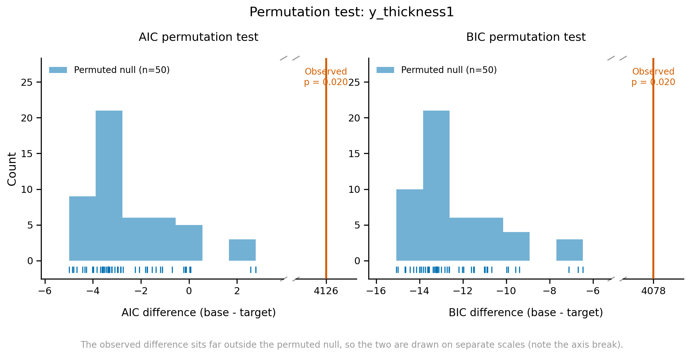

Permutation Testing#
model_utils.
run_models_with_permutation#
run_models_with_permutation(create_model_func, y_val_columns, df_train, additional_features,
base_formula, target_formula, x_vals=['age', 'sex', 'site'],
main_folder=None, save_log=True, num_cores=None, force_overwrite=False,
n_permutations=None, random_seed=None, use_multiprocessing=True,
save_models=False, eval_data=None, affected=None, func_name=None)
Performs permutation tests to assess the significance of additional features by randomly shuffling the target variable and comparing AIC/BIC differences. Low p-values (< 0.05) suggest significant improvement.
Process:
1. Fits base and target models on original data
2. Calculates original AIC and BIC differences
3. Performs multiple permutations by shuffling y-values
4. Fits models on each permuted dataset
5. Computes p-values by comparing original to permuted differences: p = (1 + k) / (1 + n), where n is the number of permutations that fitted and k the number of them with a difference at least as large as the original one. So p is never 0; the smallest possible value is 1 / (n + 1), e.g. 0.001 with 999 permutations. Use 1000 or more permutations when you test many regions and correct for multiple testing
Permutations whose models fail to fit are left out of the p-values; the column ‘Failed permutations’ counts them and a warning is given. If no permutation fits, the p-value is NaN.
Parameters:
create_model_func : callable
Function to create a GAMLSS model
y_val_columns : list of str
List of y-value column names to model (one outcome may also be given as a string, e.g. 'thickness'). All outcomes and formulas are checked before anything is fitted, and one error lists every problem found
df_train : pandas.DataFrame
Training dataframe
additional_features : list of str
Additional features to include in the target model
base_formula : dict
Dictionary specifying the base model formula
target_formula : dict
Dictionary specifying the target model formula
x_vals : list of str, default=[‘age’, ‘sex’, ‘site’]
List of predictor variables
main_folder : str, default=’results’
Folder for saving results and logs
save_log : bool, default=True
Whether to save logs
num_cores : int, optional
Number of CPU cores for multiprocessing (auto-detected if None)
force_overwrite : bool, default=False
Whether to overwrite existing cached results. If False, a result saved earlier in main_folder is reused only when it was made with the same settings (formulas, model code, data, number of permutations, evaluation data); results made with other settings are computed again, with a warning. The settings are saved next to each result in a small _settings.json file
n_permutations : int, optional
Number of permutations to perform
random_seed : int, default=0
Seed for random number generator
use_multiprocessing : bool, default=True
Whether to use multiprocessing for permutations
save_models : bool, default=False
Whether to save fitted models
eval_data : pandas.DataFrame, optional
DataFrame for evaluation
affected : array-like, optional
Array indicating affected status for evaluation. If None, assumes all subjects are healthy. It must have one value per row of eval_data (checked before anything is fitted)
func_name : str, optional
Not needed; leave it out (the model’s own family is always used). Still accepted so that older code keeps working (a different family raises an error); passing it shows a FutureWarning and it will be removed in the next version
Returns:
permutation_df : pandas.DataFrame
Permutation test results with p-values and convergence rates
eval_results : dict, optional
Unshuffled evaluation results (if eval_data provided)
Examples:
import multiprocessing as mp
import matplotlib.pyplot as plt
from normgamlss.gamlss_main import Gamlss
from normgamlss.model_utils import run_models_with_permutation
# This function gives us the flexibility on what we want to change and what we want to keep constant
# For example, we can keep the nu and tau formula fixed by removing it from this creat_model_func and in the next cell we can
# just change the other parameters or even change the way we want to input
# RS(10) keeps this example fast (each permutation fits two models). The fits do not
# converge in 10 iterations, so 'Convergence Rate' in the results below is 0; in a real
# analysis use a method that converges, e.g. mixed(10, 100) as in the sections above.
def create_model_func(model_name, x_vals, y_val, mu_formula, sigma_formula, nu_formula, tau_formula):
def model_func(data):
gamlss_model = Gamlss(model_name, x_vals, y_val)
gamlss_model.fit(
r_code=f"""
model <- gamlss(
y ~ {mu_formula},
sigma.formula = ~ {sigma_formula},
nu.formula = ~ {nu_formula},
tau.formula = ~ {tau_formula},
family = SHASH(),
method = RS(10)
)
""",
data=data
)
return gamlss_model
return model_func
#### Preparing the input
main_folder = r'../../results/permutation_test'
num_cores = mp.cpu_count() # Get the number of CPU cores
y_val_columns = ['y_thickness1','y_thickness2', 'y_thickness3', 'y_thickness4']
additional_features = ['feature_volume1', 'feature_volume2']
# Formula's for baseline and target
base_formula = {'mu_formula': 'pvc(age, by = as.factor(sex)) + re(random=~1|site)',
'sigma_formula': 'pvc(age) + re(random=~1|site)',
'nu_formula': '1',
'tau_formula': '1'}
target_formula = {'mu_formula': 'pvc(age, by = as.factor(sex)) + re(random=~1|site) + feature_volume1 + feature_volume2',
'sigma_formula': 'pvc(age)+ re(random=~1|site)',
'nu_formula': '1',
'tau_formula': '1'}
print(f"Number of CPU cores: {num_cores}")
Number of CPU cores: 28
train_data1.columns
Index(['site', 'sex', 'age', 'feature_volume1', 'feature_volume2',
'feature_volume3', 'feature_volume4', 'feature_volume5', 'y_thickness1',
'y_thickness2', 'y_thickness3', 'y_thickness4'],
dtype='object')
# Usage example:
permutation_results, eval_results = run_models_with_permutation(
create_model_func=create_model_func,
y_val_columns=y_val_columns,
df_train=train_data1,
eval_data=test_data1,
affected = test_data1['affected'],
additional_features=additional_features,
base_formula=base_formula,
target_formula=target_formula,
x_vals=['age', 'sex', 'site'],
main_folder=main_folder,
save_log=True,
num_cores=8,
force_overwrite=True,
n_permutations=50, # Set to None to skip permutation testing
random_seed=0, # Set a random seed for reproducibility
use_multiprocessing = True,
save_models= True
)
2026-10-29 18:56:41,108 - INFO - Main folder: ../../results/permutation_test
2026-10-29 18:56:41,109 - INFO - Cache folder: ../../results/permutation_test/model_cache
2026-10-29 18:56:41,110 - INFO - Log folder: ../../results/permutation_test/model_logs
2026-10-29 18:56:41,112 - INFO - Using 8 CPU cores
2026-10-29 18:56:41,113 - INFO - Using random seed: 0
2026-10-29 18:56:41,114 - INFO - Generated 50 permutation seeds
Processing y_val columns: 0%| | 0/4 [00:00<?, ?it/s]
2026-10-29 18:56:41,165 - INFO - Processing permutation for y_thickness1
2026-10-29 18:56:41,166 - INFO - Starting permutation test for y_thickness1 with 50 permutations
GAMLSS-RS iteration 1: Global Deviance = 3517.72
GAMLSS-RS iteration 2: Global Deviance = 3438.841
GAMLSS-RS iteration 3: Global Deviance = 3380.714
GAMLSS-RS iteration 4: Global Deviance = 3337
GAMLSS-RS iteration 5: Global Deviance = 3302.682
GAMLSS-RS iteration 6: Global Deviance = 3274.515
GAMLSS-RS iteration 7: Global Deviance = 3251.364
GAMLSS-RS iteration 8: Global Deviance = 3232.242
GAMLSS-RS iteration 9: Global Deviance = 3216.26
GAMLSS-RS iteration 10: Global Deviance = 3202.732
GAMLSS-RS iteration 1: Global Deviance = -811.4164
GAMLSS-RS iteration 2: Global Deviance = -865.3043
GAMLSS-RS iteration 3: Global Deviance = -885.1787
GAMLSS-RS iteration 4: Global Deviance = -899.9439
GAMLSS-RS iteration 5: Global Deviance = -911.4436
GAMLSS-RS iteration 6: Global Deviance = -920.5959
GAMLSS-RS iteration 7: Global Deviance = -927.8499
GAMLSS-RS iteration 8: Global Deviance = -933.7868
GAMLSS-RS iteration 9: Global Deviance = -938.4176
GAMLSS-RS iteration 10: Global Deviance = -942.3217
Using 370 healthy subjects out of 470 total subjects for evaluation
Using 370 healthy subjects out of 470 total subjects for evaluation
2026-10-29 18:58:05,103 - INFO - Successfully evaluated unshuffled base model for y_thickness1
Using 370 healthy subjects out of 470 total subjects for evaluation
Using 370 healthy subjects out of 470 total subjects for evaluation
2026-10-29 18:58:05,659 - INFO - Successfully evaluated unshuffled target model for y_thickness1
Model saved to ../../results/permutation_test/model_cache/saved_models/model_y_thickness1_base_unshuffled.rds
Model saved to ../../results/permutation_test/model_cache/saved_models/model_y_thickness1_target_unshuffled.rds
2026-10-29 18:58:06,504 - INFO - Starting permutation for y_thickness1 with seed 67062438
2026-10-29 18:58:06,504 - INFO - Starting permutation for y_thickness1 with seed 12428326
2026-10-29 18:58:06,505 - INFO - Starting permutation for y_thickness1 with seed 85062380
2026-10-29 18:58:06,508 - INFO - Creating base model for y_thickness1 with seed 67062438
2026-10-29 18:58:06,507 - INFO - Starting permutation for y_thickness1 with seed 55431479
2026-10-29 18:58:06,509 - INFO - Creating base model for y_thickness1 with seed 85062380
2026-10-29 18:58:06,509 - INFO - Fitting base model for y_thickness1 with seed 67062438
2026-10-29 18:58:06,507 - INFO - Starting permutation for y_thickness1 with seed 51113623
2026-10-29 18:58:06,509 - INFO - Creating base model for y_thickness1 with seed 12428326
2026-10-29 18:58:06,510 - INFO - Creating base model for y_thickness1 with seed 55431479
2026-10-29 18:58:06,508 - INFO - Starting permutation for y_thickness1 with seed 26978658
2026-10-29 18:58:06,510 - INFO - Fitting base model for y_thickness1 with seed 85062380
2026-10-29 18:58:06,511 - INFO - Fitting base model for y_thickness1 with seed 12428326
2026-10-29 18:58:06,509 - INFO - Starting permutation for y_thickness1 with seed 72949631
2026-10-29 18:58:06,512 - INFO - Fitting base model for y_thickness1 with seed 55431479
2026-10-29 18:58:06,511 - INFO - Creating base model for y_thickness1 with seed 51113623
2026-10-29 18:58:06,510 - INFO - Starting permutation for y_thickness1 with seed 81585332
2026-10-29 18:58:06,512 - INFO - Creating base model for y_thickness1 with seed 26978658
2026-10-29 18:58:06,513 - INFO - Creating base model for y_thickness1 with seed 72949631
2026-10-29 18:58:06,513 - INFO - Fitting base model for y_thickness1 with seed 26978658
2026-10-29 18:58:06,513 - INFO - Fitting base model for y_thickness1 with seed 51113623
2026-10-29 18:58:06,513 - INFO - Creating base model for y_thickness1 with seed 81585332
2026-10-29 18:58:06,514 - INFO - Fitting base model for y_thickness1 with seed 72949631
2026-10-29 18:58:06,514 - INFO - Fitting base model for y_thickness1 with seed 81585332
GAMLSS-RS iteration 1: Global Deviance = 3859.256
GAMLSS-RS iteration 1: Global Deviance = 3867.506
GAMLSS-RS iteration 1: Global Deviance = 3863.017
GAMLSS-RS iteration 2: Global Deviance = 3812.3
GAMLSS-RS iteration 1: Global Deviance = 3851.069
GAMLSS-RS iteration 3: Global Deviance = 3772.811
GAMLSS-RS iteration 1: Global Deviance = 3857.447
GAMLSS-RS iteration 4: Global Deviance = 3744.765
GAMLSS-RS iteration 1: Global Deviance = 3848.636
GAMLSS-RS iteration 2: Global Deviance = 3804.687
GAMLSS-RS iteration 2: Global Deviance = 3794.792
GAMLSS-RS iteration 5: Global Deviance = 3722.149
GAMLSS-RS iteration 1: Global Deviance = 3846.139
GAMLSS-RS iteration 3: Global Deviance = 3756.991
GAMLSS-RS iteration 1: Global Deviance = 3852.589
GAMLSS-RS iteration 6: Global Deviance = 3704.146
GAMLSS-RS iteration 2: Global Deviance = 3810.208
GAMLSS-RS iteration 3: Global Deviance = 3766.08
GAMLSS-RS iteration 7: Global Deviance = 3689.918
GAMLSS-RS iteration 4: Global Deviance = 3730.137
GAMLSS-RS iteration 2: Global Deviance = 3806.102
GAMLSS-RS iteration 8: Global Deviance = 3678.745
GAMLSS-RS iteration 2: Global Deviance = 3802.089
GAMLSS-RS iteration 5: Global Deviance = 3709.347
GAMLSS-RS iteration 9: Global Deviance = 3669.538
GAMLSS-RS iteration 6: Global Deviance = 3692.498
GAMLSS-RS iteration 7: Global Deviance = 3679.055
GAMLSS-RS iteration 2: Global Deviance = 3794.21
GAMLSS-RS iteration 10: Global Deviance = 3661.982
2026-10-29 18:58:22,529 - INFO - Base model fitted successfully for y_thickness1 with seed 26978658
2026-10-29 18:58:22,532 - INFO - Creating target model for y_thickness1 with seed 26978658
2026-10-29 18:58:22,533 - INFO - Fitting target model for y_thickness1 with seed 26978658
GAMLSS-RS iteration 4: Global Deviance = 3737.501
GAMLSS-RS iteration 8: Global Deviance = 3668.372
GAMLSS-RS iteration 3: Global Deviance = 3771.664
GAMLSS-RS iteration 9: Global Deviance = 3659.472
GAMLSS-RS iteration 10: Global Deviance = 3652.002
2026-10-29 18:58:24,179 - INFO - Base model fitted successfully for y_thickness1 with seed 72949631
2026-10-29 18:58:24,182 - INFO - Creating target model for y_thickness1 with seed 72949631
2026-10-29 18:58:24,182 - INFO - Fitting target model for y_thickness1 with seed 72949631
GAMLSS-RS iteration 3: Global Deviance = 3766.596
GAMLSS-RS iteration 1: Global Deviance = 3864.615
GAMLSS-RS iteration 3: Global Deviance = 3769.48
GAMLSS-RS iteration 2: Global Deviance = 3801.355
GAMLSS-RS iteration 1: Global Deviance = 3850.198
GAMLSS-RS iteration 2: Global Deviance = 3810.254
GAMLSS-RS iteration 3: Global Deviance = 3763.203
GAMLSS-RS iteration 4: Global Deviance = 3735.508
GAMLSS-RS iteration 3: Global Deviance = 3771.277
GAMLSS-RS iteration 4: Global Deviance = 3743.176
GAMLSS-RS iteration 5: Global Deviance = 3715.846
GAMLSS-RS iteration 5: Global Deviance = 3720.405
GAMLSS-RS iteration 2: Global Deviance = 3796.285
GAMLSS-RS iteration 5: Global Deviance = 3713.804
GAMLSS-RS iteration 4: Global Deviance = 3740.006
GAMLSS-RS iteration 3: Global Deviance = 3757.62
GAMLSS-RS iteration 4: Global Deviance = 3742.889
GAMLSS-RS iteration 6: Global Deviance = 3702.891
GAMLSS-RS iteration 3: Global Deviance = 3757.888
GAMLSS-RS iteration 5: Global Deviance = 3720.653
GAMLSS-RS iteration 6: Global Deviance = 3696.324
GAMLSS-RS iteration 4: Global Deviance = 3742.448
GAMLSS-RS iteration 5: Global Deviance = 3718.868
GAMLSS-RS iteration 4: Global Deviance = 3729.987
GAMLSS-RS iteration 6: Global Deviance = 3698.907
GAMLSS-RS iteration 7: Global Deviance = 3688.713
GAMLSS-RS iteration 5: Global Deviance = 3708.186
GAMLSS-RS iteration 7: Global Deviance = 3682.662
GAMLSS-RS iteration 7: Global Deviance = 3685.775
GAMLSS-RS iteration 6: Global Deviance = 3703.848
GAMLSS-RS iteration 8: Global Deviance = 3677.604
GAMLSS-RS iteration 8: Global Deviance = 3675.373
GAMLSS-RS iteration 6: Global Deviance = 3690.966
GAMLSS-RS iteration 4: Global Deviance = 3728.438
GAMLSS-RS iteration 8: Global Deviance = 3671.541
GAMLSS-RS iteration 9: Global Deviance = 3666.727
GAMLSS-RS iteration 9: Global Deviance = 3668.806
GAMLSS-RS iteration 7: Global Deviance = 3677.71
GAMLSS-RS iteration 7: Global Deviance = 3690.305
GAMLSS-RS iteration 10: Global Deviance = 3659.346
2026-10-29 18:58:36,418 - INFO - Base model fitted successfully for y_thickness1 with seed 85062380
2026-10-29 18:58:36,420 - INFO - Creating target model for y_thickness1 with seed 85062380
2026-10-29 18:58:36,421 - INFO - Fitting target model for y_thickness1 with seed 85062380
GAMLSS-RS iteration 9: Global Deviance = 3663.464
GAMLSS-RS iteration 8: Global Deviance = 3667.086
GAMLSS-RS iteration 10: Global Deviance = 3661.221
2026-10-29 18:58:37,217 - INFO - Target model fitted successfully for y_thickness1 with seed 26978658
2026-10-29 18:58:37,219 - INFO - Calculating metrics for y_thickness1 with seed 26978658
GAMLSS-RS iteration 8: Global Deviance = 3679.427
Model saved to ../../results/permutation_test/model_cache/saved_models/model_y_thickness1_base_perm_26978658.rds
GAMLSS-RS iteration 6: Global Deviance = 3702.429
Model saved to ../../results/permutation_test/model_cache/saved_models/model_y_thickness1_target_perm_26978658.rds
2026-10-29 18:58:38,023 - INFO - Permutation completed successfully for y_thickness1 with seed 26978658. Time taken: 31.51 seconds
GAMLSS-RS iteration 9: Global Deviance = 3658.208
GAMLSS-RS iteration 9: Global Deviance = 3670.564
GAMLSS-RS iteration 1: Global Deviance = 3852.697
GAMLSS-RS iteration 5: Global Deviance = 3706.008
GAMLSS-RS iteration 10: Global Deviance = 3650.742
2026-10-29 18:58:39,027 - INFO - Target model fitted successfully for y_thickness1 with seed 72949631
2026-10-29 18:58:39,029 - INFO - Calculating metrics for y_thickness1 with seed 72949631
Model saved to ../../results/permutation_test/model_cache/saved_models/model_y_thickness1_base_perm_72949631.rds
GAMLSS-RS iteration 5: Global Deviance = 3720.956
2026-10-29 18:58:39,633 - INFO - Starting permutation for y_thickness1 with seed 8039963
2026-10-29 18:58:39,635 - INFO - Creating base model for y_thickness1 with seed 8039963
2026-10-29 18:58:39,636 - INFO - Fitting base model for y_thickness1 with seed 8039963
Model saved to ../../results/permutation_test/model_cache/saved_models/model_y_thickness1_target_perm_72949631.rds
2026-10-29 18:58:39,727 - INFO - Permutation completed successfully for y_thickness1 with seed 72949631. Time taken: 33.22 seconds
GAMLSS-RS iteration 10: Global Deviance = 3662.956
2026-10-29 18:58:40,065 - INFO - Base model fitted successfully for y_thickness1 with seed 51113623
2026-10-29 18:58:40,067 - INFO - Creating target model for y_thickness1 with seed 51113623
2026-10-29 18:58:40,068 - INFO - Fitting target model for y_thickness1 with seed 51113623
GAMLSS-RS iteration 10: Global Deviance = 3656.296
2026-10-29 18:58:40,719 - INFO - Base model fitted successfully for y_thickness1 with seed 67062438
2026-10-29 18:58:40,721 - INFO - Creating target model for y_thickness1 with seed 67062438
2026-10-29 18:58:40,722 - INFO - Fitting target model for y_thickness1 with seed 67062438
GAMLSS-RS iteration 7: Global Deviance = 3689.116
2026-10-29 18:58:41,161 - INFO - Starting permutation for y_thickness1 with seed 55991727
2026-10-29 18:58:41,163 - INFO - Creating base model for y_thickness1 with seed 55991727
2026-10-29 18:58:41,164 - INFO - Fitting base model for y_thickness1 with seed 55991727
GAMLSS-RS iteration 1: Global Deviance = 3851.763
GAMLSS-RS iteration 6: Global Deviance = 3688.799
GAMLSS-RS iteration 2: Global Deviance = 3800.278
GAMLSS-RS iteration 3: Global Deviance = 3762.53
GAMLSS-RS iteration 2: Global Deviance = 3797.63
GAMLSS-RS iteration 1: Global Deviance = 3862.575
GAMLSS-RS iteration 4: Global Deviance = 3734.854
GAMLSS-RS iteration 8: Global Deviance = 3678.566
GAMLSS-RS iteration 5: Global Deviance = 3713.267
GAMLSS-RS iteration 7: Global Deviance = 3675.297
GAMLSS-RS iteration 9: Global Deviance = 3669.983
GAMLSS-RS iteration 6: Global Deviance = 3696.597
GAMLSS-RS iteration 10: Global Deviance = 3662.862
2026-10-29 18:58:45,433 - INFO - Base model fitted successfully for y_thickness1 with seed 55431479
2026-10-29 18:58:45,436 - INFO - Creating target model for y_thickness1 with seed 55431479
2026-10-29 18:58:45,436 - INFO - Fitting target model for y_thickness1 with seed 55431479
GAMLSS-RS iteration 1: Global Deviance = 3842.603
GAMLSS-RS iteration 1: Global Deviance = 3849.275
GAMLSS-RS iteration 7: Global Deviance = 3683.325
GAMLSS-RS iteration 8: Global Deviance = 3672.836
GAMLSS-RS iteration 8: Global Deviance = 3664.612
GAMLSS-RS iteration 6: Global Deviance = 3704.223
GAMLSS-RS iteration 9: Global Deviance = 3663.841
GAMLSS-RS iteration 3: Global Deviance = 3759.025
GAMLSS-RS iteration 10: Global Deviance = 3656.456
2026-10-29 18:58:48,599 - INFO - Base model fitted successfully for y_thickness1 with seed 8039963
2026-10-29 18:58:48,601 - INFO - Creating target model for y_thickness1 with seed 8039963
2026-10-29 18:58:48,602 - INFO - Fitting target model for y_thickness1 with seed 8039963
GAMLSS-RS iteration 9: Global Deviance = 3655.821
GAMLSS-RS iteration 2: Global Deviance = 3809.866
GAMLSS-RS iteration 1: Global Deviance = 3850.635
GAMLSS-RS iteration 2GAMLSS-RS iteration : Global Deviance = 13794.014: Global Deviance =
3848.578
GAMLSS-RS iteration 2: Global Deviance = 3800.415
GAMLSS-RS iteration 3: Global Deviance = 3763.328
GAMLSS-RS iteration 10: Global Deviance = 3648.583
2026-10-29 18:58:51,890 - INFO - Base model fitted successfully for y_thickness1 with seed 12428326
2026-10-29 18:58:51,893 - INFO - Creating target model for y_thickness1 with seed 12428326
2026-10-29 18:58:51,894 - INFO - Fitting target model for y_thickness1 with seed 12428326
GAMLSS-RS iteration 4: Global Deviance = 3735.872
GAMLSS-RS iteration 2: Global Deviance = 3803.02
GAMLSS-RS iteration 5: Global Deviance = 3714.377
GAMLSS-RS iteration 6: Global Deviance = 3697.639
GAMLSS-RS iteration 7: Global Deviance = 3690.996
GAMLSS-RS iteration 4: Global Deviance = 3730.452
GAMLSS-RS iteration 7: Global Deviance = 3684.279
GAMLSS-RS iteration 3: Global Deviance = 3756.851
GAMLSS-RS iteration 8: Global Deviance = 3673.343
GAMLSS-RS iteration 3: Global Deviance = 3771.396
GAMLSS-RS iteration 9: Global Deviance = 3664.116
GAMLSS-RS iteration 10: Global Deviance = 3656.73
2026-10-29 18:58:57,867 - INFO - Target model fitted successfully for y_thickness1 with seed 8039963
2026-10-29 18:58:57,868 - INFO - Calculating metrics for y_thickness1 with seed 8039963
Model saved to ../../results/permutation_test/model_cache/saved_models/model_y_thickness1_base_perm_8039963.rds
GAMLSS-RS iteration 1: Global Deviance = 3844.041
Model saved to ../../results/permutation_test/model_cache/saved_models/model_y_thickness1_target_perm_8039963.rds
2026-10-29 18:58:58,560 - INFO - Permutation completed successfully for y_thickness1 with seed 8039963. Time taken: 18.93 seconds
GAMLSS-RS iteration 2: Global Deviance = 3801.348
GAMLSS-RS iteration 4: Global Deviance = 3729.41
GAMLSS-RS iteration 5: Global Deviance = 3708.758
GAMLSS-RS iteration 3: Global Deviance = 3767.97
2026-10-29 18:58:59,934 - INFO - Starting permutation for y_thickness1 with seed 85740407
2026-10-29 18:58:59,936 - INFO - Creating base model for y_thickness1 with seed 85740407
2026-10-29 18:58:59,937 - INFO - Fitting base model for y_thickness1 with seed 85740407
GAMLSS-RS iteration 8: Global Deviance = 3680.221
GAMLSS-RS iteration 9: Global Deviance = 3671.282
GAMLSS-RS iteration 10: Global Deviance = 3663.872
2026-10-29 18:59:01,914 - INFO - Base model fitted successfully for y_thickness1 with seed 81585332
2026-10-29 18:59:01,917 - INFO - Creating target model for y_thickness1 with seed 81585332
2026-10-29 18:59:01,917 - INFO - Fitting target model for y_thickness1 with seed 81585332
GAMLSS-RS iteration 5: Global Deviance = 3707.784
GAMLSS-RS iteration 6: Global Deviance = 3691.777
GAMLSS-RS iteration 1: Global Deviance = 3865.931
GAMLSS-RS iteration 6: Global Deviance = 3690.59
GAMLSS-RS iteration 7: Global Deviance = 3678.794
GAMLSS-RS iteration 4: Global Deviance = 3742.912
GAMLSS-RS iteration 8: Global Deviance = 3668.415GAMLSS-RS iteration
7: Global Deviance = 3677.25
GAMLSS-RS iteration 5: Global Deviance = 3720.622
GAMLSS-RS iteration 2: Global Deviance = 3810.852
GAMLSS-RS iteration 3: Global Deviance = 3765.269
GAMLSS-RS iteration 9: Global Deviance = 3659.885
GAMLSS-RS iteration 8: Global Deviance = 3667.68
GAMLSS-RS iteration 10: Global Deviance = 3652.568
2026-10-29 18:59:06,358 - INFO - Target model fitted successfully for y_thickness1 with seed 85062380
2026-10-29 18:59:06,361 - INFO - Calculating metrics for y_thickness1 with seed 85062380
GAMLSS-RS iteration 1: Global Deviance = 3848.054
GAMLSS-RS iteration 9: Global Deviance = 3659.564
Model saved to ../../results/permutation_test/model_cache/saved_models/model_y_thickness1_base_perm_85062380.rds
Model saved to ../../results/permutation_test/model_cache/saved_models/model_y_thickness1_target_perm_85062380.rds
2026-10-29 18:59:07,149 - INFO - Permutation completed successfully for y_thickness1 with seed 85062380. Time taken: 60.64 seconds
GAMLSS-RS iteration 2: Global Deviance = 3792.445
GAMLSS-RS iteration 6: Global Deviance = 3703.759
GAMLSS-RS iteration 10: Global Deviance = 3652.217
2026-10-29 18:59:07,535 - INFO - Target model fitted successfully for y_thickness1 with seed 67062438
2026-10-29 18:59:07,537 - INFO - Calculating metrics for y_thickness1 with seed 67062438
Model saved to ../../results/permutation_test/model_cache/saved_models/model_y_thickness1_base_perm_67062438.rds
Model saved to ../../results/permutation_test/model_cache/saved_models/model_y_thickness1_target_perm_67062438.rds
2026-10-29 18:59:08,245 - INFO - Permutation completed successfully for y_thickness1 with seed 67062438. Time taken: 61.74 seconds
GAMLSS-RS iteration 4: Global Deviance = 3742.408
2026-10-29 18:59:08,867 - INFO - Starting permutation for y_thickness1 with seed 64941549
2026-10-29 18:59:08,870 - INFO - Creating base model for y_thickness1 with seed 64941549
2026-10-29 18:59:08,871 - INFO - Fitting base model for y_thickness1 with seed 64941549
GAMLSS-RS iteration 3: Global Deviance = 3771.53
GAMLSS-RS iteration 7: Global Deviance = 3690.274
2026-10-29 18:59:09,744 - INFO - Starting permutation for y_thickness1 with seed 17565558
2026-10-29 18:59:09,746 - INFO - Creating base model for y_thickness1 with seed 17565558
2026-10-29 18:59:09,747 - INFO - Fitting base model for y_thickness1 with seed 17565558
GAMLSS-RS iteration 4: Global Deviance = 3737.673
GAMLSS-RS iteration 1: Global Deviance = 3844.479
GAMLSS-RS iteration 8: Global Deviance = 3679.41
GAMLSS-RS iteration 1: Global Deviance = 3850.855
GAMLSS-RS iteration 4: Global Deviance = 3742.485
GAMLSS-RS iteration 5: Global Deviance = 3722.088
GAMLSS-RS iteration 9: Global Deviance = 3670.527
GAMLSS-RS iteration 5: Global Deviance = 3716.375
GAMLSS-RS iteration 10: Global Deviance = 3662.909
2026-10-29 18:59:15,072 - INFO - Target model fitted successfully for y_thickness1 with seed 51113623
2026-10-29 18:59:15,074 - INFO - Calculating metrics for y_thickness1 with seed 51113623
GAMLSS-RS iteration 2: Global Deviance = 3802.592
Model saved to ../../results/permutation_test/model_cache/saved_models/model_y_thickness1_base_perm_51113623.rds
Model saved to ../../results/permutation_test/model_cache/saved_models/model_y_thickness1_target_perm_51113623.rds
2026-10-29 18:59:15,776 - INFO - Permutation completed successfully for y_thickness1 with seed 51113623. Time taken: 69.27 seconds
GAMLSS-RS iteration 5: Global Deviance = 3720.417
2026-10-29 18:59:17,232 - INFO - Starting permutation for y_thickness1 with seed 17526722
2026-10-29 18:59:17,235 - INFO - Creating base model for y_thickness1 with seed 17526722
2026-10-29 18:59:17,235 - INFO - Fitting base model for y_thickness1 with seed 17526722
GAMLSS-RS iteration 6: Global Deviance = 3705.151
GAMLSS-RS iteration 2: Global Deviance = 3801.814
GAMLSS-RS iteration 3: Global Deviance = 3755.675
GAMLSS-RS iteration 2: Global Deviance = 3795.706
GAMLSS-RS iteration 6: Global Deviance = 3699.905
GAMLSS-RS iteration 6: Global Deviance = 3703.409
GAMLSS-RS iteration 7: Global Deviance = 3691.936
GAMLSS-RS iteration 1: Global Deviance = 3842.231
GAMLSS-RS iteration 4: Global Deviance = 3726.099
GAMLSS-RS iteration 3: Global Deviance = 3769.67
GAMLSS-RS iteration 7: Global Deviance = 3686.528
GAMLSS-RS iteration 7: Global Deviance = 3689.875
GAMLSS-RS iteration 8: Global Deviance = 3681.376
GAMLSS-RS iteration 5: Global Deviance = 3703.927
GAMLSS-RS iteration 8: Global Deviance = 3675.931
GAMLSS-RS iteration 3: Global Deviance = 3765.651
GAMLSS-RS iteration 9: Global Deviance = 3672.458
GAMLSS-RS iteration 9: Global Deviance = 3667.117
GAMLSS-RS iteration 10: Global Deviance = 3665.399
2026-10-29 18:59:26,630 - INFO - Base model fitted successfully for y_thickness1 with seed 55991727
2026-10-29 18:59:26,632 - INFO - Creating target model for y_thickness1 with seed 55991727
2026-10-29 18:59:26,633 - INFO - Fitting target model for y_thickness1 with seed 55991727
GAMLSS-RS iteration 8: Global Deviance = 3679.302
GAMLSS-RS iteration 10: Global Deviance = 3660.034
2026-10-29 18:59:27,280 - INFO - Target model fitted successfully for y_thickness1 with seed 55431479
2026-10-29 18:59:27,281 - INFO - Calculating metrics for y_thickness1 with seed 55431479
Model saved to ../../results/permutation_test/model_cache/saved_models/model_y_thickness1_base_perm_55431479.rds
Model saved to ../../results/permutation_test/model_cache/saved_models/model_y_thickness1_target_perm_55431479.rds
2026-10-29 18:59:27,973 - INFO - Permutation completed successfully for y_thickness1 with seed 55431479. Time taken: 81.47 seconds
GAMLSS-RS iteration 6: Global Deviance = 3686.985
GAMLSS-RS iteration 2: Global Deviance = 3793.543
GAMLSS-RS iteration 3: Global Deviance = 3759.345
2026-10-29 18:59:29,445 - INFO - Starting permutation for y_thickness1 with seed 86317878
2026-10-29 18:59:29,447 - INFO - Creating base model for y_thickness1 with seed 86317878
2026-10-29 18:59:29,448 - INFO - Fitting base model for y_thickness1 with seed 86317878
GAMLSS-RS iteration 7: Global Deviance = 3673.641
GAMLSS-RS iteration 4: Global Deviance = 3742.691
GAMLSS-RS iteration 1: Global Deviance = 3847.401
GAMLSS-RS iteration 9: Global Deviance = 3670.231
GAMLSS-RS iteration 8: Global Deviance = 3663.09
GAMLSS-RS iteration 9: Global Deviance = 3653.357
GAMLSS-RS iteration 4: Global Deviance = 3738.526
GAMLSS-RS iteration 10: Global Deviance = 3646.845
2026-10-29 18:59:33,466 - INFO - Target model fitted successfully for y_thickness1 with seed 12428326
2026-10-29 18:59:33,468 - INFO - Calculating metrics for y_thickness1 with seed 12428326
Model saved to ../../results/permutation_test/model_cache/saved_models/model_y_thickness1_base_perm_12428326.rds
GAMLSS-RS iteration 1: Global Deviance = 3844.258
Model saved to ../../results/permutation_test/model_cache/saved_models/model_y_thickness1_target_perm_12428326.rds
2026-10-29 18:59:34,161 - INFO - Permutation completed successfully for y_thickness1 with seed 12428326. Time taken: 87.66 seconds
GAMLSS-RS iteration 3: Global Deviance = 3757.009
GAMLSS-RS iteration 10: Global Deviance = 3662.597
2026-10-29 18:59:34,904 - INFO - Base model fitted successfully for y_thickness1 with seed 85740407
2026-10-29 18:59:34,906 - INFO - Creating target model for y_thickness1 with seed 85740407
2026-10-29 18:59:34,907 - INFO - Fitting target model for y_thickness1 with seed 85740407
2026-10-29 18:59:35,628 - INFO - Starting permutation for y_thickness1 with seed 7524010
2026-10-29 18:59:35,630 - INFO - Creating base model for y_thickness1 with seed 7524010
2026-10-29 18:59:35,631 - INFO - Fitting base model for y_thickness1 with seed 7524010
GAMLSS-RS iteration 4: Global Deviance = 3732.275
GAMLSS-RS iteration 2: Global Deviance = 3802.687
GAMLSS-RS iteration 1: Global Deviance = 3866.19
GAMLSS-RS iteration 5: Global Deviance = 3720.991
GAMLSS-RS iteration 1: Global Deviance = 3840.492
GAMLSS-RS iteration 2: Global Deviance = 3811.346
GAMLSS-RS iteration 2: Global Deviance = 3793.95
GAMLSS-RS iteration 5: Global Deviance = 3718.248
GAMLSS-RS iteration 4: Global Deviance = 3730.916
GAMLSS-RS iteration 3: Global Deviance = 3771.905
GAMLSS-RS iteration 5: Global Deviance = 3711.604
GAMLSS-RS iteration 3: Global Deviance = 3768.036
GAMLSS-RS iteration 6: Global Deviance = 3701.552
GAMLSS-RS iteration 3: Global Deviance = 3756.963
GAMLSS-RS iteration 2: Global Deviance = 3795.444
GAMLSS-RS iteration 6: Global Deviance = 3704.114
GAMLSS-RS iteration 4: Global Deviance = 3742.631
GAMLSS-RS iteration 5: Global Deviance = 3713.208
GAMLSS-RS iteration 7: Global Deviance = 3688.517
GAMLSS-RS iteration 5: Global Deviance = 3720.32
GAMLSS-RS iteration 4: Global Deviance = 3730.196
GAMLSS-RS iteration 6: Global Deviance = 3695.093
GAMLSS-RS iteration 3: Global Deviance = 3761.366
GAMLSS-RS iteration 4: Global Deviance = 3742.645
GAMLSS-RS iteration 7: Global Deviance = 3690.77
GAMLSS-RS iteration 8: Global Deviance = 3677.64
GAMLSS-RS iteration 6: Global Deviance = 3703.087
GAMLSS-RS iteration 5: Global Deviance = 3708.717
GAMLSS-RS iteration 6: Global Deviance = 3698.602
GAMLSS-RS iteration 5: Global Deviance = 3721.976
GAMLSS-RS iteration 7: Global Deviance = 3689.35
GAMLSS-RS iteration 7: Global Deviance = 3682.073
GAMLSS-RS iteration 9: Global Deviance = 3668.773
GAMLSS-RS iteration 6: Global Deviance = 3692.245
GAMLSS-RS iteration 10: Global Deviance = 3661.121
2026-10-29 19:00:00,065 - INFO - Base model fitted successfully for y_thickness1 with seed 17565558
2026-10-29 19:00:00,067 - INFO - Creating target model for y_thickness1 with seed 17565558
2026-10-29 19:00:00,068 - INFO - Fitting target model for y_thickness1 with seed 17565558
GAMLSS-RS iteration 4: Global Deviance = 3734.532
GAMLSS-RS iteration 8: Global Deviance = 3679.934
GAMLSS-RS iteration 8: Global Deviance = 3678.596
GAMLSS-RS iteration 9: Global Deviance = 3670.96
GAMLSS-RS iteration 10: Global Deviance = 3663.61
2026-10-29 19:00:02,466 - INFO - Target model fitted successfully for y_thickness1 with seed 81585332
2026-10-29 19:00:02,468 - INFO - Calculating metrics for y_thickness1 with seed 81585332
GAMLSS-RS iteration 6: Global Deviance = 3705.076
Model saved to ../../results/permutation_test/model_cache/saved_models/model_y_thickness1_base_perm_81585332.rds
GAMLSS-RS iteration 1: Global Deviance = 3848.847
GAMLSS-RS iteration 7: Global Deviance = 3685.448
Model saved to ../../results/permutation_test/model_cache/saved_models/model_y_thickness1_target_perm_81585332.rds
2026-10-29 19:00:03,168 - INFO - Permutation completed successfully for y_thickness1 with seed 81585332. Time taken: 116.66 seconds
2026-10-29 19:00:04,622 - INFO - Starting permutation for y_thickness1 with seed 72965530
2026-10-29 19:00:04,625 - INFO - Creating base model for y_thickness1 with seed 72965530
2026-10-29 19:00:04,626 - INFO - Fitting base model for y_thickness1 with seed 72965530
GAMLSS-RS iteration 8: Global Deviance = 3674.204
GAMLSS-RS iteration 8: Global Deviance = 3671.315
GAMLSS-RS iteration 7: Global Deviance = 3679.062
GAMLSS-RS iteration 9: Global Deviance = 3669.39
GAMLSS-RS iteration 9: Global Deviance = 3665.256
GAMLSS-RS iteration 5: Global Deviance = 3713.907
GAMLSS-RS iteration 8: Global Deviance = 3667.51
GAMLSS-RS iteration 10: Global Deviance = 3657.941
2026-10-29 19:00:06,827 - INFO - Base model fitted successfully for y_thickness1 with seed 17526722
2026-10-29 19:00:06,829 - INFO - Creating target model for y_thickness1 with seed 17526722
2026-10-29 19:00:06,830 - INFO - Fitting target model for y_thickness1 with seed 17526722
GAMLSS-RS iteration 7: Global Deviance = 3691.757
GAMLSS-RS iteration 9: Global Deviance = 3658.346
GAMLSS-RS iteration 2: Global Deviance = 3799.4
GAMLSS-RS iteration 1: Global Deviance = 3867.02
GAMLSS-RS iteration 10: Global Deviance = 3650.695
2026-10-29 19:00:08,326 - INFO - Base model fitted successfully for y_thickness1 with seed 86317878
2026-10-29 19:00:08,328 - INFO - Creating target model for y_thickness1 with seed 86317878
2026-10-29 19:00:08,329 - INFO - Fitting target model for y_thickness1 with seed 86317878
GAMLSS-RS iteration 9: Global Deviance = 3662.463
GAMLSS-RS iteration 10: Global Deviance = 3655.895
2026-10-29 19:00:09,983 - INFO - Base model fitted successfully for y_thickness1 with seed 64941549
2026-10-29 19:00:09,985 - INFO - Creating target model for y_thickness1 with seed 64941549
2026-10-29 19:00:09,986 - INFO - Fitting target model for y_thickness1 with seed 64941549
GAMLSS-RS iteration 8: Global Deviance = 3680.869
GAMLSS-RS iteration 10: Global Deviance = 3661.626
2026-10-29 19:00:10,446 - INFO - Target model fitted successfully for y_thickness1 with seed 85740407
2026-10-29 19:00:10,449 - INFO - Calculating metrics for y_thickness1 with seed 85740407
Model saved to ../../results/permutation_test/model_cache/saved_models/model_y_thickness1_base_perm_85740407.rds
Model saved to ../../results/permutation_test/model_cache/saved_models/model_y_thickness1_target_perm_85740407.rds
2026-10-29 19:00:11,251 - INFO - Permutation completed successfully for y_thickness1 with seed 85740407. Time taken: 71.32 seconds
GAMLSS-RS iteration 6: Global Deviance = 3697.726
GAMLSS-RS iteration 1: Global Deviance = 3841.446
GAMLSS-RS iteration 2: Global Deviance = 3812.758
GAMLSS-RS iteration 9: Global Deviance = 3672.155
2026-10-29 19:00:12,842 - INFO - Starting permutation for y_thickness1 with seed 4097350
2026-10-29 19:00:12,844 - INFO - Creating base model for y_thickness1 with seed 4097350
2026-10-29 19:00:12,845 - INFO - Fitting base model for y_thickness1 with seed 4097350
GAMLSS-RS iteration 1: Global Deviance = 3840.524
GAMLSS-RS iteration 1: Global Deviance = 3845.332
GAMLSS-RS iteration 10: Global Deviance = 3664.972
2026-10-29 19:00:13,766 - INFO - Target model fitted successfully for y_thickness1 with seed 55991727
2026-10-29 19:00:13,768 - INFO - Calculating metrics for y_thickness1 with seed 55991727
GAMLSS-RS iteration 3: Global Deviance = 3763.608
Model saved to ../../results/permutation_test/model_cache/saved_models/model_y_thickness1_base_perm_55991727.rds
Model saved to ../../results/permutation_test/model_cache/saved_models/model_y_thickness1_target_perm_55991727.rds
2026-10-29 19:00:14,536 - INFO - Permutation completed successfully for y_thickness1 with seed 55991727. Time taken: 93.38 seconds
2026-10-29 19:00:15,886 - INFO - Starting permutation for y_thickness1 with seed 54146114
2026-10-29 19:00:15,888 - INFO - Creating base model for y_thickness1 with seed 54146114
2026-10-29 19:00:15,888 - INFO - Fitting base model for y_thickness1 with seed 54146114
GAMLSS-RS iteration 1: Global Deviance = 3835.881
GAMLSS-RS iteration 3: Global Deviance = 3773.588
GAMLSS-RS iteration 7: Global Deviance = 3684.442
GAMLSS-RS iteration 2: Global Deviance = 3792.564
GAMLSS-RS iteration 2: Global Deviance = 3796.329
GAMLSS-RS iteration 4: Global Deviance = 3736.591
GAMLSS-RS iteration 4: Global Deviance = 3744.398
GAMLSS-RS iteration 2: Global Deviance = 3792.893
GAMLSS-RS iteration 8: Global Deviance = 3673.759
GAMLSS-RS iteration 9: Global Deviance = 3664.956
GAMLSS-RS iteration 1: Global Deviance = 3836.129
GAMLSS-RS iteration 10: Global Deviance = 3657.592
2026-10-29 19:00:22,656 - INFO - Base model fitted successfully for y_thickness1 with seed 7524010
2026-10-29 19:00:22,657 - INFO - Creating target model for y_thickness1 with seed 7524010
2026-10-29 19:00:22,658 - INFO - Fitting target model for y_thickness1 with seed 7524010
GAMLSS-RS iteration 5: Global Deviance = 3721.987
GAMLSS-RS iteration 2: Global Deviance = 3792.288
GAMLSS-RS iteration 3: Global Deviance = 3756.688
GAMLSS-RS iteration 5: Global Deviance = 3716.191
GAMLSS-RS iteration 6: Global Deviance = 3704.645
GAMLSS-RS iteration 3: Global Deviance = 3754.828
GAMLSS-RS iteration 1: Global Deviance = 3835.798
GAMLSS-RS iteration 3: Global Deviance = 3759.777
GAMLSS-RS iteration 7: Global Deviance = 3690.857
GAMLSS-RS iteration 6: Global Deviance = 3699.493
GAMLSS-RS iteration 3: Global Deviance = 3759.568
GAMLSS-RS iteration 2: Global Deviance = 3793.756GAMLSS-RS iteration
8: Global Deviance = 3679.76
GAMLSS-RS iteration 4: Global Deviance = 3728.592
GAMLSS-RS iteration 4: Global Deviance = 3730.503
GAMLSS-RS iteration 2: Global Deviance = 3793.571
GAMLSS-RS iteration 7: Global Deviance = 3686.374
GAMLSS-RS iteration 4: Global Deviance = 3732.051
GAMLSS-RS iteration 9: Global Deviance = 3671.036
GAMLSS-RS iteration 5: Global Deviance = 3707.593
GAMLSS-RS iteration 3: Global Deviance = 3760.73
GAMLSS-RS iteration 10: Global Deviance = 3663.373
2026-10-29 19:00:38,416 - INFO - Base model fitted successfully for y_thickness1 with seed 72965530
2026-10-29 19:00:38,418 - INFO - Creating target model for y_thickness1 with seed 72965530
2026-10-29 19:00:38,419 - INFO - Fitting target model for y_thickness1 with seed 72965530
GAMLSS-RS iteration 8: Global Deviance = 3675.508
GAMLSS-RS iteration 3: Global Deviance = 3760.233
GAMLSS-RS iteration 4: Global Deviance = 3735.299
GAMLSS-RS iteration 6: Global Deviance = 3691.044
GAMLSS-RS iteration 5: Global Deviance = 3710.892
GAMLSS-RS iteration 5: Global Deviance = 3712.639
GAMLSS-RS iteration 9: Global Deviance = 3666.492
GAMLSS-RS iteration 4: Global Deviance = 3734.621
GAMLSS-RS iteration 7: Global Deviance = 3677.424
GAMLSS-RS iteration 10: Global Deviance = 3658.776
2026-10-29 19:00:42,536 - INFO - Target model fitted successfully for y_thickness1 with seed 17565558
2026-10-29 19:00:42,538 - INFO - Calculating metrics for y_thickness1 with seed 17565558
Model saved to ../../results/permutation_test/model_cache/saved_models/model_y_thickness1_base_perm_17565558.rds
GAMLSS-RS iteration 1: Global Deviance = 3862.39
Model saved to ../../results/permutation_test/model_cache/saved_models/model_y_thickness1_target_perm_17565558.rds
2026-10-29 19:00:43,239 - INFO - Permutation completed successfully for y_thickness1 with seed 17565558. Time taken: 93.50 seconds
GAMLSS-RS iteration 8: Global Deviance = 3666.247
2026-10-29 19:00:44,568 - INFO - Starting permutation for y_thickness1 with seed 64718949
2026-10-29 19:00:44,570 - INFO - Creating base model for y_thickness1 with seed 64718949
2026-10-29 19:00:44,571 - INFO - Fitting base model for y_thickness1 with seed 64718949
GAMLSS-RS iteration 5: Global Deviance = 3714.943
GAMLSS-RS iteration 2: Global Deviance = 3811.382
GAMLSS-RS iteration 9: Global Deviance = 3657.401
GAMLSS-RS iteration 10: Global Deviance = 3649.521
2026-10-29 19:00:48,097 - INFO - Target model fitted successfully for y_thickness1 with seed 86317878
2026-10-29 19:00:48,098 - INFO - Calculating metrics for y_thickness1 with seed 86317878
GAMLSS-RS iteration 4: Global Deviance = 3733.995
Model saved to ../../results/permutation_test/model_cache/saved_models/model_y_thickness1_base_perm_86317878.rds
GAMLSS-RS iteration 6: Global Deviance = 3694.164
Model saved to ../../results/permutation_test/model_cache/saved_models/model_y_thickness1_target_perm_86317878.rds
2026-10-29 19:00:48,791 - INFO - Permutation completed successfully for y_thickness1 with seed 86317878. Time taken: 79.35 seconds
GAMLSS-RS iteration 6: Global Deviance = 3698.742
GAMLSS-RS iteration 3: Global Deviance = 3773.128
GAMLSS-RS iteration 6: Global Deviance = 3699.247
2026-10-29 19:00:50,136 - INFO - Starting permutation for y_thickness1 with seed 76488976
2026-10-29 19:00:50,137 - INFO - Creating base model for y_thickness1 with seed 76488976
2026-10-29 19:00:50,138 - INFO - Fitting base model for y_thickness1 with seed 76488976
GAMLSS-RS iteration 5: Global Deviance = 3719.339
GAMLSS-RS iteration 1: Global Deviance = 3859.896
GAMLSS-RS iteration 7: Global Deviance = 3686.251
GAMLSS-RS iteration 4: Global Deviance = 3744.607
GAMLSS-RS iteration 5: Global Deviance = 3713.46
GAMLSS-RS iteration 7: Global Deviance = 3685.362
GAMLSS-RS iteration 7: Global Deviance = 3680.791
GAMLSS-RS iteration 1: Global Deviance = 3858.44
GAMLSS-RS iteration 8: Global Deviance = 3676.097
GAMLSS-RS iteration 5: Global Deviance = 3722.324
GAMLSS-RS iteration 8: Global Deviance = 3674.416
GAMLSS-RS iteration 9: Global Deviance = 3665.671
GAMLSS-RS iteration 6: Global Deviance = 3704.013
GAMLSS-RS iteration 10: Global Deviance = 3658.321
2026-10-29 19:00:59,298 - INFO - Target model fitted successfully for y_thickness1 with seed 17526722
2026-10-29 19:00:59,300 - INFO - Calculating metrics for y_thickness1 with seed 17526722
Model saved to ../../results/permutation_test/model_cache/saved_models/model_y_thickness1_base_perm_17526722.rds
GAMLSS-RS iteration 9: Global Deviance = 3667.512
Model saved to ../../results/permutation_test/model_cache/saved_models/model_y_thickness1_target_perm_17526722.rds
2026-10-29 19:01:00,004 - INFO - Permutation completed successfully for y_thickness1 with seed 17526722. Time taken: 102.77 seconds
GAMLSS-RS iteration 6: Global Deviance = 3705.075
GAMLSS-RS iteration 6: Global Deviance = 3697.277
GAMLSS-RS iteration 8: Global Deviance = 3669.759
2026-10-29 19:01:01,340 - INFO - Starting permutation for y_thickness1 with seed 63696138
2026-10-29 19:01:01,342 - INFO - Creating base model for y_thickness1 with seed 63696138
2026-10-29 19:01:01,343 - INFO - Fitting base model for y_thickness1 with seed 63696138
GAMLSS-RS iteration 2: Global Deviance = 3808.943
GAMLSS-RS iteration 1: Global Deviance = 3856.137
GAMLSS-RS iteration 7: Global Deviance = 3691.181
GAMLSS-RS iteration 10: Global Deviance = 3660.22
2026-10-29 19:01:03,087 - INFO - Base model fitted successfully for y_thickness1 with seed 54146114
2026-10-29 19:01:03,089 - INFO - Creating target model for y_thickness1 with seed 54146114
2026-10-29 19:01:03,090 - INFO - Fitting target model for y_thickness1 with seed 54146114
GAMLSS-RS iteration 2: Global Deviance = 3803.15
GAMLSS-RS iteration 3: Global Deviance = 3765.706
GAMLSS-RS iteration 4: Global Deviance = 3738.202
GAMLSS-RS iteration 2: Global Deviance = 3808.431
GAMLSS-RS iteration 7: Global Deviance = 3684.129
GAMLSS-RS iteration 9: Global Deviance = 3660.699
GAMLSS-RS iteration 5: Global Deviance = 3716.846
GAMLSS-RS iteration 8: Global Deviance = 3679.95
GAMLSS-RS iteration 6: Global Deviance = 3699.947
GAMLSS-RS iteration 7: Global Deviance = 3687.016
GAMLSS-RS iteration 8: Global Deviance = 3676.395
GAMLSS-RS iteration 8: Global Deviance = 3673.104
GAMLSS-RS iteration 7: Global Deviance = 3691.174
GAMLSS-RS iteration 9: Global Deviance = 3667.653
GAMLSS-RS iteration 9: Global Deviance = 3670.706
GAMLSS-RS iteration 10: Global Deviance = 3653.378
2026-10-29 19:01:09,979 - INFO - Target model fitted successfully for y_thickness1 with seed 64941549
2026-10-29 19:01:09,981 - INFO - Calculating metrics for y_thickness1 with seed 64941549
GAMLSS-RS iteration 1: Global Deviance = 3835.863
GAMLSS-RS iteration 10: Global Deviance = 3660.394
2026-10-29 19:01:10,077 - INFO - Base model fitted successfully for y_thickness1 with seed 63696138
2026-10-29 19:01:10,079 - INFO - Creating target model for y_thickness1 with seed 63696138
2026-10-29 19:01:10,080 - INFO - Fitting target model for y_thickness1 with seed 63696138
Model saved to ../../results/permutation_test/model_cache/saved_models/model_y_thickness1_base_perm_64941549.rds
Model saved to ../../results/permutation_test/model_cache/saved_models/model_y_thickness1_target_perm_64941549.rds
2026-10-29 19:01:10,755 - INFO - Permutation completed successfully for y_thickness1 with seed 64941549. Time taken: 121.89 seconds
GAMLSS-RS iteration 9: Global Deviance = 3664.316
GAMLSS-RS iteration 3: Global Deviance = 3773.049
GAMLSS-RS iteration 1: Global Deviance = 3855.657
GAMLSS-RS iteration 10: Global Deviance = 3656.826
2026-10-29 19:01:11,958 - INFO - Target model fitted successfully for y_thickness1 with seed 7524010
2026-10-29 19:01:11,960 - INFO - Calculating metrics for y_thickness1 with seed 7524010
GAMLSS-RS iteration 4: Global Deviance = 3745.91
2026-10-29 19:01:12,337 - INFO - Starting permutation for y_thickness1 with seed 76405491
2026-10-29 19:01:12,338 - INFO - Creating base model for y_thickness1 with seed 76405491
2026-10-29 19:01:12,339 - INFO - Fitting base model for y_thickness1 with seed 76405491
Model saved to ../../results/permutation_test/model_cache/saved_models/model_y_thickness1_base_perm_7524010.rds
GAMLSS-RS iteration 2: Global Deviance = 3802.637
GAMLSS-RS iteration 5: Global Deviance = 3723.948
Model saved to ../../results/permutation_test/model_cache/saved_models/model_y_thickness1_target_perm_7524010.rds
2026-10-29 19:01:12,747 - INFO - Permutation completed successfully for y_thickness1 with seed 7524010. Time taken: 97.12 seconds
GAMLSS-RS iteration 10: Global Deviance = 3662.988
2026-10-29 19:01:13,015 - INFO - Target model fitted successfully for y_thickness1 with seed 72965530
2026-10-29 19:01:13,017 - INFO - Calculating metrics for y_thickness1 with seed 72965530
GAMLSS-RS iteration 3: Global Deviance = 3764.898
Model saved to ../../results/permutation_test/model_cache/saved_models/model_y_thickness1_base_perm_72965530.rds
GAMLSS-RS iteration 4: Global Deviance = 3737.461
Model saved to ../../results/permutation_test/model_cache/saved_models/model_y_thickness1_target_perm_72965530.rds
2026-10-29 19:01:13,781 - INFO - Permutation completed successfully for y_thickness1 with seed 72965530. Time taken: 69.16 seconds
GAMLSS-RS iteration 6: Global Deviance = 3706.885
GAMLSS-RS iteration 1: Global Deviance = 3863.017
2026-10-29 19:01:14,127 - INFO - Starting permutation for y_thickness1 with seed 50362678
2026-10-29 19:01:14,129 - INFO - Creating base model for y_thickness1 with seed 50362678
2026-10-29 19:01:14,130 - INFO - Fitting base model for y_thickness1 with seed 50362678
GAMLSS-RS iteration 5: Global Deviance = 3716.123
GAMLSS-RS iteration 3: Global Deviance = 3771.592
GAMLSS-RS iteration 8: Global Deviance = 3680.809
GAMLSS-RS iteration GAMLSS-RS iteration 2: Global Deviance = 7: Global Deviance = 3810.2653693.181
2026-10-29 19:01:15,162 - INFO - Starting permutation for y_thickness1 with seed 91275523
2026-10-29 19:01:15,163 - INFO - Creating base model for y_thickness1 with seed 91275523
2026-10-29 19:01:15,164 - INFO - Fitting base model for y_thickness1 with seed 91275523
GAMLSS-RS iteration 3: Global Deviance = 3772.043GAMLSS-RS iteration
8: Global Deviance = 3681.768
GAMLSS-RS iteration 9: Global Deviance = 3671.434
GAMLSS-RS iteration 6: Global Deviance = 3699.114
GAMLSS-RS iteration 4: Global Deviance = 3744.327
GAMLSS-RS iteration 9: Global Deviance = 3672.86
GAMLSS-RS iteration 2: Global Deviance = 3796.26
GAMLSS-RS iteration 10: Global Deviance = 3663.641
2026-10-29 19:01:16,609 - INFO - Base model fitted successfully for y_thickness1 with seed 4097350
2026-10-29 19:01:16,611 - INFO - Creating target model for y_thickness1 with seed 4097350
2026-10-29 19:01:16,612 - INFO - Fitting target model for y_thickness1 with seed 4097350
GAMLSS-RS iteration 5: Global Deviance = 3722.675
GAMLSS-RS iteration 7: Global Deviance = 3686.217
GAMLSS-RS iteration 10: Global Deviance = 3665.345
2026-10-29 19:01:16,899 - INFO - Base model fitted successfully for y_thickness1 with seed 76488976
2026-10-29 19:01:16,901 - INFO - Creating target model for y_thickness1 with seed 76488976
2026-10-29 19:01:16,902 - INFO - Fitting target model for y_thickness1 with seed 76488976
GAMLSS-RS iteration 8: Global Deviance = 3675.646
GAMLSS-RS iteration 9: Global Deviance = 3666.956
GAMLSS-RS iteration 6: Global Deviance = 3705.78
GAMLSS-RS iteration 10: Global Deviance = 3659.741
2026-10-29 19:01:19,249 - INFO - Target model fitted successfully for y_thickness1 with seed 63696138
2026-10-29 19:01:19,251 - INFO - Calculating metrics for y_thickness1 with seed 63696138
GAMLSS-RS iteration 1: Global Deviance = 3849.098
Model saved to ../../results/permutation_test/model_cache/saved_models/model_y_thickness1_base_perm_63696138.rds
GAMLSS-RS iteration 1: Global Deviance = 3865.807
GAMLSS-RS iteration 7: Global Deviance = 3692.043
Model saved to ../../results/permutation_test/model_cache/saved_models/model_y_thickness1_target_perm_63696138.rds
2026-10-29 19:01:19,949 - INFO - Permutation completed successfully for y_thickness1 with seed 63696138. Time taken: 18.61 seconds
GAMLSS-RS iteration 1: Global Deviance = 3854.625
GAMLSS-RS iteration 1: Global Deviance = 3829.585
GAMLSS-RS iteration 3: Global Deviance = 3763.312
GAMLSS-RS iteration 8: Global Deviance = 3680.937
2026-10-29 19:01:21,281 - INFO - Starting permutation for y_thickness1 with seed 273849
2026-10-29 19:01:21,283 - INFO - Creating base model for y_thickness1 with seed 273849
2026-10-29 19:01:21,284 - INFO - Fitting base model for y_thickness1 with seed 273849
GAMLSS-RS iteration 9: Global Deviance = 3672.032
GAMLSS-RS iteration 1: Global Deviance = 3857.795
GAMLSS-RS iteration 10: Global Deviance = 3664.658
2026-10-29 19:01:22,898 - INFO - Base model fitted successfully for y_thickness1 with seed 76405491
2026-10-29 19:01:22,900 - INFO - Creating target model for y_thickness1 with seed 76405491
2026-10-29 19:01:22,901 - INFO - Fitting target model for y_thickness1 with seed 76405491
GAMLSS-RS iteration 2: Global Deviance = 3810.57
GAMLSS-RS iteration 2: Global Deviance = 3803.463
GAMLSS-RS iteration 3: Global Deviance = 3764.998
GAMLSS-RS iteration 4: Global Deviance = 3737.004
GAMLSS-RS iteration 4: Global Deviance = 3743.218
GAMLSS-RS iteration 5: Global Deviance = 3715.423
GAMLSS-RS iteration 2: Global Deviance = 3799.105
GAMLSS-RS iteration 4: Global Deviance = 3737.731
GAMLSS-RS iteration 2: Global Deviance = 3806.382
GAMLSS-RS iteration 3: Global Deviance = 3770.706
GAMLSS-RS iteration 6: Global Deviance = 3698.805
GAMLSS-RS iteration 1: Global Deviance = 3861.096
GAMLSS-RS iteration 7: Global Deviance = 3685.633
GAMLSS-RS iteration 8: Global Deviance = 3675.228
GAMLSS-RS iteration 2: Global Deviance = 3787.1
GAMLSS-RS iteration 9: Global Deviance = 3666.561
GAMLSS-RS iteration 5: Global Deviance = 3717.515
GAMLSS-RS iteration 4: Global Deviance = 3741.23
GAMLSS-RS iteration 10: Global Deviance = 3659.158
2026-10-29 19:01:29,979 - INFO - Base model fitted successfully for y_thickness1 with seed 273849
2026-10-29 19:01:29,981 - INFO - Creating target model for y_thickness1 with seed 273849
2026-10-29 19:01:29,982 - INFO - Fitting target model for y_thickness1 with seed 273849
GAMLSS-RS iteration 3: Global Deviance = 3762.486
GAMLSS-RS iteration 3: Global Deviance = 3771.201
GAMLSS-RS iteration 1: Global Deviance = 3856.779
GAMLSS-RS iteration 2: Global Deviance = 3802.983
GAMLSS-RS iteration 3: Global Deviance = 3764.606
GAMLSS-RS iteration 5: Global Deviance = 3718.734
GAMLSS-RS iteration 4: Global Deviance = 3736.582
GAMLSS-RS iteration 5: Global Deviance = 3714.736
GAMLSS-RS iteration 6: Global Deviance = 3701.444
GAMLSS-RS iteration 5: Global Deviance = 3721.268
GAMLSS-RS iteration 6: Global Deviance = 3698.065
GAMLSS-RS iteration 2: Global Deviance = 3810.938
GAMLSS-RS iteration 4: Global Deviance = 3734.93
GAMLSS-RS iteration 4: Global Deviance = 3746.772
GAMLSS-RS iteration 6: Global Deviance = 3701.334
GAMLSS-RS iteration 7: Global Deviance = 3684.849
GAMLSS-RS iteration 5: Global Deviance = 3724.772
GAMLSS-RS iteration 3: Global Deviance = 3755.807
GAMLSS-RS iteration 7: Global Deviance = 3688.353
GAMLSS-RS iteration 8: Global Deviance = 3674.442
GAMLSS-RS iteration 6: Global Deviance = 3707.3
GAMLSS-RS iteration 9: Global Deviance = 3665.555
GAMLSS-RS iteration 7: Global Deviance = 3693.107
GAMLSS-RS iteration 10: Global Deviance = 3658.123
2026-10-29 19:01:39,499 - INFO - Target model fitted successfully for y_thickness1 with seed 273849
2026-10-29 19:01:39,501 - INFO - Calculating metrics for y_thickness1 with seed 273849
GAMLSS-RS iteration 7: Global Deviance = 3687.331
GAMLSS-RS iteration 5: Global Deviance = 3714.665
Model saved to ../../results/permutation_test/model_cache/saved_models/model_y_thickness1_base_perm_273849.rds
GAMLSS-RS iteration 8: Global Deviance = 3681.848
Model saved to ../../results/permutation_test/model_cache/saved_models/model_y_thickness1_target_perm_273849.rds
2026-10-29 19:01:40,294 - INFO - Permutation completed successfully for y_thickness1 with seed 273849. Time taken: 19.01 seconds
GAMLSS-RS iteration 9: Global Deviance = 3672.833
GAMLSS-RS iteration 10: Global Deviance = 3665.029
2026-10-29 19:01:41,227 - INFO - Target model fitted successfully for y_thickness1 with seed 76488976
2026-10-29 19:01:41,228 - INFO - Calculating metrics for y_thickness1 with seed 76488976
Model saved to ../../results/permutation_test/model_cache/saved_models/model_y_thickness1_base_perm_76488976.rds
GAMLSS-RS iteration 8: Global Deviance = 3677.583
2026-10-29 19:01:41,884 - INFO - Starting permutation for y_thickness1 with seed 48106134
2026-10-29 19:01:41,885 - INFO - Creating base model for y_thickness1 with seed 48106134
2026-10-29 19:01:41,886 - INFO - Fitting base model for y_thickness1 with seed 48106134
Model saved to ../../results/permutation_test/model_cache/saved_models/model_y_thickness1_target_perm_76488976.rds
2026-10-29 19:01:41,910 - INFO - Permutation completed successfully for y_thickness1 with seed 76488976. Time taken: 51.77 seconds
GAMLSS-RS iteration 8: Global Deviance = 3675.94
GAMLSS-RS iteration 3: Global Deviance = 3773.41
2026-10-29 19:01:43,256 - INFO - Starting permutation for y_thickness1 with seed 61538510
2026-10-29 19:01:43,258 - INFO - Creating base model for y_thickness1 with seed 61538510
2026-10-29 19:01:43,259 - INFO - Fitting base model for y_thickness1 with seed 61538510
GAMLSS-RS iteration 4: Global Deviance = 3745.367
GAMLSS-RS iteration 1: Global Deviance = 3854.988
GAMLSS-RS iteration 5: Global Deviance = 3723.215
GAMLSS-RS iteration 6: Global Deviance = 3698.387
GAMLSS-RS iteration 9: Global Deviance = 3668.693
GAMLSS-RS iteration 6: Global Deviance = 3704.255
GAMLSS-RS iteration 6: Global Deviance = 3705.968
GAMLSS-RS iteration 9: Global Deviance = 3666.963
GAMLSS-RS iteration 7: Global Deviance = 3692.187
GAMLSS-RS iteration 4: Global Deviance = 3732.147
GAMLSS-RS iteration 10: Global Deviance = 3661.16
2026-10-29 19:01:47,839 - INFO - Target model fitted successfully for y_thickness1 with seed 54146114
2026-10-29 19:01:47,841 - INFO - Calculating metrics for y_thickness1 with seed 54146114
GAMLSS-RS iteration 8: Global Deviance = 3680.72
Model saved to ../../results/permutation_test/model_cache/saved_models/model_y_thickness1_base_perm_54146114.rds
Model saved to ../../results/permutation_test/model_cache/saved_models/model_y_thickness1_target_perm_54146114.rds
2026-10-29 19:01:48,539 - INFO - Permutation completed successfully for y_thickness1 with seed 54146114. Time taken: 92.65 seconds
GAMLSS-RS iteration 10: Global Deviance = 3658.91
2026-10-29 19:01:48,780 - INFO - Base model fitted successfully for y_thickness1 with seed 91275523
2026-10-29 19:01:48,781 - INFO - Creating target model for y_thickness1 with seed 91275523
2026-10-29 19:01:48,782 - INFO - Fitting target model for y_thickness1 with seed 91275523
GAMLSS-RS iteration 9: Global Deviance = 3671.573
GAMLSS-RS iteration 10: Global Deviance = 3664.015
GAMLSS-RS iteration 2026-10-29 19:01:49,689 - INFO - Target model fitted successfully for y_thickness1 with seed 76405491
1: Global Deviance = 2026-10-29 19:01:49,691 - INFO - Calculating metrics for y_thickness1 with seed 76405491
3846.848
2026-10-29 19:01:49,834 - INFO - Starting permutation for y_thickness1 with seed 828430
2026-10-29 19:01:49,836 - INFO - Creating base model for y_thickness1 with seed 828430
2026-10-29 19:01:49,838 - INFO - Fitting base model for y_thickness1 with seed 828430
Model saved to ../../results/permutation_test/model_cache/saved_models/model_y_thickness1_base_perm_76405491.rds
Model saved to ../../results/permutation_test/model_cache/saved_models/model_y_thickness1_target_perm_76405491.rds
2026-10-29 19:01:50,396 - INFO - Permutation completed successfully for y_thickness1 with seed 76405491. Time taken: 38.06 seconds
GAMLSS-RS iteration 7: Global Deviance = 3685.202
2026-10-29 19:01:51,782 - INFO - Starting permutation for y_thickness1 with seed 60663555
2026-10-29 19:01:51,785 - INFO - Creating base model for y_thickness1 with seed 60663555
2026-10-29 19:01:51,785 - INFO - Fitting base model for y_thickness1 with seed 60663555
GAMLSS-RS iteration 1: Global Deviance = 3863.673
GAMLSS-RS iteration 2: Global Deviance = 3805.231
GAMLSS-RS iteration 7: Global Deviance = 3690.985
GAMLSS-RS iteration 1: Global Deviance = 3861.445
GAMLSS-RS iteration 3: Global Deviance = 3767.773
GAMLSS-RS iteration 4: Global Deviance = 3740.343
GAMLSS-RS iteration 5: Global Deviance = 3718.794
GAMLSS-RS iteration 6: Global Deviance = 3701.589
GAMLSS-RS iteration 2: Global Deviance = 3806.323
GAMLSS-RS iteration 7: Global Deviance = 3688.453
GAMLSS-RS iteration 8: Global Deviance = 3674.752
GAMLSS-RS iteration 8: Global Deviance = 3677.692
GAMLSS-RS iteration 2: Global Deviance = 3800.635
GAMLSS-RS iteration 5: Global Deviance = 3715.128
GAMLSS-RS iteration 2: Global Deviance = 3809.438
GAMLSS-RS iteration 9: Global Deviance = 3669.252
GAMLSS-RS iteration 1: Global Deviance = 3861.216
GAMLSS-RS iteration 10: Global Deviance = 3661.536
2026-10-29 19:01:59,386 - INFO - Base model fitted successfully for y_thickness1 with seed 48106134
2026-10-29 19:01:59,388 - INFO - Creating target model for y_thickness1 with seed 48106134
2026-10-29 19:01:59,389 - INFO - Fitting target model for y_thickness1 with seed 48106134
GAMLSS-RS iteration 3: Global Deviance = 3766.369
GAMLSS-RS iteration 8: Global Deviance = 3680.068
GAMLSS-RS iteration 9: Global Deviance = 3671.123
GAMLSS-RS iteration 1: Global Deviance = 3854.743
GAMLSS-RS iteration 10: Global Deviance = 3663.375
2026-10-29 19:02:02,063 - INFO - Base model fitted successfully for y_thickness1 with seed 64718949
2026-10-29 19:02:02,064 - INFO - Creating target model for y_thickness1 with seed 64718949
2026-10-29 19:02:02,065 - INFO - Fitting target model for y_thickness1 with seed 64718949
GAMLSS-RS iteration 4: Global Deviance = 3736.783
GAMLSS-RS iteration 9: Global Deviance = 3666.042
GAMLSS-RS iteration 5: Global Deviance = 3714.335
GAMLSS-RS iteration 3: Global Deviance = 3764.186
GAMLSS-RS iteration 3: Global Deviance = 3770.449
GAMLSS-RS iteration 1: Global Deviance = 3857.687
GAMLSS-RS iteration 6: Global Deviance = 3696.917
GAMLSS-RS iteration 2: Global Deviance = 3810.277
GAMLSS-RS iteration 2: Global Deviance = 3804.959
GAMLSS-RS iteration 6: Global Deviance = 3703.637
GAMLSS-RS iteration 3: Global Deviance = 3767.377
GAMLSS-RS iteration 10: Global Deviance = 3658.745
2026-10-29 19:02:11,388 - INFO - Base model fitted successfully for y_thickness1 with seed 50362678
2026-10-29 19:02:11,389 - INFO - Creating target model for y_thickness1 with seed 50362678
2026-10-29 19:02:11,390 - INFO - Fitting target model for y_thickness1 with seed 50362678
GAMLSS-RS iteration 4: Global Deviance = 3739.854
GAMLSS-RS iteration 5: Global Deviance = 3718.159
GAMLSS-RS iteration 7: Global Deviance = 3682.997
GAMLSS-RS iteration 6: Global Deviance = 3701.239
GAMLSS-RS iteration 7: Global Deviance = 3687.878
GAMLSS-RS iteration 3: Global Deviance = 3773.041
GAMLSS-RS iteration 4: Global Deviance = 3736.798
GAMLSS-RS iteration 8GAMLSS-RS iteration : Global Deviance = 83676.994: Global Deviance =
3671.671
GAMLSS-RS iteration 9: Global Deviance = 3668.148
GAMLSS-RS iteration 10: Global Deviance = 3660.39
2026-10-29 19:02:18,123 - INFO - Target model fitted successfully for y_thickness1 with seed 48106134
2026-10-29 19:02:18,125 - INFO - Calculating metrics for y_thickness1 with seed 48106134
GAMLSS-RS iteration 4: Global Deviance = 3741.575
Model saved to ../../results/permutation_test/model_cache/saved_models/model_y_thickness1_base_perm_48106134.rds
GAMLSS-RS iteration 2: Global Deviance = 3808.995
Model saved to ../../results/permutation_test/model_cache/saved_models/model_y_thickness1_target_perm_48106134.rds
2026-10-29 19:02:18,921 - INFO - Permutation completed successfully for y_thickness1 with seed 48106134. Time taken: 37.04 seconds
GAMLSS-RS iteration 1: Global Deviance = 3846.043
GAMLSS-RS iteration 9: Global Deviance = 3662.773
2026-10-29 19:02:20,501 - INFO - Starting permutation for y_thickness1 with seed 39414908
2026-10-29 19:02:20,504 - INFO - Creating base model for y_thickness1 with seed 39414908
2026-10-29 19:02:20,505 - INFO - Fitting base model for y_thickness1 with seed 39414908
GAMLSS-RS iteration 4: Global Deviance = 3744.141
GAMLSS-RS iteration 7: Global Deviance = 3691.402
GAMLSS-RS iteration 10: Global Deviance = 3654.943
2026-10-29 19:02:22,995 - INFO - Target model fitted successfully for y_thickness1 with seed 91275523
2026-10-29 19:02:22,997 - INFO - Calculating metrics for y_thickness1 with seed 91275523
Model saved to ../../results/permutation_test/model_cache/saved_models/model_y_thickness1_base_perm_91275523.rds
Model saved to ../../results/permutation_test/model_cache/saved_models/model_y_thickness1_target_perm_91275523.rds
2026-10-29 19:02:23,689 - INFO - Permutation completed successfully for y_thickness1 with seed 91275523. Time taken: 68.53 seconds
GAMLSS-RS iteration 1: Global Deviance = 3863.987
GAMLSS-RS iteration 5: Global Deviance = 3718.07
2026-10-29 19:02:25,051 - INFO - Starting permutation for y_thickness1 with seed 63227058
2026-10-29 19:02:25,053 - INFO - Creating base model for y_thickness1 with seed 63227058
2026-10-29 19:02:25,054 - INFO - Fitting base model for y_thickness1 with seed 63227058
GAMLSS-RS iteration 2: Global Deviance = 3795.646
GAMLSS-RS iteration 8: Global Deviance = 3679.996
GAMLSS-RS iteration 5: Global Deviance = 3720.236
GAMLSS-RS iteration 5: Global Deviance = 3722.346
GAMLSS-RS iteration 1: Global Deviance = 3863.058
GAMLSS-RS iteration 9: Global Deviance = 3670.883
GAMLSS-RS iteration 10: Global Deviance = 3663.05
2026-10-29 19:02:28,121 - INFO - Target model fitted successfully for y_thickness1 with seed 4097350
2026-10-29 19:02:28,123 - INFO - Calculating metrics for y_thickness1 with seed 4097350
Model saved to ../../results/permutation_test/model_cache/saved_models/model_y_thickness1_base_perm_4097350.rds
GAMLSS-RS iteration 2: Global Deviance = 3808.195
Model saved to ../../results/permutation_test/model_cache/saved_models/model_y_thickness1_target_perm_4097350.rds
2026-10-29 19:02:28,901 - INFO - Permutation completed successfully for y_thickness1 with seed 4097350. Time taken: 136.06 seconds
GAMLSS-RS iteration 3: Global Deviance = 3769.778
GAMLSS-RS iteration 3: Global Deviance = 3772.34
2026-10-29 19:02:30,440 - INFO - Starting permutation for y_thickness1 with seed 27734696
2026-10-29 19:02:30,441 - INFO - Creating base model for y_thickness1 with seed 27734696
2026-10-29 19:02:30,443 - INFO - Fitting base model for y_thickness1 with seed 27734696
GAMLSS-RS iteration 3: Global Deviance = 3759.119
GAMLSS-RS iteration 2: Global Deviance = 3811.442
GAMLSS-RS iteration 6: Global Deviance = 3705.301
GAMLSS-RS iteration 6: Global Deviance = 3701.425
GAMLSS-RS iteration 6: Global Deviance = 3703.062
GAMLSS-RS iteration 1: Global Deviance = 3854.955
GAMLSS-RS iteration 4: Global Deviance = 3742.149
GAMLSS-RS iteration 7: Global Deviance = 3691.729
GAMLSS-RS iteration 8: Global Deviance = 3681.667
GAMLSS-RS iteration 4: Global Deviance = 3731.723
GAMLSS-RS iteration 9: Global Deviance = 3672.749
GAMLSS-RS iteration 7: Global Deviance = 3689.558
GAMLSS-RS iteration 10: Global Deviance = 3665.395
2026-10-29 19:02:37,290 - INFO - Base model fitted successfully for y_thickness1 with seed 60663555
2026-10-29 19:02:37,292 - INFO - Creating target model for y_thickness1 with seed 60663555
2026-10-29 19:02:37,293 - INFO - Fitting target model for y_thickness1 with seed 60663555
GAMLSS-RS iteration 3: Global Deviance = 3773.188
GAMLSS-RS iteration 7: Global Deviance = 3688.099
GAMLSS-RS iteration 5: Global Deviance = 3711.495
GAMLSS-RS iteration 2: Global Deviance = 3806.551
GAMLSS-RS iteration 4: Global Deviance = 3744.613
GAMLSS-RS iteration 5: Global Deviance = 3720.42
GAMLSS-RS iteration 8: Global Deviance = 3678.507
GAMLSS-RS iteration 8: Global Deviance = 3677.222
GAMLSS-RS iteration 6: Global Deviance = 3695.408
GAMLSS-RS iteration 6: Global Deviance = 3703.736
GAMLSS-RS iteration 4: Global Deviance = 3745.025
GAMLSS-RS iteration 9: Global Deviance = 3669.401
GAMLSS-RS iteration 7: Global Deviance = 3690.323
GAMLSS-RS iteration 1: Global Deviance = 3859.041
GAMLSS-RS iteration 3: Global Deviance = 3771.129
GAMLSS-RS iteration 8: Global Deviance = 3679.452
GAMLSS-RS iteration 9: Global Deviance = 3670.519
GAMLSS-RS iteration 9: Global Deviance = 3668.287
GAMLSS-RS iteration 10: Global Deviance = 3663.133
2026-10-29 19:02:48,842 - INFO - Base model fitted successfully for y_thickness1 with seed 63227058
2026-10-29 19:02:48,844 - INFO - Creating target model for y_thickness1 with seed 63227058
2026-10-29 19:02:48,844 - INFO - Fitting target model for y_thickness1 with seed 63227058
GAMLSS-RS iteration 10: Global Deviance = 3661.949
2026-10-29 19:02:49,132 - INFO - Base model fitted successfully for y_thickness1 with seed 828430
2026-10-29 19:02:49,134 - INFO - Creating target model for y_thickness1 with seed 828430
2026-10-29 19:02:49,135 - INFO - Fitting target model for y_thickness1 with seed 828430
GAMLSS-RS iteration 7: Global Deviance = 3682.39
GAMLSS-RS iteration 1: Global Deviance = 3863.335
GAMLSS-RS iteration 5: Global Deviance = 3722.786
GAMLSS-RS iteration 10: Global Deviance = 3659.388
2026-10-29 19:02:52,086 - INFO - Base model fitted successfully for y_thickness1 with seed 61538510
2026-10-29 19:02:52,088 - INFO - Creating target model for y_thickness1 with seed 61538510
2026-10-29 19:02:52,089 - INFO - Fitting target model for y_thickness1 with seed 61538510
GAMLSS-RS iteration 5: Global Deviance = 3723.667
GAMLSS-RS iteration 2: Global Deviance = 3807.875
GAMLSS-RS iteration 3: Global Deviance = 3769.469
GAMLSS-RS iteration 1: Global Deviance = 3856.231
GAMLSS-RS iteration 4: Global Deviance = 3745.821
GAMLSS-RS iteration 8: Global Deviance = 3672.065
GAMLSS-RS iteration 1: Global Deviance = 3854.001
GAMLSS-RS iteration 2: Global Deviance = 3808.57
GAMLSS-RS iteration 4: Global Deviance = 3741.851
GAMLSS-RS iteration 3: Global Deviance = 3773.711
GAMLSS-RS iteration 2: Global Deviance = 3802.228
GAMLSS-RS iteration 6: Global Deviance = 3706.831
GAMLSS-RS iteration 9: Global Deviance = 3663.463
GAMLSS-RS iteration 2: Global Deviance = 3805.129
GAMLSS-RS iteration 4: Global Deviance = 3744.615
GAMLSS-RS iteration 6: Global Deviance = 3705.789
GAMLSS-RS iteration 5: Global Deviance = 3720.114
GAMLSS-RS iteration 5: Global Deviance = 3724.169
GAMLSS-RS iteration 3: Global Deviance = 3766.544
GAMLSS-RS iteration 6: Global Deviance = 3707.303
GAMLSS-RS iteration 7: Global Deviance = 3693.568
GAMLSS-RS iteration 7: Global Deviance = 3693.696
GAMLSS-RS iteration 5: Global Deviance = 3722.496
GAMLSS-RS iteration 8: Global Deviance = 3682.203
GAMLSS-RS iteration 8: Global Deviance = 3682.517
GAMLSS-RS iteration 10: Global Deviance = 3656.249
2026-10-29 19:03:09,128 - INFO - Target model fitted successfully for y_thickness1 with seed 50362678
2026-10-29 19:03:09,130 - INFO - Calculating metrics for y_thickness1 with seed 50362678
GAMLSS-RS iteration 6: Global Deviance = 3703.454
Model saved to ../../results/permutation_test/model_cache/saved_models/model_y_thickness1_base_perm_50362678.rds
GAMLSS-RS iteration 4: Global Deviance = 3738.701
Model saved to ../../results/permutation_test/model_cache/saved_models/model_y_thickness1_target_perm_50362678.rds
2026-10-29 19:03:09,834 - INFO - Permutation completed successfully for y_thickness1 with seed 50362678. Time taken: 115.71 seconds
GAMLSS-RS iteration 9: Global Deviance = 3673.603
GAMLSS-RS iteration 9: Global Deviance = 3673.189
GAMLSS-RS iteration 7: Global Deviance = 3689.963
GAMLSS-RS iteration 10: Global Deviance = 3666.141
2026-10-29 19:03:10,904 - INFO - Base model fitted successfully for y_thickness1 with seed 39414908
2026-10-29 19:03:10,906 - INFO - Creating target model for y_thickness1 with seed 39414908
2026-10-29 19:03:10,906 - INFO - Fitting target model for y_thickness1 with seed 39414908
2026-10-29 19:03:11,185 - INFO - Starting permutation for y_thickness1 with seed 81326991
2026-10-29 19:03:11,187 - INFO - Creating base model for y_thickness1 with seed 81326991
2026-10-29 19:03:11,188 - INFO - Fitting base model for y_thickness1 with seed 81326991
GAMLSS-RS iteration 10: Global Deviance = 3665.39
2026-10-29 19:03:11,546 - INFO - Base model fitted successfully for y_thickness1 with seed 27734696
2026-10-29 19:03:11,548 - INFO - Creating target model for y_thickness1 with seed 27734696
2026-10-29 19:03:11,549 - INFO - Fitting target model for y_thickness1 with seed 27734696
GAMLSS-RS iteration 8: Global Deviance = 3679.018
GAMLSS-RS iteration 7: Global Deviance = 3692.37
GAMLSS-RS iteration 9: Global Deviance = 3670.017
GAMLSS-RS iteration 6: Global Deviance = 3705.238
GAMLSS-RS iteration 10: Global Deviance = 3662.576
2026-10-29 19:03:13,465 - INFO - Target model fitted successfully for y_thickness1 with seed 63227058
2026-10-29 19:03:13,466 - INFO - Calculating metrics for y_thickness1 with seed 63227058
GAMLSS-RS iteration 3: Global Deviance = Model saved to ../../results/permutation_test/model_cache/saved_models/model_y_thickness1_base_perm_63227058.rds3767.305
Model saved to ../../results/permutation_test/model_cache/saved_models/model_y_thickness1_target_perm_63227058.rds
2026-10-29 19:03:14,238 - INFO - Permutation completed successfully for y_thickness1 with seed 63227058. Time taken: 49.19 seconds
GAMLSS-RS iteration 5: Global Deviance = 3717.581
GAMLSS-RS iteration 7: Global Deviance = 3690.956
GAMLSS-RS iteration 1: Global Deviance = 3862.994
GAMLSS-RS iteration 1: Global Deviance = 3849.651
GAMLSS-RS iteration 8: Global Deviance = 3679.162
GAMLSS-RS iteration 2: Global Deviance = 3810.43
2026-10-29 19:03:15,613 - INFO - Starting permutation for y_thickness1 with seed 8928673
2026-10-29 19:03:15,614 - INFO - Creating base model for y_thickness1 with seed 8928673
2026-10-29 19:03:15,615 - INFO - Fitting base model for y_thickness1 with seed 8928673
GAMLSS-RS iteration 1: Global Deviance = 3853.937
GAMLSS-RS iteration 9: Global Deviance = 3669.782
GAMLSS-RS iteration 10: Global Deviance = 3661.94
2026-10-29 19:03:16,995 - INFO - Target model fitted successfully for y_thickness1 with seed 60663555
2026-10-29 19:03:16,997 - INFO - Calculating metrics for y_thickness1 with seed 60663555
Model saved to ../../results/permutation_test/model_cache/saved_models/model_y_thickness1_base_perm_60663555.rds
Model saved to ../../results/permutation_test/model_cache/saved_models/model_y_thickness1_target_perm_60663555.rds
2026-10-29 19:03:17,686 - INFO - Permutation completed successfully for y_thickness1 with seed 60663555. Time taken: 85.90 seconds
GAMLSS-RS iteration 1: Global Deviance = 3837.717
GAMLSS-RS iteration 8: Global Deviance = 3681.05
GAMLSS-RS iteration 2: Global Deviance = 3797.722
2026-10-29 19:03:19,008 - INFO - Starting permutation for y_thickness1 with seed 42268717
2026-10-29 19:03:19,009 - INFO - Creating base model for y_thickness1 with seed 42268717
2026-10-29 19:03:19,010 - INFO - Fitting base model for y_thickness1 with seed 42268717
GAMLSS-RS iteration 6: Global Deviance = 3700.488
GAMLSS-RS iteration 9: Global Deviance = 3672.009
GAMLSS-RS iteration 10: Global Deviance = 3664.172
2026-10-29 19:03:20,159 - INFO - Target model fitted successfully for y_thickness1 with seed 64718949
2026-10-29 19:03:20,161 - INFO - Calculating metrics for y_thickness1 with seed 64718949
Model saved to ../../results/permutation_test/model_cache/saved_models/model_y_thickness1_base_perm_64718949.rds
Model saved to ../../results/permutation_test/model_cache/saved_models/model_y_thickness1_target_perm_64718949.rds
2026-10-29 19:03:20,952 - INFO - Permutation completed successfully for y_thickness1 with seed 64718949. Time taken: 156.38 seconds
GAMLSS-RS iteration 3: Global Deviance = 3759.127
2026-10-29 19:03:22,513 - INFO - Starting permutation for y_thickness1 with seed 1652762
2026-10-29 19:03:22,516 - INFO - Creating base model for y_thickness1 with seed 1652762
2026-10-29 19:03:22,517 - INFO - Fitting base model for y_thickness1 with seed 1652762
GAMLSS-RS iteration 2: Global Deviance = 3806.133
GAMLSS-RS iteration 3: Global Deviance = 3772.204
GAMLSS-RS iteration 4: Global Deviance = 3730.477
GAMLSS-RS iteration 2: Global Deviance = 3792.917
GAMLSS-RS iteration 7: Global Deviance = 3687.062
GAMLSS-RS iteration 5: Global Deviance = 3708.743
GAMLSS-RS iteration 6: Global Deviance = 3691.458
GAMLSS-RS iteration 1: Global Deviance = 3858.09
GAMLSS-RS iteration 1: Global Deviance = 3833.72
GAMLSS-RS iteration 2: Global Deviance = 3805.451
GAMLSS-RS iteration 7: Global Deviance = 3677.768
GAMLSS-RS iteration 4: Global Deviance = 3739.064
GAMLSS-RS iteration 3: Global Deviance = 3766.98
GAMLSS-RS iteration 8: Global Deviance = 3666.509
GAMLSS-RS iteration 4: Global Deviance = 3738.912
GAMLSS-RS iteration 3: Global Deviance = 3758.611
GAMLSS-RS iteration 5: Global Deviance = 3717.609
GAMLSS-RS iteration 9: Global Deviance = 3656.911
GAMLSS-RS iteration 6: Global Deviance = 3701.214
GAMLSS-RS iteration 10: Global Deviance = 3648.882
2026-10-29 19:03:28,067 - INFO - Base model fitted successfully for y_thickness1 with seed 81326991
2026-10-29 19:03:28,069 - INFO - Creating target model for y_thickness1 with seed 81326991
2026-10-29 19:03:28,070 - INFO - Fitting target model for y_thickness1 with seed 81326991
GAMLSS-RS iteration 8: Global Deviance = 3676.136
GAMLSS-RS iteration 7: Global Deviance = 3687.819
GAMLSS-RS iteration 1: Global Deviance = 3849.216
GAMLSS-RS iteration 3: Global Deviance = 3770.947
GAMLSS-RS iteration 4: Global Deviance = 3744.017
GAMLSS-RS iteration 8: Global Deviance = 3677.411
GAMLSS-RS iteration 2: Global Deviance = 3786.837
GAMLSS-RS iteration 4: Global Deviance = 3732.269
GAMLSS-RS iteration 9: Global Deviance = 3668.492
GAMLSS-RS iteration 10: Global Deviance = 3661.277
2026-10-29 19:03:32,201 - INFO - Base model fitted successfully for y_thickness1 with seed 1652762
2026-10-29 19:03:32,202 - INFO - Creating target model for y_thickness1 with seed 1652762
2026-10-29 19:03:32,204 - INFO - Fitting target model for y_thickness1 with seed 1652762
GAMLSS-RS iteration 9: Global Deviance = 3665.781
GAMLSS-RS iteration 5: Global Deviance = 3711.93
GAMLSS-RS iteration 1: Global Deviance = 3853.662
GAMLSS-RS iteration 2: Global Deviance = 3799.242
GAMLSS-RS iteration 2: Global Deviance = 3803.358
GAMLSS-RS iteration 3: Global Deviance = 3761.621
GAMLSS-RS iteration 3: Global Deviance = 3765.981
GAMLSS-RS iteration 5: Global Deviance = 3717.401
GAMLSS-RS iteration 4: Global Deviance = 3732.669
GAMLSS-RS iteration 6: Global Deviance = 3695.707
GAMLSS-RS iteration 4: Global Deviance = 3738.153
GAMLSS-RS iteration 5: Global Deviance = 3710.71
GAMLSS-RS iteration 10: Global Deviance = 3658.261
2026-10-29 19:03:36,885 - INFO - Target model fitted successfully for y_thickness1 with seed 61538510
2026-10-29 19:03:36,886 - INFO - Calculating metrics for y_thickness1 with seed 61538510
GAMLSS-RS iteration GAMLSS-RS iteration 35: Global Deviance = : Global Deviance = 3751.0563716.828
Model saved to ../../results/permutation_test/model_cache/saved_models/model_y_thickness1_base_perm_61538510.rds
GAMLSS-RS iteration 6: Global Deviance = 3693.222
Model saved to ../../results/permutation_test/model_cache/saved_models/model_y_thickness1_target_perm_61538510.rds
2026-10-29 19:03:37,572 - INFO - Permutation completed successfully for y_thickness1 with seed 61538510. Time taken: 114.32 seconds
GAMLSS-RS iteration 6: Global Deviance = 3700.553
GAMLSS-RS iteration 5: Global Deviance = 3722.617
GAMLSS-RS iteration 7: Global Deviance = 3687.146
2026-10-29 19:03:38,918 - INFO - Starting permutation for y_thickness1 with seed 2210194
2026-10-29 19:03:38,920 - INFO - Creating base model for y_thickness1 with seed 2210194
2026-10-29 19:03:38,921 - INFO - Fitting base model for y_thickness1 with seed 2210194
GAMLSS-RS iteration 7: Global Deviance = 3683.049
GAMLSS-RS iteration 8: Global Deviance = 3676.611
GAMLSS-RS iteration 4: Global Deviance = 3745.425
GAMLSS-RS iteration 7: Global Deviance = 3679.045
GAMLSS-RS iteration 6: Global Deviance = 3700.484
GAMLSS-RS iteration 9: Global Deviance = 3668.041
GAMLSS-RS iteration 8: Global Deviance = 3667.64
GAMLSS-RS iteration 10: Global Deviance = 3660.577
2026-10-29 19:03:41,563 - INFO - Target model fitted successfully for y_thickness1 with seed 1652762
2026-10-29 19:03:41,564 - INFO - Calculating metrics for y_thickness1 with seed 1652762
GAMLSS-RS iteration 8: Global Deviance = 3672.748
GAMLSS-RS iteration 1: Global Deviance = 3856.579
Model saved to ../../results/permutation_test/model_cache/saved_models/model_y_thickness1_base_perm_1652762.rds
GAMLSS-RS iteration 9: Global Deviance = 3657.924
Model saved to ../../results/permutation_test/model_cache/saved_models/model_y_thickness1_target_perm_1652762.rds
2026-10-29 19:03:42,343 - INFO - Permutation completed successfully for y_thickness1 with seed 1652762. Time taken: 19.83 seconds
GAMLSS-RS iteration 4: Global Deviance = 3724.311
GAMLSS-RS iteration 10: Global Deviance = 3649.78
2026-10-29 19:03:43,542 - INFO - Target model fitted successfully for y_thickness1 with seed 81326991
2026-10-29 19:03:43,544 - INFO - Calculating metrics for y_thickness1 with seed 81326991
Model saved to ../../results/permutation_test/model_cache/saved_models/model_y_thickness1_base_perm_81326991.rds
GAMLSS-RS iteration 7: Global Deviance = 3686.951
2026-10-29 19:03:43,910 - INFO - Starting permutation for y_thickness1 with seed 40323844
2026-10-29 19:03:43,911 - INFO - Creating base model for y_thickness1 with seed 40323844
2026-10-29 19:03:43,912 - INFO - Fitting base model for y_thickness1 with seed 40323844
Model saved to ../../results/permutation_test/model_cache/saved_models/model_y_thickness1_target_perm_81326991.rds
2026-10-29 19:03:44,228 - INFO - Permutation completed successfully for y_thickness1 with seed 81326991. Time taken: 33.04 seconds
GAMLSS-RS iteration 9: Global Deviance = 3664.041
2026-10-29 19:03:45,558 - INFO - Starting permutation for y_thickness1 with seed 54362481
2026-10-29 19:03:45,559 - INFO - Creating base model for y_thickness1 with seed 54362481
2026-10-29 19:03:45,560 - INFO - Fitting base model for y_thickness1 with seed 54362481
GAMLSS-RS iteration 1: Global Deviance = 3841.036
GAMLSS-RS iteration 1: Global Deviance = 3865.275
GAMLSS-RS iteration 6: Global Deviance = 3705.786
GAMLSS-RS iteration 8: Global Deviance = 3675.961
GAMLSS-RS iteration 2: Global Deviance = 3810.666
GAMLSS-RS iteration 10: Global Deviance = 3656.778
2026-10-29 19:03:48,135 - INFO - Base model fitted successfully for y_thickness1 with seed 8928673
2026-10-29 19:03:48,137 - INFO - Creating target model for y_thickness1 with seed 8928673
2026-10-29 19:03:48,138 - INFO - Fitting target model for y_thickness1 with seed 8928673
GAMLSS-RS iteration 3: Global Deviance = 3771.2
GAMLSS-RS iteration 2: Global Deviance = 3810.02
GAMLSS-RS iteration 4: Global Deviance = 3740.607
GAMLSS-RS iteration 5: Global Deviance = 3703.804
GAMLSS-RS iteration 5: Global Deviance = 3723.789
GAMLSS-RS iteration 5: Global Deviance = 3718.41
GAMLSS-RS iteration 1: Global Deviance = 3832.013
GAMLSS-RS iteration 6: Global Deviance = 3701.463
GAMLSS-RS iteration 7: Global Deviance = 3688.101
GAMLSS-RS iteration 9: Global Deviance = 3667.165
GAMLSS-RS iteration 8: Global Deviance = 3677.188
GAMLSS-RS iteration 7: Global Deviance = 3692.715
GAMLSS-RS iteration 9: Global Deviance = 3668.175
GAMLSS-RS iteration 8: Global Deviance = 3681.776
GAMLSS-RS iteration 2: Global Deviance = 3795.322
GAMLSS-RS iteration 9: Global Deviance = 3673.043
GAMLSS-RS iteration 2: Global Deviance = 3787.068
GAMLSS-RS iteration 3: Global Deviance = 3773.562
GAMLSS-RS iteration 6: Global Deviance = 3687.46
GAMLSS-RS iteration 6: Global Deviance = 3706.568
GAMLSS-RS iteration 10: Global Deviance = 3660.503
2026-10-29 19:03:55,650 - INFO - Base model fitted successfully for y_thickness1 with seed 54362481
2026-10-29 19:03:55,652 - INFO - Creating target model for y_thickness1 with seed 54362481
2026-10-29 19:03:55,653 - INFO - Fitting target model for y_thickness1 with seed 54362481
GAMLSS-RS iteration 10: Global Deviance = 3659.694
2026-10-29 19:03:55,790 - INFO - Target model fitted successfully for y_thickness1 with seed 828430
2026-10-29 19:03:55,792 - INFO - Calculating metrics for y_thickness1 with seed 828430
GAMLSS-RS iteration 10Model saved to ../../results/permutation_test/model_cache/saved_models/model_y_thickness1_base_perm_828430.rds
: Global Deviance = 3665.526
2026-10-29 19:03:56,143 - INFO - Target model fitted successfully for y_thickness1 with seed 39414908
2026-10-29 19:03:56,145 - INFO - Calculating metrics for y_thickness1 with seed 39414908
Model saved to ../../results/permutation_test/model_cache/saved_models/model_y_thickness1_target_perm_828430.rds
2026-10-29 19:03:56,480 - INFO - Permutation completed successfully for y_thickness1 with seed 828430. Time taken: 126.65 seconds
Model saved to ../../results/permutation_test/model_cache/saved_models/model_y_thickness1_base_perm_39414908.rds
Model saved to ../../results/permutation_test/model_cache/saved_models/model_y_thickness1_target_perm_39414908.rds
2026-10-29 19:03:56,881 - INFO - Permutation completed successfully for y_thickness1 with seed 39414908. Time taken: 96.38 seconds
GAMLSS-RS iteration 7: Global Deviance = 3692.714
GAMLSS-RS iteration 1: Global Deviance = 3858.412
2026-10-29 19:03:57,776 - INFO - Starting permutation for y_thickness1 with seed 29971185
2026-10-29 19:03:57,779 - INFO - Creating base model for y_thickness1 with seed 29971185
2026-10-29 19:03:57,780 - INFO - Fitting base model for y_thickness1 with seed 29971185
GAMLSS-RS iteration 8: Global Deviance = 3681.465
2026-10-29 19:03:58,444 - INFO - Starting permutation for y_thickness1 with seed 67087636
GAMLSS-RS iteration 2026-10-29 19:03:58,446 - INFO - Creating base model for y_thickness1 with seed 67087636
22026-10-29 19:03:58,447 - INFO - Fitting base model for y_thickness1 with seed 67087636
: Global Deviance = 3804.978
GAMLSS-RS iteration 3: Global Deviance = 3766.85
GAMLSS-RS iteration 9: Global Deviance = 3672.555
GAMLSS-RS iteration 4: Global Deviance = 3737.316
GAMLSS-RS iteration 5: Global Deviance = 3715.684
GAMLSS-RS iteration 10: Global Deviance = 3664.773
2026-10-29 19:04:00,349 - INFO - Target model fitted successfully for y_thickness1 with seed 27734696
2026-10-29 19:04:00,351 - INFO - Calculating metrics for y_thickness1 with seed 27734696
Model saved to ../../results/permutation_test/model_cache/saved_models/model_y_thickness1_base_perm_27734696.rds
Model saved to ../../results/permutation_test/model_cache/saved_models/model_y_thickness1_target_perm_27734696.rds
2026-10-29 19:04:01,146 - INFO - Permutation completed successfully for y_thickness1 with seed 27734696. Time taken: 90.71 seconds
GAMLSS-RS iteration 1: Global Deviance = 3860.471
GAMLSS-RS iteration 7: Global Deviance = 3674.493
GAMLSS-RS iteration 3: Global Deviance = 3753.239
GAMLSS-RS iteration 4: Global Deviance = 3745.773
GAMLSS-RS iteration 6: Global Deviance = 3699.145
GAMLSS-RS iteration 3: Global Deviance = 3760.425
2026-10-29 19:04:02,713 - INFO - Starting permutation for y_thickness1 with seed 30782928
2026-10-29 19:04:02,716 - INFO - Creating base model for y_thickness1 with seed 30782928
2026-10-29 19:04:02,717 - INFO - Fitting base model for y_thickness1 with seed 30782928
GAMLSS-RS iteration 1: Global Deviance = 3841.928
GAMLSS-RS iteration 7: Global Deviance = 3685.864
GAMLSS-RS iteration 4: Global Deviance = 3727.004
GAMLSS-RS iteration 1: Global Deviance = 3838.194
GAMLSS-RS iteration 8: Global Deviance = 3675.279
GAMLSS-RS iteration 2: Global Deviance = 3786.608
GAMLSS-RS iteration 9: Global Deviance = 3666.245
GAMLSS-RS iteration 8: Global Deviance = 3663.923
GAMLSS-RS iteration 10: Global Deviance = 3658.613
2026-10-29 19:04:07,739 - INFO - Target model fitted successfully for y_thickness1 with seed 54362481
2026-10-29 19:04:07,741 - INFO - Calculating metrics for y_thickness1 with seed 54362481
GAMLSS-RS iteration 5: Global Deviance = 3723.769
Model saved to ../../results/permutation_test/model_cache/saved_models/model_y_thickness1_base_perm_54362481.rds
GAMLSS-RS iteration 5: Global Deviance = 3705.483
Model saved to ../../results/permutation_test/model_cache/saved_models/model_y_thickness1_target_perm_54362481.rds
2026-10-29 19:04:08,419 - INFO - Permutation completed successfully for y_thickness1 with seed 54362481. Time taken: 22.86 seconds
GAMLSS-RS iteration 2: Global Deviance = 3813.07
GAMLSS-RS iteration 3: Global Deviance = 3774.963
2026-10-29 19:04:09,728 - INFO - Starting permutation for y_thickness1 with seed 52561774
2026-10-29 19:04:09,730 - INFO - Creating base model for y_thickness1 with seed 52561774
2026-10-29 19:04:09,731 - INFO - Fitting base model for y_thickness1 with seed 52561774
GAMLSS-RS iteration 4: Global Deviance = 3745.909
GAMLSS-RS iteration 4: Global Deviance = 3733.465
GAMLSS-RS iteration 6: Global Deviance = 3689.753
GAMLSS-RS iteration 3: Global Deviance = 3748.9
GAMLSS-RS iteration 5: Global Deviance = 3723.114
GAMLSS-RS iteration 9: Global Deviance = 3655.558
GAMLSS-RS iteration 6: Global Deviance = 3705.438
GAMLSS-RS iteration 7: Global Deviance = 3676.767
GAMLSS-RS iteration 2: Global Deviance = 3795.513
GAMLSS-RS iteration 6: Global Deviance = 3706.941
GAMLSS-RS iteration 7: Global Deviance = 3692.005
GAMLSS-RS iteration 8: Global Deviance = 3680.945
GAMLSS-RS iteration 1: Global Deviance = 3865.09
GAMLSS-RS iteration 8: Global Deviance = 3666.271
GAMLSS-RS iteration 4: Global Deviance = 3720.706
GAMLSS-RS iteration 9: Global Deviance = 3671.932
GAMLSS-RS iteration 10: Global Deviance = 3648.43
2026-10-29 19:04:17,232 - INFO - Base model fitted successfully for y_thickness1 with seed 42268717
2026-10-29 19:04:17,234 - INFO - Creating target model for y_thickness1 with seed 42268717
2026-10-29 19:04:17,235 - INFO - Fitting target model for y_thickness1 with seed 42268717
GAMLSS-RS iteration 10: Global Deviance = 3664.285
2026-10-29 19:04:17,385 - INFO - Base model fitted successfully for y_thickness1 with seed 29971185
2026-10-29 19:04:17,387 - INFO - Creating target model for y_thickness1 with seed 29971185
2026-10-29 19:04:17,387 - INFO - Fitting target model for y_thickness1 with seed 29971185
GAMLSS-RS iteration 5: Global Deviance = 3712.643
GAMLSS-RS iteration 9: Global Deviance = 3657.403
GAMLSS-RS iteration 2: Global Deviance = 3801.918
GAMLSS-RS iteration 7: Global Deviance = 3693.416
GAMLSS-RS iteration 1: Global Deviance = 3859.717
GAMLSS-RS iteration 10: Global Deviance = 3650.262
2026-10-29 19:04:21,127 - INFO - Target model fitted successfully for y_thickness1 with seed 8928673
2026-10-29 19:04:21,129 - INFO - Calculating metrics for y_thickness1 with seed 8928673
GAMLSS-RS iteration 5: Global Deviance = 3699.391
Model saved to ../../results/permutation_test/model_cache/saved_models/model_y_thickness1_base_perm_8928673.rds
Model saved to ../../results/permutation_test/model_cache/saved_models/model_y_thickness1_target_perm_8928673.rds
2026-10-29 19:04:21,826 - INFO - Permutation completed successfully for y_thickness1 with seed 8928673. Time taken: 66.21 seconds
GAMLSS-RS iteration 1: Global Deviance = 3833.133
2026-10-29 19:04:23,161 - INFO - Starting permutation for y_thickness1 with seed 97074249
2026-10-29 19:04:23,163 - INFO - Creating base model for y_thickness1 with seed 97074249
2026-10-29 19:04:23,164 - INFO - Fitting base model for y_thickness1 with seed 97074249
GAMLSS-RS iteration 3: Global Deviance = 3759.525
GAMLSS-RS iteration 6: Global Deviance = 3695.925
GAMLSS-RS iteration 3: Global Deviance = 3763.11
GAMLSS-RS iteration 8: Global Deviance = 3682.402
GAMLSS-RS iteration 6: Global Deviance = 3682.913
GAMLSS-RS iteration 7: Global Deviance = 3682.255
GAMLSS-RS iteration 2: Global Deviance = 3808.489
GAMLSS-RS iteration 2: Global Deviance = 3786.796
GAMLSS-RS iteration 1: Global Deviance = 3826.146
GAMLSS-RS iteration 8: Global Deviance = 3671.154
GAMLSS-RS iteration 9: Global Deviance = 3673.68
GAMLSS-RS iteration 3: Global Deviance = 3769.319
GAMLSS-RS iteration 7: Global Deviance = 3669.985
GAMLSS-RS iteration 4: Global Deviance = 3734.547
GAMLSS-RS iteration 4: Global Deviance = 3740.653
GAMLSS-RS iteration 4: Global Deviance = 3732.348
GAMLSS-RS iteration 5: Global Deviance = 3717.895
GAMLSS-RS iteration 9: Global Deviance = 3661.965
GAMLSS-RS iteration 6: Global Deviance = 3700.865
GAMLSS-RS iteration 7: Global Deviance = 3686.974
GAMLSS-RS iteration 10: Global Deviance = 3666.086
2026-10-29 19:04:35,841 - INFO - Base model fitted successfully for y_thickness1 with seed 2210194
2026-10-29 19:04:35,843 - INFO - Creating target model for y_thickness1 with seed 2210194
2026-10-29 19:04:35,844 - INFO - Fitting target model for y_thickness1 with seed 2210194
GAMLSS-RS iteration 8: Global Deviance = 3659.407
GAMLSS-RS iteration 8: Global Deviance = 3676.077
GAMLSS-RS iteration 10: Global Deviance = 3654.276
2026-10-29 19:04:36,789 - INFO - Base model fitted successfully for y_thickness1 with seed 40323844
2026-10-29 19:04:36,791 - INFO - Creating target model for y_thickness1 with seed 40323844
2026-10-29 19:04:36,792 - INFO - Fitting target model for y_thickness1 with seed 40323844
GAMLSS-RS iteration 3: Global Deviance = 3750.898
GAMLSS-RS iteration 9: Global Deviance = 3667.106
GAMLSS-RS iteration 10: Global Deviance = 3659.596
2026-10-29 19:04:38,227 - INFO - Target model fitted successfully for y_thickness1 with seed 29971185
2026-10-29 19:04:38,229 - INFO - Calculating metrics for y_thickness1 with seed 29971185
Model saved to ../../results/permutation_test/model_cache/saved_models/model_y_thickness1_base_perm_29971185.rds
GAMLSS-RS iteration 1: Global Deviance = 3855.909
GAMLSS-RS iteration 5: Global Deviance = 3713.33
Model saved to ../../results/permutation_test/model_cache/saved_models/model_y_thickness1_target_perm_29971185.rds
2026-10-29 19:04:38,918 - INFO - Permutation completed successfully for y_thickness1 with seed 29971185. Time taken: 41.14 seconds
GAMLSS-RS iteration 1: Global Deviance = 3839.421
GAMLSS-RS iteration 5: Global Deviance = 3711.656
GAMLSS-RS iteration 2: Global Deviance = 3789.505
2026-10-29 19:04:40,201 - INFO - Starting permutation for y_thickness1 with seed 25729978
2026-10-29 19:04:40,204 - INFO - Creating base model for y_thickness1 with seed 25729978
2026-10-29 19:04:40,204 - INFO - Fitting base model for y_thickness1 with seed 25729978
GAMLSS-RS iteration 9: Global Deviance = 3650.586
GAMLSS-RS iteration 1: Global Deviance = 3862.04
GAMLSS-RS iteration 2: Global Deviance = 3808.444
GAMLSS-RS iteration 3: Global Deviance = 3769.74
GAMLSS-RS iteration 4: Global Deviance = 3724.126
GAMLSS-RS iteration 4: Global Deviance = 3741.454
GAMLSS-RS iteration 5: Global Deviance = 3719.128
GAMLSS-RS iteration 6: Global Deviance = 3696.749
GAMLSS-RS iteration 6: Global Deviance = 3702.123
GAMLSS-RS iteration 10: Global Deviance = 3643.179
2026-10-29 19:04:45,873 - INFO - Base model fitted successfully for y_thickness1 with seed 30782928
2026-10-29 19:04:45,874 - INFO - Creating target model for y_thickness1 with seed 30782928
2026-10-29 19:04:45,875 - INFO - Fitting target model for y_thickness1 with seed 30782928
GAMLSS-RS iteration 6: Global Deviance = 3694.232
GAMLSS-RS iteration 7: Global Deviance = 3688.304
GAMLSS-RS iteration 2: Global Deviance = 3809.854
GAMLSS-RS iteration 8: Global Deviance = 3677.409
GAMLSS-RS iteration 2: Global Deviance = 3794.061
GAMLSS-RS iteration 9: Global Deviance = 3668.469
GAMLSS-RS iteration 10: Global Deviance = 3661.126
2026-10-29 19:04:48,793 - INFO - Base model fitted successfully for y_thickness1 with seed 25729978
2026-10-29 19:04:48,794 - INFO - Creating target model for y_thickness1 with seed 25729978
2026-10-29 19:04:48,795 - INFO - Fitting target model for y_thickness1 with seed 25729978
GAMLSS-RS iteration 1: Global Deviance = 3836.703
GAMLSS-RS iteration 2: Global Deviance = 3785.747
GAMLSS-RS iteration 5: Global Deviance = 3703.608
GAMLSS-RS iteration 1: Global Deviance = 3854.451
GAMLSS-RS iteration 7: Global Deviance = 3683.763
GAMLSS-RS iteration 3: Global Deviance = 3760.218
GAMLSS-RS iteration 2: Global Deviance = 3803.094
GAMLSS-RS iteration 3: Global Deviance = 3765.027
GAMLSS-RS iteration 4: Global Deviance = 3737.498
GAMLSS-RS iteration 5: Global Deviance = 3715.645
GAMLSS-RS iteration 7: Global Deviance = 3681.324
GAMLSS-RS iteration 3: Global Deviance = 3773.694
GAMLSS-RS iteration 6: Global Deviance = 3698.838
GAMLSS-RS iteration 8: Global Deviance = 3673.258
GAMLSS-RS iteration 3: Global Deviance = 3759.393
GAMLSS-RS iteration 7: Global Deviance = 3685.437
GAMLSS-RS iteration 3: Global Deviance = 3748.235
GAMLSS-RS iteration 8: Global Deviance = 3674.515
GAMLSS-RS iteration 9: Global Deviance = 3664.706
GAMLSS-RS iteration 6: Global Deviance = 3687.215
GAMLSS-RS iteration 9: Global Deviance = 3665.61
GAMLSS-RS iteration 10: Global Deviance = 3658.237
2026-10-29 19:04:57,408 - INFO - Target model fitted successfully for y_thickness1 with seed 25729978
2026-10-29 19:04:57,410 - INFO - Calculating metrics for y_thickness1 with seed 25729978
GAMLSS-RS iteration 10: Global Deviance = 3656.95
2026-10-29 19:04:57,471 - INFO - Base model fitted successfully for y_thickness1 with seed 52561774
2026-10-29 19:04:57,473 - INFO - Creating target model for y_thickness1 with seed 52561774
2026-10-29 19:04:57,474 - INFO - Fitting target model for y_thickness1 with seed 52561774
Model saved to ../../results/permutation_test/model_cache/saved_models/model_y_thickness1_base_perm_25729978.rds
Model saved to ../../results/permutation_test/model_cache/saved_models/model_y_thickness1_target_perm_25729978.rds
2026-10-29 19:04:58,104 - INFO - Permutation completed successfully for y_thickness1 with seed 25729978. Time taken: 17.90 seconds
GAMLSS-RS iteration 8: Global Deviance = 3670.696
GAMLSS-RS iteration 4: Global Deviance = 3735.519
GAMLSS-RS iteration 4: Global Deviance = 3745.921
GAMLSS-RS iteration 4: Global Deviance = 3720.773
GAMLSS-RS iteration 4: Global Deviance = 3732.411
GAMLSS-RS iteration 7: Global Deviance = 3674.289
GAMLSS-RS iteration 5: Global Deviance = 3699.874
GAMLSS-RS iteration 1: Global Deviance = 3851.135
GAMLSS-RS iteration 5: Global Deviance = 3723.727
GAMLSS-RS iteration 6: Global Deviance = 3683.598
GAMLSS-RS iteration 9: Global Deviance = 3662.64
GAMLSS-RS iteration 8: Global Deviance = 3663.643
GAMLSS-RS iteration 7: Global Deviance = 3670.826
GAMLSS-RS iteration 5: Global Deviance = 3715.06
GAMLSS-RS iteration 8: Global Deviance = 3660.115
GAMLSS-RS iteration 5: Global Deviance = 3711.629
GAMLSS-RS iteration 2: Global Deviance = 3797.068
GAMLSS-RS iteration 6: Global Deviance = 3706.409
GAMLSS-RS iteration 9: Global Deviance = 3655.227
GAMLSS-RS iteration 9: Global Deviance = 3651.33
GAMLSS-RS iteration 10: Global Deviance = 3657.02
2026-10-29 19:05:15,845 - INFO - Base model fitted successfully for y_thickness1 with seed 67087636
2026-10-29 19:05:15,847 - INFO - Creating target model for y_thickness1 with seed 67087636
2026-10-29 19:05:15,848 - INFO - Fitting target model for y_thickness1 with seed 67087636
GAMLSS-RS iteration 6: Global Deviance = 3695.106
GAMLSS-RS iteration 10: Global Deviance = 3648.036
2026-10-29 19:05:17,398 - INFO - Target model fitted successfully for y_thickness1 with seed 42268717
2026-10-29 19:05:17,400 - INFO - Calculating metrics for y_thickness1 with seed 42268717
Model saved to ../../results/permutation_test/model_cache/saved_models/model_y_thickness1_base_perm_42268717.rds
GAMLSS-RS iteration 7: Global Deviance = 3693.019
Model saved to ../../results/permutation_test/model_cache/saved_models/model_y_thickness1_target_perm_42268717.rds
2026-10-29 19:05:18,170 - INFO - Permutation completed successfully for y_thickness1 with seed 42268717. Time taken: 119.16 seconds
GAMLSS-RS iteration 6: Global Deviance = 3699.022
GAMLSS-RS iteration 10: Global Deviance = 3643.967
2026-10-29 19:05:18,539 - INFO - Target model fitted successfully for y_thickness1 with seed 30782928
2026-10-29 19:05:18,541 - INFO - Calculating metrics for y_thickness1 with seed 30782928
GAMLSS-RS iteration 3: Global Deviance = 3760.789
Model saved to ../../results/permutation_test/model_cache/saved_models/model_y_thickness1_base_perm_30782928.rds
Model saved to ../../results/permutation_test/model_cache/saved_models/model_y_thickness1_target_perm_30782928.rds
2026-10-29 19:05:19,326 - INFO - Permutation completed successfully for y_thickness1 with seed 30782928. Time taken: 76.61 seconds
2026-10-29 19:05:19,512 - INFO - Starting permutation for y_thickness1 with seed 2831966
2026-10-29 19:05:19,515 - INFO - Creating base model for y_thickness1 with seed 2831966
2026-10-29 19:05:19,516 - INFO - Fitting base model for y_thickness1 with seed 2831966
GAMLSS-RS iteration 7: Global Deviance = 3681.57
GAMLSS-RS iteration 1: Global Deviance = 3841.837
GAMLSS-RS iteration 8: Global Deviance = 3670.476
GAMLSS-RS iteration 8: Global Deviance = 3682.066
GAMLSS-RS iteration 1: Global Deviance = 3848.913
GAMLSS-RS iteration 9: Global Deviance = 3661.318
GAMLSS-RS iteration 7: Global Deviance = 3686.342
GAMLSS-RS iteration 4: Global Deviance = 3733.797
GAMLSS-RS iteration 9: Global Deviance = 3673.375
GAMLSS-RS iteration 10: Global Deviance = 3653.748
2026-10-29 19:05:29,562 - INFO - Target model fitted successfully for y_thickness1 with seed 40323844
2026-10-29 19:05:29,563 - INFO - Calculating metrics for y_thickness1 with seed 40323844
Model saved to ../../results/permutation_test/model_cache/saved_models/model_y_thickness1_base_perm_40323844.rds
GAMLSS-RS iteration 2: Global Deviance = 3801.967
Model saved to ../../results/permutation_test/model_cache/saved_models/model_y_thickness1_target_perm_40323844.rds
2026-10-29 19:05:30,242 - INFO - Permutation completed successfully for y_thickness1 with seed 40323844. Time taken: 106.33 seconds
2026-10-29 19:05:31,565 - INFO - Starting permutation for y_thickness1 with seed 84657507
2026-10-29 19:05:31,567 - INFO - Creating base model for y_thickness1 with seed 84657507
2026-10-29 19:05:31,568 - INFO - Fitting base model for y_thickness1 with seed 84657507
GAMLSS-RS iteration 2: Global Deviance = 3798.36
GAMLSS-RS iteration 10: Global Deviance = 3665.808
2026-10-29 19:05:32,569 - INFO - Target model fitted successfully for y_thickness1 with seed 2210194
2026-10-29 19:05:32,571 - INFO - Calculating metrics for y_thickness1 with seed 2210194
Model saved to ../../results/permutation_test/model_cache/saved_models/model_y_thickness1_base_perm_2210194.rds
Model saved to ../../results/permutation_test/model_cache/saved_models/model_y_thickness1_target_perm_2210194.rds
2026-10-29 19:05:33,253 - INFO - Permutation completed successfully for y_thickness1 with seed 2210194. Time taken: 114.33 seconds
2026-10-29 19:05:34,556 - INFO - Starting permutation for y_thickness1 with seed 3358556
2026-10-29 19:05:34,558 - INFO - Creating base model for y_thickness1 with seed 3358556
2026-10-29 19:05:34,559 - INFO - Fitting base model for y_thickness1 with seed 3358556
GAMLSS-RS iteration 5: Global Deviance = 3713.066
GAMLSS-RS iteration 8: Global Deviance = 3676.113
GAMLSS-RS iteration 1: Global Deviance = 3853.874
GAMLSS-RS iteration 3: Global Deviance = 3769.132
GAMLSS-RS iteration 2: Global Deviance = 3807.407
GAMLSS-RS iteration 1: Global Deviance = 3844.009
GAMLSS-RS iteration 4: Global Deviance = 3741.709
GAMLSS-RS iteration 6: Global Deviance = 3696.807
GAMLSS-RS iteration 3: Global Deviance = 3772.397
GAMLSS-RS iteration 3: Global Deviance = 3764.808
GAMLSS-RS iteration 9: Global Deviance = 3667.953
GAMLSS-RS iteration 4: Global Deviance = 3744.767
GAMLSS-RS iteration 2: Global Deviance = 3795.406
GAMLSS-RS iteration 5: Global Deviance = 3720.514
GAMLSS-RS iteration 7: Global Deviance = 3683.972
GAMLSS-RS iteration 10: Global Deviance = 3661.739
2026-10-29 19:05:48,417 - INFO - Base model fitted successfully for y_thickness1 with seed 97074249
2026-10-29 19:05:48,419 - INFO - Creating target model for y_thickness1 with seed 97074249
2026-10-29 19:05:48,419 - INFO - Fitting target model for y_thickness1 with seed 97074249
GAMLSS-RS iteration 5: Global Deviance = 3723.338
GAMLSS-RS iteration 6: Global Deviance = 3703.938
GAMLSS-RS iteration 4: Global Deviance = 3739.58
GAMLSS-RS iteration 3: Global Deviance = 3758.819
GAMLSS-RS iteration 8: Global Deviance = 3673.548
GAMLSS-RS iteration 6: Global Deviance = 3706.172
GAMLSS-RS iteration 7: Global Deviance = 3690.417
GAMLSS-RS iteration 9: Global Deviance = 3665.283
GAMLSS-RS iteration 7: Global Deviance = 3692.49
GAMLSS-RS iteration 8: Global Deviance = 3679.713
GAMLSS-RS iteration 4: Global Deviance = 3731.82
GAMLSS-RS iteration 9: Global Deviance = 3670.785
GAMLSS-RS iteration 10: Global Deviance = 3656.951
2026-10-29 19:05:57,178 - INFO - Target model fitted successfully for y_thickness1 with seed 52561774
2026-10-29 19:05:57,181 - INFO - Calculating metrics for y_thickness1 with seed 52561774
Model saved to ../../results/permutation_test/model_cache/saved_models/model_y_thickness1_base_perm_52561774.rds
GAMLSS-RS iteration 10: Global Deviance = 3663.348
2026-10-29 19:05:57,631 - INFO - Base model fitted successfully for y_thickness1 with seed 2831966
2026-10-29 19:05:57,632 - INFO - Creating target model for y_thickness1 with seed 2831966
2026-10-29 19:05:57,633 - INFO - Fitting target model for y_thickness1 with seed 2831966
Model saved to ../../results/permutation_test/model_cache/saved_models/model_y_thickness1_target_perm_52561774.rds
2026-10-29 19:05:57,865 - INFO - Permutation completed successfully for y_thickness1 with seed 52561774. Time taken: 108.14 seconds
GAMLSS-RS iteration 8: Global Deviance = 3681.258
GAMLSS-RS iteration 1: Global Deviance = 3833.387
GAMLSS-RS iteration 5: Global Deviance = 3710.781
GAMLSS-RS iteration 5: Global Deviance = 3718.235
GAMLSS-RS iteration 9: Global Deviance = 3671.949
GAMLSS-RS iteration 6: Global Deviance = 3699.441
GAMLSS-RS iteration 6: Global Deviance = 3694.04
GAMLSS-RS iteration 10: Global Deviance = 3664.3
2026-10-29 19:06:05,606 - INFO - Base model fitted successfully for y_thickness1 with seed 84657507
2026-10-29 19:06:05,607 - INFO - Creating target model for y_thickness1 with seed 84657507
2026-10-29 19:06:05,608 - INFO - Fitting target model for y_thickness1 with seed 84657507
GAMLSS-RS iteration 1: Global Deviance = 3842.927
GAMLSS-RS iteration 7: Global Deviance = 3684.776
GAMLSS-RS iteration 7: Global Deviance = 3681.193
GAMLSS-RS iteration 8: Global Deviance = 3672.791
GAMLSS-RS iteration 1: Global Deviance = 3847.818
GAMLSS-RS iteration 8: Global Deviance = 3670.463
GAMLSS-RS iteration 9: Global Deviance = 3663.321
GAMLSS-RS iteration 2: Global Deviance = 3792.761
GAMLSS-RS iteration 10: Global Deviance = 3655.131
2026-10-29 19:06:13,207 - INFO - Target model fitted successfully for y_thickness1 with seed 67087636
2026-10-29 19:06:13,209 - INFO - Calculating metrics for y_thickness1 with seed 67087636
Model saved to ../../results/permutation_test/model_cache/saved_models/model_y_thickness1_base_perm_67087636.rds
Model saved to ../../results/permutation_test/model_cache/saved_models/model_y_thickness1_target_perm_67087636.rds
2026-10-29 19:06:13,902 - INFO - Permutation completed successfully for y_thickness1 with seed 67087636. Time taken: 135.46 seconds
GAMLSS-RS iteration 9: Global Deviance = 3662.178
GAMLSS-RS iteration 2: Global Deviance = 3798.025
2026-10-29 19:06:15,241 - INFO - Starting permutation for y_thickness1 with seed 93507214
2026-10-29 19:06:15,243 - INFO - Creating base model for y_thickness1 with seed 93507214
2026-10-29 19:06:15,244 - INFO - Fitting base model for y_thickness1 with seed 93507214
GAMLSS-RS iteration 10: Global Deviance = 3655.168
2026-10-29 19:06:17,800 - INFO - Base model fitted successfully for y_thickness1 with seed 3358556
2026-10-29 19:06:17,801 - INFO - Creating target model for y_thickness1 with seed 3358556
2026-10-29 19:06:17,802 - INFO - Fitting target model for y_thickness1 with seed 3358556
GAMLSS-RS iteration 2: Global Deviance = 3805.329
GAMLSS-RS iteration 1: Global Deviance = 3853.818
GAMLSS-RS iteration 1: Global Deviance = 3834.506
GAMLSS-RS iteration 3: Global Deviance = 3758.537
GAMLSS-RS iteration 2: Global Deviance = 3788.954
GAMLSS-RS iteration 3: Global Deviance = 3763.318
GAMLSS-RS iteration 2: Global Deviance = 3805.096
GAMLSS-RS iteration 3: Global Deviance = 3772.478
GAMLSS-RS iteration 3: Global Deviance = 3755.37
GAMLSS-RS iteration 4: Global Deviance = 3745.457
GAMLSS-RS iteration 4: Global Deviance = 3736.785
GAMLSS-RS iteration 4: Global Deviance = 3728.864
GAMLSS-RS iteration 4: Global Deviance = 3732.208
GAMLSS-RS iteration 5: Global Deviance = 3723.806
GAMLSS-RS iteration 5: Global Deviance = 3715.953
GAMLSS-RS iteration 5: Global Deviance = 3708.119
GAMLSS-RS iteration 3: Global Deviance = 3769.574
GAMLSS-RS iteration 6: Global Deviance = 3706.597
GAMLSS-RS iteration 6: Global Deviance = 3699.513
GAMLSS-RS iteration 6: Global Deviance = 3691.926
GAMLSS-RS iteration 7: Global Deviance = 3686.28
GAMLSS-RS iteration 7: Global Deviance = 3692.878
GAMLSS-RS iteration 8: Global Deviance = 3675.485
GAMLSS-RS iteration 5: Global Deviance = 3711.992
GAMLSS-RS iteration 7: Global Deviance = 3678.669
GAMLSS-RS iteration 9: Global Deviance = 3666.627
GAMLSS-RS iteration 4: Global Deviance = 3743.641
GAMLSS-RS iteration 10: Global Deviance = 3659.155
2026-10-29 19:06:42,387 - INFO - Target model fitted successfully for y_thickness1 with seed 2831966
2026-10-29 19:06:42,389 - INFO - Calculating metrics for y_thickness1 with seed 2831966
Model saved to ../../results/permutation_test/model_cache/saved_models/model_y_thickness1_base_perm_2831966.rds
Model saved to ../../results/permutation_test/model_cache/saved_models/model_y_thickness1_target_perm_2831966.rds
2026-10-29 19:06:43,073 - INFO - Permutation completed successfully for y_thickness1 with seed 2831966. Time taken: 83.56 seconds
GAMLSS-RS iteration 8: Global Deviance = 3681.543
GAMLSS-RS iteration 8: Global Deviance = 3667.893
GAMLSS-RS iteration 9: Global Deviance = 3672.143
GAMLSS-RS iteration 9: Global Deviance = 3659.236
GAMLSS-RS iteration 5: Global Deviance = 3723.156
GAMLSS-RS iteration 6: Global Deviance = 3696.181
GAMLSS-RS iteration 10: Global Deviance = 3652.166
2026-10-29 19:06:50,249 - INFO - Target model fitted successfully for y_thickness1 with seed 3358556
2026-10-29 19:06:50,251 - INFO - Calculating metrics for y_thickness1 with seed 3358556
Model saved to ../../results/permutation_test/model_cache/saved_models/model_y_thickness1_base_perm_3358556.rds
Model saved to ../../results/permutation_test/model_cache/saved_models/model_y_thickness1_target_perm_3358556.rds
2026-10-29 19:06:50,939 - INFO - Permutation completed successfully for y_thickness1 with seed 3358556. Time taken: 76.38 seconds
GAMLSS-RS iteration 10: Global Deviance = 3664.384
2026-10-29 19:06:51,137 - INFO - Target model fitted successfully for y_thickness1 with seed 84657507
2026-10-29 19:06:51,138 - INFO - Calculating metrics for y_thickness1 with seed 84657507
Model saved to ../../results/permutation_test/model_cache/saved_models/model_y_thickness1_base_perm_84657507.rds
Model saved to ../../results/permutation_test/model_cache/saved_models/model_y_thickness1_target_perm_84657507.rds
2026-10-29 19:06:52,028 - INFO - Permutation completed successfully for y_thickness1 with seed 84657507. Time taken: 80.46 seconds
GAMLSS-RS iteration 6: Global Deviance = 3706.051
GAMLSS-RS iteration 7: Global Deviance = 3683.62
GAMLSS-RS iteration 7: Global Deviance = 3692.416
GAMLSS-RS iteration 8: Global Deviance = 3681.433
GAMLSS-RS iteration 8: Global Deviance = 3673.638
GAMLSS-RS iteration 9: Global Deviance = 3672.417
GAMLSS-RS iteration 10: Global Deviance = 3665.05
2026-10-29 19:07:09,316 - INFO - Base model fitted successfully for y_thickness1 with seed 93507214
2026-10-29 19:07:09,318 - INFO - Creating target model for y_thickness1 with seed 93507214
2026-10-29 19:07:09,318 - INFO - Fitting target model for y_thickness1 with seed 93507214
GAMLSS-RS iteration 9: Global Deviance = 3665.325
GAMLSS-RS iteration 1: Global Deviance = 3849.417
GAMLSS-RS iteration 10: Global Deviance = 3658.252
2026-10-29 19:07:20,344 - INFO - Target model fitted successfully for y_thickness1 with seed 97074249
2026-10-29 19:07:20,346 - INFO - Calculating metrics for y_thickness1 with seed 97074249
Model saved to ../../results/permutation_test/model_cache/saved_models/model_y_thickness1_base_perm_97074249.rds
Model saved to ../../results/permutation_test/model_cache/saved_models/model_y_thickness1_target_perm_97074249.rds
2026-10-29 19:07:21,120 - INFO - Permutation completed successfully for y_thickness1 with seed 97074249. Time taken: 177.96 seconds
GAMLSS-RS iteration 2: Global Deviance = 3799.514
GAMLSS-RS iteration 3: Global Deviance = 3763.96
GAMLSS-RS iteration 4: Global Deviance = 3737.991
GAMLSS-RS iteration 5: Global Deviance = 3716.314
GAMLSS-RS iteration 6: Global Deviance = 3699.309
GAMLSS-RS iteration 7: Global Deviance = 3685.842
GAMLSS-RS iteration 8: Global Deviance = 3674.975
GAMLSS-RS iteration 9: Global Deviance = 3666.353
GAMLSS-RS iteration 10: Global Deviance = 3658.737
2026-10-29 19:07:56,250 - INFO - Target model fitted successfully for y_thickness1 with seed 93507214
2026-10-29 19:07:56,252 - INFO - Calculating metrics for y_thickness1 with seed 93507214
Model saved to ../../results/permutation_test/model_cache/saved_models/model_y_thickness1_base_perm_93507214.rds
Model saved to ../../results/permutation_test/model_cache/saved_models/model_y_thickness1_target_perm_93507214.rds
2026-10-29 19:07:56,925 - INFO - Permutation completed successfully for y_thickness1 with seed 93507214. Time taken: 101.68 seconds
2026-10-29 19:07:58,219 - INFO - Permutation test completed for y_thickness1. Successful permutations: 50/50
2026-10-29 19:07:59,599 - INFO - Cached permutation results for y_thickness1
Processing y_val columns: 25%|██▌ | 1/4 [11:18<33:55, 678.44s/it]
2026-10-29 19:07:59,600 - INFO - Processing permutation for y_thickness2
2026-10-29 19:07:59,601 - INFO - Starting permutation test for y_thickness2 with 50 permutations
GAMLSS-RS iteration 1: Global Deviance = 3517.461
GAMLSS-RS iteration 2: Global Deviance = 3451.642
GAMLSS-RS iteration 3: Global Deviance = 3399.762
GAMLSS-RS iteration 4: Global Deviance = 3358.61
GAMLSS-RS iteration 5: Global Deviance = 3325.658
GAMLSS-RS iteration 6: Global Deviance = 3298.729
GAMLSS-RS iteration 7: Global Deviance = 3276.382
GAMLSS-RS iteration 8: Global Deviance = 3257.585
GAMLSS-RS iteration 9: Global Deviance = 3241.567
GAMLSS-RS iteration 10: Global Deviance = 3227.838
GAMLSS-RS iteration 1: Global Deviance = -902.3662
GAMLSS-RS iteration 2: Global Deviance = -975.2174
GAMLSS-RS iteration 3: Global Deviance = -994.2603
GAMLSS-RS iteration 4: Global Deviance = -1008.568
GAMLSS-RS iteration 5: Global Deviance = -1019.769
GAMLSS-RS iteration 6: Global Deviance = -1028.521
GAMLSS-RS iteration 7: Global Deviance = -1035.484
GAMLSS-RS iteration 8: Global Deviance = -1041.148
GAMLSS-RS iteration 9: Global Deviance = -1045.786
GAMLSS-RS iteration 10: Global Deviance = -1049.457
Using 370 healthy subjects out of 470 total subjects for evaluation
Using 370 healthy subjects out of 470 total subjects for evaluation
2026-10-29 19:10:19,290 - INFO - Successfully evaluated unshuffled base model for y_thickness2
Using 370 healthy subjects out of 470 total subjects for evaluation
Using 370 healthy subjects out of 470 total subjects for evaluation
2026-10-29 19:10:20,069 - INFO - Successfully evaluated unshuffled target model for y_thickness2
Model saved to ../../results/permutation_test/model_cache/saved_models/model_y_thickness2_base_unshuffled.rds
Model saved to ../../results/permutation_test/model_cache/saved_models/model_y_thickness2_target_unshuffled.rds
2026-10-29 19:10:20,943 - INFO - Starting permutation for y_thickness2 with seed 67062438
2026-10-29 19:10:20,944 - INFO - Starting permutation for y_thickness2 with seed 12428326
2026-10-29 19:10:20,945 - INFO - Starting permutation for y_thickness2 with seed 85062380
2026-10-29 19:10:20,947 - INFO - Creating base model for y_thickness2 with seed 67062438
2026-10-29 19:10:20,948 - INFO - Creating base model for y_thickness2 with seed 12428326
2026-10-29 19:10:20,946 - INFO - Starting permutation for y_thickness2 with seed 55431479
2026-10-29 19:10:20,949 - INFO - Fitting base model for y_thickness2 with seed 67062438
2026-10-29 19:10:20,949 - INFO - Creating base model for y_thickness2 with seed 85062380
2026-10-29 19:10:20,949 - INFO - Fitting base model for y_thickness2 with seed 12428326
2026-10-29 19:10:20,947 - INFO - Starting permutation for y_thickness2 with seed 51113623
2026-10-29 19:10:20,949 - INFO - Creating base model for y_thickness2 with seed 55431479
2026-10-29 19:10:20,950 - INFO - Fitting base model for y_thickness2 with seed 85062380
2026-10-29 19:10:20,948 - INFO - Starting permutation for y_thickness2 with seed 26978658
2026-10-29 19:10:20,950 - INFO - Creating base model for y_thickness2 with seed 51113623
2026-10-29 19:10:20,949 - INFO - Starting permutation for y_thickness2 with seed 72949631
2026-10-29 19:10:20,950 - INFO - Fitting base model for y_thickness2 with seed 55431479
2026-10-29 19:10:20,951 - INFO - Fitting base model for y_thickness2 with seed 51113623
2026-10-29 19:10:20,952 - INFO - Creating base model for y_thickness2 with seed 26978658
2026-10-29 19:10:20,949 - INFO - Starting permutation for y_thickness2 with seed 81585332
2026-10-29 19:10:20,952 - INFO - Creating base model for y_thickness2 with seed 72949631
2026-10-29 19:10:20,953 - INFO - Creating base model for y_thickness2 with seed 81585332
2026-10-29 19:10:20,953 - INFO - Fitting base model for y_thickness2 with seed 26978658
2026-10-29 19:10:20,953 - INFO - Fitting base model for y_thickness2 with seed 72949631
2026-10-29 19:10:20,954 - INFO - Fitting base model for y_thickness2 with seed 81585332
GAMLSS-RS iteration 1: Global Deviance = 3875.224
GAMLSS-RS iteration 1: Global Deviance = 3859.573
GAMLSS-RS iteration 1: Global Deviance = 3874.537
GAMLSS-RS iteration 1: Global Deviance = 3868.575
GAMLSS-RS iteration 2: Global Deviance = 3817.84
GAMLSS-RS iteration 3: Global Deviance = 3780.228
GAMLSS-RS iteration 2: Global Deviance = 3822.439
GAMLSS-RS iteration 4: Global Deviance = 3753.489
GAMLSS-RS iteration 5: Global Deviance = 3732.578
GAMLSS-RS iteration 1: Global Deviance = 3866.289
GAMLSS-RS iteration 1: Global Deviance = 3873.356
GAMLSS-RS iteration 1: Global Deviance = 3852.048
GAMLSS-RS iteration 2: Global Deviance = 3813.395
GAMLSS-RS iteration 6: Global Deviance = 3715.835
GAMLSS-RS iteration 2: Global Deviance = 3822.257
GAMLSS-RS iteration 1: Global Deviance = 3858.417
GAMLSS-RS iteration 3: Global Deviance = 3785.3
GAMLSS-RS iteration 7: Global Deviance = 3702.721
GAMLSS-RS iteration 3: Global Deviance = 3775.364
GAMLSS-RS iteration 4: Global Deviance = 3758.008
GAMLSS-RS iteration 8: Global Deviance = 3692.211
GAMLSS-RS iteration 4: Global Deviance = 3747.181
GAMLSS-RS iteration 5: Global Deviance = 3736.844
GAMLSS-RS iteration 2: Global Deviance = 3823.017
GAMLSS-RS iteration 9: Global Deviance = 3683.362
GAMLSS-RS iteration 5: Global Deviance = 3725.18
GAMLSS-RS iteration 2: Global Deviance = 3813.08
GAMLSS-RS iteration 3: Global Deviance = 3786.077
GAMLSS-RS iteration 10: Global Deviance = 3675.695
2026-10-29 19:10:31,532 - INFO - Base model fitted successfully for y_thickness2 with seed 85062380
2026-10-29 19:10:31,535 - INFO - Creating target model for y_thickness2 with seed 85062380
2026-10-29 19:10:31,536 - INFO - Fitting target model for y_thickness2 with seed 85062380
GAMLSS-RS iteration 3: Global Deviance = 3782.506
GAMLSS-RS iteration 4: Global Deviance = 3758.447
GAMLSS-RS iteration 6: Global Deviance = 3707.965
GAMLSS-RS iteration 6: Global Deviance = 3720.168
GAMLSS-RS iteration 7: Global Deviance = 3693.978
GAMLSS-RS iteration 5: Global Deviance = 3737.052
GAMLSS-RS iteration 1: Global Deviance = 3859.989
GAMLSS-RS iteration 8: Global Deviance = 3682.573
GAMLSS-RS iteration 6: Global Deviance = 3720.033
GAMLSS-RS iteration 2: Global Deviance = 3809.927
GAMLSS-RS iteration 3: Global Deviance = 3772.408
GAMLSS-RS iteration 9: Global Deviance = 3673.54
GAMLSS-RS iteration 7: Global Deviance = 3706.94
GAMLSS-RS iteration 4: Global Deviance = 3745.5
GAMLSS-RS iteration 10: Global Deviance = 3665.877
2026-10-29 19:10:35,493 - INFO - Base model fitted successfully for y_thickness2 with seed 81585332
2026-10-29 19:10:35,495 - INFO - Creating target model for y_thickness2 with seed 81585332
2026-10-29 19:10:35,496 - INFO - Fitting target model for y_thickness2 with seed 81585332
GAMLSS-RS iteration 7: Global Deviance = 3706.672
GAMLSS-RS iteration 2: Global Deviance = 3808.809
GAMLSS-RS iteration 4: Global Deviance = 3753.553
GAMLSS-RS iteration 8: Global Deviance = 3696.223
GAMLSS-RS iteration 9: Global Deviance = 3687.126
GAMLSS-RS iteration 8: Global Deviance = 3695.371
GAMLSS-RS iteration 1: Global Deviance = 3860.977
GAMLSS-RS iteration 10: Global Deviance = 3679.593
2026-10-29 19:10:37,483 - INFO - Base model fitted successfully for y_thickness2 with seed 51113623
2026-10-29 19:10:37,485 - INFO - Creating target model for y_thickness2 with seed 51113623
2026-10-29 19:10:37,487 - INFO - Fitting target model for y_thickness2 with seed 51113623
GAMLSS-RS iteration 9: Global Deviance = 3686.287
GAMLSS-RS iteration 2: Global Deviance = 3808.391
GAMLSS-RS iteration 2: Global Deviance = 3803.482
GAMLSS-RS iteration 3: Global Deviance = 3778.179
GAMLSS-RS iteration 10: Global Deviance = 3678.448
2026-10-29 19:10:39,165 - INFO - Base model fitted successfully for y_thickness2 with seed 26978658
2026-10-29 19:10:39,167 - INFO - Creating target model for y_thickness2 with seed 26978658
2026-10-29 19:10:39,168 - INFO - Fitting target model for y_thickness2 with seed 26978658
GAMLSS-RS iteration 5: Global Deviance = 3724.207
GAMLSS-RS iteration 3: Global Deviance = 3770.466
GAMLSS-RS iteration 6: Global Deviance = 3707.826
GAMLSS-RS iteration 5: Global Deviance = 3731.429
GAMLSS-RS iteration 1: Global Deviance = 3874.044
GAMLSS-RS iteration 4: Global Deviance = 3742.372
GAMLSS-RS iteration 7: Global Deviance = 3694.366
GAMLSS-RS iteration 2: Global Deviance = 3823.118
GAMLSS-RS iteration 5: Global Deviance = 3720.59
GAMLSS-RS iteration 8: Global Deviance = 3683.475
GAMLSS-RS iteration 9: Global Deviance = 3674.476
GAMLSS-RS iteration 3: Global Deviance = 3772.669
GAMLSS-RS iteration 1: Global Deviance = 3871.968
GAMLSS-RS iteration 3: Global Deviance = 3786.439
GAMLSS-RS iteration 10: Global Deviance = 3667.024
2026-10-29 19:10:43,493 - INFO - Target model fitted successfully for y_thickness2 with seed 85062380
2026-10-29 19:10:43,495 - INFO - Calculating metrics for y_thickness2 with seed 85062380
GAMLSS-RS iteration 6: Global Deviance = 3703.532
Model saved to ../../results/permutation_test/model_cache/saved_models/model_y_thickness2_base_perm_85062380.rds
Model saved to ../../results/permutation_test/model_cache/saved_models/model_y_thickness2_target_perm_85062380.rds
2026-10-29 19:10:44,190 - INFO - Permutation completed successfully for y_thickness2 with seed 85062380. Time taken: 23.25 seconds
GAMLSS-RS iteration 6: Global Deviance = 3713.826
GAMLSS-RS iteration 7: Global Deviance = 3689.595
GAMLSS-RS iteration 4: Global Deviance = 3758.464
2026-10-29 19:10:45,607 - INFO - Starting permutation for y_thickness2 with seed 64941549
2026-10-29 19:10:45,609 - INFO - Creating base model for y_thickness2 with seed 64941549
2026-10-29 19:10:45,610 - INFO - Fitting base model for y_thickness2 with seed 64941549
GAMLSS-RS iteration 8: Global Deviance = 3678.12
GAMLSS-RS iteration 5: Global Deviance = 3736.613
GAMLSS-RS iteration 4: Global Deviance = 3751.286
GAMLSS-RS iteration 9: Global Deviance = 3669.113
GAMLSS-RS iteration 10: Global Deviance = 3661.464
2026-10-29 19:10:47,592 - INFO - Target model fitted successfully for y_thickness2 with seed 81585332
2026-10-29 19:10:47,594 - INFO - Calculating metrics for y_thickness2 with seed 81585332
GAMLSS-RS iteration 2: Global Deviance = 3820.25
Model saved to ../../results/permutation_test/model_cache/saved_models/model_y_thickness2_base_perm_81585332.rds
GAMLSS-RS iteration 3: Global Deviance = 3767.753
GAMLSS-RS iteration 6: Global Deviance = 3719.854
Model saved to ../../results/permutation_test/model_cache/saved_models/model_y_thickness2_target_perm_81585332.rds
2026-10-29 19:10:48,301 - INFO - Permutation completed successfully for y_thickness2 with seed 81585332. Time taken: 27.35 seconds
GAMLSS-RS iteration 7: Global Deviance = 3699.982
GAMLSS-RS iteration 4: Global Deviance = 3745.721
GAMLSS-RS iteration 7: Global Deviance = 3706.357
2026-10-29 19:10:49,703 - INFO - Starting permutation for y_thickness2 with seed 72965530
2026-10-29 19:10:49,705 - INFO - Creating base model for y_thickness2 with seed 72965530
2026-10-29 19:10:49,706 - INFO - Fitting base model for y_thickness2 with seed 72965530
GAMLSS-RS iteration 1: Global Deviance = 3833.391
GAMLSS-RS iteration 3: Global Deviance = 3782.772
GAMLSS-RS iteration 8: Global Deviance = 3695.334
GAMLSS-RS iteration 9: Global Deviance = 3686.23
GAMLSS-RS iteration 5: Global Deviance = 3726.071
GAMLSS-RS iteration 10: Global Deviance = 3678.347
2026-10-29 19:10:53,205 - INFO - Target model fitted successfully for y_thickness2 with seed 26978658
2026-10-29 19:10:53,206 - INFO - Calculating metrics for y_thickness2 with seed 26978658
GAMLSS-RS iteration 4: Global Deviance = 3755.075
GAMLSS-RS iteration 8: Global Deviance = 3688.721
GAMLSS-RS iteration 1: Global Deviance = 3875.161
Model saved to ../../results/permutation_test/model_cache/saved_models/model_y_thickness2_base_perm_26978658.rds
GAMLSS-RS iteration 5: Global Deviance = 3730.569
Model saved to ../../results/permutation_test/model_cache/saved_models/model_y_thickness2_target_perm_26978658.rds
2026-10-29 19:10:53,914 - INFO - Permutation completed successfully for y_thickness2 with seed 26978658. Time taken: 32.97 seconds
GAMLSS-RS iteration 2: Global Deviance = 3823.68
2026-10-29 19:10:55,322 - INFO - Starting permutation for y_thickness2 with seed 8039963
2026-10-29 19:10:55,324 - INFO - Creating base model for y_thickness2 with seed 8039963
2026-10-29 19:10:55,325 - INFO - Fitting base model for y_thickness2 with seed 8039963
GAMLSS-RS iteration 5: Global Deviance = 3733.531
GAMLSS-RS iteration 6: Global Deviance = 3709.667
GAMLSS-RS iteration 6: Global Deviance = 3716.527
GAMLSS-RS iteration 2: Global Deviance = 3798.209
GAMLSS-RS iteration 4: Global Deviance = 3740.782
GAMLSS-RS iteration 9: Global Deviance = 3679.599
GAMLSS-RS iteration 3: Global Deviance = 3786.708
GAMLSS-RS iteration 7: Global Deviance = 3702.887
GAMLSS-RS iteration 4: Global Deviance = 3759.72
GAMLSS-RS iteration 7: Global Deviance = 3696.679
GAMLSS-RS iteration 8: Global Deviance = 3691.875
GAMLSS-RS iteration 9: Global Deviance = 3682.518
GAMLSS-RS iteration 1: Global Deviance = 3865.845
GAMLSS-RS iteration 10: Global Deviance = 3674.908
2026-10-29 19:11:01,243 - INFO - Target model fitted successfully for y_thickness2 with seed 51113623
2026-10-29 19:11:01,245 - INFO - Calculating metrics for y_thickness2 with seed 51113623
GAMLSS-RS iteration 10: Global Deviance = 3671.743
2026-10-29 19:11:01,258 - INFO - Base model fitted successfully for y_thickness2 with seed 67062438
2026-10-29 19:11:01,260 - INFO - Creating target model for y_thickness2 with seed 67062438
2026-10-29 19:11:01,261 - INFO - Fitting target model for y_thickness2 with seed 67062438
GAMLSS-RS iteration 6: Global Deviance = 3714.127
Model saved to ../../results/permutation_test/model_cache/saved_models/model_y_thickness2_base_perm_51113623.rds
Model saved to ../../results/permutation_test/model_cache/saved_models/model_y_thickness2_target_perm_51113623.rds
2026-10-29 19:11:01,932 - INFO - Permutation completed successfully for y_thickness2 with seed 51113623. Time taken: 40.99 seconds
GAMLSS-RS iteration 8: Global Deviance = 3686.606
GAMLSS-RS iteration 5: Global Deviance = 3738.501
GAMLSS-RS iteration 1: Global Deviance = 3872.886
GAMLSS-RS iteration 3: Global Deviance = 3771.565
2026-10-29 19:11:03,351 - INFO - Starting permutation for y_thickness2 with seed 17526722
2026-10-29 19:11:03,354 - INFO - Creating base model for y_thickness2 with seed 17526722
2026-10-29 19:11:03,355 - INFO - Fitting base model for y_thickness2 with seed 17526722
GAMLSS-RS iteration 9: Global Deviance = 3678.309
GAMLSS-RS iteration 5: Global Deviance = 3719.871
GAMLSS-RS iteration 1: Global Deviance = 3866.033
GAMLSS-RS iteration 6: Global Deviance = 3721.755
GAMLSS-RS iteration 2: Global Deviance = 3818.979
GAMLSS-RS iteration 10: Global Deviance = 3671.459
2026-10-29 19:11:06,659 - INFO - Base model fitted successfully for y_thickness2 with seed 72949631
2026-10-29 19:11:06,662 - INFO - Creating target model for y_thickness2 with seed 72949631
2026-10-29 19:11:06,662 - INFO - Fitting target model for y_thickness2 with seed 72949631
GAMLSS-RS iteration 2: Global Deviance = 3817.663
GAMLSS-RS iteration 7: Global Deviance = 3701.035
GAMLSS-RS iteration 4: Global Deviance = 3757.856
GAMLSS-RS iteration 7: Global Deviance = 3708.349
GAMLSS-RS iteration 3: Global Deviance = 3786.309
GAMLSS-RS iteration 4: Global Deviance = 3758.542
GAMLSS-RS iteration 5: Global Deviance = 3737.528
GAMLSS-RS iteration 3: Global Deviance = 3779.043
GAMLSS-RS iteration 6: Global Deviance = 3720.815
GAMLSS-RS iteration 7: Global Deviance = 3706.98
GAMLSS-RS iteration 8: Global Deviance = 3696.116
GAMLSS-RS iteration 6: Global Deviance = 3703.497
GAMLSS-RS iteration 2: Global Deviance = 3821.163
GAMLSS-RS iteration 8: Global Deviance = 3697.449
GAMLSS-RS iteration 9: Global Deviance = 3686.951
GAMLSS-RS iteration 8: Global Deviance = 3690.454
GAMLSS-RS iteration 3: Global Deviance = 3786.334
GAMLSS-RS iteration 10: Global Deviance = 3679.15
2026-10-29 19:11:14,681 - INFO - Base model fitted successfully for y_thickness2 with seed 8039963
2026-10-29 19:11:14,683 - INFO - Creating target model for y_thickness2 with seed 8039963
2026-10-29 19:11:14,684 - INFO - Fitting target model for y_thickness2 with seed 8039963
GAMLSS-RS iteration 4: Global Deviance = 3758.84
GAMLSS-RS iteration 5: Global Deviance = 3737.796
GAMLSS-RS iteration 1: Global Deviance = 3838.767
GAMLSS-RS iteration 5: Global Deviance = 3737.627
GAMLSS-RS iteration 4: Global Deviance = 3750.605
GAMLSS-RS iteration 7: Global Deviance = 3691.201
GAMLSS-RS iteration 6: Global Deviance = 3720.557
GAMLSS-RS iteration 9: Global Deviance = 3688.494
GAMLSS-RS iteration 7: Global Deviance = 3706.696
GAMLSS-RS iteration 8: Global Deviance = 3680.398
GAMLSS-RS iteration 8: Global Deviance = 3695.3
GAMLSS-RS iteration 9: Global Deviance = 3685.838
GAMLSS-RS iteration 5: Global Deviance = 3728.7
GAMLSS-RS iteration 9: Global Deviance = 3681.809
GAMLSS-RS iteration 9: Global Deviance = 3672.025
GAMLSS-RS iteration 10: Global Deviance = 3677.923
2026-10-29 19:11:21,358 - INFO - Base model fitted successfully for y_thickness2 with seed 17526722
2026-10-29 19:11:21,360 - INFO - Creating target model for y_thickness2 with seed 17526722
2026-10-29 19:11:21,360 - INFO - Fitting target model for y_thickness2 with seed 17526722
GAMLSS-RS iteration 10: Global Deviance = 3664.843
2026-10-29 19:11:21,733 - INFO - Base model fitted successfully for y_thickness2 with seed 12428326
2026-10-29 19:11:21,735 - INFO - Creating target model for y_thickness2 with seed 12428326
2026-10-29 19:11:21,736 - INFO - Fitting target model for y_thickness2 with seed 12428326
GAMLSS-RS iteration 6: Global Deviance = 3721.184
GAMLSS-RS iteration 10: Global Deviance = 3680.928
2026-10-29 19:11:22,132 - INFO - Base model fitted successfully for y_thickness2 with seed 72965530
2026-10-29 19:11:22,134 - INFO - Creating target model for y_thickness2 with seed 72965530
2026-10-29 19:11:22,135 - INFO - Fitting target model for y_thickness2 with seed 72965530
GAMLSS-RS iteration 1: Global Deviance = 3858.072
GAMLSS-RS iteration 6: Global Deviance = 3711.258
GAMLSS-RS iteration 1: Global Deviance = 3860.647
GAMLSS-RS iteration 2: Global Deviance = 3812.962
GAMLSS-RS iteration 1: Global Deviance = 3844.443
GAMLSS-RS iteration 1: Global Deviance = 3873.274
GAMLSS-RS iteration 10: Global Deviance = 3674.439
2026-10-29 19:11:27,041 - INFO - Base model fitted successfully for y_thickness2 with seed 55431479
2026-10-29 19:11:27,043 - INFO - Creating target model for y_thickness2 with seed 55431479
2026-10-29 19:11:27,044 - INFO - Fitting target model for y_thickness2 with seed 55431479
GAMLSS-RS iteration 2: Global Deviance = 3797.58
GAMLSS-RS iteration 3: Global Deviance = 3778.274
GAMLSS-RS iteration 7: Global Deviance = 3708.174
GAMLSS-RS iteration 2: Global Deviance = 3815.32GAMLSS-RS iteration
4: Global Deviance = 3751.186
GAMLSS-RS iteration 2: Global Deviance = 3821.564
GAMLSS-RS iteration 5: Global Deviance = 3730.151
GAMLSS-RS iteration 7: Global Deviance = 3697.513
GAMLSS-RS iteration 6: Global Deviance = 3713.331
GAMLSS-RS iteration 3: Global Deviance = 3784.901
GAMLSS-RS iteration 7: Global Deviance = 3699.669
GAMLSS-RS iteration 4: Global Deviance = 3757.855
GAMLSS-RS iteration 8: Global Deviance = 3697.564
GAMLSS-RS iteration 8: Global Deviance = 3688.487
GAMLSS-RS iteration 9: Global Deviance = 3679.008
GAMLSS-RS iteration 1: Global Deviance = 3860.462
GAMLSS-RS iteration 8: Global Deviance = 3686.314
GAMLSS-RS iteration 3: Global Deviance = 3784.455
GAMLSS-RS iteration 10: Global Deviance = 3670.996
2026-10-29 19:11:34,100 - INFO - Target model fitted successfully for y_thickness2 with seed 17526722
2026-10-29 19:11:34,102 - INFO - Calculating metrics for y_thickness2 with seed 17526722
Model saved to ../../results/permutation_test/model_cache/saved_models/model_y_thickness2_base_perm_17526722.rds
GAMLSS-RS iteration 4: Global Deviance = 3757.503
Model saved to ../../results/permutation_test/model_cache/saved_models/model_y_thickness2_target_perm_17526722.rds
2026-10-29 19:11:34,791 - INFO - Permutation completed successfully for y_thickness2 with seed 17526722. Time taken: 31.44 seconds
GAMLSS-RS iteration 5: Global Deviance = 3736.664
GAMLSS-RS iteration 5: Global Deviance = 3736.245
GAMLSS-RS iteration 9: Global Deviance = 3688.682
2026-10-29 19:11:36,105 - INFO - Starting permutation for y_thickness2 with seed 85740407
2026-10-29 19:11:36,106 - INFO - Creating base model for y_thickness2 with seed 85740407
2026-10-29 19:11:36,107 - INFO - Fitting base model for y_thickness2 with seed 85740407
GAMLSS-RS iteration 6: Global Deviance = 3719.453
GAMLSS-RS iteration 3: Global Deviance = 3765.24
GAMLSS-RS iteration 7: Global Deviance = 3706.319
GAMLSS-RS iteration 9: Global Deviance = 3677.052
GAMLSS-RS iteration 8: Global Deviance = 3695.398
GAMLSS-RS iteration 9: Global Deviance = 3686.601
GAMLSS-RS iteration 2: Global Deviance = 3814.796
GAMLSS-RS iteration 1: Global Deviance = 3866.685
GAMLSS-RS iteration 10: Global Deviance = 3678.986
2026-10-29 19:11:39,093 - INFO - Target model fitted successfully for y_thickness2 with seed 8039963
2026-10-29 19:11:39,095 - INFO - Calculating metrics for y_thickness2 with seed 8039963
GAMLSS-RS iteration 2: Global Deviance = 3799.743
GAMLSS-RS iteration 10: Global Deviance = 3680.972
2026-10-29 19:11:39,220 - INFO - Base model fitted successfully for y_thickness2 with seed 64941549
2026-10-29 19:11:39,222 - INFO - Creating target model for y_thickness2 with seed 64941549
2026-10-29 19:11:39,223 - INFO - Fitting target model for y_thickness2 with seed 64941549
GAMLSS-RS iteration 6: Global Deviance = 3719.934
Model saved to ../../results/permutation_test/model_cache/saved_models/model_y_thickness2_base_perm_8039963.rds
Model saved to ../../results/permutation_test/model_cache/saved_models/model_y_thickness2_target_perm_8039963.rds
2026-10-29 19:11:39,796 - INFO - Permutation completed successfully for y_thickness2 with seed 8039963. Time taken: 44.47 seconds
2026-10-29 19:11:41,121 - INFO - Starting permutation for y_thickness2 with seed 54146114
2026-10-29 19:11:41,123 - INFO - Creating base model for y_thickness2 with seed 54146114
2026-10-29 19:11:41,124 - INFO - Fitting base model for y_thickness2 with seed 54146114
GAMLSS-RS iteration 10: Global Deviance = 3669.24
2026-10-29 19:11:41,503 - INFO - Target model fitted successfully for y_thickness2 with seed 67062438
2026-10-29 19:11:41,505 - INFO - Calculating metrics for y_thickness2 with seed 67062438
Model saved to ../../results/permutation_test/model_cache/saved_models/model_y_thickness2_base_perm_67062438.rds
Model saved to ../../results/permutation_test/model_cache/saved_models/model_y_thickness2_target_perm_67062438.rds
2026-10-29 19:11:42,195 - INFO - Permutation completed successfully for y_thickness2 with seed 67062438. Time taken: 81.25 seconds
GAMLSS-RS iteration 1: Global Deviance = 3850.62
GAMLSS-RS iteration 7: Global Deviance = 3706.53
2026-10-29 19:11:43,572 - INFO - Starting permutation for y_thickness2 with seed 17565558
2026-10-29 19:11:43,574 - INFO - Creating base model for y_thickness2 with seed 17565558
2026-10-29 19:11:43,575 - INFO - Fitting base model for y_thickness2 with seed 17565558
GAMLSS-RS iteration 4: Global Deviance = 3741.849
GAMLSS-RS iteration 2: Global Deviance = 3818.735
GAMLSS-RS iteration 1: Global Deviance = 3844.418
GAMLSS-RS iteration 1: Global Deviance = 3861.218
GAMLSS-RS iteration 3: Global Deviance = 3779.433
GAMLSS-RS iteration 8: Global Deviance = 3695.662
GAMLSS-RS iteration 2: Global Deviance = 3808.546
GAMLSS-RS iteration 2: Global Deviance = 3799.031
GAMLSS-RS iteration 3: Global Deviance = 3783.356
GAMLSS-RS iteration 2: Global Deviance = 3812.15
GAMLSS-RS iteration 9: Global Deviance = 3686.714
GAMLSS-RS iteration 3: Global Deviance = 3764.875
GAMLSS-RS iteration 5: Global Deviance = 3724.539
GAMLSS-RS iteration 3: Global Deviance = 3776.794
GAMLSS-RS iteration 4: Global Deviance = 3756.002
GAMLSS-RS iteration 4: Global Deviance = 3751.967
GAMLSS-RS iteration 3: Global Deviance = 3767.221
GAMLSS-RS iteration 10: Global Deviance = 3679.119
2026-10-29 19:11:55,464 - INFO - Target model fitted successfully for y_thickness2 with seed 72965530
2026-10-29 19:11:55,466 - INFO - Calculating metrics for y_thickness2 with seed 72965530
GAMLSS-RS iteration 6: Global Deviance = 3710.252
Model saved to ../../results/permutation_test/model_cache/saved_models/model_y_thickness2_base_perm_72965530.rds
Model saved to ../../results/permutation_test/model_cache/saved_models/model_y_thickness2_target_perm_72965530.rds
2026-10-29 19:11:56,164 - INFO - Permutation completed successfully for y_thickness2 with seed 72965530. Time taken: 66.46 seconds
GAMLSS-RS iteration 3: Global Deviance = 3777.533
2026-10-29 19:11:57,485 - INFO - Starting permutation for y_thickness2 with seed 64718949
2026-10-29 19:11:57,487 - INFO - Creating base model for y_thickness2 with seed 64718949
2026-10-29 19:11:57,488 - INFO - Fitting base model for y_thickness2 with seed 64718949
GAMLSS-RS iteration 5: Global Deviance = 3734.876
GAMLSS-RS iteration 7: Global Deviance = 3697.563
GAMLSS-RS iteration 4: Global Deviance = 3751.699
GAMLSS-RS iteration 1: Global Deviance = 3853.132
GAMLSS-RS iteration 4: Global Deviance = 3742.891
GAMLSS-RS iteration 8: Global Deviance = 3687.13
GAMLSS-RS iteration 2: Global Deviance = 3804.676
GAMLSS-RS iteration 6: Global Deviance = 3718.311
GAMLSS-RS iteration 5: Global Deviance = 3721.977
GAMLSS-RS iteration 5: Global Deviance = 3731.037
GAMLSS-RS iteration 4: Global Deviance = 3750.539
GAMLSS-RS iteration 4: Global Deviance = 3738.132
GAMLSS-RS iteration 6: Global Deviance = 3705.26
GAMLSS-RS iteration 7: Global Deviance = 3704.867
GAMLSS-RS iteration 3: Global Deviance = 3770.081
GAMLSS-RS iteration 9: Global Deviance = 3678.845
GAMLSS-RS iteration 5: Global Deviance = 3729.5
GAMLSS-RS iteration 7: Global Deviance = 3691.592
GAMLSS-RS iteration 5: Global Deviance = 3731.934
GAMLSS-RS iteration 6: Global Deviance = 3712.457
GAMLSS-RS iteration 8: Global Deviance = 3680.417
GAMLSS-RS iteration 8: Global Deviance = 3693.567
GAMLSS-RS iteration 10: Global Deviance = 3671.91
2026-10-29 19:12:06,138 - INFO - Target model fitted successfully for y_thickness2 with seed 72949631
2026-10-29 19:12:06,139 - INFO - Calculating metrics for y_thickness2 with seed 72949631
GAMLSS-RS iteration 7: Global Deviance = 3699.159
GAMLSS-RS iteration 9: Global Deviance = 3671.349
Model saved to ../../results/permutation_test/model_cache/saved_models/model_y_thickness2_base_perm_72949631.rds
GAMLSS-RS iteration 4: Global Deviance = 3743.209
GAMLSS-RS iteration 9: Global Deviance = 3684.313
Model saved to ../../results/permutation_test/model_cache/saved_models/model_y_thickness2_target_perm_72949631.rds
2026-10-29 19:12:06,841 - INFO - Permutation completed successfully for y_thickness2 with seed 72949631. Time taken: 105.89 seconds
GAMLSS-RS iteration 8: Global Deviance = 3688.174
GAMLSS-RS iteration 10: Global Deviance = 3663.697
2026-10-29 19:12:07,139 - INFO - Base model fitted successfully for y_thickness2 with seed 54146114
2026-10-29 19:12:07,141 - INFO - Creating target model for y_thickness2 with seed 54146114
2026-10-29 19:12:07,142 - INFO - Fitting target model for y_thickness2 with seed 54146114
GAMLSS-RS iteration 9: Global Deviance = 3679.287
GAMLSS-RS iteration 10: Global Deviance = 3676.748
2026-10-29 19:12:08,095 - INFO - Base model fitted successfully for y_thickness2 with seed 85740407
2026-10-29 19:12:08,097 - INFO - Creating target model for y_thickness2 with seed 85740407
2026-10-29 19:12:08,097 - INFO - Fitting target model for y_thickness2 with seed 85740407
2026-10-29 19:12:08,194 - INFO - Starting permutation for y_thickness2 with seed 55991727
2026-10-29 19:12:08,196 - INFO - Creating base model for y_thickness2 with seed 55991727
2026-10-29 19:12:08,197 - INFO - Fitting base model for y_thickness2 with seed 55991727
GAMLSS-RS iteration 10: Global Deviance = 3671.676
2026-10-29 19:12:08,940 - INFO - Base model fitted successfully for y_thickness2 with seed 17565558
2026-10-29 19:12:08,942 - INFO - Creating target model for y_thickness2 with seed 17565558
2026-10-29 19:12:08,943 - INFO - Fitting target model for y_thickness2 with seed 17565558
GAMLSS-RS iteration 5: Global Deviance = 3722.549
GAMLSS-RS iteration 1: Global Deviance = 3866.693
GAMLSS-RS iteration 1: Global Deviance = 3851.058
GAMLSS-RS iteration 6: Global Deviance = 3714.305
GAMLSS-RS iteration 2: Global Deviance = 3802.564
GAMLSS-RS iteration 6: Global Deviance = 3716.084
GAMLSS-RS iteration 3: Global Deviance = 3766.976
GAMLSS-RS iteration 5: Global Deviance = 3717.025
GAMLSS-RS iteration 4: Global Deviance = 3740.343
GAMLSS-RS iteration 1: Global Deviance = 3872.441
GAMLSS-RS iteration 6: Global Deviance = 3706.31
GAMLSS-RS iteration 5: Global Deviance = 3719.128
GAMLSS-RS iteration 1: Global Deviance = 3848.299
GAMLSS-RS iteration 6: Global Deviance = 3702.666
GAMLSS-RS iteration 2: Global Deviance = 3818.84
GAMLSS-RS iteration 7: Global Deviance = 3703.459
GAMLSS-RS iteration 2: Global Deviance = 3819.542
GAMLSS-RS iteration GAMLSS-RS iteration 77: Global Deviance = : Global Deviance = 3689.7283701.112
GAMLSS-RS iteration 7: Global Deviance = 3693.557
GAMLSS-RS iteration 2: Global Deviance = 3800.447
GAMLSS-RS iteration 8: Global Deviance = 3678.856
GAMLSS-RS iteration 3: Global Deviance = 3781.24
GAMLSS-RS iteration 9: Global Deviance = 3670.125
GAMLSS-RS iteration 4: Global Deviance = 3752.398
GAMLSS-RS iteration 10: Global Deviance = 3662.513
2026-10-29 19:12:18,767 - INFO - Target model fitted successfully for y_thickness2 with seed 54146114
2026-10-29 19:12:18,769 - INFO - Calculating metrics for y_thickness2 with seed 54146114
Model saved to ../../results/permutation_test/model_cache/saved_models/model_y_thickness2_base_perm_54146114.rds
Model saved to ../../results/permutation_test/model_cache/saved_models/model_y_thickness2_target_perm_54146114.rds
2026-10-29 19:12:19,475 - INFO - Permutation completed successfully for y_thickness2 with seed 54146114. Time taken: 38.35 seconds
GAMLSS-RS iteration 8: Global Deviance = 3692.988
GAMLSS-RS iteration 8: Global Deviance = 3683.078
GAMLSS-RS iteration 6: Global Deviance = 3700.347
GAMLSS-RS iteration 3: Global Deviance = 3783.165
2026-10-29 19:12:20,808 - INFO - Starting permutation for y_thickness2 with seed 828430
2026-10-29 19:12:20,810 - INFO - Creating base model for y_thickness2 with seed 828430
2026-10-29 19:12:20,811 - INFO - Fitting base model for y_thickness2 with seed 828430
GAMLSS-RS iteration 3: Global Deviance = 3766.045
GAMLSS-RS iteration 5: Global Deviance = 3730.51
GAMLSS-RS iteration 8: Global Deviance = 3690.262
GAMLSS-RS iteration 9: Global Deviance = 3674.402
GAMLSS-RS iteration 9: Global Deviance = 3684.549
GAMLSS-RS iteration 4: Global Deviance = 3740.296
GAMLSS-RS iteration 4: Global Deviance = 3755.828
GAMLSS-RS iteration 7: Global Deviance = 3687.307
GAMLSS-RS iteration 6: Global Deviance = 3712.709
GAMLSS-RS iteration 10: Global Deviance = 3667.404
2026-10-29 19:12:25,680 - INFO - Base model fitted successfully for y_thickness2 with seed 64718949
2026-10-29 19:12:25,682 - INFO - Creating target model for y_thickness2 with seed 64718949
2026-10-29 19:12:25,683 - INFO - Fitting target model for y_thickness2 with seed 64718949
GAMLSS-RS iteration 10: Global Deviance = 3677.307
2026-10-29 19:12:26,319 - INFO - Target model fitted successfully for y_thickness2 with seed 64941549
2026-10-29 19:12:26,321 - INFO - Calculating metrics for y_thickness2 with seed 64941549
Model saved to ../../results/permutation_test/model_cache/saved_models/model_y_thickness2_base_perm_64941549.rds
GAMLSS-RS iteration 5: Global Deviance = 3720.445
GAMLSS-RS iteration 7: Global Deviance = 3699.014
Model saved to ../../results/permutation_test/model_cache/saved_models/model_y_thickness2_target_perm_64941549.rds
2026-10-29 19:12:27,048 - INFO - Permutation completed successfully for y_thickness2 with seed 64941549. Time taken: 101.44 seconds
GAMLSS-RS iteration 5: Global Deviance = 3734.673
GAMLSS-RS iteration 9: Global Deviance = 3681.325
GAMLSS-RS iteration 8: Global Deviance = 3676.675
GAMLSS-RS iteration 1: Global Deviance = 3870.312
2026-10-29 19:12:28,588 - INFO - Starting permutation for y_thickness2 with seed 76488976
2026-10-29 19:12:28,589 - INFO - Creating base model for y_thickness2 with seed 76488976
2026-10-29 19:12:28,590 - INFO - Fitting base model for y_thickness2 with seed 76488976
GAMLSS-RS iteration 1: Global Deviance = 3843.737
GAMLSS-RS iteration 8: Global Deviance = 3688.278
GAMLSS-RS iteration 6: Global Deviance = 3704.428
GAMLSS-RS iteration 6: Global Deviance = 3718.066
GAMLSS-RS iteration 9: Global Deviance = 3668.133
GAMLSS-RS iteration 9: Global Deviance = 3679.309
GAMLSS-RS iteration 10: Global Deviance = 3660.927
2026-10-29 19:12:31,367 - INFO - Target model fitted successfully for y_thickness2 with seed 12428326
2026-10-29 19:12:31,368 - INFO - Calculating metrics for y_thickness2 with seed 12428326
GAMLSS-RS iteration 7: Global Deviance = 3704.542
Model saved to ../../results/permutation_test/model_cache/saved_models/model_y_thickness2_base_perm_12428326.rds
GAMLSS-RS iteration 1: Global Deviance = 3864.538
GAMLSS-RS iteration 7: Global Deviance = 3691.661
Model saved to ../../results/permutation_test/model_cache/saved_models/model_y_thickness2_target_perm_12428326.rds
2026-10-29 19:12:32,062 - INFO - Permutation completed successfully for y_thickness2 with seed 12428326. Time taken: 131.12 seconds
GAMLSS-RS iteration 10: Global Deviance = 3673.695
2026-10-29 19:12:33,009 - INFO - Target model fitted successfully for y_thickness2 with seed 55431479
2026-10-29 19:12:33,011 - INFO - Calculating metrics for y_thickness2 with seed 55431479
GAMLSS-RS iteration 10: Global Deviance = 3671.791
2026-10-29 19:12:33,021 - INFO - Base model fitted successfully for y_thickness2 with seed 55991727
2026-10-29 19:12:33,023 - INFO - Creating target model for y_thickness2 with seed 55991727
2026-10-29 19:12:33,023 - INFO - Fitting target model for y_thickness2 with seed 55991727
GAMLSS-RS iteration 8: Global Deviance = 3693.2
Model saved to ../../results/permutation_test/model_cache/saved_models/model_y_thickness2_base_perm_55431479.rds
2026-10-29 19:12:33,435 - INFO - Starting permutation for y_thickness2 with seed 7524010
2026-10-29 19:12:33,437 - INFO - Creating base model for y_thickness2 with seed 7524010
2026-10-29 19:12:33,438 - INFO - Fitting base model for y_thickness2 with seed 7524010
Model saved to ../../results/permutation_test/model_cache/saved_models/model_y_thickness2_target_perm_55431479.rds
2026-10-29 19:12:33,702 - INFO - Permutation completed successfully for y_thickness2 with seed 55431479. Time taken: 132.76 seconds
GAMLSS-RS iteration 8: Global Deviance = 3681.622
GAMLSS-RS iteration 2: Global Deviance = 3796.776
GAMLSS-RS iteration 9: Global Deviance = 3683.914
GAMLSS-RS iteration 9: Global Deviance = 3672.926
2026-10-29 19:12:35,086 - INFO - Starting permutation for y_thickness2 with seed 86317878
2026-10-29 19:12:35,089 - INFO - Creating base model for y_thickness2 with seed 86317878
2026-10-29 19:12:35,090 - INFO - Fitting base model for y_thickness2 with seed 86317878
GAMLSS-RS iteration 10: Global Deviance = 3676.316
2026-10-29 19:12:36,023 - INFO - Target model fitted successfully for y_thickness2 with seed 85740407
2026-10-29 19:12:36,025 - INFO - Calculating metrics for y_thickness2 with seed 85740407
GAMLSS-RS iteration 10: Global Deviance = 3665.698
2026-10-29 19:12:36,092 - INFO - Target model fitted successfully for y_thickness2 with seed 17565558
2026-10-29 19:12:36,093 - INFO - Calculating metrics for y_thickness2 with seed 17565558
Model saved to ../../results/permutation_test/model_cache/saved_models/model_y_thickness2_base_perm_85740407.rds
Model saved to ../../results/permutation_test/model_cache/saved_models/model_y_thickness2_base_perm_17565558.rds
Model saved to ../../results/permutation_test/model_cache/saved_models/model_y_thickness2_target_perm_85740407.rds
2026-10-29 19:12:36,718 - INFO - Permutation completed successfully for y_thickness2 with seed 85740407. Time taken: 60.61 seconds
Model saved to ../../results/permutation_test/model_cache/saved_models/model_y_thickness2_target_perm_17565558.rds
2026-10-29 19:12:36,774 - INFO - Permutation completed successfully for y_thickness2 with seed 17565558. Time taken: 53.20 seconds
GAMLSS-RS iteration 1: Global Deviance = 3843.178
2026-10-29 19:12:38,033 - INFO - Starting permutation for y_thickness2 with seed 4097350
2026-10-29 19:12:38,035 - INFO - Creating base model for y_thickness2 with seed 4097350
2026-10-29 19:12:38,036 - INFO - Fitting base model for y_thickness2 with seed 4097350
2026-10-29 19:12:38,086 - INFO - Starting permutation for y_thickness2 with seed 63696138
2026-10-29 19:12:38,088 - INFO - Creating base model for y_thickness2 with seed 63696138
2026-10-29 19:12:38,088 - INFO - Fitting base model for y_thickness2 with seed 63696138
GAMLSS-RS iteration 3: Global Deviance = 3764.398
GAMLSS-RS iteration 1: Global Deviance = 3871.333
GAMLSS-RS iteration 2: Global Deviance = 3820.494
GAMLSS-RS iteration 1: Global Deviance = 3873.535
GAMLSS-RS iteration 2: Global Deviance = 3795.477
GAMLSS-RS iteration 2: Global Deviance = 3819.054
GAMLSS-RS iteration 2: Global Deviance = 3816.729
GAMLSS-RS iteration 2: Global Deviance = 3821.839
GAMLSS-RS iteration 4: Global Deviance = 3739.571
GAMLSS-RS iteration 3: Global Deviance = 3781.092
GAMLSS-RS iteration 1: Global Deviance = 3868.397
GAMLSS-RS iteration 3: Global Deviance = 3784.971
GAMLSS-RS iteration 4: Global Deviance = 3757.6
GAMLSS-RS iteration 5: Global Deviance = 3736.694
GAMLSS-RS iteration 4: Global Deviance = 3752.206
GAMLSS-RS iteration 6: Global Deviance = 3720.1
GAMLSS-RS iteration 1: Global Deviance = 3865.157
GAMLSS-RS iteration 2: Global Deviance = 3818.183
GAMLSS-RS iteration 5: Global Deviance = 3720.292
GAMLSS-RS iteration 3: Global Deviance = 3782.16
GAMLSS-RS iteration 7: Global Deviance = 3706.559
GAMLSS-RS iteration 5: Global Deviance = 3730.217
GAMLSS-RS iteration 8: Global Deviance = 3695.605
GAMLSS-RS iteration 9: Global Deviance = 3686.607
GAMLSS-RS iteration 10: Global Deviance = 3679.139
2026-10-29 19:12:47,948 - INFO - Base model fitted successfully for y_thickness2 with seed 86317878
2026-10-29 19:12:47,950 - INFO - Creating target model for y_thickness2 with seed 86317878
2026-10-29 19:12:47,951 - INFO - Fitting target model for y_thickness2 with seed 86317878
GAMLSS-RS iteration 3: Global Deviance = 3762.266
GAMLSS-RS iteration 4: Global Deviance = 3749.023
GAMLSS-RS iteration 6: Global Deviance = 3712.499
GAMLSS-RS iteration 6: Global Deviance = 3704.973
GAMLSS-RS iteration 5: Global Deviance = 3726.606
GAMLSS-RS iteration 1: Global Deviance = 3872.612
GAMLSS-RS iteration 7: Global Deviance = 3698.938
GAMLSS-RS iteration 6: Global Deviance = 3708.879
GAMLSS-RS iteration 3: Global Deviance = 3782.302
GAMLSS-RS iteration 3: Global Deviance = 3784.574
GAMLSS-RS iteration 7: Global Deviance = 3695.329
GAMLSS-RS iteration 7: Global Deviance = 3692.522
GAMLSS-RS iteration 2: Global Deviance = 3818.456
GAMLSS-RS iteration 2: Global Deviance = 3820.169
GAMLSS-RS iteration 8: Global Deviance = 3687.972
GAMLSS-RS iteration 8: Global Deviance = 3684.235
GAMLSS-RS iteration 9: Global Deviance = 3674.975
GAMLSS-RS iteration 9: Global Deviance = 3678.99
GAMLSS-RS iteration 8: Global Deviance = 3682.377
GAMLSS-RS iteration 3: Global Deviance = 3782.509
GAMLSS-RS iteration 4: Global Deviance = 3737.738
GAMLSS-RS iteration 10: Global Deviance = 3671.583
2026-10-29 19:12:57,058 - INFO - Target model fitted successfully for y_thickness2 with seed 55991727
2026-10-29 19:12:57,060 - INFO - Calculating metrics for y_thickness2 with seed 55991727
Model saved to ../../results/permutation_test/model_cache/saved_models/model_y_thickness2_base_perm_55991727.rds
Model saved to ../../results/permutation_test/model_cache/saved_models/model_y_thickness2_target_perm_55991727.rds
2026-10-29 19:12:57,735 - INFO - Permutation completed successfully for y_thickness2 with seed 55991727. Time taken: 49.54 seconds
GAMLSS-RS iteration 4: Global Deviance = 3754.658
GAMLSS-RS iteration 9: Global Deviance = 3673.92
GAMLSS-RS iteration 5: Global Deviance = 3733.155
2026-10-29 19:12:59,018 - INFO - Starting permutation for y_thickness2 with seed 76405491
2026-10-29 19:12:59,019 - INFO - Creating base model for y_thickness2 with seed 76405491
2026-10-29 19:12:59,020 - INFO - Fitting base model for y_thickness2 with seed 76405491
GAMLSS-RS iteration 6: Global Deviance = 3715.837
GAMLSS-RS iteration 10: Global Deviance = 3665.999
2026-10-29 19:12:59,139 - INFO - Base model fitted successfully for y_thickness2 with seed 4097350
2026-10-29 19:12:59,141 - INFO - Creating target model for y_thickness2 with seed 4097350
2026-10-29 19:12:59,142 - INFO - Fitting target model for y_thickness2 with seed 4097350
GAMLSS-RS iteration 3: Global Deviance = 3782.106
GAMLSS-RS iteration 1: Global Deviance = 3874.727
GAMLSS-RS iteration 7: Global Deviance = 3702.494
GAMLSS-RS iteration 10: Global Deviance = 3667.067
2026-10-29 19:13:01,059 - INFO - Target model fitted successfully for y_thickness2 with seed 64718949
2026-10-29 19:13:01,060 - INFO - Calculating metrics for y_thickness2 with seed 64718949
Model saved to ../../results/permutation_test/model_cache/saved_models/model_y_thickness2_base_perm_64718949.rds
GAMLSS-RS iteration 1: Global Deviance = 3869.439
GAMLSS-RS iteration 5: Global Deviance = 3719.547
GAMLSS-RS iteration 8: Global Deviance = 3691.474
Model saved to ../../results/permutation_test/model_cache/saved_models/model_y_thickness2_target_perm_64718949.rds
2026-10-29 19:13:01,764 - INFO - Permutation completed successfully for y_thickness2 with seed 64718949. Time taken: 64.28 seconds
GAMLSS-RS iteration 4: Global Deviance = 3756.461
GAMLSS-RS iteration 2: Global Deviance = 3817.392
GAMLSS-RS iteration 9: Global Deviance = 3681.872
GAMLSS-RS iteration 3: Global Deviance = 3782.446
GAMLSS-RS iteration 10: Global Deviance = 3674.036
2026-10-29 19:13:03,065 - INFO - Target model fitted successfully for y_thickness2 with seed 86317878
2026-10-29 19:13:03,066 - INFO - Calculating metrics for y_thickness2 with seed 86317878
2026-10-29 19:13:03,087 - INFO - Starting permutation for y_thickness2 with seed 1652762
2026-10-29 19:13:03,089 - INFO - Creating base model for y_thickness2 with seed 1652762
2026-10-29 19:13:03,090 - INFO - Fitting base model for y_thickness2 with seed 1652762
Model saved to ../../results/permutation_test/model_cache/saved_models/model_y_thickness2_base_perm_86317878.rds
Model saved to ../../results/permutation_test/model_cache/saved_models/model_y_thickness2_target_perm_86317878.rds
2026-10-29 19:13:03,746 - INFO - Permutation completed successfully for y_thickness2 with seed 86317878. Time taken: 28.66 seconds
GAMLSS-RS iteration 1: Global Deviance = 3870.7
GAMLSS-RS iteration 4: Global Deviance = 3758.033
GAMLSS-RS iteration 2: Global Deviance = 3819.66
2026-10-29 19:13:05,035 - INFO - Starting permutation for y_thickness2 with seed 50362678
2026-10-29 19:13:05,037 - INFO - Creating base model for y_thickness2 with seed 50362678
2026-10-29 19:13:05,037 - INFO - Fitting base model for y_thickness2 with seed 50362678
GAMLSS-RS iteration 3: Global Deviance = 3782.913
GAMLSS-RS iteration 4: Global Deviance = 3755.025
GAMLSS-RS iteration 4: Global Deviance = 3749.424
GAMLSS-RS iteration 5: Global Deviance = 3734.212
GAMLSS-RS iteration 2: Global Deviance = 3823.815
GAMLSS-RS iteration 5: Global Deviance = 3726.378
GAMLSS-RS iteration 1: Global Deviance = 3837.426
GAMLSS-RS iteration 6: Global Deviance = 3708.665
GAMLSS-RS iteration 6: Global Deviance = 3717.951
GAMLSS-RS iteration 5: Global Deviance = 3736.316
GAMLSS-RS iteration 7: Global Deviance = 3694.652
GAMLSS-RS iteration 7: Global Deviance = 3704.6
GAMLSS-RS iteration 8: Global Deviance = 3683.261
GAMLSS-RS iteration 8: Global Deviance = 3693.922
GAMLSS-RS iteration 4: Global Deviance = 3756.138
GAMLSS-RS iteration 9: Global Deviance = 3685.056
GAMLSS-RS iteration 6: Global Deviance = 3719.682
GAMLSS-RS iteration 6: Global Deviance = 3710.697
GAMLSS-RS iteration 3: Global Deviance = 3785.509
GAMLSS-RS iteration 10: Global Deviance = 3677.803
2026-10-29 19:13:13,486 - INFO - Base model fitted successfully for y_thickness2 with seed 1652762
2026-10-29 19:13:13,488 - INFO - Creating target model for y_thickness2 with seed 1652762
2026-10-29 19:13:13,489 - INFO - Fitting target model for y_thickness2 with seed 1652762
GAMLSS-RS iteration 2: Global Deviance = 3798.605
GAMLSS-RS iteration 5: Global Deviance = 3737.932
GAMLSS-RS iteration 9: Global Deviance = 3672.85
GAMLSS-RS iteration 1: Global Deviance = 3867.274
GAMLSS-RS iteration 7: Global Deviance = 3706.408
GAMLSS-RS iteration 4: Global Deviance = 3757.824
GAMLSS-RS iteration 3: Global Deviance = 3769.813
GAMLSS-RS iteration 10: Global Deviance = 3664.747
2026-10-29 19:13:20,131 - INFO - Target model fitted successfully for y_thickness2 with seed 4097350
2026-10-29 19:13:20,133 - INFO - Calculating metrics for y_thickness2 with seed 4097350
GAMLSS-RS iteration 8: Global Deviance = 3695.655
Model saved to ../../results/permutation_test/model_cache/saved_models/model_y_thickness2_base_perm_4097350.rds
GAMLSS-RS iteration 5: Global Deviance = 3735.356
Model saved to ../../results/permutation_test/model_cache/saved_models/model_y_thickness2_target_perm_4097350.rds
2026-10-29 19:13:20,833 - INFO - Permutation completed successfully for y_thickness2 with seed 4097350. Time taken: 42.80 seconds
GAMLSS-RS iteration 2: Global Deviance = 3817.813
GAMLSS-RS iteration 5: Global Deviance = 3736.691
GAMLSS-RS iteration 3: Global Deviance = 3780.943
2026-10-29 19:13:22,147 - INFO - Starting permutation for y_thickness2 with seed 91275523
2026-10-29 19:13:22,148 - INFO - Creating base model for y_thickness2 with seed 91275523
2026-10-29 19:13:22,149 - INFO - Fitting base model for y_thickness2 with seed 91275523
GAMLSS-RS iteration 4: Global Deviance = 3753.486
GAMLSS-RS iteration 6: Global Deviance = 3719.915
GAMLSS-RS iteration 5: Global Deviance = 3732.595
GAMLSS-RS iteration 4: Global Deviance = 3746.185
GAMLSS-RS iteration 6: Global Deviance = 3716.132
GAMLSS-RS iteration 9: Global Deviance = 3686.719
GAMLSS-RS iteration 7: Global Deviance = 3706.712
GAMLSS-RS iteration 7: Global Deviance = 3702.595
GAMLSS-RS iteration 1: Global Deviance = 3857.626
GAMLSS-RS iteration 7: Global Deviance = 3702.972
GAMLSS-RS iteration 5: Global Deviance = 3728.011
GAMLSS-RS iteration 8: Global Deviance = 3695.705
GAMLSS-RS iteration 6: Global Deviance = 3711.916
GAMLSS-RS iteration 9: Global Deviance = 3686.651
GAMLSS-RS iteration 8: Global Deviance = 3691.907
GAMLSS-RS iteration 7: Global Deviance = 3699.307
GAMLSS-RS iteration 6: Global Deviance = 3718.706
GAMLSS-RS iteration 10: Global Deviance = 3679.259
2026-10-29 19:13:27,720 - INFO - Base model fitted successfully for y_thickness2 with seed 76488976
2026-10-29 19:13:27,722 - INFO - Creating target model for y_thickness2 with seed 76488976
2026-10-29 19:13:27,722 - INFO - Fitting target model for y_thickness2 with seed 76488976
GAMLSS-RS iteration 8: Global Deviance = 3689.086
GAMLSS-RS iteration 10: Global Deviance = 3679.139
2026-10-29 19:13:28,048 - INFO - Base model fitted successfully for y_thickness2 with seed 76405491
2026-10-29 19:13:28,050 - INFO - Creating target model for y_thickness2 with seed 76405491
2026-10-29 19:13:28,051 - INFO - Fitting target model for y_thickness2 with seed 76405491
GAMLSS-RS iteration 6: Global Deviance = 3722.138
GAMLSS-RS iteration 9: Global Deviance = 3680.211
GAMLSS-RS iteration 9: Global Deviance = 3682.906
GAMLSS-RS iteration 10: Global Deviance = 3672.979
2026-10-29 19:13:28,863 - INFO - Base model fitted successfully for y_thickness2 with seed 50362678
2026-10-29 19:13:28,865 - INFO - Creating target model for y_thickness2 with seed 50362678
2026-10-29 19:13:28,866 - INFO - Fitting target model for y_thickness2 with seed 50362678
GAMLSS-RS iteration 10: Global Deviance = 3675.412
2026-10-29 19:13:29,416 - INFO - Target model fitted successfully for y_thickness2 with seed 1652762
2026-10-29 19:13:29,418 - INFO - Calculating metrics for y_thickness2 with seed 1652762
Model saved to ../../results/permutation_test/model_cache/saved_models/model_y_thickness2_base_perm_1652762.rds
Model saved to ../../results/permutation_test/model_cache/saved_models/model_y_thickness2_target_perm_1652762.rds
2026-10-29 19:13:30,109 - INFO - Permutation completed successfully for y_thickness2 with seed 1652762. Time taken: 27.02 seconds
GAMLSS-RS iteration 1: Global Deviance = 3863.678
GAMLSS-RS iteration 1: Global Deviance = 3874.043
GAMLSS-RS iteration 2: Global Deviance = 3809.217
GAMLSS-RS iteration 7: Global Deviance = 3705.327
GAMLSS-RS iteration 2: Global Deviance = 3823.176
2026-10-29 19:13:31,456 - INFO - Starting permutation for y_thickness2 with seed 48106134
2026-10-29 19:13:31,458 - INFO - Creating base model for y_thickness2 with seed 48106134
2026-10-29 19:13:31,459 - INFO - Fitting base model for y_thickness2 with seed 48106134
GAMLSS-RS iteration 3: Global Deviance = 3785.155
GAMLSS-RS iteration 1: Global Deviance = 3837.594
GAMLSS-RS iteration 8: Global Deviance = 3693.476
GAMLSS-RS iteration 8: Global Deviance = 3694.635
GAMLSS-RS iteration 7: Global Deviance = 3709.422
GAMLSS-RS iteration 1: Global Deviance = 3846.949
GAMLSS-RS iteration 3: Global Deviance = 3774.418
GAMLSS-RS iteration 8: Global Deviance = 3698.196
GAMLSS-RS iteration 9: Global Deviance = 3689.382
GAMLSS-RS iteration 4: Global Deviance = 3757.432
GAMLSS-RS iteration 9: Global Deviance = 3685.666
GAMLSS-RS iteration 5: Global Deviance = 3736.269
GAMLSS-RS iteration 10: Global Deviance = 3681.015
2026-10-29 19:13:40,280 - INFO - Base model fitted successfully for y_thickness2 with seed 828430
2026-10-29 19:13:40,282 - INFO - Creating target model for y_thickness2 with seed 828430
2026-10-29 19:13:40,282 - INFO - Fitting target model for y_thickness2 with seed 828430
GAMLSS-RS iteration 2: Global Deviance = 3816.671
GAMLSS-RS iteration 2: Global Deviance = 3800.22
GAMLSS-RS iteration 6: Global Deviance = 3719.875
GAMLSS-RS iteration 10: Global Deviance = 3677.824
2026-10-29 19:13:42,336 - INFO - Base model fitted successfully for y_thickness2 with seed 63696138
2026-10-29 19:13:42,337 - INFO - Creating target model for y_thickness2 with seed 63696138
2026-10-29 19:13:42,338 - INFO - Fitting target model for y_thickness2 with seed 63696138
GAMLSS-RS iteration 7: Global Deviance = 3706.644
GAMLSS-RS iteration 9: Global Deviance = 3685.52
GAMLSS-RS iteration 3: Global Deviance = 3769.177
GAMLSS-RS iteration 8: Global Deviance = 3695.637
GAMLSS-RS iteration 4: Global Deviance = 3748.223
GAMLSS-RS iteration 9: Global Deviance = 3686.581
GAMLSS-RS iteration 10: Global Deviance = 3679.068
2026-10-29 19:13:46,720 - INFO - Target model fitted successfully for y_thickness2 with seed 76405491
2026-10-29 19:13:46,722 - INFO - Calculating metrics for y_thickness2 with seed 76405491
Model saved to ../../results/permutation_test/model_cache/saved_models/model_y_thickness2_base_perm_76405491.rds
GAMLSS-RS iteration 2: Global Deviance = 3802.156
Model saved to ../../results/permutation_test/model_cache/saved_models/model_y_thickness2_target_perm_76405491.rds
2026-10-29 19:13:47,488 - INFO - Permutation completed successfully for y_thickness2 with seed 76405491. Time taken: 48.47 seconds
GAMLSS-RS iteration 4: Global Deviance = 3744.698
GAMLSS-RS iteration 1: Global Deviance = 3863.916
GAMLSS-RS iteration 1: Global Deviance = 3864.92
2026-10-29 19:13:49,023 - INFO - Starting permutation for y_thickness2 with seed 60663555
2026-10-29 19:13:49,026 - INFO - Creating base model for y_thickness2 with seed 60663555
2026-10-29 19:13:49,027 - INFO - Fitting base model for y_thickness2 with seed 60663555
GAMLSS-RS iteration 5: Global Deviance = 3728.05
GAMLSS-RS iteration 5: Global Deviance = 3725.032
GAMLSS-RS iteration 6: Global Deviance = 3709.601
GAMLSS-RS iteration 10: Global Deviance = 3678.701
2026-10-29 19:13:50,227 - INFO - Base model fitted successfully for y_thickness2 with seed 7524010
2026-10-29 19:13:50,229 - INFO - Creating target model for y_thickness2 with seed 7524010
2026-10-29 19:13:50,229 - INFO - Fitting target model for y_thickness2 with seed 7524010
GAMLSS-RS iteration 3: Global Deviance = 3782.444
GAMLSS-RS iteration 7: Global Deviance = 3696.741
GAMLSS-RS iteration 1: Global Deviance = 3845.836
GAMLSS-RS iteration 8: Global Deviance = 3686.206
GAMLSS-RS iteration 9: Global Deviance = 3677.402
GAMLSS-RS iteration 10: Global Deviance = 3669.909
2026-10-29 19:13:52,609 - INFO - Target model fitted successfully for y_thickness2 with seed 50362678
2026-10-29 19:13:52,611 - INFO - Calculating metrics for y_thickness2 with seed 50362678
GAMLSS-RS iteration 6: Global Deviance = 3712.011
Model saved to ../../results/permutation_test/model_cache/saved_models/model_y_thickness2_base_perm_50362678.rds
Model saved to ../../results/permutation_test/model_cache/saved_models/model_y_thickness2_target_perm_50362678.rds
2026-10-29 19:13:53,308 - INFO - Permutation completed successfully for y_thickness2 with seed 50362678. Time taken: 48.27 seconds
GAMLSS-RS iteration 3: Global Deviance = 3769.34
2026-10-29 19:13:54,595 - INFO - Starting permutation for y_thickness2 with seed 81326991
2026-10-29 19:13:54,598 - INFO - Creating base model for y_thickness2 with seed 81326991
2026-10-29 19:13:54,598 - INFO - Fitting base model for y_thickness2 with seed 81326991
GAMLSS-RS iteration 1: Global Deviance = 3844.374
GAMLSS-RS iteration 7: Global Deviance = 3699.093
GAMLSS-RS iteration 4: Global Deviance = 3744.24
GAMLSS-RS iteration 2: Global Deviance = 3815.245
GAMLSS-RS iteration 2: Global Deviance = 3796.694
GAMLSS-RS iteration 2: Global Deviance = 3818.241
GAMLSS-RS iteration 8: Global Deviance = 3688.532
GAMLSS-RS iteration 2: Global Deviance = 3802.706
GAMLSS-RS iteration 3: Global Deviance = 3770.227
GAMLSS-RS iteration 1: Global Deviance = 3876.002
GAMLSS-RS iteration 4: Global Deviance = 3756.618
GAMLSS-RS iteration 4: Global Deviance = 3744.329
GAMLSS-RS iteration 5: Global Deviance = 3724.257
GAMLSS-RS iteration 9: Global Deviance = 3679.695
GAMLSS-RS iteration 5: Global Deviance = 3724.262
GAMLSS-RS iteration 6: Global Deviance = 3708.42
GAMLSS-RS iteration 2: Global Deviance = 3823.27
GAMLSS-RS iteration 6: Global Deviance = 3708.588
GAMLSS-RS iteration 3: Global Deviance = 3781.646
GAMLSS-RS iteration 10: Global Deviance = 3672.602
2026-10-29 19:14:06,615 - INFO - Base model fitted successfully for y_thickness2 with seed 91275523
2026-10-29 19:14:06,616 - INFO - Creating target model for y_thickness2 with seed 91275523
2026-10-29 19:14:06,617 - INFO - Fitting target model for y_thickness2 with seed 91275523
GAMLSS-RS iteration 3: Global Deviance = 3763.206
GAMLSS-RS iteration 7: Global Deviance = 3696.023
GAMLSS-RS iteration 7: Global Deviance = 3696.573
GAMLSS-RS iteration 8: Global Deviance = 3685.733
GAMLSS-RS iteration 1: Global Deviance = 3857.82
GAMLSS-RS iteration 9: Global Deviance = 3677.337
GAMLSS-RS iteration 3: Global Deviance = 3779.758
GAMLSS-RS iteration 8: Global Deviance = 3686.726
GAMLSS-RS iteration 5: Global Deviance = 3736.534
GAMLSS-RS iteration 10: Global Deviance = 3670.245
2026-10-29 19:14:10,674 - INFO - Base model fitted successfully for y_thickness2 with seed 60663555
2026-10-29 19:14:10,676 - INFO - Creating target model for y_thickness2 with seed 60663555
2026-10-29 19:14:10,677 - INFO - Fitting target model for y_thickness2 with seed 60663555
GAMLSS-RS iteration 9: Global Deviance = 3678.295
GAMLSS-RS iteration 3: Global Deviance = 3785.793
GAMLSS-RS iteration 1: Global Deviance = 3845.272
GAMLSS-RS iteration 10: Global Deviance = 3671.31
2026-10-29 19:14:12,415 - INFO - Base model fitted successfully for y_thickness2 with seed 48106134
2026-10-29 19:14:12,416 - INFO - Creating target model for y_thickness2 with seed 48106134
2026-10-29 19:14:12,417 - INFO - Fitting target model for y_thickness2 with seed 48106134
GAMLSS-RS iteration 6: Global Deviance = 3719.821
GAMLSS-RS iteration 2: Global Deviance = 3809.206
GAMLSS-RS iteration 4: Global Deviance = 3738.256
GAMLSS-RS iteration 4: Global Deviance = 3757.921
GAMLSS-RS iteration 2: Global Deviance = 3801.021
GAMLSS-RS iteration 7: Global Deviance = 3706.436
GAMLSS-RS iteration 4: Global Deviance = 3755.709
GAMLSS-RS iteration 1: Global Deviance = 3846.817
GAMLSS-RS iteration 3: Global Deviance = 3767.608
GAMLSS-RS iteration 4: Global Deviance = 3741.501
GAMLSS-RS iteration 8: Global Deviance = 3695.773
GAMLSS-RS iteration 5: Global Deviance = 3736.507
GAMLSS-RS iteration 3: Global Deviance = 3774.304
GAMLSS-RS iteration 4: Global Deviance = 3753.362
GAMLSS-RS iteration 5: Global Deviance = 3721.472
GAMLSS-RS iteration 6: Global Deviance = 3705.7
GAMLSS-RS iteration 5: Global Deviance = 3719.881
GAMLSS-RS iteration 9: Global Deviance = 3686.675
GAMLSS-RS iteration 6: Global Deviance = 3719.173
GAMLSS-RS iteration 7: Global Deviance = 3693.066
GAMLSS-RS iteration 7: Global Deviance = 3704.873
GAMLSS-RS iteration 5: Global Deviance = 3734.916
GAMLSS-RS iteration 8: Global Deviance = 3693.367
GAMLSS-RS iteration 8: Global Deviance = 3682.732
GAMLSS-RS iteration 9: Global Deviance = 3684.314
GAMLSS-RS iteration 2: Global Deviance = 3802.962
GAMLSS-RS iteration 10: Global Deviance = 3676.931
2026-10-29 19:14:28,232 - INFO - Base model fitted successfully for y_thickness2 with seed 81326991
2026-10-29 19:14:28,234 - INFO - Creating target model for y_thickness2 with seed 81326991
2026-10-29 19:14:28,235 - INFO - Fitting target model for y_thickness2 with seed 81326991
GAMLSS-RS iteration 9: Global Deviance = 3674.447
GAMLSS-RS iteration 10: Global Deviance = 3679.226
2026-10-29 19:14:28,628 - INFO - Target model fitted successfully for y_thickness2 with seed 76488976
2026-10-29 19:14:28,630 - INFO - Calculating metrics for y_thickness2 with seed 76488976
Model saved to ../../results/permutation_test/model_cache/saved_models/model_y_thickness2_base_perm_76488976.rds
GAMLSS-RS iteration 10: Global Deviance = 3667.257
2026-10-29 19:14:29,255 - INFO - Target model fitted successfully for y_thickness2 with seed 60663555
2026-10-29 19:14:29,257 - INFO - Calculating metrics for y_thickness2 with seed 60663555
GAMLSS-RS iteration 4: Global Deviance = 3747.552
Model saved to ../../results/permutation_test/model_cache/saved_models/model_y_thickness2_target_perm_76488976.rds
2026-10-29 19:14:29,900 - INFO - Permutation completed successfully for y_thickness2 with seed 76488976. Time taken: 121.31 seconds
Model saved to ../../results/permutation_test/model_cache/saved_models/model_y_thickness2_base_perm_60663555.rds
Model saved to ../../results/permutation_test/model_cache/saved_models/model_y_thickness2_target_perm_60663555.rds
2026-10-29 19:14:30,590 - INFO - Permutation completed successfully for y_thickness2 with seed 60663555. Time taken: 41.57 seconds
2026-10-29 19:14:31,230 - INFO - Starting permutation for y_thickness2 with seed 61538510
2026-10-29 19:14:31,232 - INFO - Creating base model for y_thickness2 with seed 61538510
2026-10-29 19:14:31,233 - INFO - Fitting base model for y_thickness2 with seed 61538510
2026-10-29 19:14:31,941 - INFO - Starting permutation for y_thickness2 with seed 27734696
2026-10-29 19:14:31,943 - INFO - Creating base model for y_thickness2 with seed 27734696
2026-10-29 19:14:31,944 - INFO - Fitting base model for y_thickness2 with seed 27734696
GAMLSS-RS iteration 6: Global Deviance = 3718.209
GAMLSS-RS iteration 5: Global Deviance = 3727.351
GAMLSS-RS iteration 1: Global Deviance = 3875.713
GAMLSS-RS iteration 7: Global Deviance = 3704.628
GAMLSS-RS iteration 3: Global Deviance = 3770.461
GAMLSS-RS iteration 5: Global Deviance = 3733.082
GAMLSS-RS iteration 6: Global Deviance = 3711.331
GAMLSS-RS iteration 1: Global Deviance = 3845.238
GAMLSS-RS iteration 6: Global Deviance = 3711.937
GAMLSS-RS iteration 1: Global Deviance = 3873.375
GAMLSS-RS iteration 8: Global Deviance = 3693.772
GAMLSS-RS iteration 9: Global Deviance = 3684.877
GAMLSS-RS iteration 7: Global Deviance = 3698.43
GAMLSS-RS iteration 2: Global Deviance = 3823.418
GAMLSS-RS iteration 2: Global Deviance = 3821.613
GAMLSS-RS iteration 4: Global Deviance = 3745.617
GAMLSS-RS iteration 10: Global Deviance = 3677.609
2026-10-29 19:14:42,016 - INFO - Target model fitted successfully for y_thickness2 with seed 63696138
2026-10-29 19:14:42,018 - INFO - Calculating metrics for y_thickness2 with seed 63696138
Model saved to ../../results/permutation_test/model_cache/saved_models/model_y_thickness2_base_perm_63696138.rds
Model saved to ../../results/permutation_test/model_cache/saved_models/model_y_thickness2_target_perm_63696138.rds
2026-10-29 19:14:42,739 - INFO - Permutation completed successfully for y_thickness2 with seed 63696138. Time taken: 124.65 seconds
GAMLSS-RS iteration 8: Global Deviance = 3687.652
2026-10-29 19:14:44,043 - INFO - Starting permutation for y_thickness2 with seed 273849
2026-10-29 19:14:44,045 - INFO - Creating base model for y_thickness2 with seed 273849
2026-10-29 19:14:44,046 - INFO - Fitting base model for y_thickness2 with seed 273849
GAMLSS-RS iteration 2: Global Deviance = 3797.835
GAMLSS-RS iteration 3: Global Deviance = 3784.762
GAMLSS-RS iteration 5: Global Deviance = 3726.713
GAMLSS-RS iteration 3: Global Deviance = 3785.735
GAMLSS-RS iteration 9: Global Deviance = 3678.853
GAMLSS-RS iteration 7: Global Deviance = 3703.356
GAMLSS-RS iteration 6: Global Deviance = 3710.636
GAMLSS-RS iteration 4: Global Deviance = 3757.319
GAMLSS-RS iteration 6: Global Deviance = 3717.466
GAMLSS-RS iteration 3: Global Deviance = 3762.921
GAMLSS-RS iteration 10: Global Deviance = 3671.692
2026-10-29 19:14:51,173 - INFO - Target model fitted successfully for y_thickness2 with seed 91275523
2026-10-29 19:14:51,174 - INFO - Calculating metrics for y_thickness2 with seed 91275523
GAMLSS-RS iteration 1: Global Deviance = 3851.515
Model saved to ../../results/permutation_test/model_cache/saved_models/model_y_thickness2_base_perm_91275523.rds
Model saved to ../../results/permutation_test/model_cache/saved_models/model_y_thickness2_target_perm_91275523.rds
2026-10-29 19:14:51,877 - INFO - Permutation completed successfully for y_thickness2 with seed 91275523. Time taken: 89.73 seconds
GAMLSS-RS iteration 4: Global Deviance = 3757.878
GAMLSS-RS iteration 7: Global Deviance = 3698.412
2026-10-29 19:14:53,266 - INFO - Starting permutation for y_thickness2 with seed 63227058
2026-10-29 19:14:53,268 - INFO - Creating base model for y_thickness2 with seed 63227058
2026-10-29 19:14:53,269 - INFO - Fitting base model for y_thickness2 with seed 63227058
GAMLSS-RS iteration 5: Global Deviance = 3736.394
GAMLSS-RS iteration 8: Global Deviance = 3688.367
GAMLSS-RS iteration 1: Global Deviance = 3873.891
GAMLSS-RS iteration 9: Global Deviance = 3679.927
GAMLSS-RS iteration 10: Global Deviance = 3672.642
2026-10-29 19:14:56,892 - INFO - Target model fitted successfully for y_thickness2 with seed 48106134
2026-10-29 19:14:56,893 - INFO - Calculating metrics for y_thickness2 with seed 48106134
Model saved to ../../results/permutation_test/model_cache/saved_models/model_y_thickness2_base_perm_48106134.rds
GAMLSS-RS iteration 4: Global Deviance = 3736.617
Model saved to ../../results/permutation_test/model_cache/saved_models/model_y_thickness2_target_perm_48106134.rds
2026-10-29 19:14:57,599 - INFO - Permutation completed successfully for y_thickness2 with seed 48106134. Time taken: 86.14 seconds
GAMLSS-RS iteration 5: Global Deviance = 3736.442
GAMLSS-RS iteration 8: Global Deviance = 3694.25
2026-10-29 19:14:58,921 - INFO - Starting permutation for y_thickness2 with seed 39414908
2026-10-29 19:14:58,923 - INFO - Creating base model for y_thickness2 with seed 39414908
2026-10-29 19:14:58,924 - INFO - Fitting base model for y_thickness2 with seed 39414908
GAMLSS-RS iteration 6: Global Deviance = 3719.866
GAMLSS-RS iteration 6: Global Deviance = 3719.015
GAMLSS-RS iteration 7: Global Deviance = 3704.874
GAMLSS-RS iteration 8: Global Deviance = 3693.323
GAMLSS-RS iteration 2: Global Deviance = 3805.02
GAMLSS-RS iteration 9: Global Deviance = 3684.249
GAMLSS-RS iteration 2: Global Deviance = 3822.325
GAMLSS-RS iteration 10: Global Deviance = 3676.841
2026-10-29 19:15:02,763 - INFO - Target model fitted successfully for y_thickness2 with seed 81326991
2026-10-29 19:15:02,765 - INFO - Calculating metrics for y_thickness2 with seed 81326991
Model saved to ../../results/permutation_test/model_cache/saved_models/model_y_thickness2_base_perm_81326991.rds
GAMLSS-RS iteration 7: Global Deviance = 3706.637
Model saved to ../../results/permutation_test/model_cache/saved_models/model_y_thickness2_target_perm_81326991.rds
2026-10-29 19:15:03,473 - INFO - Permutation completed successfully for y_thickness2 with seed 81326991. Time taken: 68.88 seconds
GAMLSS-RS iteration 7: Global Deviance = 3705.348
2026-10-29 19:15:04,759 - INFO - Starting permutation for y_thickness2 with seed 8928673
2026-10-29 19:15:04,761 - INFO - Creating base model for y_thickness2 with seed 8928673
2026-10-29 19:15:04,762 - INFO - Fitting base model for y_thickness2 with seed 8928673
GAMLSS-RS iteration 5: Global Deviance = 3716.429
GAMLSS-RS iteration 1: Global Deviance = 3841.993
GAMLSS-RS iteration 1: Global Deviance = 3875.976
GAMLSS-RS iteration 8: Global Deviance = 3695.859
GAMLSS-RS iteration 9: Global Deviance = 3686.113
GAMLSS-RS iteration 9: Global Deviance = 3686.239
GAMLSS-RS iteration 10: Global Deviance = 3678.163
2026-10-29 19:15:08,267 - INFO - Base model fitted successfully for y_thickness2 with seed 61538510
2026-10-29 19:15:08,269 - INFO - Creating target model for y_thickness2 with seed 61538510
2026-10-29 19:15:08,270 - INFO - Fitting target model for y_thickness2 with seed 61538510
GAMLSS-RS iteration 8: Global Deviance = 3695.103
GAMLSS-RS iteration 10: Global Deviance = 3677.63
2026-10-29 19:15:08,883 - INFO - Target model fitted successfully for y_thickness2 with seed 7524010
2026-10-29 19:15:08,885 - INFO - Calculating metrics for y_thickness2 with seed 7524010
GAMLSS-RS iteration 3: Global Deviance = 3786.822
GAMLSS-RS iteration 9: Global Deviance = 3684.953
Model saved to ../../results/permutation_test/model_cache/saved_models/model_y_thickness2_base_perm_7524010.rds
GAMLSS-RS iteration 10: Global Deviance = 3677.21
2026-10-29 19:15:10,075 - INFO - Target model fitted successfully for y_thickness2 with seed 828430
2026-10-29 19:15:10,077 - INFO - Calculating metrics for y_thickness2 with seed 828430
Model saved to ../../results/permutation_test/model_cache/saved_models/model_y_thickness2_target_perm_7524010.rds
2026-10-29 19:15:10,170 - INFO - Permutation completed successfully for y_thickness2 with seed 7524010. Time taken: 156.73 seconds
GAMLSS-RS iteration 6: Global Deviance = 3700.03
Model saved to ../../results/permutation_test/model_cache/saved_models/model_y_thickness2_base_perm_828430.rds
GAMLSS-RS iteration 2: Global Deviance = 3823.055
Model saved to ../../results/permutation_test/model_cache/saved_models/model_y_thickness2_target_perm_828430.rds
2026-10-29 19:15:11,273 - INFO - Permutation completed successfully for y_thickness2 with seed 828430. Time taken: 170.47 seconds
GAMLSS-RS iteration 3: Global Deviance = 3776.382
2026-10-29 19:15:11,713 - INFO - Starting permutation for y_thickness2 with seed 42268717
2026-10-29 19:15:11,715 - INFO - Creating base model for y_thickness2 with seed 42268717
2026-10-29 19:15:11,716 - INFO - Fitting base model for y_thickness2 with seed 42268717
2026-10-29 19:15:12,603 - INFO - Starting permutation for y_thickness2 with seed 2210194
2026-10-29 19:15:12,605 - INFO - Creating base model for y_thickness2 with seed 2210194
2026-10-29 19:15:12,606 - INFO - Fitting base model for y_thickness2 with seed 2210194
GAMLSS-RS iteration 2: Global Deviance = 3793.775
GAMLSS-RS iteration 3: Global Deviance = 3785.031
GAMLSS-RS iteration 7: Global Deviance = 3687.063
GAMLSS-RS iteration 1: Global Deviance = 3872.253
GAMLSS-RS iteration 1: Global Deviance = 3843.608
GAMLSS-RS iteration 1: Global Deviance = 3866.978
GAMLSS-RS iteration 4: Global Deviance = 3759.58
GAMLSS-RS iteration 5: Global Deviance = 3737.808
GAMLSS-RS iteration 4: Global Deviance = 3756.793
GAMLSS-RS iteration 6: Global Deviance = 3720.367
GAMLSS-RS iteration 2: Global Deviance = 3798.714
GAMLSS-RS iteration 8: Global Deviance = 3676.596
GAMLSS-RS iteration 2: Global Deviance = 3820.953
GAMLSS-RS iteration 7: Global Deviance = 3706.939
GAMLSS-RS iteration 3: Global Deviance = 3759.134
GAMLSS-RS iteration 8: Global Deviance = 3696.005
GAMLSS-RS iteration 9: Global Deviance = 3686.999
GAMLSS-RS iteration 5: Global Deviance = 3735.231
GAMLSS-RS iteration 10: Global Deviance = 3679.302
2026-10-29 19:15:21,627 - INFO - Base model fitted successfully for y_thickness2 with seed 63227058
2026-10-29 19:15:21,629 - INFO - Creating target model for y_thickness2 with seed 63227058
2026-10-29 19:15:21,630 - INFO - Fitting target model for y_thickness2 with seed 63227058
GAMLSS-RS iteration 9: Global Deviance = 3667.932
GAMLSS-RS iteration 2: Global Deviance = 3819.496
GAMLSS-RS iteration 3: Global Deviance = 3766.107
GAMLSS-RS iteration 4: Global Deviance = 3753.597
GAMLSS-RS iteration 5: Global Deviance = 3734.124
GAMLSS-RS iteration 10: Global Deviance = 3660.53
2026-10-29 19:15:23,733 - INFO - Base model fitted successfully for y_thickness2 with seed 27734696
2026-10-29 19:15:23,734 - INFO - Creating target model for y_thickness2 with seed 27734696
2026-10-29 19:15:23,735 - INFO - Fitting target model for y_thickness2 with seed 27734696
GAMLSS-RS iteration 1: Global Deviance = 3873.51
GAMLSS-RS iteration 3: Global Deviance = 3784.143
GAMLSS-RS iteration 6: Global Deviance = 3718.137
GAMLSS-RS iteration 4: Global Deviance = 3733.258
GAMLSS-RS iteration 4: Global Deviance = 3741.102
GAMLSS-RS iteration 7: Global Deviance = 3704.473
GAMLSS-RS iteration 6: Global Deviance = 3717.351
GAMLSS-RS iteration 3: Global Deviance = 3784.178
GAMLSS-RS iteration 4: Global Deviance = 3756.874
GAMLSS-RS iteration 1: Global Deviance = 3845.11
GAMLSS-RS iteration 8: Global Deviance = 3693.453
GAMLSS-RS iteration 2: Global Deviance = 3821.554
GAMLSS-RS iteration 5: Global Deviance = 3722.213
GAMLSS-RS iteration 5: Global Deviance = 3713.447
GAMLSS-RS iteration 7: Global Deviance = 3703.608
GAMLSS-RS iteration 5: Global Deviance = 3735.619
GAMLSS-RS iteration 9: Global Deviance = 3684.467
GAMLSS-RS iteration 6: Global Deviance = 3706.594
GAMLSS-RS iteration 2: Global Deviance = 3797.736
GAMLSS-RS iteration 4: Global Deviance = 3757.003
GAMLSS-RS iteration 10: Global Deviance = 3676.878
2026-10-29 19:15:37,786 - INFO - Base model fitted successfully for y_thickness2 with seed 8928673
2026-10-29 19:15:37,787 - INFO - Creating target model for y_thickness2 with seed 8928673
2026-10-29 19:15:37,788 - INFO - Fitting target model for y_thickness2 with seed 8928673
GAMLSS-RS iteration 8: Global Deviance = 3692.367
GAMLSS-RS iteration 6: Global Deviance = 3718.971
GAMLSS-RS iteration 6: Global Deviance = 3697.978
GAMLSS-RS iteration 3: Global Deviance = 3786.065
GAMLSS-RS iteration 7: Global Deviance = 3694.366
GAMLSS-RS iteration 7: Global Deviance = 3705.664
GAMLSS-RS iteration 9: Global Deviance = 3683.253
GAMLSS-RS iteration 1: Global Deviance = 3867.664
GAMLSS-RS iteration 7: Global Deviance = 3685.461
GAMLSS-RS iteration 8: Global Deviance = 3694.877
GAMLSS-RS iteration 3: Global Deviance = 3762.78
GAMLSS-RS iteration 5: Global Deviance = 3736.052
GAMLSS-RS iteration 9: Global Deviance = 3685.335
GAMLSS-RS iteration 8: Global Deviance = 3674.398
GAMLSS-RS iteration 10: Global Deviance = 3677.38
2026-10-29 19:15:45,439 - INFO - Target model fitted successfully for y_thickness2 with seed 61538510
2026-10-29 19:15:45,441 - INFO - Calculating metrics for y_thickness2 with seed 61538510
Model saved to ../../results/permutation_test/model_cache/saved_models/model_y_thickness2_base_perm_61538510.rds
GAMLSS-RS iteration 8: Global Deviance = 3684.334
GAMLSS-RS iteration 2: Global Deviance = 3814.35
Model saved to ../../results/permutation_test/model_cache/saved_models/model_y_thickness2_target_perm_61538510.rds
2026-10-29 19:15:46,133 - INFO - Permutation completed successfully for y_thickness2 with seed 61538510. Time taken: 74.90 seconds
GAMLSS-RS iteration 9: Global Deviance = 3665.197
2026-10-29 19:15:47,453 - INFO - Starting permutation for y_thickness2 with seed 40323844
2026-10-29 19:15:47,454 - INFO - Creating base model for y_thickness2 with seed 40323844
2026-10-29 19:15:47,455 - INFO - Fitting base model for y_thickness2 with seed 40323844
GAMLSS-RS iteration 10: Global Deviance = 3675.565
2026-10-29 19:15:47,692 - INFO - Base model fitted successfully for y_thickness2 with seed 273849
2026-10-29 19:15:47,694 - INFO - Creating target model for y_thickness2 with seed 273849
2026-10-29 19:15:47,695 - INFO - Fitting target model for y_thickness2 with seed 273849
GAMLSS-RS iteration 10: Global Deviance = 3657.305
2026-10-29 19:15:47,767 - INFO - Base model fitted successfully for y_thickness2 with seed 39414908
2026-10-29 19:15:47,769 - INFO - Creating target model for y_thickness2 with seed 39414908
2026-10-29 19:15:47,770 - INFO - Fitting target model for y_thickness2 with seed 39414908
GAMLSS-RS iteration 4: Global Deviance = 3758.689
GAMLSS-RS iteration 5: Global Deviance = 3736.88
GAMLSS-RS iteration 6: Global Deviance = 3719.736
GAMLSS-RS iteration 3: Global Deviance = 3776.73
GAMLSS-RS iteration 6: Global Deviance = 3719.11
GAMLSS-RS iteration 9: Global Deviance = 3676.294
GAMLSS-RS iteration 7: Global Deviance = 3706.098
GAMLSS-RS iteration 4: Global Deviance = 3736.607
GAMLSS-RS iteration 8: Global Deviance = 3695.045
GAMLSS-RS iteration 9: Global Deviance = 3685.587
GAMLSS-RS iteration 10: Global Deviance = 3678.004
2026-10-29 19:15:52,356 - INFO - Target model fitted successfully for y_thickness2 with seed 63227058
2026-10-29 19:15:52,358 - INFO - Calculating metrics for y_thickness2 with seed 63227058
Model saved to ../../results/permutation_test/model_cache/saved_models/model_y_thickness2_base_perm_63227058.rds
GAMLSS-RS iteration 4: Global Deviance = 3748.598
Model saved to ../../results/permutation_test/model_cache/saved_models/model_y_thickness2_target_perm_63227058.rds
2026-10-29 19:15:53,051 - INFO - Permutation completed successfully for y_thickness2 with seed 63227058. Time taken: 59.79 seconds
GAMLSS-RS iteration 1: Global Deviance = 3838.627
GAMLSS-RS iteration 1: Global Deviance = 3851.326
GAMLSS-RS iteration 7: Global Deviance = 3705.097
2026-10-29 19:15:54,352 - INFO - Starting permutation for y_thickness2 with seed 54362481
2026-10-29 19:15:54,354 - INFO - Creating base model for y_thickness2 with seed 54362481
2026-10-29 19:15:54,354 - INFO - Fitting base model for y_thickness2 with seed 54362481
GAMLSS-RS iteration 10: Global Deviance = 3669.134
2026-10-29 19:15:54,673 - INFO - Base model fitted successfully for y_thickness2 with seed 2210194
2026-10-29 19:15:54,674 - INFO - Creating target model for y_thickness2 with seed 2210194
2026-10-29 19:15:54,675 - INFO - Fitting target model for y_thickness2 with seed 2210194
GAMLSS-RS iteration 1: Global Deviance = 3872.078
GAMLSS-RS iteration 1: Global Deviance = 3846.482
GAMLSS-RS iteration 5: Global Deviance = 3727.444
GAMLSS-RS iteration 2: Global Deviance = 3821.03
GAMLSS-RS iteration 8: Global Deviance = 3693.591
GAMLSS-RS iteration 3: Global Deviance = 3782.719
GAMLSS-RS iteration 5: Global Deviance = 3716.292
GAMLSS-RS iteration 1: Global Deviance = 3842.505
GAMLSS-RS iteration 4: Global Deviance = 3756.136
GAMLSS-RS iteration 9: Global Deviance = 3683.898
GAMLSS-RS iteration 5: Global Deviance = 3735.383
GAMLSS-RS iteration 6: Global Deviance = 3710.512
GAMLSS-RS iteration 10: Global Deviance = 3675.863
2026-10-29 19:15:59,300 - INFO - Base model fitted successfully for y_thickness2 with seed 42268717
2026-10-29 19:15:59,302 - INFO - Creating target model for y_thickness2 with seed 42268717
2026-10-29 19:15:59,303 - INFO - Fitting target model for y_thickness2 with seed 42268717
GAMLSS-RS iteration 6: Global Deviance = 3718.648
GAMLSS-RS iteration 2: Global Deviance = 3793.176
GAMLSS-RS iteration 7: Global Deviance = 3705.527
GAMLSS-RS iteration 2: Global Deviance = 3797.13
GAMLSS-RS iteration 8: Global Deviance = 3694.59
GAMLSS-RS iteration 2: Global Deviance = 3805.416
GAMLSS-RS iteration 7: Global Deviance = 3697.44
GAMLSS-RS iteration 6: Global Deviance = 3699.989
GAMLSS-RS iteration 9: Global Deviance = 3685.604
GAMLSS-RS iteration 10: Global Deviance = 3678.164
2026-10-29 19:16:02,762 - INFO - Base model fitted successfully for y_thickness2 with seed 54362481
2026-10-29 19:16:02,765 - INFO - Creating target model for y_thickness2 with seed 54362481
2026-10-29 19:16:02,766 - INFO - Fitting target model for y_thickness2 with seed 54362481
GAMLSS-RS iteration 1: Global Deviance = 3860.137
GAMLSS-RS iteration 1: Global Deviance = 3871.42
GAMLSS-RS iteration 3: Global Deviance = 3764.753
GAMLSS-RS iteration 2: Global Deviance = 3820.935
GAMLSS-RS iteration 8: Global Deviance = 3686.945
GAMLSS-RS iteration 3: Global Deviance = 3784.585
GAMLSS-RS iteration 2: Global Deviance = 3799.439
GAMLSS-RS iteration 7: Global Deviance = 3687.004
GAMLSS-RS iteration 4: Global Deviance = 3757.79
GAMLSS-RS iteration 3: Global Deviance = 3759.812
GAMLSS-RS iteration 5: Global Deviance = 3736.789
GAMLSS-RS iteration 4: Global Deviance = 3739.929
GAMLSS-RS iteration 9: Global Deviance = 3678.188
GAMLSS-RS iteration 6: Global Deviance = 3719.807
GAMLSS-RS iteration 7: Global Deviance = 3706.655
GAMLSS-RS iteration 8: Global Deviance = 3676.526
GAMLSS-RS iteration 3: Global Deviance = 3771.933
GAMLSS-RS iteration 2: Global Deviance = 3815.273
GAMLSS-RS iteration 8: Global Deviance = 3695.765
GAMLSS-RS iteration 9: Global Deviance = 3686.581
GAMLSS-RS iteration 10: Global Deviance = 3670.879
2026-10-29 19:16:11,788 - INFO - Target model fitted successfully for y_thickness2 with seed 8928673
2026-10-29 19:16:11,789 - INFO - Calculating metrics for y_thickness2 with seed 8928673
Model saved to ../../results/permutation_test/model_cache/saved_models/model_y_thickness2_base_perm_8928673.rds
GAMLSS-RS iteration 10: Global Deviance = 3679.117
2026-10-29 19:16:12,155 - INFO - Target model fitted successfully for y_thickness2 with seed 54362481
2026-10-29 19:16:12,157 - INFO - Calculating metrics for y_thickness2 with seed 54362481
Model saved to ../../results/permutation_test/model_cache/saved_models/model_y_thickness2_target_perm_8928673.rdsModel saved to ../../results/permutation_test/model_cache/saved_models/model_y_thickness2_base_perm_54362481.rds
2026-10-29 19:16:12,503 - INFO - Permutation completed successfully for y_thickness2 with seed 8928673. Time taken: 67.74 seconds
GAMLSS-RS iteration 9: Global Deviance = 3667.858
Model saved to ../../results/permutation_test/model_cache/saved_models/model_y_thickness2_target_perm_54362481.rds
2026-10-29 19:16:12,857 - INFO - Permutation completed successfully for y_thickness2 with seed 54362481. Time taken: 18.50 seconds
GAMLSS-RS iteration 4: Global Deviance = 3734.742
GAMLSS-RS iteration 5: Global Deviance = 3721.551
2026-10-29 19:16:13,793 - INFO - Starting permutation for y_thickness2 with seed 97074249
2026-10-29 19:16:13,795 - INFO - Creating base model for y_thickness2 with seed 97074249
2026-10-29 19:16:13,796 - INFO - Fitting base model for y_thickness2 with seed 97074249
2026-10-29 19:16:14,177 - INFO - Starting permutation for y_thickness2 with seed 52561774
2026-10-29 19:16:14,179 - INFO - Creating base model for y_thickness2 with seed 52561774
2026-10-29 19:16:14,180 - INFO - Fitting base model for y_thickness2 with seed 52561774
GAMLSS-RS iteration 3: Global Deviance = 3765.124
GAMLSS-RS iteration 10: Global Deviance = 3660.468
2026-10-29 19:16:14,534 - INFO - Target model fitted successfully for y_thickness2 with seed 27734696
2026-10-29 19:16:14,536 - INFO - Calculating metrics for y_thickness2 with seed 27734696
Model saved to ../../results/permutation_test/model_cache/saved_models/model_y_thickness2_base_perm_27734696.rds
Model saved to ../../results/permutation_test/model_cache/saved_models/model_y_thickness2_target_perm_27734696.rds
2026-10-29 19:16:15,231 - INFO - Permutation completed successfully for y_thickness2 with seed 27734696. Time taken: 103.29 seconds
2026-10-29 19:16:16,522 - INFO - Starting permutation for y_thickness2 with seed 30782928
2026-10-29 19:16:16,524 - INFO - Creating base model for y_thickness2 with seed 30782928
2026-10-29 19:16:16,525 - INFO - Fitting base model for y_thickness2 with seed 30782928
GAMLSS-RS iteration 4: Global Deviance = 3746.434
GAMLSS-RS iteration 1: Global Deviance = 3856.607
GAMLSS-RS iteration 1: Global Deviance = 3866.54
GAMLSS-RS iteration 3: Global Deviance = 3780.524
GAMLSS-RS iteration 2: Global Deviance = 3809.256
GAMLSS-RS iteration 6: Global Deviance = 3705.645
GAMLSS-RS iteration 3: Global Deviance = 3773.667
GAMLSS-RS iteration 5: Global Deviance = 3715.244
GAMLSS-RS iteration 1: Global Deviance = 3864.562
GAMLSS-RS iteration 4: Global Deviance = 3747.128
GAMLSS-RS iteration 5: Global Deviance = 3726.947
GAMLSS-RS iteration 6: Global Deviance = 3710.614
GAMLSS-RS iteration 7: Global Deviance = 3693.307
GAMLSS-RS iteration 2: Global Deviance = 3819.62
GAMLSS-RS iteration 6: Global Deviance = 3699.847
GAMLSS-RS iteration 7: Global Deviance = 3697.283
GAMLSS-RS iteration 5: Global Deviance = 3726.447
GAMLSS-RS iteration 4: Global Deviance = 3753.39
GAMLSS-RS iteration 8: Global Deviance = 3686.434
GAMLSS-RS iteration 4: Global Deviance = 3740.452
GAMLSS-RS iteration 2: Global Deviance = 3814.088
GAMLSS-RS iteration 9: Global Deviance = 3677.347
GAMLSS-RS iteration 10: Global Deviance = 3669.798
2026-10-29 19:16:26,745 - INFO - Base model fitted successfully for y_thickness2 with seed 30782928
2026-10-29 19:16:26,747 - INFO - Creating target model for y_thickness2 with seed 30782928
2026-10-29 19:16:26,748 - INFO - Fitting target model for y_thickness2 with seed 30782928
GAMLSS-RS iteration 8: Global Deviance = 3683.106
GAMLSS-RS iteration 1: Global Deviance = 3855.219
GAMLSS-RS iteration 7: Global Deviance = 3687.283
GAMLSS-RS iteration 2: Global Deviance = 3808.164
GAMLSS-RS iteration 3: Global Deviance = 3773.599
GAMLSS-RS iteration 6: Global Deviance = 3710.531
GAMLSS-RS iteration 3: Global Deviance = 3786.244
GAMLSS-RS iteration 8: Global Deviance = 3676.122
GAMLSS-RS iteration 4: Global Deviance = 3747.276
GAMLSS-RS iteration 9: Global Deviance = 3666.761
GAMLSS-RS iteration 10: Global Deviance = 3658.694
2026-10-29 19:16:32,129 - INFO - Target model fitted successfully for y_thickness2 with seed 39414908
2026-10-29 19:16:32,130 - INFO - Calculating metrics for y_thickness2 with seed 39414908
GAMLSS-RS iteration 5: Global Deviance = 3732.753
GAMLSS-RS iteration 3: Global Deviance = 3777.529
Model saved to ../../results/permutation_test/model_cache/saved_models/model_y_thickness2_base_perm_39414908.rds
GAMLSS-RS iteration 9: Global Deviance = 3674.96
Model saved to ../../results/permutation_test/model_cache/saved_models/model_y_thickness2_target_perm_39414908.rds
2026-10-29 19:16:32,857 - INFO - Permutation completed successfully for y_thickness2 with seed 39414908. Time taken: 93.94 seconds
GAMLSS-RS iteration 5: Global Deviance = 3726.917
GAMLSS-RS iteration 7: Global Deviance = 3697.418
2026-10-29 19:16:34,215 - INFO - Starting permutation for y_thickness2 with seed 29971185
2026-10-29 19:16:34,216 - INFO - Creating base model for y_thickness2 with seed 29971185
2026-10-29 19:16:34,217 - INFO - Fitting base model for y_thickness2 with seed 29971185
GAMLSS-RS iteration 6: Global Deviance = 3710.088
GAMLSS-RS iteration 4: Global Deviance = 3750.216
GAMLSS-RS iteration 5: Global Deviance = 3730.564
GAMLSS-RS iteration 7: Global Deviance = 3696.863
GAMLSS-RS iteration 4: Global Deviance = 3759.727
GAMLSS-RS iteration 10: Global Deviance = 3667.885
2026-10-29 19:16:37,483 - INFO - Target model fitted successfully for y_thickness2 with seed 2210194
2026-10-29 19:16:37,485 - INFO - Calculating metrics for y_thickness2 with seed 2210194
GAMLSS-RS iteration 8: Global Deviance = 3686.038
GAMLSS-RS iteration 8: Global Deviance = 3687.694
Model saved to ../../results/permutation_test/model_cache/saved_models/model_y_thickness2_base_perm_2210194.rds
Model saved to ../../results/permutation_test/model_cache/saved_models/model_y_thickness2_target_perm_2210194.rds
2026-10-29 19:16:38,188 - INFO - Permutation completed successfully for y_thickness2 with seed 2210194. Time taken: 85.58 seconds
GAMLSS-RS iteration 5: Global Deviance = 3729.243
GAMLSS-RS iteration 9: Global Deviance = 3677.094
GAMLSS-RS iteration 6: Global Deviance = 3724.334
GAMLSS-RS iteration 10: Global Deviance = 3669.314
2026-10-29 19:16:39,405 - INFO - Target model fitted successfully for y_thickness2 with seed 30782928
2026-10-29 19:16:39,406 - INFO - Calculating metrics for y_thickness2 with seed 30782928
2026-10-29 19:16:39,525 - INFO - Starting permutation for y_thickness2 with seed 3358556
2026-10-29 19:16:39,527 - INFO - Creating base model for y_thickness2 with seed 3358556
2026-10-29 19:16:39,528 - INFO - Fitting base model for y_thickness2 with seed 3358556
Model saved to ../../results/permutation_test/model_cache/saved_models/model_y_thickness2_base_perm_30782928.rds
GAMLSS-RS iteration 6: Global Deviance = 3712.76
Model saved to ../../results/permutation_test/model_cache/saved_models/model_y_thickness2_target_perm_30782928.rds
2026-10-29 19:16:40,133 - INFO - Permutation completed successfully for y_thickness2 with seed 30782928. Time taken: 23.61 seconds
GAMLSS-RS iteration 1: Global Deviance = 3872.922
GAMLSS-RS iteration 9: Global Deviance = 3678.883
GAMLSS-RS iteration 7: Global Deviance = 3699.542
2026-10-29 19:16:41,447 - INFO - Starting permutation for y_thickness2 with seed 67087636
2026-10-29 19:16:41,448 - INFO - Creating base model for y_thickness2 with seed 67087636
2026-10-29 19:16:41,449 - INFO - Fitting base model for y_thickness2 with seed 67087636
GAMLSS-RS iteration 8: Global Deviance = 3688.651
GAMLSS-RS iteration 1: Global Deviance = 3863.336
GAMLSS-RS iteration 9: Global Deviance = 3679.45
GAMLSS-RS iteration 5: Global Deviance = 3738.735
GAMLSS-RS iteration 7: Global Deviance = 3709.899
GAMLSS-RS iteration 10: Global Deviance = 3672.357
2026-10-29 19:16:44,378 - INFO - Base model fitted successfully for y_thickness2 with seed 52561774
2026-10-29 19:16:44,380 - INFO - Creating target model for y_thickness2 with seed 52561774
2026-10-29 19:16:44,381 - INFO - Fitting target model for y_thickness2 with seed 52561774
GAMLSS-RS iteration 10: Global Deviance = 3671.423
2026-10-29 19:16:44,595 - INFO - Base model fitted successfully for y_thickness2 with seed 40323844
2026-10-29 19:16:44,596 - INFO - Creating target model for y_thickness2 with seed 40323844
2026-10-29 19:16:44,597 - INFO - Fitting target model for y_thickness2 with seed 40323844
GAMLSS-RS iteration 6: Global Deviance = 3716.442
GAMLSS-RS iteration 6: Global Deviance = 3721.59
GAMLSS-RS iteration 1: Global Deviance = 3874.494
GAMLSS-RS iteration 2: Global Deviance = 3820.104
GAMLSS-RS iteration 7: Global Deviance = 3707.706
GAMLSS-RS iteration 2: Global Deviance = 3822.664
GAMLSS-RS iteration 2: Global Deviance = 3814.423
GAMLSS-RS iteration 3: Global Deviance = 3784.704
GAMLSS-RS iteration 8: Global Deviance = 3696.308
GAMLSS-RS iteration 8: Global Deviance = 3697.645
GAMLSS-RS iteration 1: Global Deviance = 3848.932
GAMLSS-RS iteration 4: Global Deviance = 3756.445
GAMLSS-RS iteration 9: Global Deviance = 3686.81
GAMLSS-RS iteration 5: Global Deviance = 3734.173
GAMLSS-RS iteration 7: Global Deviance = 3702.685
GAMLSS-RS iteration 10: Global Deviance = 3678.684
2026-10-29 19:16:51,119 - INFO - Base model fitted successfully for y_thickness2 with seed 97074249
2026-10-29 19:16:51,121 - INFO - Creating target model for y_thickness2 with seed 97074249
2026-10-29 19:16:51,122 - INFO - Fitting target model for y_thickness2 with seed 97074249
GAMLSS-RS iteration 6: Global Deviance = 3716.895
GAMLSS-RS iteration 9: Global Deviance = 3686.986
GAMLSS-RS iteration 1: Global Deviance = 3843.412
GAMLSS-RS iteration 3: Global Deviance = 3781.667
GAMLSS-RS iteration 7: Global Deviance = 3702.855
GAMLSS-RS iteration 2: Global Deviance = 3801.998
GAMLSS-RS iteration 10: Global Deviance = 3678.35
2026-10-29 19:16:53,217 - INFO - Target model fitted successfully for y_thickness2 with seed 42268717
2026-10-29 19:16:53,219 - INFO - Calculating metrics for y_thickness2 with seed 42268717
GAMLSS-RS iteration 8: Global Deviance = 3691.593
GAMLSS-RS iteration 3: Global Deviance = 3779.506
Model saved to ../../results/permutation_test/model_cache/saved_models/model_y_thickness2_base_perm_42268717.rds
Model saved to ../../results/permutation_test/model_cache/saved_models/model_y_thickness2_target_perm_42268717.rds
2026-10-29 19:16:54,022 - INFO - Permutation completed successfully for y_thickness2 with seed 42268717. Time taken: 102.31 seconds
GAMLSS-RS iteration 9: Global Deviance = 3682.204
GAMLSS-RS iteration 8: Global Deviance = 3691.36
GAMLSS-RS iteration 10: Global Deviance = 3674.351
2026-10-29 19:16:55,053 - INFO - Base model fitted successfully for y_thickness2 with seed 67087636
2026-10-29 19:16:55,055 - INFO - Creating target model for y_thickness2 with seed 67087636
2026-10-29 19:16:55,056 - INFO - Fitting target model for y_thickness2 with seed 67087636
2026-10-29 19:16:55,607 - INFO - Starting permutation for y_thickness2 with seed 2831966
2026-10-29 19:16:55,610 - INFO - Creating base model for y_thickness2 with seed 2831966
2026-10-29 19:16:55,611 - INFO - Fitting base model for y_thickness2 with seed 2831966
GAMLSS-RS iteration 3: Global Deviance = 3766.828
GAMLSS-RS iteration 1: Global Deviance = 3865.592
GAMLSS-RS iteration 4: Global Deviance = 3753.075
GAMLSS-RS iteration 5: Global Deviance = 3730.685
GAMLSS-RS iteration 2: Global Deviance = 3821.632
GAMLSS-RS iteration 6: Global Deviance = 3712.784
GAMLSS-RS iteration 4: Global Deviance = 3751.969
GAMLSS-RS iteration 9: Global Deviance = 3682.189
GAMLSS-RS iteration 4: Global Deviance = 3740.723
GAMLSS-RS iteration 7: Global Deviance = 3698.58
GAMLSS-RS iteration 8: Global Deviance = 3686.949
GAMLSS-RS iteration 1: Global Deviance = 3851.856
GAMLSS-RS iteration 9: Global Deviance = 3677.239
GAMLSS-RS iteration 2: Global Deviance = 3798.145
GAMLSS-RS iteration 10: Global Deviance = 3669.06
2026-10-29 19:17:01,363 - INFO - Base model fitted successfully for y_thickness2 with seed 29971185
2026-10-29 19:17:01,364 - INFO - Creating target model for y_thickness2 with seed 29971185
2026-10-29 19:17:01,365 - INFO - Fitting target model for y_thickness2 with seed 29971185
GAMLSS-RS iteration 5: Global Deviance = 3720.485
GAMLSS-RS iteration 5: Global Deviance = 3730.677
GAMLSS-RS iteration 1: Global Deviance = 3864.18
GAMLSS-RS iteration 10: Global Deviance = 3674.442
2026-10-29 19:17:03,902 - INFO - Target model fitted successfully for y_thickness2 with seed 273849
2026-10-29 19:17:03,903 - INFO - Calculating metrics for y_thickness2 with seed 273849
Model saved to ../../results/permutation_test/model_cache/saved_models/model_y_thickness2_base_perm_273849.rds
Model saved to ../../results/permutation_test/model_cache/saved_models/model_y_thickness2_target_perm_273849.rds
2026-10-29 19:17:04,602 - INFO - Permutation completed successfully for y_thickness2 with seed 273849. Time taken: 140.56 seconds
GAMLSS-RS iteration 3: Global Deviance = 3788.424
GAMLSS-RS iteration 6: Global Deviance = 3704.599
GAMLSS-RS iteration 6: Global Deviance = 3713.772
GAMLSS-RS iteration 1: Global Deviance = 3869.12
GAMLSS-RS iteration 7: Global Deviance = 3691.907
GAMLSS-RS iteration 2: Global Deviance = 3808.246
GAMLSS-RS iteration 3: Global Deviance = 3764.867
GAMLSS-RS iteration 8: Global Deviance = 3681.623
GAMLSS-RS iteration 7: Global Deviance = 3700.434
GAMLSS-RS iteration 2: Global Deviance = 3815.371
GAMLSS-RS iteration 4: Global Deviance = 3762.089
GAMLSS-RS iteration 9: Global Deviance = 3672.949
GAMLSS-RS iteration 2: Global Deviance = 3816.932
GAMLSS-RS iteration 8: Global Deviance = 3689.548
GAMLSS-RS iteration 3: Global Deviance = 3778.674
GAMLSS-RS iteration 3: Global Deviance = 3776.26
GAMLSS-RS iteration 4: Global Deviance = 3750.278
GAMLSS-RS iteration 9: Global Deviance = 3680.756
GAMLSS-RS iteration 10: Global Deviance = 3665.662
2026-10-29 19:17:15,042 - INFO - Target model fitted successfully for y_thickness2 with seed 52561774
2026-10-29 19:17:15,043 - INFO - Calculating metrics for y_thickness2 with seed 52561774
Model saved to ../../results/permutation_test/model_cache/saved_models/model_y_thickness2_base_perm_52561774.rds
GAMLSS-RS iteration 4: Global Deviance = 3750.893
Model saved to ../../results/permutation_test/model_cache/saved_models/model_y_thickness2_target_perm_52561774.rds
2026-10-29 19:17:15,751 - INFO - Permutation completed successfully for y_thickness2 with seed 52561774. Time taken: 61.57 seconds
GAMLSS-RS iteration 10: Global Deviance = 3673.198
2026-10-29 19:17:15,803 - INFO - Base model fitted successfully for y_thickness2 with seed 3358556
2026-10-29 19:17:15,804 - INFO - Creating target model for y_thickness2 with seed 3358556
2026-10-29 19:17:15,805 - INFO - Fitting target model for y_thickness2 with seed 3358556
GAMLSS-RS iteration 5: Global Deviance = 3730.477
GAMLSS-RS iteration 5: Global Deviance = 3728.529
GAMLSS-RS iteration 6: Global Deviance = 3711.441
GAMLSS-RS iteration 5: Global Deviance = 3741.259
GAMLSS-RS iteration 6: Global Deviance = 3714.332
GAMLSS-RS iteration 1: Global Deviance = 3863.451
GAMLSS-RS iteration 3: Global Deviance = 3778.732
GAMLSS-RS iteration 6: Global Deviance = 3724.179
GAMLSS-RS iteration 7: Global Deviance = 3697.41
GAMLSS-RS iteration 2: Global Deviance = 3814.581
GAMLSS-RS iteration 4: Global Deviance = 3739.529
GAMLSS-RS iteration 7: Global Deviance = 3710.24
GAMLSS-RS iteration 7: Global Deviance = 3701.197
GAMLSS-RS iteration 8: Global Deviance = 3685.911
GAMLSS-RS iteration 9: Global Deviance = 3676.735
GAMLSS-RS iteration 8: Global Deviance = 3698.654
GAMLSS-RS iteration 8: Global Deviance = 3690.864
GAMLSS-RS iteration 10: Global Deviance = 3668.775
2026-10-29 19:17:22,044 - INFO - Target model fitted successfully for y_thickness2 with seed 67087636
2026-10-29 19:17:22,046 - INFO - Calculating metrics for y_thickness2 with seed 67087636
GAMLSS-RS iteration 9: Global Deviance = 3688.599
Model saved to ../../results/permutation_test/model_cache/saved_models/model_y_thickness2_base_perm_67087636.rds
Model saved to ../../results/permutation_test/model_cache/saved_models/model_y_thickness2_target_perm_67087636.rds
2026-10-29 19:17:22,736 - INFO - Permutation completed successfully for y_thickness2 with seed 67087636. Time taken: 41.29 seconds
GAMLSS-RS iteration 9: Global Deviance = 3682.141
GAMLSS-RS iteration 10: Global Deviance = 3680.177
2026-10-29 19:17:23,140 - INFO - Target model fitted successfully for y_thickness2 with seed 97074249
2026-10-29 19:17:23,142 - INFO - Calculating metrics for y_thickness2 with seed 97074249
Model saved to ../../results/permutation_test/model_cache/saved_models/model_y_thickness2_base_perm_97074249.rds
Model saved to ../../results/permutation_test/model_cache/saved_models/model_y_thickness2_target_perm_97074249.rds
2026-10-29 19:17:23,826 - INFO - Permutation completed successfully for y_thickness2 with seed 97074249. Time taken: 70.03 seconds
GAMLSS-RS iteration 4: Global Deviance = 3749.917
2026-10-29 19:17:23,996 - INFO - Starting permutation for y_thickness2 with seed 93507214
2026-10-29 19:17:23,998 - INFO - Creating base model for y_thickness2 with seed 93507214
2026-10-29 19:17:23,999 - INFO - Fitting base model for y_thickness2 with seed 93507214
GAMLSS-RS iteration 10: Global Deviance = 3674.999
2026-10-29 19:17:24,331 - INFO - Base model fitted successfully for y_thickness2 with seed 2831966
2026-10-29 19:17:24,333 - INFO - Creating target model for y_thickness2 with seed 2831966
2026-10-29 19:17:24,334 - INFO - Fitting target model for y_thickness2 with seed 2831966
GAMLSS-RS iteration 3: Global Deviance = 3779.24
GAMLSS-RS iteration 5: Global Deviance = 3719.663
GAMLSS-RS iteration 5: Global Deviance = 3727.524
GAMLSS-RS iteration 6: Global Deviance = 3709.778
GAMLSS-RS iteration 7: Global Deviance = 3695.602
GAMLSS-RS iteration 1: Global Deviance = 3851.336
GAMLSS-RS iteration 8: Global Deviance = 3683.889
GAMLSS-RS iteration 9: Global Deviance = 3674.276
GAMLSS-RS iteration 1: Global Deviance = 3865.109
GAMLSS-RS iteration 4: Global Deviance = 3751.923
GAMLSS-RS iteration 10: Global Deviance = 3666.103
2026-10-29 19:17:31,408 - INFO - Target model fitted successfully for y_thickness2 with seed 29971185
2026-10-29 19:17:31,410 - INFO - Calculating metrics for y_thickness2 with seed 29971185
GAMLSS-RS iteration 6: Global Deviance = 3703.886
Model saved to ../../results/permutation_test/model_cache/saved_models/model_y_thickness2_base_perm_29971185.rds
Model saved to ../../results/permutation_test/model_cache/saved_models/model_y_thickness2_target_perm_29971185.rds
2026-10-29 19:17:32,184 - INFO - Permutation completed successfully for y_thickness2 with seed 29971185. Time taken: 57.97 seconds
2026-10-29 19:17:33,703 - INFO - Starting permutation for y_thickness2 with seed 25729978
2026-10-29 19:17:33,706 - INFO - Creating base model for y_thickness2 with seed 25729978
2026-10-29 19:17:33,707 - INFO - Fitting base model for y_thickness2 with seed 25729978
GAMLSS-RS iteration 7: Global Deviance = 3690.595
GAMLSS-RS iteration 5: Global Deviance = 3730.524
GAMLSS-RS iteration 2: Global Deviance = 3808.129
GAMLSS-RS iteration 1: Global Deviance = 3853.479
GAMLSS-RS iteration 8: Global Deviance = 3680.767
GAMLSS-RS iteration 6: Global Deviance = 3713.448
GAMLSS-RS iteration 2: Global Deviance = 3817.872
GAMLSS-RS iteration 9: Global Deviance = 3671.845
GAMLSS-RS iteration 7: Global Deviance = 3699.751
GAMLSS-RS iteration 3: Global Deviance = 3776.355
GAMLSS-RS iteration 4: Global Deviance = 3750.86
GAMLSS-RS iteration 5: Global Deviance = 3730.401
GAMLSS-RS iteration 10: Global Deviance = 3664.336
2026-10-29 19:17:45,193 - INFO - Target model fitted successfully for y_thickness2 with seed 40323844
2026-10-29 19:17:45,195 - INFO - Calculating metrics for y_thickness2 with seed 40323844
Model saved to ../../results/permutation_test/model_cache/saved_models/model_y_thickness2_base_perm_40323844.rds
GAMLSS-RS iteration 8: Global Deviance = 3688.712
Model saved to ../../results/permutation_test/model_cache/saved_models/model_y_thickness2_target_perm_40323844.rds
2026-10-29 19:17:46,002 - INFO - Permutation completed successfully for y_thickness2 with seed 40323844. Time taken: 118.55 seconds
GAMLSS-RS iteration 6: Global Deviance = 3713.945
GAMLSS-RS iteration 2: Global Deviance = 3814.719
GAMLSS-RS iteration 9: Global Deviance = 3679.675
2026-10-29 19:17:47,567 - INFO - Starting permutation for y_thickness2 with seed 84657507
2026-10-29 19:17:47,569 - INFO - Creating base model for y_thickness2 with seed 84657507
2026-10-29 19:17:47,570 - INFO - Fitting base model for y_thickness2 with seed 84657507
GAMLSS-RS iteration 10: Global Deviance = 3673.667
2026-10-29 19:17:48,628 - INFO - Target model fitted successfully for y_thickness2 with seed 3358556
2026-10-29 19:17:48,629 - INFO - Calculating metrics for y_thickness2 with seed 3358556
Model saved to ../../results/permutation_test/model_cache/saved_models/model_y_thickness2_base_perm_3358556.rds
GAMLSS-RS iteration 3: Global Deviance = 3782.728
GAMLSS-RS iteration 7: Global Deviance = 3701.228
Model saved to ../../results/permutation_test/model_cache/saved_models/model_y_thickness2_target_perm_3358556.rds
2026-10-29 19:17:49,318 - INFO - Permutation completed successfully for y_thickness2 with seed 3358556. Time taken: 69.79 seconds
GAMLSS-RS iteration 8: Global Deviance = 3691.025
GAMLSS-RS iteration 1: Global Deviance = 3876.428
GAMLSS-RS iteration 9: Global Deviance = 3682.205
GAMLSS-RS iteration 2: Global Deviance = 3823.853
GAMLSS-RS iteration 10: Global Deviance = 3675.14
2026-10-29 19:17:53,286 - INFO - Target model fitted successfully for y_thickness2 with seed 2831966
2026-10-29 19:17:53,288 - INFO - Calculating metrics for y_thickness2 with seed 2831966
Model saved to ../../results/permutation_test/model_cache/saved_models/model_y_thickness2_base_perm_2831966.rds
Model saved to ../../results/permutation_test/model_cache/saved_models/model_y_thickness2_target_perm_2831966.rds
2026-10-29 19:17:54,047 - INFO - Permutation completed successfully for y_thickness2 with seed 2831966. Time taken: 58.44 seconds
GAMLSS-RS iteration 3: Global Deviance = 3786.666
GAMLSS-RS iteration 4: Global Deviance = 3756.591
GAMLSS-RS iteration 3: Global Deviance = 3781.562
GAMLSS-RS iteration 4: Global Deviance = 3758.974
GAMLSS-RS iteration 5: Global Deviance = 3736.327
GAMLSS-RS iteration 5: Global Deviance = 3737.826
GAMLSS-RS iteration 6: Global Deviance = 3719.876
GAMLSS-RS iteration 6: Global Deviance = 3721.046
GAMLSS-RS iteration 4: Global Deviance = 3756.055
GAMLSS-RS iteration 7: Global Deviance = 3707.606
GAMLSS-RS iteration 7: Global Deviance = 3706.523
GAMLSS-RS iteration 5: Global Deviance = 3735.82
GAMLSS-RS iteration 8: Global Deviance = 3696.606
GAMLSS-RS iteration 8: Global Deviance = 3695.611
GAMLSS-RS iteration 9: Global Deviance = 3687.731
GAMLSS-RS iteration 9: Global Deviance = 3686.468
GAMLSS-RS iteration 6: Global Deviance = 3718.757
GAMLSS-RS iteration 10: Global Deviance = 3678.75
2026-10-29 19:18:27,828 - INFO - Base model fitted successfully for y_thickness2 with seed 93507214
2026-10-29 19:18:27,830 - INFO - Creating target model for y_thickness2 with seed 93507214
2026-10-29 19:18:27,831 - INFO - Fitting target model for y_thickness2 with seed 93507214
GAMLSS-RS iteration 7: Global Deviance = 3705.027
GAMLSS-RS iteration 10: Global Deviance = 3680.245
2026-10-29 19:18:29,299 - INFO - Base model fitted successfully for y_thickness2 with seed 84657507
2026-10-29 19:18:29,300 - INFO - Creating target model for y_thickness2 with seed 84657507
2026-10-29 19:18:29,301 - INFO - Fitting target model for y_thickness2 with seed 84657507
GAMLSS-RS iteration 8: Global Deviance = 3694.151
GAMLSS-RS iteration 1: Global Deviance = 3863.326
GAMLSS-RS iteration 1: Global Deviance = 3874.932
GAMLSS-RS iteration 2: Global Deviance = 3823.664
GAMLSS-RS iteration 9: Global Deviance = 3685.184
GAMLSS-RS iteration 3: Global Deviance = 3787.439
GAMLSS-RS iteration 10: Global Deviance = 3677.514
2026-10-29 19:18:38,846 - INFO - Base model fitted successfully for y_thickness2 with seed 25729978
2026-10-29 19:18:38,848 - INFO - Creating target model for y_thickness2 with seed 25729978
2026-10-29 19:18:38,849 - INFO - Fitting target model for y_thickness2 with seed 25729978
GAMLSS-RS iteration 4: Global Deviance = 3760.39
GAMLSS-RS iteration 2: Global Deviance = 3817.196
GAMLSS-RS iteration 1: Global Deviance = 3854.359
GAMLSS-RS iteration 5: Global Deviance = 3739.361
GAMLSS-RS iteration 6: Global Deviance = 3722.58
GAMLSS-RS iteration 3: Global Deviance = 3782.892
GAMLSS-RS iteration 2: Global Deviance = 3809.623
GAMLSS-RS iteration 4: Global Deviance = 3757.561
GAMLSS-RS iteration 7: Global Deviance = 3709.053
GAMLSS-RS iteration 5: Global Deviance = 3737.849
GAMLSS-RS iteration 8: Global Deviance = 3697.94
GAMLSS-RS iteration 6: Global Deviance = 3722.16
GAMLSS-RS iteration 3: Global Deviance = 3775.998
GAMLSS-RS iteration 9: Global Deviance = 3688.951
GAMLSS-RS iteration 7: Global Deviance = 3709.468
GAMLSS-RS iteration 8: Global Deviance = 3698.144
GAMLSS-RS iteration 10: Global Deviance = 3681.352
2026-10-29 19:19:10,759 - INFO - Target model fitted successfully for y_thickness2 with seed 84657507
2026-10-29 19:19:10,761 - INFO - Calculating metrics for y_thickness2 with seed 84657507
Model saved to ../../results/permutation_test/model_cache/saved_models/model_y_thickness2_base_perm_84657507.rds
Model saved to ../../results/permutation_test/model_cache/saved_models/model_y_thickness2_target_perm_84657507.rds
2026-10-29 19:19:11,456 - INFO - Permutation completed successfully for y_thickness2 with seed 84657507. Time taken: 83.89 seconds
GAMLSS-RS iteration 4: Global Deviance = 3750.771
GAMLSS-RS iteration 9: Global Deviance = 3688.731
GAMLSS-RS iteration 10: Global Deviance = 3680.674
2026-10-29 19:19:19,019 - INFO - Target model fitted successfully for y_thickness2 with seed 93507214
2026-10-29 19:19:19,021 - INFO - Calculating metrics for y_thickness2 with seed 93507214
Model saved to ../../results/permutation_test/model_cache/saved_models/model_y_thickness2_base_perm_93507214.rds
Model saved to ../../results/permutation_test/model_cache/saved_models/model_y_thickness2_target_perm_93507214.rds
2026-10-29 19:19:19,692 - INFO - Permutation completed successfully for y_thickness2 with seed 93507214. Time taken: 115.70 seconds
GAMLSS-RS iteration 5: Global Deviance = 3730.018
GAMLSS-RS iteration 6: Global Deviance = 3713.2
GAMLSS-RS iteration 7: Global Deviance = 3700.088
GAMLSS-RS iteration 8: Global Deviance = 3689.008
GAMLSS-RS iteration 9: Global Deviance = 3680.034
GAMLSS-RS iteration 10: Global Deviance = 3672.359
2026-10-29 19:19:50,476 - INFO - Target model fitted successfully for y_thickness2 with seed 25729978
2026-10-29 19:19:50,478 - INFO - Calculating metrics for y_thickness2 with seed 25729978
Model saved to ../../results/permutation_test/model_cache/saved_models/model_y_thickness2_base_perm_25729978.rds
Model saved to ../../results/permutation_test/model_cache/saved_models/model_y_thickness2_target_perm_25729978.rds
2026-10-29 19:19:51,157 - INFO - Permutation completed successfully for y_thickness2 with seed 25729978. Time taken: 137.45 seconds
2026-10-29 19:19:52,463 - INFO - Permutation test completed for y_thickness2. Successful permutations: 50/50
2026-10-29 19:19:53,689 - INFO - Cached permutation results for y_thickness2
Processing y_val columns: 50%|█████ | 2/4 [23:12<23:18, 699.41s/it]
2026-10-29 19:19:53,691 - INFO - Processing permutation for y_thickness3
2026-10-29 19:19:53,692 - INFO - Starting permutation test for y_thickness3 with 50 permutations
GAMLSS-RS iteration 1: Global Deviance = 4164.66
GAMLSS-RS iteration 2: Global Deviance = 4119.447
GAMLSS-RS iteration 3: Global Deviance = 4085.34
GAMLSS-RS iteration 4: Global Deviance = 4057.893
GAMLSS-RS iteration 5: Global Deviance = 4037.394
GAMLSS-RS iteration 6: Global Deviance = 4021.056
GAMLSS-RS iteration 7: Global Deviance = 4007.78
GAMLSS-RS iteration 8: Global Deviance = 3997.277
GAMLSS-RS iteration 9: Global Deviance = 3988.909
GAMLSS-RS iteration 10: Global Deviance = 3981.68
GAMLSS-RS iteration 1: Global Deviance = 4159.647
GAMLSS-RS iteration 2: Global Deviance = 4116.189
GAMLSS-RS iteration 3: Global Deviance = 4082.157
GAMLSS-RS iteration 4: Global Deviance = 4054.886
GAMLSS-RS iteration 5: Global Deviance = 4034.533
GAMLSS-RS iteration 6: Global Deviance = 4018.214
GAMLSS-RS iteration 7: Global Deviance = 4004.961
GAMLSS-RS iteration 8: Global Deviance = 3994.428
GAMLSS-RS iteration 9: Global Deviance = 3986.026
GAMLSS-RS iteration 10: Global Deviance = 3978.807
Using 370 healthy subjects out of 470 total subjects for evaluation
Using 370 healthy subjects out of 470 total subjects for evaluation
2026-10-29 19:20:32,766 - INFO - Successfully evaluated unshuffled base model for y_thickness3
Using 370 healthy subjects out of 470 total subjects for evaluation
Using 370 healthy subjects out of 470 total subjects for evaluation
2026-10-29 19:20:33,407 - INFO - Successfully evaluated unshuffled target model for y_thickness3
Model saved to ../../results/permutation_test/model_cache/saved_models/model_y_thickness3_base_unshuffled.rds
Model saved to ../../results/permutation_test/model_cache/saved_models/model_y_thickness3_target_unshuffled.rds
2026-10-29 19:20:34,308 - INFO - Starting permutation for y_thickness3 with seed 67062438
2026-10-29 19:20:34,309 - INFO - Starting permutation for y_thickness3 with seed 12428326
2026-10-29 19:20:34,310 - INFO - Starting permutation for y_thickness3 with seed 85062380
2026-10-29 19:20:34,313 - INFO - Creating base model for y_thickness3 with seed 12428326
2026-10-29 19:20:34,311 - INFO - Starting permutation for y_thickness3 with seed 55431479
2026-10-29 19:20:34,313 - INFO - Creating base model for y_thickness3 with seed 67062438
2026-10-29 19:20:34,314 - INFO - Creating base model for y_thickness3 with seed 85062380
2026-10-29 19:20:34,312 - INFO - Starting permutation for y_thickness3 with seed 51113623
2026-10-29 19:20:34,314 - INFO - Fitting base model for y_thickness3 with seed 12428326
2026-10-29 19:20:34,315 - INFO - Fitting base model for y_thickness3 with seed 67062438
2026-10-29 19:20:34,315 - INFO - Creating base model for y_thickness3 with seed 55431479
2026-10-29 19:20:34,315 - INFO - Fitting base model for y_thickness3 with seed 85062380
2026-10-29 19:20:34,315 - INFO - Creating base model for y_thickness3 with seed 51113623
2026-10-29 19:20:34,316 - INFO - Fitting base model for y_thickness3 with seed 55431479
2026-10-29 19:20:34,314 - INFO - Starting permutation for y_thickness3 with seed 72949631
2026-10-29 19:20:34,314 - INFO - Starting permutation for y_thickness3 with seed 81585332
2026-10-29 19:20:34,314 - INFO - Starting permutation for y_thickness3 with seed 26978658
2026-10-29 19:20:34,317 - INFO - Fitting base model for y_thickness3 with seed 51113623
2026-10-29 19:20:34,317 - INFO - Creating base model for y_thickness3 with seed 72949631
2026-10-29 19:20:34,318 - INFO - Creating base model for y_thickness3 with seed 26978658
2026-10-29 19:20:34,318 - INFO - Creating base model for y_thickness3 with seed 81585332
2026-10-29 19:20:34,319 - INFO - Fitting base model for y_thickness3 with seed 72949631
2026-10-29 19:20:34,319 - INFO - Fitting base model for y_thickness3 with seed 26978658
2026-10-29 19:20:34,319 - INFO - Fitting base model for y_thickness3 with seed 81585332
GAMLSS-RS iteration 1: Global Deviance = 4411.037
GAMLSS-RS iteration 1: Global Deviance = 4412.581
GAMLSS-RS iteration 2: Global Deviance = 4363.056
GAMLSS-RS iteration 2: Global Deviance = 4361.804
GAMLSS-RS iteration 3: Global Deviance = 4326.949
GAMLSS-RS iteration 3: Global Deviance = 4326.565
GAMLSS-RS iteration 4: Global Deviance = 4300.872
GAMLSS-RS iteration 4: Global Deviance = 4300.235
GAMLSS-RS iteration 5: Global Deviance = 4280.739
GAMLSS-RS iteration 1: Global Deviance = 4410.699
GAMLSS-RS iteration 1: Global Deviance = 4389.968
GAMLSS-RS iteration 5: Global Deviance = 4280.428
GAMLSS-RS iteration 1: Global Deviance = 4360.687
GAMLSS-RS iteration 1: Global Deviance = 4374.461
GAMLSS-RS iteration 6: Global Deviance = 4265.101
GAMLSS-RS iteration 6: Global Deviance = 4265.013
GAMLSS-RS iteration 7: Global Deviance = 4253.066
GAMLSS-RS iteration 8: Global Deviance = 4243.446
GAMLSS-RS iteration 7: Global Deviance = 4252.893
GAMLSS-RS iteration 9: Global Deviance = 4235.682
GAMLSS-RS iteration 1: Global Deviance = 4408.871
GAMLSS-RS iteration 1: Global Deviance = 4371.352
GAMLSS-RS iteration 8: Global Deviance = 4243.37
GAMLSS-RS iteration 10: Global Deviance = 4229.147
2026-10-29 19:20:43,194 - INFO - Base model fitted successfully for y_thickness3 with seed 81585332
2026-10-29 19:20:43,196 - INFO - Creating target model for y_thickness3 with seed 81585332
2026-10-29 19:20:43,197 - INFO - Fitting target model for y_thickness3 with seed 81585332
GAMLSS-RS iteration 9: Global Deviance = 4235.564
GAMLSS-RS iteration 10: Global Deviance = 4228.967
2026-10-29 19:20:44,861 - INFO - Base model fitted successfully for y_thickness3 with seed 72949631
2026-10-29 19:20:44,863 - INFO - Creating target model for y_thickness3 with seed 72949631
2026-10-29 19:20:44,864 - INFO - Fitting target model for y_thickness3 with seed 72949631
GAMLSS-RS iteration 2: Global Deviance = 4359.773
GAMLSS-RS iteration 1: Global Deviance = 4408.191
GAMLSS-RS iteration 1: Global Deviance = 4396.602
GAMLSS-RS iteration 2: Global Deviance = 4358.998
GAMLSS-RS iteration 2: Global Deviance = 4337.787
GAMLSS-RS iteration GAMLSS-RS iteration 22: Global Deviance = : Global Deviance = 4353.5654360.488
GAMLSS-RS iteration 3: Global Deviance = 4325.338
GAMLSS-RS iteration 2: Global Deviance = 4320.035
GAMLSS-RS iteration 3: Global Deviance = 4323.274
GAMLSS-RS iteration 2: Global Deviance = 4329.441
GAMLSS-RS iteration 4: Global Deviance = 4299.487
GAMLSS-RS iteration 3: Global Deviance = 4322.683
GAMLSS-RS iteration 2: Global Deviance = 4349.399
GAMLSS-RS iteration 5: Global Deviance = 4279.722
GAMLSS-RS iteration 3: Global Deviance = 4308.791
GAMLSS-RS iteration 6: Global Deviance = 4264.346
GAMLSS-RS iteration 7: Global Deviance = 4252.192
GAMLSS-RS iteration 4: Global Deviance = 4295.324
GAMLSS-RS iteration 3: Global Deviance = 4290.599
GAMLSS-RS iteration 8: Global Deviance = 4242.412
GAMLSS-RS iteration 9: Global Deviance = 4234.456
GAMLSS-RS iteration 3: Global Deviance = 4325.339
GAMLSS-RS iteration 3: Global Deviance = 4318.483
GAMLSS-RS iteration 10: Global Deviance = 4227.746
2026-10-29 19:20:57,526 - INFO - Target model fitted successfully for y_thickness3 with seed 72949631
2026-10-29 19:20:57,528 - INFO - Calculating metrics for y_thickness3 with seed 72949631
Model saved to ../../results/permutation_test/model_cache/saved_models/model_y_thickness3_base_perm_72949631.rds
Model saved to ../../results/permutation_test/model_cache/saved_models/model_y_thickness3_target_perm_72949631.rds
2026-10-29 19:20:58,226 - INFO - Permutation completed successfully for y_thickness3 with seed 72949631. Time taken: 23.91 seconds
GAMLSS-RS iteration 4: Global Deviance = 4293.671
GAMLSS-RS iteration 4: Global Deviance = 4297.11
GAMLSS-RS iteration 3: Global Deviance = 4297.7
2026-10-29 19:20:59,643 - INFO - Starting permutation for y_thickness3 with seed 55991727
2026-10-29 19:20:59,645 - INFO - Creating base model for y_thickness3 with seed 55991727
2026-10-29 19:20:59,646 - INFO - Fitting base model for y_thickness3 with seed 55991727
GAMLSS-RS iteration 5: Global Deviance = 4274.241
GAMLSS-RS iteration 4: Global Deviance = 4268.762
GAMLSS-RS iteration 6: Global Deviance = 4259.386
GAMLSS-RS iteration 5: Global Deviance = 4274.897
GAMLSS-RS iteration 4: Global Deviance = 4286.327
GAMLSS-RS iteration 7: Global Deviance = 4247.684
GAMLSS-RS iteration 8: Global Deviance = 4238.614
GAMLSS-RS iteration 9: Global Deviance = 4230.91
GAMLSS-RS iteration 10: Global Deviance = 4224.529
2026-10-29 19:21:03,313 - INFO - Target model fitted successfully for y_thickness3 with seed 81585332
2026-10-29 19:21:03,315 - INFO - Calculating metrics for y_thickness3 with seed 81585332
Model saved to ../../results/permutation_test/model_cache/saved_models/model_y_thickness3_base_perm_81585332.rds
Model saved to ../../results/permutation_test/model_cache/saved_models/model_y_thickness3_target_perm_81585332.rds
2026-10-29 19:21:04,015 - INFO - Permutation completed successfully for y_thickness3 with seed 81585332. Time taken: 29.70 seconds
GAMLSS-RS iteration 5: Global Deviance = 4252.157
2026-10-29 19:21:05,430 - INFO - Starting permutation for y_thickness3 with seed 72965530
2026-10-29 19:21:05,432 - INFO - Creating base model for y_thickness3 with seed 72965530
2026-10-29 19:21:05,433 - INFO - Fitting base model for y_thickness3 with seed 72965530
GAMLSS-RS iteration 5: Global Deviance = 4277.429
GAMLSS-RS iteration 1: Global Deviance = 4409.399
GAMLSS-RS iteration 4: Global Deviance = 4303.132
GAMLSS-RS iteration 6: Global Deviance = 4258.828
GAMLSS-RS iteration 4: Global Deviance = 4274.698
GAMLSS-RS iteration 1: Global Deviance = 4381.633
GAMLSS-RS iteration 6: Global Deviance = 4239.831
GAMLSS-RS iteration 5: Global Deviance = 4269.108
GAMLSS-RS iteration 6: Global Deviance = 4262.449
GAMLSS-RS iteration 7: Global Deviance = 4229.325
GAMLSS-RS iteration 7: Global Deviance = 4246.715
GAMLSS-RS iteration 5: Global Deviance = 4283.945
GAMLSS-RS iteration 2: Global Deviance = 4338.034
GAMLSS-RS iteration 2: Global Deviance = 4361.686
GAMLSS-RS iteration 5: Global Deviance = 4257.264
GAMLSS-RS iteration 8: Global Deviance = 4221.162
GAMLSS-RS iteration 7: Global Deviance = 4250.77
GAMLSS-RS iteration 3: Global Deviance = 4326.118
GAMLSS-RS iteration 8: Global Deviance = 4237.217
GAMLSS-RS iteration 3: Global Deviance = 4308.304
GAMLSS-RS iteration 6: Global Deviance = 4268.608
GAMLSS-RS iteration 9: Global Deviance = 4214.751
GAMLSS-RS iteration 4: Global Deviance = 4299.749
GAMLSS-RS iteration 8: Global Deviance = 4241.64
GAMLSS-RS iteration 6: Global Deviance = 4256.443
GAMLSS-RS iteration 6: Global Deviance = 4243.598
GAMLSS-RS iteration 9: Global Deviance = 4229.49
GAMLSS-RS iteration 7: Global Deviance = 4256.434
GAMLSS-RS iteration 4: Global Deviance = 4285.904
GAMLSS-RS iteration 5: Global Deviance = 4279.968
GAMLSS-RS iteration 9: Global Deviance = 4234.094
GAMLSS-RS iteration 8: Global Deviance = 4246.733
GAMLSS-RS iteration 9: Global Deviance = 4238.687
GAMLSS-RS iteration 10: Global Deviance = 4231.884
2026-10-29 19:21:28,485 - INFO - Base model fitted successfully for y_thickness3 with seed 67062438
2026-10-29 19:21:28,487 - INFO - Creating target model for y_thickness3 with seed 67062438
2026-10-29 19:21:28,488 - INFO - Fitting target model for y_thickness3 with seed 67062438
GAMLSS-RS iteration 7: Global Deviance = 4233.011
GAMLSS-RS iteration 10: Global Deviance = 4209.202
2026-10-29 19:21:29,018 - INFO - Base model fitted successfully for y_thickness3 with seed 85062380
2026-10-29 19:21:29,020 - INFO - Creating target model for y_thickness3 with seed 85062380
2026-10-29 19:21:29,021 - INFO - Fitting target model for y_thickness3 with seed 85062380
GAMLSS-RS iteration 6: Global Deviance = 4264.78
GAMLSS-RS iteration 10: Global Deviance = 4227.796
2026-10-29 19:21:30,420 - INFO - Base model fitted successfully for y_thickness3 with seed 51113623
2026-10-29 19:21:30,422 - INFO - Creating target model for y_thickness3 with seed 51113623
2026-10-29 19:21:30,423 - INFO - Fitting target model for y_thickness3 with seed 51113623
GAMLSS-RS iteration 10: Global Deviance = 4222.917
2026-10-29 19:21:30,723 - INFO - Base model fitted successfully for y_thickness3 with seed 26978658
2026-10-29 19:21:30,726 - INFO - Creating target model for y_thickness3 with seed 26978658
2026-10-29 19:21:30,727 - INFO - Fitting target model for y_thickness3 with seed 26978658
GAMLSS-RS iteration 5: Global Deviance = 4267.606
GAMLSS-RS iteration 8: Global Deviance = 4224.552
GAMLSS-RS iteration 7: Global Deviance = 4246.754
GAMLSS-RS iteration 1: Global Deviance = 4408.495
GAMLSS-RS iteration 1: Global Deviance = 4358.341
GAMLSS-RS iteration 7: Global Deviance = 4252.875
GAMLSS-RS iteration 9: Global Deviance = 4216.756
GAMLSS-RS iteration 1: Global Deviance = 4386.825
GAMLSS-RS iteration 6: Global Deviance = 4252.964
GAMLSS-RS iteration 10: Global Deviance = 4210.964
2026-10-29 19:21:35,860 - INFO - Base model fitted successfully for y_thickness3 with seed 55431479
2026-10-29 19:21:35,863 - INFO - Creating target model for y_thickness3 with seed 55431479
2026-10-29 19:21:35,864 - INFO - Fitting target model for y_thickness3 with seed 55431479
GAMLSS-RS iteration 8: Global Deviance = 4238.641
GAMLSS-RS iteration 2: Global Deviance = 4358.682
GAMLSS-RS iteration 8: Global Deviance = 4243.405
GAMLSS-RS iteration 1: Global Deviance = 4407.245
GAMLSS-RS iteration 9: Global Deviance = 4231.145
GAMLSS-RS iteration 7: Global Deviance = 4241.176
GAMLSS-RS iteration 10: Global Deviance = 4224.723
2026-10-29 19:21:40,407 - INFO - Base model fitted successfully for y_thickness3 with seed 12428326
2026-10-29 19:21:40,409 - INFO - Creating target model for y_thickness3 with seed 12428326
2026-10-29 19:21:40,410 - INFO - Fitting target model for y_thickness3 with seed 12428326
GAMLSS-RS iteration 2: Global Deviance = 4319.002
GAMLSS-RS iteration 2: Global Deviance = 4359.836
GAMLSS-RS iteration 9: Global Deviance = 4235.747
GAMLSS-RS iteration 2: Global Deviance = 4351.787
GAMLSS-RS iteration 8: Global Deviance = 4231.727
GAMLSS-RS iteration 1: Global Deviance = 4369.6
GAMLSS-RS iteration 3: Global Deviance = 4321.955
GAMLSS-RS iteration 1: Global Deviance = 4354.943
GAMLSS-RS iteration 3: Global Deviance = 4290.23
GAMLSS-RS iteration 9: Global Deviance = 4223.97
GAMLSS-RS iteration 10: Global Deviance = 4229.427
2026-10-29 19:21:46,540 - INFO - Base model fitted successfully for y_thickness3 with seed 55991727
2026-10-29 19:21:46,542 - INFO - Creating target model for y_thickness3 with seed 55991727
2026-10-29 19:21:46,543 - INFO - Fitting target model for y_thickness3 with seed 55991727
GAMLSS-RS iteration 10: Global Deviance = 4217.811
2026-10-29 19:21:48,081 - INFO - Base model fitted successfully for y_thickness3 with seed 72965530
2026-10-29 19:21:48,082 - INFO - Creating target model for y_thickness3 with seed 72965530
2026-10-29 19:21:48,083 - INFO - Fitting target model for y_thickness3 with seed 72965530
GAMLSS-RS iteration 2: Global Deviance = 4321.043
GAMLSS-RS iteration 4: Global Deviance = 4268.295
GAMLSS-RS iteration 4: Global Deviance = 4294.77
GAMLSS-RS iteration 2: Global Deviance = 4327.964
GAMLSS-RS iteration 3: Global Deviance = 4324.505
GAMLSS-RS iteration 3: Global Deviance = 4324.082
GAMLSS-RS iteration 1: Global Deviance = 4409.446
GAMLSS-RS iteration 1: Global Deviance = 4374.187
GAMLSS-RS iteration 2: Global Deviance = 4360.521
GAMLSS-RS iteration 3: Global Deviance = 4294.27
GAMLSS-RS iteration 5: Global Deviance = 4274.319
GAMLSS-RS iteration 5: Global Deviance = 4251.932
GAMLSS-RS iteration 2: Global Deviance = 4333.968
GAMLSS-RS iteration 3: Global Deviance = 4324.499
GAMLSS-RS iteration 3: Global Deviance = 4296.217
GAMLSS-RS iteration 4: Global Deviance = 4297.929
GAMLSS-RS iteration 4: Global Deviance = 4298.263
GAMLSS-RS iteration 4: Global Deviance = 4302.523
GAMLSS-RS iteration 6: Global Deviance = 4258.777
GAMLSS-RS iteration 6: Global Deviance = 4238.821
GAMLSS-RS iteration 3: Global Deviance = 4304.347
GAMLSS-RS iteration 4: Global Deviance = 4274.069
GAMLSS-RS iteration 5: Global Deviance = 4278.605
GAMLSS-RS iteration 7: Global Deviance = 4228.465
GAMLSS-RS iteration 4: Global Deviance = 4281.677
GAMLSS-RS iteration 6: Global Deviance = 4263.507
GAMLSS-RS iteration 7: Global Deviance = 4246.603
GAMLSS-RS iteration 5: Global Deviance = 4283.197
GAMLSS-RS iteration 5: Global Deviance = 4278.141
GAMLSS-RS iteration 4: Global Deviance = 4273.125
GAMLSS-RS iteration 5: Global Deviance = 4258.322
GAMLSS-RS iteration 8: Global Deviance = 4220.789
GAMLSS-RS iteration 7: Global Deviance = 4251.628
GAMLSS-RS iteration 5: Global Deviance = 4264.148
GAMLSS-RS iteration 6: Global Deviance = 4268.097
GAMLSS-RS iteration 8: Global Deviance = 4237.025
GAMLSS-RS iteration 8: Global Deviance = 4242.464
GAMLSS-RS iteration 6: Global Deviance = 4245.261
GAMLSS-RS iteration 6: Global Deviance = 4263.041
GAMLSS-RS iteration 7: Global Deviance = 4255.99
GAMLSS-RS iteration 6: Global Deviance = 4250.151
GAMLSS-RS iteration 5: Global Deviance = 4255.628
GAMLSS-RS iteration 8: Global Deviance = 4245.989
GAMLSS-RS iteration 9: Global Deviance = 4234.723
GAMLSS-RS iteration 9: Global Deviance = 4238.249
GAMLSS-RS iteration 9: Global Deviance = 4214.718
GAMLSS-RS iteration 10: Global Deviance = 4231.641
2026-10-29 19:22:21,265 - INFO - Target model fitted successfully for y_thickness3 with seed 67062438
2026-10-29 19:22:21,267 - INFO - Calculating metrics for y_thickness3 with seed 67062438
GAMLSS-RS iteration 9: Global Deviance = 4229.075
Model saved to ../../results/permutation_test/model_cache/saved_models/model_y_thickness3_base_perm_67062438.rds
Model saved to ../../results/permutation_test/model_cache/saved_models/model_y_thickness3_target_perm_67062438.rds
2026-10-29 19:22:21,997 - INFO - Permutation completed successfully for y_thickness3 with seed 67062438. Time taken: 107.69 seconds
GAMLSS-RS iteration 7: Global Deviance = 4238.653
2026-10-29 19:22:23,405 - INFO - Starting permutation for y_thickness3 with seed 17565558
2026-10-29 19:22:23,407 - INFO - Creating base model for y_thickness3 with seed 17565558
2026-10-29 19:22:23,408 - INFO - Fitting base model for y_thickness3 with seed 17565558
GAMLSS-RS iteration 7: Global Deviance = 4234.964
GAMLSS-RS iteration 6: Global Deviance = 4241.566
GAMLSS-RS iteration 10: Global Deviance = 4228.431
2026-10-29 19:22:24,726 - INFO - Target model fitted successfully for y_thickness3 with seed 55991727
2026-10-29 19:22:24,727 - INFO - Calculating metrics for y_thickness3 with seed 55991727
Model saved to ../../results/permutation_test/model_cache/saved_models/model_y_thickness3_base_perm_55991727.rds
GAMLSS-RS iteration 10: Global Deviance = 4209.948
2026-10-29 19:22:25,186 - INFO - Target model fitted successfully for y_thickness3 with seed 85062380
2026-10-29 19:22:25,189 - INFO - Calculating metrics for y_thickness3 with seed 85062380
Model saved to ../../results/permutation_test/model_cache/saved_models/model_y_thickness3_target_perm_55991727.rds
2026-10-29 19:22:25,460 - INFO - Permutation completed successfully for y_thickness3 with seed 55991727. Time taken: 85.82 seconds
Model saved to ../../results/permutation_test/model_cache/saved_models/model_y_thickness3_base_perm_85062380.rds
GAMLSS-RS iteration 7: Global Deviance = 4251.246
Model saved to ../../results/permutation_test/model_cache/saved_models/model_y_thickness3_target_perm_85062380.rds
2026-10-29 19:22:25,992 - INFO - Permutation completed successfully for y_thickness3 with seed 85062380. Time taken: 111.68 seconds
GAMLSS-RS iteration 8: Global Deviance = 4229.067
2026-10-29 19:22:26,788 - INFO - Starting permutation for y_thickness3 with seed 85740407
2026-10-29 19:22:26,790 - INFO - Creating base model for y_thickness3 with seed 85740407
2026-10-29 19:22:26,790 - INFO - Fitting base model for y_thickness3 with seed 85740407
GAMLSS-RS iteration 10: Global Deviance = 4222.423
2026-10-29 19:22:27,030 - INFO - Target model fitted successfully for y_thickness3 with seed 26978658
2026-10-29 19:22:27,032 - INFO - Calculating metrics for y_thickness3 with seed 26978658
Model saved to ../../results/permutation_test/model_cache/saved_models/model_y_thickness3_base_perm_26978658.rds
2026-10-29 19:22:27,700 - INFO - Starting permutation for y_thickness3 with seed 64941549
2026-10-29 19:22:27,703 - INFO - Creating base model for y_thickness3 with seed 64941549
2026-10-29 19:22:27,704 - INFO - Fitting base model for y_thickness3 with seed 64941549
Model saved to ../../results/permutation_test/model_cache/saved_models/model_y_thickness3_target_perm_26978658.rds
2026-10-29 19:22:27,739 - INFO - Permutation completed successfully for y_thickness3 with seed 26978658. Time taken: 113.43 seconds
GAMLSS-RS iteration 1: Global Deviance = 4399.988
GAMLSS-RS iteration 7: Global Deviance = 4229.978
GAMLSS-RS iteration 2: Global Deviance = 4353.123
2026-10-29 19:22:29,214 - INFO - Starting permutation for y_thickness3 with seed 8039963
2026-10-29 19:22:29,217 - INFO - Creating base model for y_thickness3 with seed 8039963
2026-10-29 19:22:29,221 - INFO - Fitting base model for y_thickness3 with seed 8039963
GAMLSS-RS iteration 1: Global Deviance = 4396.224
GAMLSS-RS iteration 9: Global Deviance = 4221.4
GAMLSS-RS iteration 8: Global Deviance = 4242.025
GAMLSS-RS iteration 8: Global Deviance = 4221.884
GAMLSS-RS iteration 8: Global Deviance = 4227.127
GAMLSS-RS iteration 1: Global Deviance = 4403.616
GAMLSS-RS iteration 3: Global Deviance = 4318.531
GAMLSS-RS iteration 10: Global Deviance = 4214.58
2026-10-29 19:22:33,229 - INFO - Target model fitted successfully for y_thickness3 with seed 72965530
2026-10-29 19:22:33,231 - INFO - Calculating metrics for y_thickness3 with seed 72965530
GAMLSS-RS iteration 2: Global Deviance = 4356.114
Model saved to ../../results/permutation_test/model_cache/saved_models/model_y_thickness3_base_perm_72965530.rds
GAMLSS-RS iteration 9Model saved to ../../results/permutation_test/model_cache/saved_models/model_y_thickness3_target_perm_72965530.rds: Global Deviance =
4214.1442026-10-29 19:22:34,020 - INFO - Permutation completed successfully for y_thickness3 with seed 72965530. Time taken: 88.59 seconds
GAMLSS-RS iteration 1: Global Deviance = 4405.606
GAMLSS-RS iteration 2: Global Deviance = 4349.443
GAMLSS-RS iteration 4: Global Deviance = 4293.081
GAMLSS-RS iteration 10: Global Deviance = 4208.199
2026-10-29 19:22:35,016 - INFO - Target model fitted successfully for y_thickness3 with seed 55431479
2026-10-29 19:22:35,017 - INFO - Calculating metrics for y_thickness3 with seed 55431479
2026-10-29 19:22:35,390 - INFO - Starting permutation for y_thickness3 with seed 54146114
2026-10-29 19:22:35,392 - INFO - Creating base model for y_thickness3 with seed 54146114
2026-10-29 19:22:35,393 - INFO - Fitting base model for y_thickness3 with seed 54146114
Model saved to ../../results/permutation_test/model_cache/saved_models/model_y_thickness3_base_perm_55431479.rds
Model saved to ../../results/permutation_test/model_cache/saved_models/model_y_thickness3_target_perm_55431479.rds
2026-10-29 19:22:35,808 - INFO - Permutation completed successfully for y_thickness3 with seed 55431479. Time taken: 121.50 seconds
GAMLSS-RS iteration 9: Global Deviance = 4234.408
2026-10-29 19:22:37,216 - INFO - Starting permutation for y_thickness3 with seed 86317878
2026-10-29 19:22:37,218 - INFO - Creating base model for y_thickness3 with seed 86317878
2026-10-29 19:22:37,219 - INFO - Fitting base model for y_thickness3 with seed 86317878
GAMLSS-RS iteration 3: Global Deviance = 4322.234
GAMLSS-RS iteration 9: Global Deviance = 4220.791
GAMLSS-RS iteration 5: Global Deviance = 4273.725
GAMLSS-RS iteration 3: Global Deviance = 4315.855
GAMLSS-RS iteration 10: Global Deviance = 4228.055
2026-10-29 19:22:39,886 - INFO - Target model fitted successfully for y_thickness3 with seed 51113623
2026-10-29 19:22:39,888 - INFO - Calculating metrics for y_thickness3 with seed 51113623
Model saved to ../../results/permutation_test/model_cache/saved_models/model_y_thickness3_base_perm_51113623.rds
Model saved to ../../results/permutation_test/model_cache/saved_models/model_y_thickness3_target_perm_51113623.rds
2026-10-29 19:22:40,591 - INFO - Permutation completed successfully for y_thickness3 with seed 51113623. Time taken: 126.28 seconds
GAMLSS-RS iteration 2: Global Deviance = 4357.942
GAMLSS-RS iteration 4: Global Deviance = 4296.547
2026-10-29 19:22:41,984 - INFO - Starting permutation for y_thickness3 with seed 17526722
2026-10-29 19:22:41,987 - INFO - Creating base model for y_thickness3 with seed 17526722
2026-10-29 19:22:41,988 - INFO - Fitting base model for y_thickness3 with seed 17526722
GAMLSS-RS iteration 1: Global Deviance = 4399.12
GAMLSS-RS iteration 6: Global Deviance = 4258.618
GAMLSS-RS iteration 1: Global Deviance = 4396.793
GAMLSS-RS iteration 4: Global Deviance = 4290.888
GAMLSS-RS iteration 3: Global Deviance = 4321.654
GAMLSS-RS iteration 10: Global Deviance = 4216.106
2026-10-29 19:22:46,595 - INFO - Target model fitted successfully for y_thickness3 with seed 12428326
2026-10-29 19:22:46,597 - INFO - Calculating metrics for y_thickness3 with seed 12428326
Model saved to ../../results/permutation_test/model_cache/saved_models/model_y_thickness3_base_perm_12428326.rds
Model saved to ../../results/permutation_test/model_cache/saved_models/model_y_thickness3_target_perm_12428326.rds
2026-10-29 19:22:47,314 - INFO - Permutation completed successfully for y_thickness3 with seed 12428326. Time taken: 133.01 seconds
GAMLSS-RS iteration 5: Global Deviance = 4277.301
GAMLSS-RS iteration 1: Global Deviance = 4402.212
GAMLSS-RS iteration 7: Global Deviance = 4246.829
2026-10-29 19:22:48,709 - INFO - Starting permutation for y_thickness3 with seed 7524010
2026-10-29 19:22:48,711 - INFO - Creating base model for y_thickness3 with seed 7524010
2026-10-29 19:22:48,712 - INFO - Fitting base model for y_thickness3 with seed 7524010
GAMLSS-RS iteration 2: Global Deviance = 4354.257
GAMLSS-RS iteration 5: Global Deviance = 4271.896
GAMLSS-RS iteration 4: Global Deviance = 4295.222
GAMLSS-RS iteration 8: Global Deviance = 4237.578
GAMLSS-RS iteration 6: Global Deviance = 4262.029
GAMLSS-RS iteration 1: Global Deviance = 4397.576
GAMLSS-RS iteration 2: Global Deviance = 4355.714
GAMLSS-RS iteration 2: Global Deviance = 4348.331
GAMLSS-RS iteration 2: Global Deviance = 4353.456
GAMLSS-RS iteration 9: Global Deviance = 4229.799
GAMLSS-RS iteration 6: Global Deviance = 4257.575
GAMLSS-RS iteration 3: Global Deviance = 4313.002
GAMLSS-RS iteration 7: Global Deviance = 4250.35
GAMLSS-RS iteration 5: Global Deviance = 4275.017
GAMLSS-RS iteration 8: Global Deviance = 4240.927
GAMLSS-RS iteration 3: Global Deviance = 4320.666
GAMLSS-RS iteration 9: Global Deviance = 4232.974
GAMLSS-RS iteration 4: Global Deviance = 4287.19
GAMLSS-RS iteration 10: Global Deviance = 4226.518
2026-10-29 19:23:00,147 - INFO - Base model fitted successfully for y_thickness3 with seed 8039963
2026-10-29 19:23:00,149 - INFO - Creating target model for y_thickness3 with seed 8039963
2026-10-29 19:23:00,149 - INFO - Fitting target model for y_thickness3 with seed 8039963
GAMLSS-RS iteration 7: Global Deviance = 4246.133
GAMLSS-RS iteration 1: Global Deviance = 4402.454
GAMLSS-RS iteration 10: Global Deviance = 4223.38
2026-10-29 19:23:01,970 - INFO - Base model fitted successfully for y_thickness3 with seed 85740407
2026-10-29 19:23:01,972 - INFO - Creating target model for y_thickness3 with seed 85740407
2026-10-29 19:23:01,972 - INFO - Fitting target model for y_thickness3 with seed 85740407
GAMLSS-RS iteration 3: Global Deviance = 4321.473
GAMLSS-RS iteration 5: Global Deviance = 4267.924
GAMLSS-RS iteration 2: Global Deviance = 4355.985
GAMLSS-RS iteration 1: Global Deviance = 4400.938
GAMLSS-RS iteration 2: Global Deviance = 4353.894
GAMLSS-RS iteration 3: Global Deviance = 4321.911
GAMLSS-RS iteration 6: Global Deviance = 4259.172
GAMLSS-RS iteration 8: Global Deviance = 4237.391
GAMLSS-RS iteration 4: Global Deviance = 4296.287
GAMLSS-RS iteration 6: Global Deviance = 4252.839
GAMLSS-RS iteration 5: Global Deviance = 4276.947
GAMLSS-RS iteration 3: Global Deviance = 4319.934
GAMLSS-RS iteration 4: Global Deviance = 4295.472
GAMLSS-RS iteration 9: Global Deviance = 4229.927
GAMLSS-RS iteration 3: Global Deviance = 4319.169
GAMLSS-RS iteration 7: Global Deviance = GAMLSS-RS iteration 4241.0736
: Global Deviance = 4261.87
GAMLSS-RS iteration 7: Global Deviance = 4249.997
GAMLSS-RS iteration 7: Global Deviance = 4246.877
GAMLSS-RS iteration 4: Global Deviance = 4294.82
GAMLSS-RS iteration 8: Global Deviance = 4240.673
GAMLSS-RS iteration 9: Global Deviance = 4232.719
GAMLSS-RS iteration 10: Global Deviance = 4223.912
2026-10-29 19:23:11,396 - INFO - Base model fitted successfully for y_thickness3 with seed 17565558
2026-10-29 19:23:11,398 - INFO - Creating target model for y_thickness3 with seed 17565558
2026-10-29 19:23:11,399 - INFO - Fitting target model for y_thickness3 with seed 17565558
GAMLSS-RS iteration 8: Global Deviance = 4232.226
GAMLSS-RS iteration 10: Global Deviance = 4226.202
2026-10-29 19:23:12,049 - INFO - Target model fitted successfully for y_thickness3 with seed 8039963
2026-10-29 19:23:12,050 - INFO - Calculating metrics for y_thickness3 with seed 8039963
GAMLSS-RS iteration 4: Global Deviance = 4293.412
Model saved to ../../results/permutation_test/model_cache/saved_models/model_y_thickness3_base_perm_8039963.rds
Model saved to ../../results/permutation_test/model_cache/saved_models/model_y_thickness3_target_perm_8039963.rds
2026-10-29 19:23:12,773 - INFO - Permutation completed successfully for y_thickness3 with seed 8039963. Time taken: 43.56 seconds
2026-10-29 19:23:14,340 - INFO - Starting permutation for y_thickness3 with seed 64718949
2026-10-29 19:23:14,342 - INFO - Creating base model for y_thickness3 with seed 64718949
2026-10-29 19:23:14,343 - INFO - Fitting base model for y_thickness3 with seed 64718949
GAMLSS-RS iteration 9: Global Deviance = 4222.356
GAMLSS-RS iteration 8: Global Deviance = 4236.843
GAMLSS-RS iteration 5: Global Deviance = 4276.267
GAMLSS-RS iteration 5: Global Deviance = 4273.916
GAMLSS-RS iteration 5: Global Deviance = 4274.086
GAMLSS-RS iteration 10: Global Deviance = 4215.55
2026-10-29 19:23:18,446 - INFO - Base model fitted successfully for y_thickness3 with seed 7524010
2026-10-29 19:23:18,448 - INFO - Creating target model for y_thickness3 with seed 7524010
2026-10-29 19:23:18,448 - INFO - Fitting target model for y_thickness3 with seed 7524010
GAMLSS-RS iteration 4: Global Deviance = 4294.452
GAMLSS-RS iteration 1: Global Deviance = 4380.995
GAMLSS-RS iteration 6: Global Deviance = 4258.716
GAMLSS-RS iteration 9: Global Deviance = 4228.861
GAMLSS-RS iteration 1: Global Deviance = 4396.406
GAMLSS-RS iteration 1: Global Deviance = 4405.748
GAMLSS-RS iteration 6: Global Deviance = 4261.323
GAMLSS-RS iteration 2: Global Deviance = 4347.951
GAMLSS-RS iteration 7: Global Deviance = 4246.855
GAMLSS-RS iteration 6: Global Deviance = 4257.923
GAMLSS-RS iteration 7: Global Deviance = 4245.1
GAMLSS-RS iteration 2: Global Deviance = 4341.296
GAMLSS-RS iteration 3: Global Deviance = 4313.221
GAMLSS-RS iteration 10: Global Deviance = 4222.296
2026-10-29 19:23:26,581 - INFO - Base model fitted successfully for y_thickness3 with seed 64941549
2026-10-29 19:23:26,584 - INFO - Creating target model for y_thickness3 with seed 64941549
2026-10-29 19:23:26,585 - INFO - Fitting target model for y_thickness3 with seed 64941549
GAMLSS-RS iteration 8: Global Deviance = 4234.688
GAMLSS-RS iteration 9: Global Deviance = 4225.995
GAMLSS-RS iteration 4: Global Deviance = 4287.735
GAMLSS-RS iteration 10: Global Deviance = 4219.159
2026-10-29 19:23:29,291 - INFO - Base model fitted successfully for y_thickness3 with seed 17526722
2026-10-29 19:23:29,293 - INFO - Creating target model for y_thickness3 with seed 17526722
2026-10-29 19:23:29,294 - INFO - Fitting target model for y_thickness3 with seed 17526722
GAMLSS-RS iteration 8: Global Deviance = 4238.018
GAMLSS-RS iteration 2: Global Deviance = 4357.698
GAMLSS-RS iteration 5: Global Deviance = 4274.6
GAMLSS-RS iteration 7: Global Deviance = 4249.46
GAMLSS-RS iteration 5: Global Deviance = 4268.393
GAMLSS-RS iteration 1: Global Deviance = 4395.225
GAMLSS-RS iteration 3: Global Deviance = 4321.514
GAMLSS-RS iteration 3: Global Deviance = 4311.456
GAMLSS-RS iteration 9: Global Deviance = 4227.926
GAMLSS-RS iteration 1: Global Deviance = 4397.742
GAMLSS-RS iteration 6: Global Deviance = 4253.339
GAMLSS-RS iteration 7: Global Deviance = 4241.314
GAMLSS-RS iteration 10: Global Deviance = 4221.494
2026-10-29 19:23:39,845 - INFO - Target model fitted successfully for y_thickness3 with seed 85740407
2026-10-29 19:23:39,847 - INFO - Calculating metrics for y_thickness3 with seed 85740407
GAMLSS-RS iteration 6: Global Deviance = 4258.836
Model saved to ../../results/permutation_test/model_cache/saved_models/model_y_thickness3_base_perm_85740407.rds
GAMLSS-RS iteration 4: Global Deviance = 4292.419
Model saved to ../../results/permutation_test/model_cache/saved_models/model_y_thickness3_target_perm_85740407.rds
2026-10-29 19:23:40,536 - INFO - Permutation completed successfully for y_thickness3 with seed 85740407. Time taken: 73.75 seconds
GAMLSS-RS iteration 8: Global Deviance = 4240.297
GAMLSS-RS iteration 8: Global Deviance = 4231.704
2026-10-29 19:23:41,821 - INFO - Starting permutation for y_thickness3 with seed 4097350
2026-10-29 19:23:41,823 - INFO - Creating base model for y_thickness3 with seed 4097350
2026-10-29 19:23:41,824 - INFO - Fitting base model for y_thickness3 with seed 4097350
GAMLSS-RS iteration 2: Global Deviance = 4353.597
GAMLSS-RS iteration 2: Global Deviance = 4345.227
GAMLSS-RS iteration 4: Global Deviance = 4296.538
GAMLSS-RS iteration 9: Global Deviance = 4223.784
GAMLSS-RS iteration 1: Global Deviance = 4391.39
GAMLSS-RS iteration 2: Global Deviance = 4346.679
GAMLSS-RS iteration 7: Global Deviance = 4246.47
GAMLSS-RS iteration 3: Global Deviance = 4313.948
GAMLSS-RS iteration 10: Global Deviance = 4217.124
2026-10-29 19:23:47,438 - INFO - Target model fitted successfully for y_thickness3 with seed 7524010
2026-10-29 19:23:47,439 - INFO - Calculating metrics for y_thickness3 with seed 7524010
GAMLSS-RS iteration 5: Global Deviance = 4275.303
Model saved to ../../results/permutation_test/model_cache/saved_models/model_y_thickness3_base_perm_7524010.rds
Model saved to ../../results/permutation_test/model_cache/saved_models/model_y_thickness3_target_perm_7524010.rds
2026-10-29 19:23:48,129 - INFO - Permutation completed successfully for y_thickness3 with seed 7524010. Time taken: 59.42 seconds
GAMLSS-RS iteration 4: Global Deviance = 4289.124
2026-10-29 19:23:49,393 - INFO - Starting permutation for y_thickness3 with seed 76488976
2026-10-29 19:23:49,395 - INFO - Creating base model for y_thickness3 with seed 76488976
2026-10-29 19:23:49,395 - INFO - Fitting base model for y_thickness3 with seed 76488976
GAMLSS-RS iteration 9: Global Deviance = 4232.492
GAMLSS-RS iteration 5: Global Deviance = 4270.321
GAMLSS-RS iteration 3: Global Deviance = 4319.924
GAMLSS-RS iteration 6: Global Deviance = 4255.442
GAMLSS-RS iteration 8: Global Deviance = 4236.793
GAMLSS-RS iteration 7: Global Deviance = 4243.657
GAMLSS-RS iteration 3: Global Deviance = 4312.392
GAMLSS-RS iteration 8: Global Deviance = 4234.744
GAMLSS-RS iteration 9: Global Deviance = 4227.008
GAMLSS-RS iteration 5: Global Deviance = 4276.913
GAMLSS-RS iteration 6: Global Deviance = 4260.539
GAMLSS-RS iteration 10: Global Deviance = 4220.661
2026-10-29 19:23:54,401 - INFO - Base model fitted successfully for y_thickness3 with seed 4097350
2026-10-29 19:23:54,402 - INFO - Creating target model for y_thickness3 with seed 4097350
2026-10-29 19:23:54,403 - INFO - Fitting target model for y_thickness3 with seed 4097350
GAMLSS-RS iteration 1: Global Deviance = 4410.618
GAMLSS-RS iteration 9: Global Deviance = 4228.894
GAMLSS-RS iteration 2: Global Deviance = 4360.486
GAMLSS-RS iteration 10: Global Deviance = 4226.083
2026-10-29 19:23:58,097 - INFO - Base model fitted successfully for y_thickness3 with seed 86317878
2026-10-29 19:23:58,099 - INFO - Creating target model for y_thickness3 with seed 86317878
2026-10-29 19:23:58,100 - INFO - Fitting target model for y_thickness3 with seed 86317878
GAMLSS-RS iteration 1: Global Deviance = 4389.107
GAMLSS-RS iteration 3: Global Deviance = 4323.658
GAMLSS-RS iteration 2: Global Deviance = 4345.012
GAMLSS-RS iteration 4: Global Deviance = 4293.694
GAMLSS-RS iteration 7: Global Deviance = 4248.798
GAMLSS-RS iteration 4: Global Deviance = 4296.984
GAMLSS-RS iteration 3: Global Deviance = 4311.887
GAMLSS-RS iteration 6: Global Deviance = 4261.662
GAMLSS-RS iteration 5: Global Deviance = 4277.156
GAMLSS-RS iteration 4: Global Deviance = 4287.209
GAMLSS-RS iteration 10: Global Deviance = 4222.317
2026-10-29 19:24:01,831 - INFO - Base model fitted successfully for y_thickness3 with seed 54146114
2026-10-29 19:24:01,832 - INFO - Creating target model for y_thickness3 with seed 54146114
2026-10-29 19:24:01,833 - INFO - Fitting target model for y_thickness3 with seed 54146114
GAMLSS-RS iteration 5: Global Deviance = 4268.693
GAMLSS-RS iteration 6: Global Deviance = 4261.719
GAMLSS-RS iteration 1: Global Deviance = 4398.523
GAMLSS-RS iteration 4: Global Deviance = 4288.05
GAMLSS-RS iteration 6: Global Deviance = 4254.092
GAMLSS-RS iteration 7: Global Deviance = 4249.647
GAMLSS-RS iteration 8: Global Deviance = 4239.616
GAMLSS-RS iteration 7: Global Deviance = 4242.529
GAMLSS-RS iteration 7: Global Deviance = 4249.602
GAMLSS-RS iteration 8: Global Deviance = 4240.186
GAMLSS-RS iteration 8: Global Deviance = 4233.562
GAMLSS-RS iteration 9: Global Deviance = 4232.211
GAMLSS-RS iteration 9: Global Deviance = 4226.066
GAMLSS-RS iteration 10: Global Deviance = 4225.704
2026-10-29 19:24:06,993 - INFO - Base model fitted successfully for y_thickness3 with seed 76488976
2026-10-29 19:24:06,995 - INFO - Creating target model for y_thickness3 with seed 76488976
2026-10-29 19:24:06,996 - INFO - Fitting target model for y_thickness3 with seed 76488976
GAMLSS-RS iteration 10: Global Deviance = 4219.802
2026-10-29 19:24:07,354 - INFO - Target model fitted successfully for y_thickness3 with seed 4097350
2026-10-29 19:24:07,356 - INFO - Calculating metrics for y_thickness3 with seed 4097350
Model saved to ../../results/permutation_test/model_cache/saved_models/model_y_thickness3_base_perm_4097350.rds
Model saved to ../../results/permutation_test/model_cache/saved_models/model_y_thickness3_target_perm_4097350.rds
2026-10-29 19:24:08,058 - INFO - Permutation completed successfully for y_thickness3 with seed 4097350. Time taken: 26.24 seconds
GAMLSS-RS iteration 9: Global Deviance = 4231.917
GAMLSS-RS iteration 1: Global Deviance = 4408.631
GAMLSS-RS iteration 5: Global Deviance = 4273.998
GAMLSS-RS iteration 8: Global Deviance = 4240.165
GAMLSS-RS iteration 2: Global Deviance = 4360.776
GAMLSS-RS iteration 2: Global Deviance = 4353.362
2026-10-29 19:24:09,322 - INFO - Starting permutation for y_thickness3 with seed 63696138
2026-10-29 19:24:09,323 - INFO - Creating base model for y_thickness3 with seed 63696138
2026-10-29 19:24:09,324 - INFO - Fitting base model for y_thickness3 with seed 63696138
GAMLSS-RS iteration 3: Global Deviance = 4324.433
GAMLSS-RS iteration 1: Global Deviance = 4389.629
GAMLSS-RS iteration 4: Global Deviance = 4297.596
GAMLSS-RS iteration 10: Global Deviance = 4225.465
2026-10-29 19:24:12,124 - INFO - Target model fitted successfully for y_thickness3 with seed 17565558
2026-10-29 19:24:12,126 - INFO - Calculating metrics for y_thickness3 with seed 17565558
GAMLSS-RS iteration 9: Global Deviance = 4232.228
Model saved to ../../results/permutation_test/model_cache/saved_models/model_y_thickness3_base_perm_17565558.rds
Model saved to ../../results/permutation_test/model_cache/saved_models/model_y_thickness3_target_perm_17565558.rds
2026-10-29 19:24:12,885 - INFO - Permutation completed successfully for y_thickness3 with seed 17565558. Time taken: 109.48 seconds
GAMLSS-RS iteration 5: Global Deviance = 4268.868
GAMLSS-RS iteration 5: Global Deviance = 4277.479
2026-10-29 19:24:14,514 - INFO - Starting permutation for y_thickness3 with seed 76405491
2026-10-29 19:24:14,516 - INFO - Creating base model for y_thickness3 with seed 76405491
2026-10-29 19:24:14,517 - INFO - Fitting base model for y_thickness3 with seed 76405491
GAMLSS-RS iteration 6: Global Deviance = 4261.918
GAMLSS-RS iteration 10: Global Deviance = 4225.481
2026-10-29 19:24:15,862 - INFO - Base model fitted successfully for y_thickness3 with seed 64718949
2026-10-29 19:24:15,864 - INFO - Creating target model for y_thickness3 with seed 64718949
2026-10-29 19:24:15,865 - INFO - Fitting target model for y_thickness3 with seed 64718949
GAMLSS-RS iteration 7: Global Deviance = 4249.585
GAMLSS-RS iteration 6: Global Deviance = 4258.319
GAMLSS-RS iteration 8: Global Deviance = 4239.918
GAMLSS-RS iteration 3: Global Deviance = 4319.697
GAMLSS-RS iteration 1: Global Deviance = 4354.118
GAMLSS-RS iteration 7: Global Deviance = 4245.375
GAMLSS-RS iteration 9: Global Deviance = 4232.042
GAMLSS-RS iteration 8: Global Deviance = 4235.001
GAMLSS-RS iteration 9: Global Deviance = 4226.314
GAMLSS-RS iteration 10: Global Deviance = 4225.533
2026-10-29 19:24:20,539 - INFO - Target model fitted successfully for y_thickness3 with seed 76488976
2026-10-29 19:24:20,541 - INFO - Calculating metrics for y_thickness3 with seed 76488976
Model saved to ../../results/permutation_test/model_cache/saved_models/model_y_thickness3_base_perm_76488976.rds
Model saved to ../../results/permutation_test/model_cache/saved_models/model_y_thickness3_target_perm_76488976.rds
2026-10-29 19:24:21,236 - INFO - Permutation completed successfully for y_thickness3 with seed 76488976. Time taken: 31.84 seconds
GAMLSS-RS iteration 10: Global Deviance = 4219.318
2026-10-29 19:24:21,260 - INFO - Target model fitted successfully for y_thickness3 with seed 17526722
2026-10-29 19:24:21,262 - INFO - Calculating metrics for y_thickness3 with seed 17526722
GAMLSS-RS iteration 1: Global Deviance = 4391.208
Model saved to ../../results/permutation_test/model_cache/saved_models/model_y_thickness3_base_perm_17526722.rds
Model saved to ../../results/permutation_test/model_cache/saved_models/model_y_thickness3_target_perm_17526722.rds
2026-10-29 19:24:21,948 - INFO - Permutation completed successfully for y_thickness3 with seed 17526722. Time taken: 99.96 seconds
GAMLSS-RS iteration 6: Global Deviance = 4254.098
2026-10-29 19:24:22,494 - INFO - Starting permutation for y_thickness3 with seed 61538510
2026-10-29 19:24:22,496 - INFO - Creating base model for y_thickness3 with seed 61538510
2026-10-29 19:24:22,497 - INFO - Fitting base model for y_thickness3 with seed 61538510
GAMLSS-RS iteration 2: Global Deviance = 4347.426
2026-10-29 19:24:23,205 - INFO - Starting permutation for y_thickness3 with seed 50362678
2026-10-29 19:24:23,207 - INFO - Creating base model for y_thickness3 with seed 50362678
2026-10-29 19:24:23,208 - INFO - Fitting base model for y_thickness3 with seed 50362678
GAMLSS-RS iteration 4: Global Deviance = 4294.378
GAMLSS-RS iteration 1: Global Deviance = 4404.963
GAMLSS-RS iteration 1: Global Deviance = 4402.347
GAMLSS-RS iteration 1: Global Deviance = 4405.274
GAMLSS-RS iteration 2: Global Deviance = 4357.781
GAMLSS-RS iteration 2: Global Deviance = 4355.194
GAMLSS-RS iteration 2: Global Deviance = 4322.53
GAMLSS-RS iteration 2: Global Deviance = 4349.529
GAMLSS-RS iteration 7: Global Deviance = 4242.261
GAMLSS-RS iteration 3: Global Deviance = 4319.248
GAMLSS-RS iteration 3: Global Deviance = 4323.198
GAMLSS-RS iteration 4: Global Deviance = 4298.525
GAMLSS-RS iteration 5: Global Deviance = 4275.05
GAMLSS-RS iteration 5: Global Deviance = 4279.846
GAMLSS-RS iteration 2: Global Deviance = 4355.134
GAMLSS-RS iteration 3: Global Deviance = 4317.753
GAMLSS-RS iteration 4: Global Deviance = 4292.924
GAMLSS-RS iteration 8: Global Deviance = 4232.864
GAMLSS-RS iteration 3: Global Deviance = 4315.168
GAMLSS-RS iteration 6: Global Deviance = 4264.702
GAMLSS-RS iteration 5: Global Deviance = 4273.075
GAMLSS-RS iteration 3: Global Deviance = 4321.031
GAMLSS-RS iteration 4: Global Deviance = 4292.902
GAMLSS-RS iteration 6: Global Deviance = 4257.838
GAMLSS-RS iteration 7: Global Deviance = 4252.806
GAMLSS-RS iteration 9: Global Deviance = 4224.884
GAMLSS-RS iteration 6: Global Deviance = 4260.033
GAMLSS-RS iteration 3: Global Deviance = 4299.337
GAMLSS-RS iteration 7: Global Deviance = 4245.969
GAMLSS-RS iteration 5: Global Deviance = 4273.606
GAMLSS-RS iteration 8: Global Deviance = 4243.309
GAMLSS-RS iteration 4: Global Deviance = 4295.591
GAMLSS-RS iteration 8: Global Deviance = 4236.423
GAMLSS-RS iteration 6: Global Deviance = 4258.394
GAMLSS-RS iteration 4: Global Deviance = 4292.075
GAMLSS-RS iteration 10: Global Deviance = 4219.248
2026-10-29 19:24:49,160 - INFO - Target model fitted successfully for y_thickness3 with seed 64941549
2026-10-29 19:24:49,162 - INFO - Calculating metrics for y_thickness3 with seed 64941549
GAMLSS-RS iteration 9: Global Deviance = 4235.568
Model saved to ../../results/permutation_test/model_cache/saved_models/model_y_thickness3_base_perm_64941549.rds
Model saved to ../../results/permutation_test/model_cache/saved_models/model_y_thickness3_target_perm_64941549.rds
2026-10-29 19:24:49,969 - INFO - Permutation completed successfully for y_thickness3 with seed 64941549. Time taken: 142.27 seconds
GAMLSS-RS iteration 7: Global Deviance = 4248.101
GAMLSS-RS iteration 9: Global Deviance = 4228.678
GAMLSS-RS iteration 7: Global Deviance = 4246.552
2026-10-29 19:24:51,724 - INFO - Starting permutation for y_thickness3 with seed 91275523
2026-10-29 19:24:51,726 - INFO - Creating base model for y_thickness3 with seed 91275523
2026-10-29 19:24:51,726 - INFO - Fitting base model for y_thickness3 with seed 91275523
GAMLSS-RS iteration 8: Global Deviance = 4236.757
GAMLSS-RS iteration 10: Global Deviance = 4229.099
2026-10-29 19:24:52,913 - INFO - Base model fitted successfully for y_thickness3 with seed 61538510
2026-10-29 19:24:52,915 - INFO - Creating target model for y_thickness3 with seed 61538510
2026-10-29 19:24:52,916 - INFO - Fitting target model for y_thickness3 with seed 61538510
GAMLSS-RS iteration 9: Global Deviance = 4229.012
GAMLSS-RS iteration 10: Global Deviance = 4222.425
2026-10-29 19:24:54,435 - INFO - Base model fitted successfully for y_thickness3 with seed 50362678
2026-10-29 19:24:54,437 - INFO - Creating target model for y_thickness3 with seed 50362678
2026-10-29 19:24:54,438 - INFO - Fitting target model for y_thickness3 with seed 50362678
GAMLSS-RS iteration 10: Global Deviance = 4222.562
2026-10-29 19:24:54,702 - INFO - Base model fitted successfully for y_thickness3 with seed 76405491
2026-10-29 19:24:54,704 - INFO - Creating target model for y_thickness3 with seed 76405491
2026-10-29 19:24:54,705 - INFO - Fitting target model for y_thickness3 with seed 76405491
GAMLSS-RS iteration 4: Global Deviance = 4282.756
GAMLSS-RS iteration 5: Global Deviance = 4276.175
GAMLSS-RS iteration 1: Global Deviance = 4365.954
GAMLSS-RS iteration 1: Global Deviance = 4402.574
GAMLSS-RS iteration 1: Global Deviance = 4403.482
GAMLSS-RS iteration 6: Global Deviance = 4261.021
GAMLSS-RS iteration 8: Global Deviance = 4238.651
GAMLSS-RS iteration 1: Global Deviance = 4380.099
GAMLSS-RS iteration 5: Global Deviance = 4272.744
GAMLSS-RS iteration 2: Global Deviance = 4355.981
GAMLSS-RS iteration 2: Global Deviance = 4352.559
GAMLSS-RS iteration 7: Global Deviance = 4248.849
GAMLSS-RS iteration 2: Global Deviance = 4329.929
GAMLSS-RS iteration 5: Global Deviance = 4268.824
GAMLSS-RS iteration 3: Global Deviance = 4316.164
GAMLSS-RS iteration 3: Global Deviance = 4321.966
GAMLSS-RS iteration 8: Global Deviance = 4239.004
GAMLSS-RS iteration 4: Global Deviance = 4289.414
GAMLSS-RS iteration 4: Global Deviance = 4296.737
GAMLSS-RS iteration 9: Global Deviance = 4230.791
GAMLSS-RS iteration 2: Global Deviance = 4338.492
GAMLSS-RS iteration 9: Global Deviance = 4230.891
GAMLSS-RS iteration 6: Global Deviance = 4257.289
GAMLSS-RS iteration 5: Global Deviance = 4269.43
GAMLSS-RS iteration 3: Global Deviance = 4302.027
GAMLSS-RS iteration 6: Global Deviance = 4256.545
GAMLSS-RS iteration 5: Global Deviance = 4277.541
GAMLSS-RS iteration 10: Global Deviance = 4224.341
2026-10-29 19:25:12,974 - INFO - Target model fitted successfully for y_thickness3 with seed 64718949
2026-10-29 19:25:12,976 - INFO - Calculating metrics for y_thickness3 with seed 64718949
Model saved to ../../results/permutation_test/model_cache/saved_models/model_y_thickness3_base_perm_64718949.rds
GAMLSS-RS iteration 6: Global Deviance = 4253.612
GAMLSS-RS iteration 3: Global Deviance = 4306.065
Model saved to ../../results/permutation_test/model_cache/saved_models/model_y_thickness3_target_perm_64718949.rds
2026-10-29 19:25:13,708 - INFO - Permutation completed successfully for y_thickness3 with seed 64718949. Time taken: 119.37 seconds
2026-10-29 19:25:15,045 - INFO - Starting permutation for y_thickness3 with seed 1652762
2026-10-29 19:25:15,048 - INFO - Creating base model for y_thickness3 with seed 1652762
2026-10-29 19:25:15,049 - INFO - Fitting base model for y_thickness3 with seed 1652762
GAMLSS-RS iteration 6: Global Deviance = 4262.804
GAMLSS-RS iteration 4: Global Deviance = 4280.426
GAMLSS-RS iteration 10: Global Deviance = 4224.213
2026-10-29 19:25:16,843 - INFO - Target model fitted successfully for y_thickness3 with seed 86317878
2026-10-29 19:25:16,845 - INFO - Calculating metrics for y_thickness3 with seed 86317878
GAMLSS-RS iteration 7: Global Deviance = 4241.667
Model saved to ../../results/permutation_test/model_cache/saved_models/model_y_thickness3_base_perm_86317878.rds
Model saved to ../../results/permutation_test/model_cache/saved_models/model_y_thickness3_target_perm_86317878.rds
2026-10-29 19:25:17,545 - INFO - Permutation completed successfully for y_thickness3 with seed 86317878. Time taken: 160.33 seconds
GAMLSS-RS iteration 7: Global Deviance = 4245.07
GAMLSS-RS iteration 1: Global Deviance = 4399.881
GAMLSS-RS iteration 4: Global Deviance = 4281.56
2026-10-29 19:25:18,795 - INFO - Starting permutation for y_thickness3 with seed 48106134
2026-10-29 19:25:18,796 - INFO - Creating base model for y_thickness3 with seed 48106134
2026-10-29 19:25:18,797 - INFO - Fitting base model for y_thickness3 with seed 48106134
GAMLSS-RS iteration 7: Global Deviance = 4251.243
GAMLSS-RS iteration 7: Global Deviance = 4245.34
GAMLSS-RS iteration 5: Global Deviance = 4263.857
GAMLSS-RS iteration 8: Global Deviance = 4232.43
GAMLSS-RS iteration 1: Global Deviance = 4389.094
GAMLSS-RS iteration 5: Global Deviance = 4263.044
GAMLSS-RS iteration 8: Global Deviance = 4235.202
GAMLSS-RS iteration 8: Global Deviance = 4242.113
GAMLSS-RS iteration 2: Global Deviance = 4354.446
GAMLSS-RS iteration 9: Global Deviance = 4224.921
GAMLSS-RS iteration 6: Global Deviance = 4248.281
GAMLSS-RS iteration 6: Global Deviance = 4250.394
GAMLSS-RS iteration 7: Global Deviance = 4236.818
GAMLSS-RS iteration 8: Global Deviance = 4235.755
GAMLSS-RS iteration 8: Global Deviance = 4227.33
GAMLSS-RS iteration 9: Global Deviance = 4219.483
GAMLSS-RS iteration 9: Global Deviance = 4234.389
GAMLSS-RS iteration 10: Global Deviance = 4212.88
2026-10-29 19:25:26,435 - INFO - Target model fitted successfully for y_thickness3 with seed 76405491
2026-10-29 19:25:26,437 - INFO - Calculating metrics for y_thickness3 with seed 76405491
Model saved to ../../results/permutation_test/model_cache/saved_models/model_y_thickness3_base_perm_76405491.rds
GAMLSS-RS iteration 10: Global Deviance = 4218.69
2026-10-29 19:25:27,078 - INFO - Target model fitted successfully for y_thickness3 with seed 50362678
2026-10-29 19:25:27,080 - INFO - Calculating metrics for y_thickness3 with seed 50362678
Model saved to ../../results/permutation_test/model_cache/saved_models/model_y_thickness3_target_perm_76405491.rds
2026-10-29 19:25:27,152 - INFO - Permutation completed successfully for y_thickness3 with seed 76405491. Time taken: 72.64 seconds
GAMLSS-RS iteration 9: Global Deviance = 4227.092
GAMLSS-RS iteration 2: Global Deviance = 4346.275
Model saved to ../../results/permutation_test/model_cache/saved_models/model_y_thickness3_base_perm_50362678.rds
Model saved to ../../results/permutation_test/model_cache/saved_models/model_y_thickness3_target_perm_50362678.rds
2026-10-29 19:25:27,788 - INFO - Permutation completed successfully for y_thickness3 with seed 50362678. Time taken: 64.58 seconds
2026-10-29 19:25:28,433 - INFO - Starting permutation for y_thickness3 with seed 60663555
2026-10-29 19:25:28,435 - INFO - Creating base model for y_thickness3 with seed 60663555
2026-10-29 19:25:28,436 - INFO - Fitting base model for y_thickness3 with seed 60663555
GAMLSS-RS iteration 7: Global Deviance = 4239.846
2026-10-29 19:25:29,057 - INFO - Starting permutation for y_thickness3 with seed 81326991
2026-10-29 19:25:29,059 - INFO - Creating base model for y_thickness3 with seed 81326991
2026-10-29 19:25:29,060 - INFO - Fitting base model for y_thickness3 with seed 81326991
GAMLSS-RS iteration 9: Global Deviance = 4227.837
GAMLSS-RS iteration 10: Global Deviance = 4227.915
2026-10-29 19:25:29,664 - INFO - Target model fitted successfully for y_thickness3 with seed 61538510
2026-10-29 19:25:29,665 - INFO - Calculating metrics for y_thickness3 with seed 61538510
Model saved to ../../results/permutation_test/model_cache/saved_models/model_y_thickness3_base_perm_61538510.rds
Model saved to ../../results/permutation_test/model_cache/saved_models/model_y_thickness3_target_perm_61538510.rds
2026-10-29 19:25:30,362 - INFO - Permutation completed successfully for y_thickness3 with seed 61538510. Time taken: 67.87 seconds
GAMLSS-RS iteration 1: Global Deviance = 4399.838
GAMLSS-RS iteration 3: Global Deviance = 4320.287
2026-10-29 19:25:31,631 - INFO - Starting permutation for y_thickness3 with seed 27734696
2026-10-29 19:25:31,632 - INFO - Creating base model for y_thickness3 with seed 27734696
2026-10-29 19:25:31,633 - INFO - Fitting base model for y_thickness3 with seed 27734696
GAMLSS-RS iteration 8: Global Deviance = 4231.328
GAMLSS-RS iteration 1: Global Deviance = 4402.644
GAMLSS-RS iteration 10: Global Deviance = 4220.554
2026-10-29 19:25:32,705 - INFO - Target model fitted successfully for y_thickness3 with seed 54146114
2026-10-29 19:25:32,706 - INFO - Calculating metrics for y_thickness3 with seed 54146114
Model saved to ../../results/permutation_test/model_cache/saved_models/model_y_thickness3_base_perm_54146114.rds
GAMLSS-RS iteration 10: Global Deviance = 4222.275
2026-10-29 19:25:33,285 - INFO - Base model fitted successfully for y_thickness3 with seed 63696138
2026-10-29 19:25:33,287 - INFO - Creating target model for y_thickness3 with seed 63696138
2026-10-29 19:25:33,288 - INFO - Fitting target model for y_thickness3 with seed 63696138
Model saved to ../../results/permutation_test/model_cache/saved_models/model_y_thickness3_target_perm_54146114.rds
2026-10-29 19:25:33,410 - INFO - Permutation completed successfully for y_thickness3 with seed 54146114. Time taken: 178.02 seconds
GAMLSS-RS iteration 3: Global Deviance = 4313.597
GAMLSS-RS iteration 2: Global Deviance = 4348.9
2026-10-29 19:25:34,706 - INFO - Starting permutation for y_thickness3 with seed 828430
2026-10-29 19:25:34,708 - INFO - Creating base model for y_thickness3 with seed 828430
2026-10-29 19:25:34,709 - INFO - Fitting base model for y_thickness3 with seed 828430
GAMLSS-RS iteration 1: Global Deviance = 4408.111
GAMLSS-RS iteration 2: Global Deviance = 4355.109
GAMLSS-RS iteration 4: Global Deviance = 4288.618
GAMLSS-RS iteration 3: Global Deviance = 4320.107
GAMLSS-RS iteration 3: Global Deviance = 4312.477
GAMLSS-RS iteration 9: Global Deviance = 4224.079
GAMLSS-RS iteration 4: Global Deviance = 4294.959
GAMLSS-RS iteration 5: Global Deviance = 4269.326
GAMLSS-RS iteration 2: Global Deviance = 4357.19
GAMLSS-RS iteration 4: Global Deviance = 4294.026
GAMLSS-RS iteration 6: Global Deviance = 4254.505
GAMLSS-RS iteration 5: Global Deviance = 4274.405
GAMLSS-RS iteration 1: Global Deviance = 4357.709
GAMLSS-RS iteration 1: Global Deviance = 4394.24
GAMLSS-RS iteration 6: Global Deviance = 4260.024
GAMLSS-RS iteration 7: Global Deviance = 4248.787
GAMLSS-RS iteration 7: Global Deviance = 4242.772
GAMLSS-RS iteration 8: Global Deviance = 4233.547
GAMLSS-RS iteration 3: Global Deviance = 4320.68
GAMLSS-RS iteration 9: Global Deviance = 4225.613
GAMLSS-RS iteration 8: Global Deviance = 4239.446
GAMLSS-RS iteration 10: Global Deviance = 4217.963
2026-10-29 19:25:47,007 - INFO - Base model fitted successfully for y_thickness3 with seed 91275523
2026-10-29 19:25:47,009 - INFO - Creating target model for y_thickness3 with seed 91275523
2026-10-29 19:25:47,010 - INFO - Fitting target model for y_thickness3 with seed 91275523
GAMLSS-RS iteration 10: Global Deviance = 4219.14
2026-10-29 19:25:47,266 - INFO - Base model fitted successfully for y_thickness3 with seed 48106134
2026-10-29 19:25:47,268 - INFO - Creating target model for y_thickness3 with seed 48106134
2026-10-29 19:25:47,268 - INFO - Fitting target model for y_thickness3 with seed 48106134
GAMLSS-RS iteration 5: Global Deviance = 4275.661
GAMLSS-RS iteration 4: Global Deviance = 4286.007
GAMLSS-RS iteration 9: Global Deviance = 4231.547
GAMLSS-RS iteration 4: Global Deviance = 4294.633
GAMLSS-RS iteration 1: Global Deviance = 4385.009
GAMLSS-RS iteration 2: Global Deviance = 4350.96
GAMLSS-RS iteration 10: Global Deviance = 4224.85
2026-10-29 19:25:52,111 - INFO - Base model fitted successfully for y_thickness3 with seed 60663555
2026-10-29 19:25:52,112 - INFO - Creating target model for y_thickness3 with seed 60663555
2026-10-29 19:25:52,113 - INFO - Fitting target model for y_thickness3 with seed 60663555
GAMLSS-RS iteration 1: Global Deviance = 4365.225
GAMLSS-RS iteration 6: Global Deviance = 4260.582
GAMLSS-RS iteration 5: Global Deviance = 4275.062
GAMLSS-RS iteration 2: Global Deviance = 4322.168
GAMLSS-RS iteration 1: Global Deviance = 4402.014
GAMLSS-RS iteration 5: Global Deviance = 4266.995
GAMLSS-RS iteration 2: Global Deviance = 4343.647
GAMLSS-RS iteration 2: Global Deviance = 4329.255
GAMLSS-RS iteration 7: Global Deviance = 4248.681
GAMLSS-RS iteration 2: Global Deviance = 4354.618
GAMLSS-RS iteration 3: Global Deviance = 4318.129
GAMLSS-RS iteration 6: Global Deviance = 4260.144
GAMLSS-RS iteration 3: Global Deviance = 4319.778
GAMLSS-RS iteration 8: Global Deviance = 4239.286
GAMLSS-RS iteration 3: Global Deviance = 4312.016
GAMLSS-RS iteration 4: Global Deviance = 4294.01
GAMLSS-RS iteration 3: Global Deviance = 4301.205
GAMLSS-RS iteration 5: Global Deviance = 4274.995
GAMLSS-RS iteration 6: Global Deviance = 4260.538
GAMLSS-RS iteration 6: Global Deviance = 4251.888
GAMLSS-RS iteration 7: Global Deviance = 4250.234
GAMLSS-RS iteration 7: Global Deviance = 4248.393
GAMLSS-RS iteration 4: Global Deviance = 4287.909
GAMLSS-RS iteration 9: Global Deviance = 4231.416
GAMLSS-RS iteration 8: Global Deviance = 4240.651
GAMLSS-RS iteration 3: Global Deviance = 4296.677
GAMLSS-RS iteration 5: Global Deviance = 4269.048
GAMLSS-RS iteration 6: Global Deviance = 4254.174
GAMLSS-RS iteration 7: Global Deviance = 4239.45
GAMLSS-RS iteration 4: Global Deviance = 4279.873
GAMLSS-RS iteration 7: Global Deviance = 4242.293
GAMLSS-RS iteration 9: Global Deviance = 4232.337
GAMLSS-RS iteration 8: Global Deviance = 4233.077
GAMLSS-RS iteration 4: Global Deviance = 4293.666
GAMLSS-RS iteration 8: Global Deviance = 4239.13
GAMLSS-RS iteration 9: Global Deviance = 4225.259
GAMLSS-RS iteration 8: Global Deviance = 4229.382
GAMLSS-RS iteration 10: Global Deviance = 4224.965
2026-10-29 19:26:14,552 - INFO - Base model fitted successfully for y_thickness3 with seed 1652762
2026-10-29 19:26:14,554 - INFO - Creating target model for y_thickness3 with seed 1652762
2026-10-29 19:26:14,555 - INFO - Fitting target model for y_thickness3 with seed 1652762
GAMLSS-RS iteration 10: Global Deviance = 4225.647
2026-10-29 19:26:14,802 - INFO - Target model fitted successfully for y_thickness3 with seed 60663555
2026-10-29 19:26:14,804 - INFO - Calculating metrics for y_thickness3 with seed 60663555
GAMLSS-RS iteration 10: Global Deviance = 4218.733
2026-10-29 19:26:14,884 - INFO - Target model fitted successfully for y_thickness3 with seed 48106134
2026-10-29 19:26:14,885 - INFO - Calculating metrics for y_thickness3 with seed 48106134
Model saved to ../../results/permutation_test/model_cache/saved_models/model_y_thickness3_base_perm_60663555.rds
Model saved to ../../results/permutation_test/model_cache/saved_models/model_y_thickness3_base_perm_48106134.rds
Model saved to ../../results/permutation_test/model_cache/saved_models/model_y_thickness3_target_perm_60663555.rds
2026-10-29 19:26:15,521 - INFO - Permutation completed successfully for y_thickness3 with seed 60663555. Time taken: 47.09 seconds
Model saved to ../../results/permutation_test/model_cache/saved_models/model_y_thickness3_target_perm_48106134.rds
2026-10-29 19:26:15,603 - INFO - Permutation completed successfully for y_thickness3 with seed 48106134. Time taken: 56.81 seconds
GAMLSS-RS iteration 5: Global Deviance = 4264.527
2026-10-29 19:26:16,802 - INFO - Starting permutation for y_thickness3 with seed 8928673
2026-10-29 19:26:16,804 - INFO - Creating base model for y_thickness3 with seed 8928673
2026-10-29 19:26:16,804 - INFO - Fitting base model for y_thickness3 with seed 8928673
2026-10-29 19:26:16,872 - INFO - Starting permutation for y_thickness3 with seed 39414908
2026-10-29 19:26:16,874 - INFO - Creating base model for y_thickness3 with seed 39414908
2026-10-29 19:26:16,875 - INFO - Fitting base model for y_thickness3 with seed 39414908
GAMLSS-RS iteration 1: Global Deviance = 4397.798
GAMLSS-RS iteration 1: Global Deviance = 4404.875
GAMLSS-RS iteration 9: Global Deviance = 4221.091
GAMLSS-RS iteration 9: Global Deviance = 4231.496
GAMLSS-RS iteration 1: Global Deviance = 4391.367
GAMLSS-RS iteration 2: Global Deviance = 4355.639
GAMLSS-RS iteration 2: Global Deviance = 4344.89
GAMLSS-RS iteration 3: Global Deviance = 4320.477
GAMLSS-RS iteration 6: Global Deviance = 4251.153
GAMLSS-RS iteration 4: Global Deviance = 4295.238
GAMLSS-RS iteration 4: Global Deviance = 4277.196
GAMLSS-RS iteration 10: Global Deviance = 4214.481
2026-10-29 19:26:22,194 - INFO - Base model fitted successfully for y_thickness3 with seed 81326991
2026-10-29 19:26:22,196 - INFO - Creating target model for y_thickness3 with seed 81326991
2026-10-29 19:26:22,196 - INFO - Fitting target model for y_thickness3 with seed 81326991
GAMLSS-RS iteration 3: Global Deviance = 4310.545
GAMLSS-RS iteration 5: Global Deviance = 4275.15
GAMLSS-RS iteration 2: Global Deviance = 4353.843
GAMLSS-RS iteration 10: Global Deviance = 4225.256
2026-10-29 19:26:24,366 - INFO - Base model fitted successfully for y_thickness3 with seed 27734696
2026-10-29 19:26:24,368 - INFO - Creating target model for y_thickness3 with seed 27734696
2026-10-29 19:26:24,369 - INFO - Fitting target model for y_thickness3 with seed 27734696
GAMLSS-RS iteration 4: Global Deviance = 4283.838
GAMLSS-RS iteration 7: Global Deviance = 4240.556
GAMLSS-RS iteration 5: Global Deviance = 4276.473
GAMLSS-RS iteration 5: Global Deviance = 4263.297
GAMLSS-RS iteration 1: Global Deviance = 4393.631
GAMLSS-RS iteration 6: Global Deviance = 4247.325
GAMLSS-RS iteration 6: Global Deviance = 4261.856
GAMLSS-RS iteration 2: Global Deviance = 4343.381
GAMLSS-RS iteration 1: Global Deviance = 4398.696
GAMLSS-RS iteration 7: Global Deviance = 4234.698
GAMLSS-RS iteration 8: Global Deviance = 4231.971
GAMLSS-RS iteration 3: Global Deviance = 4308.32
GAMLSS-RS iteration 8: Global Deviance = 4224.431
GAMLSS-RS iteration 7: Global Deviance = 4250.31
GAMLSS-RS iteration 3: Global Deviance = 4320.878
GAMLSS-RS iteration 9: Global Deviance = 4215.994
GAMLSS-RS iteration 5: Global Deviance = 4260.87
GAMLSS-RS iteration 10: Global Deviance = 4209.015
2026-10-29 19:26:32,594 - INFO - Base model fitted successfully for y_thickness3 with seed 8928673
2026-10-29 19:26:32,596 - INFO - Creating target model for y_thickness3 with seed 8928673
2026-10-29 19:26:32,597 - INFO - Fitting target model for y_thickness3 with seed 8928673
GAMLSS-RS iteration 8: Global Deviance = 4241.338
GAMLSS-RS iteration 2: Global Deviance = 4351.533
GAMLSS-RS iteration 9: Global Deviance = 4233.737
GAMLSS-RS iteration 9: Global Deviance = 4224.683
GAMLSS-RS iteration 10: Global Deviance = 4227.453
2026-10-29 19:26:34,871 - INFO - Base model fitted successfully for y_thickness3 with seed 39414908
2026-10-29 19:26:34,873 - INFO - Creating target model for y_thickness3 with seed 39414908
2026-10-29 19:26:34,873 - INFO - Fitting target model for y_thickness3 with seed 39414908
GAMLSS-RS iteration 1: Global Deviance = 4391.151
GAMLSS-RS iteration 6: Global Deviance = 4260.913
GAMLSS-RS iteration 2: Global Deviance = 4342.293
GAMLSS-RS iteration 3: Global Deviance = 4307.645
GAMLSS-RS iteration 4: Global Deviance = 4283.259
GAMLSS-RS iteration 4: Global Deviance = 4281.088
GAMLSS-RS iteration 1: Global Deviance = 4404.115
GAMLSS-RS iteration 6: Global Deviance = 4247.662
GAMLSS-RS iteration 2: Global Deviance = 4355.002
GAMLSS-RS iteration 4: Global Deviance = 4295.871
GAMLSS-RS iteration 3: Global Deviance = 4319.824
GAMLSS-RS iteration 5: Global Deviance = 4261.085
GAMLSS-RS iteration 10: Global Deviance = 4218.493
2026-10-29 19:26:42,135 - INFO - Target model fitted successfully for y_thickness3 with seed 91275523
2026-10-29 19:26:42,138 - INFO - Calculating metrics for y_thickness3 with seed 91275523
GAMLSS-RS iteration 4: Global Deviance = 4294.541
Model saved to ../../results/permutation_test/model_cache/saved_models/model_y_thickness3_base_perm_91275523.rds
GAMLSS-RS iteration 5: Global Deviance = 4264.375
GAMLSS-RS iteration 6: Global Deviance = 4245.45
Model saved to ../../results/permutation_test/model_cache/saved_models/model_y_thickness3_target_perm_91275523.rds
2026-10-29 19:26:42,932 - INFO - Permutation completed successfully for y_thickness3 with seed 91275523. Time taken: 111.21 seconds
GAMLSS-RS iteration 7: Global Deviance = 4233.07
GAMLSS-RS iteration 6: Global Deviance = 4248.721
2026-10-29 19:26:44,637 - INFO - Starting permutation for y_thickness3 with seed 63227058
2026-10-29 19:26:44,640 - INFO - Creating base model for y_thickness3 with seed 63227058
2026-10-29 19:26:44,640 - INFO - Fitting base model for y_thickness3 with seed 63227058
GAMLSS-RS iteration 8: Global Deviance = 4222.986
GAMLSS-RS iteration 7: Global Deviance = 4235.764
GAMLSS-RS iteration 7: Global Deviance = 4236.479
GAMLSS-RS iteration 3: Global Deviance = 4317.034
GAMLSS-RS iteration 9: Global Deviance = 4214.696
GAMLSS-RS iteration 8: Global Deviance = 4226.556
GAMLSS-RS iteration 1: Global Deviance = 4410.013
GAMLSS-RS iteration 10: Global Deviance = 4207.818
2026-10-29 19:26:46,480 - INFO - Target model fitted successfully for y_thickness3 with seed 8928673
2026-10-29 19:26:46,482 - INFO - Calculating metrics for y_thickness3 with seed 8928673
Model saved to ../../results/permutation_test/model_cache/saved_models/model_y_thickness3_base_perm_8928673.rds
Model saved to ../../results/permutation_test/model_cache/saved_models/model_y_thickness3_target_perm_8928673.rds
2026-10-29 19:26:47,211 - INFO - Permutation completed successfully for y_thickness3 with seed 8928673. Time taken: 30.41 seconds
GAMLSS-RS iteration 7: Global Deviance = 4249.932
GAMLSS-RS iteration 5: Global Deviance = 4275.704
GAMLSS-RS iteration 5: Global Deviance = 4276.684
2026-10-29 19:26:48,480 - INFO - Starting permutation for y_thickness3 with seed 97074249
2026-10-29 19:26:48,483 - INFO - Creating base model for y_thickness3 with seed 97074249
2026-10-29 19:26:48,483 - INFO - Fitting base model for y_thickness3 with seed 97074249
GAMLSS-RS iteration 8: Global Deviance = 4226.542
GAMLSS-RS iteration 1: Global Deviance = 4410.156
GAMLSS-RS iteration 9: Global Deviance = 4218.468
GAMLSS-RS iteration 2: Global Deviance = 4361.139
GAMLSS-RS iteration 6: Global Deviance = 4260.726
GAMLSS-RS iteration 3: Global Deviance = 4325.402
GAMLSS-RS iteration 4: Global Deviance = 4299.007
GAMLSS-RS iteration 2: Global Deviance = 4360.489
GAMLSS-RS iteration 7: Global Deviance = 4249.136
GAMLSS-RS iteration 5: Global Deviance = 4279.188
GAMLSS-RS iteration 6: Global Deviance = 4261.622
GAMLSS-RS iteration 10: Global Deviance = 4212.002
2026-10-29 19:26:54,140 - INFO - Target model fitted successfully for y_thickness3 with seed 81326991
2026-10-29 19:26:54,142 - INFO - Calculating metrics for y_thickness3 with seed 81326991
GAMLSS-RS iteration 9: Global Deviance = 4219.065
Model saved to ../../results/permutation_test/model_cache/saved_models/model_y_thickness3_base_perm_81326991.rds
GAMLSS-RS iteration 6: Global Deviance = 4263.908
Model saved to ../../results/permutation_test/model_cache/saved_models/model_y_thickness3_target_perm_81326991.rds
2026-10-29 19:26:54,889 - INFO - Permutation completed successfully for y_thickness3 with seed 81326991. Time taken: 85.83 seconds
GAMLSS-RS iteration 8: Global Deviance = 4239.94
GAMLSS-RS iteration 7: Global Deviance = 4251.855
2026-10-29 19:26:56,180 - INFO - Starting permutation for y_thickness3 with seed 42268717
2026-10-29 19:26:56,181 - INFO - Creating base model for y_thickness3 with seed 42268717
2026-10-29 19:26:56,182 - INFO - Fitting base model for y_thickness3 with seed 42268717
GAMLSS-RS iteration 4: Global Deviance = 4291.926
GAMLSS-RS iteration 8: Global Deviance = 4242.267
GAMLSS-RS iteration 9: Global Deviance = 4232.348
GAMLSS-RS iteration 9: Global Deviance = 4234.477
GAMLSS-RS iteration 10: Global Deviance = 4225.937
2026-10-29 19:26:57,522 - INFO - Target model fitted successfully for y_thickness3 with seed 39414908
2026-10-29 19:26:57,523 - INFO - Calculating metrics for y_thickness3 with seed 39414908
GAMLSS-RS iteration 1: Global Deviance = 4404.582
GAMLSS-RS iteration 8: Global Deviance = 4241.199
Model saved to ../../results/permutation_test/model_cache/saved_models/model_y_thickness3_base_perm_39414908.rds
GAMLSS-RS iteration 10: Global Deviance = 4227.883
2026-10-29 19:26:57,979 - INFO - Base model fitted successfully for y_thickness3 with seed 97074249
2026-10-29 19:26:57,981 - INFO - Creating target model for y_thickness3 with seed 97074249
2026-10-29 19:26:57,982 - INFO - Fitting target model for y_thickness3 with seed 97074249
Model saved to ../../results/permutation_test/model_cache/saved_models/model_y_thickness3_target_perm_39414908.rds
2026-10-29 19:26:58,256 - INFO - Permutation completed successfully for y_thickness3 with seed 39414908. Time taken: 41.38 seconds
GAMLSS-RS iteration 10: Global Deviance = 4212.967
2026-10-29 19:26:58,731 - INFO - Target model fitted successfully for y_thickness3 with seed 63696138
2026-10-29 19:26:58,732 - INFO - Calculating metrics for y_thickness3 with seed 63696138
GAMLSS-RS iteration 2: Global Deviance = 4354.763
Model saved to ../../results/permutation_test/model_cache/saved_models/model_y_thickness3_base_perm_63696138.rds
Model saved to ../../results/permutation_test/model_cache/saved_models/model_y_thickness3_target_perm_63696138.rds
2026-10-29 19:26:59,462 - INFO - Permutation completed successfully for y_thickness3 with seed 63696138. Time taken: 170.14 seconds
2026-10-29 19:26:59,546 - INFO - Starting permutation for y_thickness3 with seed 2210194
2026-10-29 19:26:59,548 - INFO - Creating base model for y_thickness3 with seed 2210194
2026-10-29 19:26:59,549 - INFO - Fitting base model for y_thickness3 with seed 2210194
GAMLSS-RS iteration 3: Global Deviance = 4319.209
GAMLSS-RS iteration 3: Global Deviance = 4323.158
GAMLSS-RS iteration 7: Global Deviance = 4249.669
GAMLSS-RS iteration 4: Global Deviance = 4293.743
2026-10-29 19:27:00,746 - INFO - Starting permutation for y_thickness3 with seed 273849
2026-10-29 19:27:00,748 - INFO - Creating base model for y_thickness3 with seed 273849
2026-10-29 19:27:00,749 - INFO - Fitting base model for y_thickness3 with seed 273849
GAMLSS-RS iteration 5: Global Deviance = 4273.995
GAMLSS-RS iteration 1: Global Deviance = 4413.086
GAMLSS-RS iteration 1: Global Deviance = 4408.413
GAMLSS-RS iteration 1: Global Deviance = 4380.015
GAMLSS-RS iteration 6: Global Deviance = 4258.509
GAMLSS-RS iteration 2: Global Deviance = 4362.452
GAMLSS-RS iteration 2: Global Deviance = 4361.588
GAMLSS-RS iteration 3: Global Deviance = 4324.154
GAMLSS-RS iteration 4: Global Deviance = 4297.505
GAMLSS-RS iteration 7: Global Deviance = 4246.445
GAMLSS-RS iteration 8: Global Deviance = 4236.995
GAMLSS-RS iteration 8: Global Deviance = 4240.194
GAMLSS-RS iteration 5: Global Deviance = 4273.214
GAMLSS-RS iteration 4: Global Deviance = 4295.686
GAMLSS-RS iteration 9: Global Deviance = 4234.004
GAMLSS-RS iteration 9: Global Deviance = 4229.301
GAMLSS-RS iteration 5: Global Deviance = 4277.609
GAMLSS-RS iteration 10: Global Deviance = 4223.056
2026-10-29 19:27:06,799 - INFO - Base model fitted successfully for y_thickness3 with seed 42268717
2026-10-29 19:27:06,801 - INFO - Creating target model for y_thickness3 with seed 42268717
2026-10-29 19:27:06,802 - INFO - Fitting target model for y_thickness3 with seed 42268717
GAMLSS-RS iteration 6: Global Deviance = 4262.326
GAMLSS-RS iteration 1: Global Deviance = 4403.768
GAMLSS-RS iteration 7: Global Deviance = 4250.155
GAMLSS-RS iteration 2: Global Deviance = 4341.838
GAMLSS-RS iteration 8: Global Deviance = 4240.597
GAMLSS-RS iteration 2: Global Deviance = 4354.41
GAMLSS-RS iteration 3: Global Deviance = 4326.596
GAMLSS-RS iteration 5: Global Deviance = 4275.076
GAMLSS-RS iteration 9: Global Deviance = 4232.759
GAMLSS-RS iteration 3: Global Deviance = 4318.787
GAMLSS-RS iteration 9: Global Deviance = 4232.364
GAMLSS-RS iteration 10: Global Deviance = 4228.089
2026-10-29 19:27:11,013 - INFO - Base model fitted successfully for y_thickness3 with seed 828430
2026-10-29 19:27:11,015 - INFO - Creating target model for y_thickness3 with seed 828430
2026-10-29 19:27:11,016 - INFO - Fitting target model for y_thickness3 with seed 828430
GAMLSS-RS iteration 10: Global Deviance = 4226.364
2026-10-29 19:27:11,169 - INFO - Base model fitted successfully for y_thickness3 with seed 273849
2026-10-29 19:27:11,171 - INFO - Creating target model for y_thickness3 with seed 273849
2026-10-29 19:27:11,172 - INFO - Fitting target model for y_thickness3 with seed 273849
GAMLSS-RS iteration 4: Global Deviance = 4293.346
GAMLSS-RS iteration 5: Global Deviance = 4273.555
GAMLSS-RS iteration 6: Global Deviance = 4257.746
GAMLSS-RS iteration 1: Global Deviance = 4408.33
GAMLSS-RS iteration 6: Global Deviance = 4258.308
GAMLSS-RS iteration 2: Global Deviance = 4358.71
GAMLSS-RS iteration 3: Global Deviance = 4322.621
GAMLSS-RS iteration 7: Global Deviance = 4246.341
GAMLSS-RS iteration 4: Global Deviance = 4296.372
GAMLSS-RS iteration 6: Global Deviance = 4259.299
GAMLSS-RS iteration 3: Global Deviance = 4311.892
GAMLSS-RS iteration 8: Global Deviance = 4236.764
GAMLSS-RS iteration 10: Global Deviance = 4225.818
2026-10-29 19:27:16,552 - INFO - Target model fitted successfully for y_thickness3 with seed 1652762
2026-10-29 19:27:16,554 - INFO - Calculating metrics for y_thickness3 with seed 1652762
GAMLSS-RS iteration 9: Global Deviance = 4228.77
Model saved to ../../results/permutation_test/model_cache/saved_models/model_y_thickness3_base_perm_1652762.rds
Model saved to ../../results/permutation_test/model_cache/saved_models/model_y_thickness3_target_perm_1652762.rds
2026-10-29 19:27:17,298 - INFO - Permutation completed successfully for y_thickness3 with seed 1652762. Time taken: 122.25 seconds
GAMLSS-RS iteration 5: Global Deviance = 4276.189
GAMLSS-RS iteration 10: Global Deviance = 4222.289
2026-10-29 19:27:17,600 - INFO - Target model fitted successfully for y_thickness3 with seed 42268717
2026-10-29 19:27:17,602 - INFO - Calculating metrics for y_thickness3 with seed 42268717
Model saved to ../../results/permutation_test/model_cache/saved_models/model_y_thickness3_base_perm_42268717.rds
GAMLSS-RS iteration 4: Global Deviance = 4300.24
Model saved to ../../results/permutation_test/model_cache/saved_models/model_y_thickness3_target_perm_42268717.rds
2026-10-29 19:27:18,353 - INFO - Permutation completed successfully for y_thickness3 with seed 42268717. Time taken: 22.17 seconds
2026-10-29 19:27:18,618 - INFO - Starting permutation for y_thickness3 with seed 40323844
2026-10-29 19:27:18,620 - INFO - Creating base model for y_thickness3 with seed 40323844
2026-10-29 19:27:18,621 - INFO - Fitting base model for y_thickness3 with seed 40323844
GAMLSS-RS iteration 6: Global Deviance = 4260.84
GAMLSS-RS iteration 1: Global Deviance = 4387.402
GAMLSS-RS iteration 5: Global Deviance = 4280.353
2026-10-29 19:27:19,643 - INFO - Starting permutation for y_thickness3 with seed 2831966
2026-10-29 19:27:19,645 - INFO - Creating base model for y_thickness3 with seed 2831966
2026-10-29 19:27:19,646 - INFO - Fitting base model for y_thickness3 with seed 2831966
GAMLSS-RS iteration 4: Global Deviance = 4288.726
GAMLSS-RS iteration 7: Global Deviance = 4246.93
GAMLSS-RS iteration 7: Global Deviance = 4247.213
GAMLSS-RS iteration 7: Global Deviance = 4246.096
GAMLSS-RS iteration 6: Global Deviance = 4264.824
GAMLSS-RS iteration 1: Global Deviance = 4401.73
GAMLSS-RS iteration 8: Global Deviance = 4237.867
GAMLSS-RS iteration 7: Global Deviance = 4252.594
GAMLSS-RS iteration 1: Global Deviance = 4374.48
GAMLSS-RS iteration 9: Global Deviance = 4230.37
GAMLSS-RS iteration 8: Global Deviance = 4242.815
GAMLSS-RS iteration 10: Global Deviance = 4224.165
2026-10-29 19:27:22,794 - INFO - Target model fitted successfully for y_thickness3 with seed 273849
2026-10-29 19:27:22,796 - INFO - Calculating metrics for y_thickness3 with seed 273849
GAMLSS-RS iteration 9: Global Deviance = 4234.697
Model saved to ../../results/permutation_test/model_cache/saved_models/model_y_thickness3_base_perm_273849.rds
GAMLSS-RS iteration Model saved to ../../results/permutation_test/model_cache/saved_models/model_y_thickness3_target_perm_273849.rds10
: Global Deviance = 2026-10-29 19:27:23,525 - INFO - Permutation completed successfully for y_thickness3 with seed 273849. Time taken: 22.78 seconds
4227.846
2026-10-29 19:27:23,533 - INFO - Target model fitted successfully for y_thickness3 with seed 97074249
2026-10-29 19:27:23,535 - INFO - Calculating metrics for y_thickness3 with seed 97074249
GAMLSS-RS iteration 5: Global Deviance = 4270.097
Model saved to ../../results/permutation_test/model_cache/saved_models/model_y_thickness3_base_perm_97074249.rds
Model saved to ../../results/permutation_test/model_cache/saved_models/model_y_thickness3_target_perm_97074249.rds
2026-10-29 19:27:24,298 - INFO - Permutation completed successfully for y_thickness3 with seed 97074249. Time taken: 35.82 seconds
2026-10-29 19:27:24,835 - INFO - Starting permutation for y_thickness3 with seed 54362481
2026-10-29 19:27:24,837 - INFO - Creating base model for y_thickness3 with seed 54362481
2026-10-29 19:27:24,838 - INFO - Fitting base model for y_thickness3 with seed 54362481
GAMLSS-RS iteration 2: Global Deviance = 4343.129
GAMLSS-RS iteration 8: Global Deviance = 4236.909
GAMLSS-RS iteration 2: Global Deviance = 4351.951
2026-10-29 19:27:25,579 - INFO - Starting permutation for y_thickness3 with seed 29971185
2026-10-29 19:27:25,581 - INFO - Creating base model for y_thickness3 with seed 29971185
2026-10-29 19:27:25,581 - INFO - Fitting base model for y_thickness3 with seed 29971185
GAMLSS-RS iteration 2: Global Deviance = 4331.722
GAMLSS-RS iteration 6: Global Deviance = 4255.942
GAMLSS-RS iteration 1: Global Deviance = 4403.974
GAMLSS-RS iteration 2: Global Deviance = 4356.852
GAMLSS-RS iteration 8: Global Deviance = 4237.237
GAMLSS-RS iteration 3: Global Deviance = 4315.89
GAMLSS-RS iteration 7: Global Deviance = 4244.506
GAMLSS-RS iteration 3: Global Deviance = 4321.311
GAMLSS-RS iteration 9: Global Deviance = 4228.782
GAMLSS-RS iteration 1: Global Deviance = 4388.877
GAMLSS-RS iteration 10: Global Deviance = 4223.26
2026-10-29 19:27:31,616 - INFO - Base model fitted successfully for y_thickness3 with seed 63227058
2026-10-29 19:27:31,618 - INFO - Creating target model for y_thickness3 with seed 63227058
2026-10-29 19:27:31,618 - INFO - Fitting target model for y_thickness3 with seed 63227058
GAMLSS-RS iteration 3: Global Deviance = 4300.703
GAMLSS-RS iteration 8: Global Deviance = 4235.154
GAMLSS-RS iteration 3: Global Deviance = 4311.151
GAMLSS-RS iteration 1: Global Deviance = 4409.532
GAMLSS-RS iteration 4: Global Deviance = 4289.729
GAMLSS-RS iteration 9: Global Deviance = 4229.787
GAMLSS-RS iteration 9: Global Deviance = 4228.026
GAMLSS-RS iteration 10: Global Deviance = 4221.651
2026-10-29 19:27:35,860 - INFO - Base model fitted successfully for y_thickness3 with seed 2210194
2026-10-29 19:27:35,862 - INFO - Creating target model for y_thickness3 with seed 2210194
2026-10-29 19:27:35,863 - INFO - Fitting target model for y_thickness3 with seed 2210194
GAMLSS-RS iteration 4: Global Deviance = 4295.974
GAMLSS-RS iteration 5: Global Deviance = 4270.047
GAMLSS-RS iteration 4: Global Deviance = 4277.825
GAMLSS-RS iteration 1: Global Deviance = 4378.684
GAMLSS-RS iteration 2: Global Deviance = 4359.859
GAMLSS-RS iteration 2: Global Deviance = 4345.393
GAMLSS-RS iteration 10: Global Deviance = 4223.529
2026-10-29 19:27:40,942 - INFO - Target model fitted successfully for y_thickness3 with seed 27734696
2026-10-29 19:27:40,944 - INFO - Calculating metrics for y_thickness3 with seed 27734696
Model saved to ../../results/permutation_test/model_cache/saved_models/model_y_thickness3_base_perm_27734696.rds
GAMLSS-RS iteration 5: Global Deviance = 4276.362
Model saved to ../../results/permutation_test/model_cache/saved_models/model_y_thickness3_target_perm_27734696.rds
2026-10-29 19:27:41,755 - INFO - Permutation completed successfully for y_thickness3 with seed 27734696. Time taken: 130.12 seconds
GAMLSS-RS iteration 6: Global Deviance = 4254.819
GAMLSS-RS iteration 5: Global Deviance = 4259.866
GAMLSS-RS iteration 4: Global Deviance = 4287.614
2026-10-29 19:27:43,040 - INFO - Starting permutation for y_thickness3 with seed 30782928
2026-10-29 19:27:43,042 - INFO - Creating base model for y_thickness3 with seed 30782928
2026-10-29 19:27:43,043 - INFO - Fitting base model for y_thickness3 with seed 30782928
GAMLSS-RS iteration 1: Global Deviance = 4400.953
GAMLSS-RS iteration 2: Global Deviance = 4352.495
GAMLSS-RS iteration 7: Global Deviance = 4242.761
GAMLSS-RS iteration 3: Global Deviance = 4322.008
GAMLSS-RS iteration 6: Global Deviance = 4245.881
GAMLSS-RS iteration 6: Global Deviance = 4261.486
GAMLSS-RS iteration 2: Global Deviance = 4339.858
GAMLSS-RS iteration 3: Global Deviance = 4317.306
GAMLSS-RS iteration 4: Global Deviance = 4291.145
GAMLSS-RS iteration 5: Global Deviance = 4271.331
GAMLSS-RS iteration 7: Global Deviance = 4234.786
GAMLSS-RS iteration 6: Global Deviance = 4256.001
GAMLSS-RS iteration 8: Global Deviance = 4233.342
GAMLSS-RS iteration 7: Global Deviance = 4244.028
GAMLSS-RS iteration 3: Global Deviance = 4309.032
GAMLSS-RS iteration 7: Global Deviance = 4249.77
GAMLSS-RS iteration 8: Global Deviance = 4234.22
GAMLSS-RS iteration 3: Global Deviance = 4313.138
GAMLSS-RS iteration 4: Global Deviance = 4294.382
GAMLSS-RS iteration 8: Global Deviance = 4239.934
GAMLSS-RS iteration 9: Global Deviance = 4226.586
GAMLSS-RS iteration 9: Global Deviance = 4232.09
GAMLSS-RS iteration 10: Global Deviance = 4219.777
2026-10-29 19:27:52,401 - INFO - Base model fitted successfully for y_thickness3 with seed 30782928
2026-10-29 19:27:52,403 - INFO - Creating target model for y_thickness3 with seed 30782928
2026-10-29 19:27:52,404 - INFO - Fitting target model for y_thickness3 with seed 30782928
GAMLSS-RS iteration 10: Global Deviance = 4225.664
2026-10-29 19:27:52,967 - INFO - Base model fitted successfully for y_thickness3 with seed 29971185
2026-10-29 19:27:52,969 - INFO - Creating target model for y_thickness3 with seed 29971185
2026-10-29 19:27:52,969 - INFO - Fitting target model for y_thickness3 with seed 29971185
GAMLSS-RS iteration 5: Global Deviance = 4269.759
GAMLSS-RS iteration 8: Global Deviance = 4225.664
GAMLSS-RS iteration 9: Global Deviance = 4225.556
GAMLSS-RS iteration 1: Global Deviance = 4391.66
GAMLSS-RS iteration 2: Global Deviance = 4344.761
GAMLSS-RS iteration 4: Global Deviance = 4284.84
GAMLSS-RS iteration 3: Global Deviance = 4310.807
GAMLSS-RS iteration 9: Global Deviance = 4218.471
GAMLSS-RS iteration 5: Global Deviance = 4273.517
GAMLSS-RS iteration 4: Global Deviance = 4285.271
GAMLSS-RS iteration 1: Global Deviance = 4398.448
GAMLSS-RS iteration 10: Global Deviance = 4219.007
2026-10-29 19:27:57,482 - INFO - Base model fitted successfully for y_thickness3 with seed 2831966
2026-10-29 19:27:57,484 - INFO - Creating target model for y_thickness3 with seed 2831966
2026-10-29 19:27:57,485 - INFO - Fitting target model for y_thickness3 with seed 2831966
GAMLSS-RS iteration 5: Global Deviance = 4266.235
GAMLSS-RS iteration 10: Global Deviance = 4212.239
2026-10-29 19:27:58,482 - INFO - Base model fitted successfully for y_thickness3 with seed 40323844
2026-10-29 19:27:58,484 - INFO - Creating target model for y_thickness3 with seed 40323844
2026-10-29 19:27:58,485 - INFO - Fitting target model for y_thickness3 with seed 40323844
GAMLSS-RS iteration 5: Global Deviance = 4265.898
GAMLSS-RS iteration 1: Global Deviance = 4394.048
GAMLSS-RS iteration 6: Global Deviance = 4250.917
GAMLSS-RS iteration 7: Global Deviance = 4239.09
GAMLSS-RS iteration 4: Global Deviance = 4287.863
GAMLSS-RS iteration 6: Global Deviance = 4251.945
GAMLSS-RS iteration 1: Global Deviance = 4371.161
GAMLSS-RS iteration 8: Global Deviance = 4229.392
GAMLSS-RS iteration 6: Global Deviance = 4257.301
GAMLSS-RS iteration 9: Global Deviance = 4221.671
GAMLSS-RS iteration 10: Global Deviance = 4215.06
2026-10-29 19:28:02,799 - INFO - Target model fitted successfully for y_thickness3 with seed 30782928
2026-10-29 19:28:02,800 - INFO - Calculating metrics for y_thickness3 with seed 30782928
GAMLSS-RS iteration 2: Global Deviance = 4346.84
Model saved to ../../results/permutation_test/model_cache/saved_models/model_y_thickness3_base_perm_30782928.rds
Model saved to ../../results/permutation_test/model_cache/saved_models/model_y_thickness3_target_perm_30782928.rds
2026-10-29 19:28:03,543 - INFO - Permutation completed successfully for y_thickness3 with seed 30782928. Time taken: 20.50 seconds
GAMLSS-RS iteration 7: Global Deviance = 4240.624
GAMLSS-RS iteration 2: Global Deviance = 4353.886
2026-10-29 19:28:04,841 - INFO - Starting permutation for y_thickness3 with seed 67087636
2026-10-29 19:28:04,843 - INFO - Creating base model for y_thickness3 with seed 67087636
2026-10-29 19:28:04,845 - INFO - Fitting base model for y_thickness3 with seed 67087636
GAMLSS-RS iteration 6: Global Deviance = 4256.241
GAMLSS-RS iteration 8: Global Deviance = 4231.263
GAMLSS-RS iteration 2: Global Deviance = 4330.264
GAMLSS-RS iteration 7: Global Deviance = 4244.626
GAMLSS-RS iteration 3: Global Deviance = 4312.28
GAMLSS-RS iteration 9: Global Deviance = 4224.021
GAMLSS-RS iteration 5: Global Deviance = 4268.799
GAMLSS-RS iteration 10: Global Deviance = 4217.571
2026-10-29 19:28:09,148 - INFO - Target model fitted successfully for y_thickness3 with seed 2210194
2026-10-29 19:28:09,150 - INFO - Calculating metrics for y_thickness3 with seed 2210194
Model saved to ../../results/permutation_test/model_cache/saved_models/model_y_thickness3_base_perm_2210194.rds
Model saved to ../../results/permutation_test/model_cache/saved_models/model_y_thickness3_target_perm_2210194.rds
2026-10-29 19:28:09,882 - INFO - Permutation completed successfully for y_thickness3 with seed 2210194. Time taken: 70.34 seconds
GAMLSS-RS iteration 8: Global Deviance = 4234.358
2026-10-29 19:28:11,165 - INFO - Starting permutation for y_thickness3 with seed 3358556
2026-10-29 19:28:11,167 - INFO - Creating base model for y_thickness3 with seed 3358556
2026-10-29 19:28:11,168 - INFO - Fitting base model for y_thickness3 with seed 3358556
GAMLSS-RS iteration 4: Global Deviance = 4286.39
GAMLSS-RS iteration 3: Global Deviance = 4299.867
GAMLSS-RS iteration 3: Global Deviance = 4321.337
GAMLSS-RS iteration 1: Global Deviance = 4396.164
GAMLSS-RS iteration 1: Global Deviance = 4375.858
GAMLSS-RS iteration 2: Global Deviance = 4335.046
GAMLSS-RS iteration 5: Global Deviance = 4267.032
GAMLSS-RS iteration 6: Global Deviance = 4255.39
GAMLSS-RS iteration 9: Global Deviance = 4226.07
GAMLSS-RS iteration 10: Global Deviance = 4220.322
2026-10-29 19:28:16,636 - INFO - Target model fitted successfully for y_thickness3 with seed 63227058
2026-10-29 19:28:16,638 - INFO - Calculating metrics for y_thickness3 with seed 63227058
GAMLSS-RS iteration 7: Global Deviance = 4245.787
Model saved to ../../results/permutation_test/model_cache/saved_models/model_y_thickness3_base_perm_63227058.rds
GAMLSS-RS iteration 4: Global Deviance = 4276.571
Model saved to ../../results/permutation_test/model_cache/saved_models/model_y_thickness3_target_perm_63227058.rds
2026-10-29 19:28:17,367 - INFO - Permutation completed successfully for y_thickness3 with seed 63227058. Time taken: 92.73 seconds
GAMLSS-RS iteration 3: Global Deviance = 4302.976
GAMLSS-RS iteration 6: Global Deviance = 4251.19
GAMLSS-RS iteration 4: Global Deviance = 4296.676
GAMLSS-RS iteration 5: Global Deviance = 4258.638
GAMLSS-RS iteration 4: Global Deviance = 4279.052
GAMLSS-RS iteration 7: Global Deviance = 4243.923
GAMLSS-RS iteration 2: Global Deviance = 4349.834
GAMLSS-RS iteration 7: Global Deviance = 4239.23
GAMLSS-RS iteration 6: Global Deviance = 4244.323
GAMLSS-RS iteration 5: Global Deviance = 4260.776
GAMLSS-RS iteration 8: Global Deviance = 4230.188
GAMLSS-RS iteration 8: Global Deviance = 4237.779
GAMLSS-RS iteration 5: Global Deviance = 4277.097
GAMLSS-RS iteration 7: Global Deviance = 4233.174
GAMLSS-RS iteration 8: Global Deviance = 4234.906
GAMLSS-RS iteration 6: Global Deviance = 4246.385
GAMLSS-RS iteration 9: Global Deviance = 4222.632
GAMLSS-RS iteration 8: Global Deviance = 4224.121
GAMLSS-RS iteration 6: Global Deviance = 4262.028
GAMLSS-RS iteration 3: Global Deviance = 4315.733
GAMLSS-RS iteration 7: Global Deviance = 4235.063
GAMLSS-RS iteration 9: Global Deviance = 4216.468
GAMLSS-RS iteration 10: Global Deviance = 4216.168
2026-10-29 19:28:34,363 - INFO - Target model fitted successfully for y_thickness3 with seed 2831966
2026-10-29 19:28:34,365 - INFO - Calculating metrics for y_thickness3 with seed 2831966
GAMLSS-RS iteration 9: Global Deviance = 4227.689
Model saved to ../../results/permutation_test/model_cache/saved_models/model_y_thickness3_base_perm_2831966.rds
GAMLSS-RS iteration 7: Global Deviance = 4250.055
Model saved to ../../results/permutation_test/model_cache/saved_models/model_y_thickness3_target_perm_2831966.rds
2026-10-29 19:28:35,098 - INFO - Permutation completed successfully for y_thickness3 with seed 2831966. Time taken: 75.46 seconds
GAMLSS-RS iteration 9: Global Deviance = 4231.117
GAMLSS-RS iteration 10: Global Deviance = 4210.425
GAMLSS-RS iteration 8: Global Deviance = 4240.177
2026-10-29 19:28:35,770 - INFO - Target model fitted successfully for y_thickness3 with seed 40323844
2026-10-29 19:28:35,772 - INFO - Calculating metrics for y_thickness3 with seed 40323844
Model saved to ../../results/permutation_test/model_cache/saved_models/model_y_thickness3_base_perm_40323844.rds
Model saved to ../../results/permutation_test/model_cache/saved_models/model_y_thickness3_target_perm_40323844.rds
2026-10-29 19:28:36,505 - INFO - Permutation completed successfully for y_thickness3 with seed 40323844. Time taken: 77.89 seconds
GAMLSS-RS iteration 9: Global Deviance = 4232.14
GAMLSS-RS iteration 8: Global Deviance = 4225.711
GAMLSS-RS iteration 10: Global Deviance = 4225.4
2026-10-29 19:28:37,124 - INFO - Target model fitted successfully for y_thickness3 with seed 29971185
2026-10-29 19:28:37,126 - INFO - Calculating metrics for y_thickness3 with seed 29971185
Model saved to ../../results/permutation_test/model_cache/saved_models/model_y_thickness3_base_perm_29971185.rds
2026-10-29 19:28:37,804 - INFO - Starting permutation for y_thickness3 with seed 84657507
2026-10-29 19:28:37,806 - INFO - Creating base model for y_thickness3 with seed 84657507
2026-10-29 19:28:37,807 - INFO - Fitting base model for y_thickness3 with seed 84657507
Model saved to ../../results/permutation_test/model_cache/saved_models/model_y_thickness3_target_perm_29971185.rds
2026-10-29 19:28:37,853 - INFO - Permutation completed successfully for y_thickness3 with seed 29971185. Time taken: 72.27 seconds
2026-10-29 19:28:39,121 - INFO - Starting permutation for y_thickness3 with seed 25729978
2026-10-29 19:28:39,123 - INFO - Creating base model for y_thickness3 with seed 25729978
2026-10-29 19:28:39,124 - INFO - Fitting base model for y_thickness3 with seed 25729978
GAMLSS-RS iteration 10: Global Deviance = 4221.443
2026-10-29 19:28:40,432 - INFO - Base model fitted successfully for y_thickness3 with seed 54362481
2026-10-29 19:28:40,434 - INFO - Creating target model for y_thickness3 with seed 54362481
2026-10-29 19:28:40,435 - INFO - Fitting target model for y_thickness3 with seed 54362481
GAMLSS-RS iteration 1: Global Deviance = 4408.383
GAMLSS-RS iteration 9: Global Deviance = 4218.044
GAMLSS-RS iteration 4: Global Deviance = 4290.497
GAMLSS-RS iteration 2: Global Deviance = 4357.568
GAMLSS-RS iteration 10: Global Deviance = 4211.827
2026-10-29 19:28:44,048 - INFO - Base model fitted successfully for y_thickness3 with seed 3358556
2026-10-29 19:28:44,050 - INFO - Creating target model for y_thickness3 with seed 3358556
2026-10-29 19:28:44,051 - INFO - Fitting target model for y_thickness3 with seed 3358556
GAMLSS-RS iteration 10: Global Deviance = 4224.923
2026-10-29 19:28:44,351 - INFO - Target model fitted successfully for y_thickness3 with seed 828430
2026-10-29 19:28:44,353 - INFO - Calculating metrics for y_thickness3 with seed 828430
Model saved to ../../results/permutation_test/model_cache/saved_models/model_y_thickness3_base_perm_828430.rds
Model saved to ../../results/permutation_test/model_cache/saved_models/model_y_thickness3_target_perm_828430.rds
2026-10-29 19:28:45,088 - INFO - Permutation completed successfully for y_thickness3 with seed 828430. Time taken: 190.38 seconds
GAMLSS-RS iteration 1: Global Deviance = 4371.675
GAMLSS-RS iteration 1: Global Deviance = 4399.378
GAMLSS-RS iteration 2: Global Deviance = 4332.163
GAMLSS-RS iteration 1: Global Deviance = 4388.051
GAMLSS-RS iteration 5: Global Deviance = 4271.436
GAMLSS-RS iteration 3: Global Deviance = 4323.18
GAMLSS-RS iteration 3: Global Deviance = 4300.631
GAMLSS-RS iteration 6: Global Deviance = 4256.78
GAMLSS-RS iteration 4: Global Deviance = 4298.515
GAMLSS-RS iteration 4: Global Deviance = 4277.271
GAMLSS-RS iteration 2: Global Deviance = 4354.596
GAMLSS-RS iteration 7: Global Deviance = 4245.265
GAMLSS-RS iteration 2: Global Deviance = 4344.725
GAMLSS-RS iteration 5: Global Deviance = 4259.219
GAMLSS-RS iteration 5: Global Deviance = 4279.656
GAMLSS-RS iteration 8: Global Deviance = 4236.915
GAMLSS-RS iteration 9: Global Deviance = 4228.841
GAMLSS-RS iteration 6: Global Deviance = 4244.986
GAMLSS-RS iteration 6: Global Deviance = 4264.458
GAMLSS-RS iteration 7: Global Deviance = 4233.721
GAMLSS-RS iteration 3: Global Deviance = 4320.772
GAMLSS-RS iteration 10: Global Deviance = 4223.08
2026-10-29 19:29:06,426 - INFO - Base model fitted successfully for y_thickness3 with seed 67087636
2026-10-29 19:29:06,427 - INFO - Creating target model for y_thickness3 with seed 67087636
2026-10-29 19:29:06,428 - INFO - Fitting target model for y_thickness3 with seed 67087636
GAMLSS-RS iteration 8: Global Deviance = 4224.402
GAMLSS-RS iteration 7: Global Deviance = 4252.868
GAMLSS-RS iteration 3: Global Deviance = 4312.33
GAMLSS-RS iteration 8: Global Deviance = 4243.744
GAMLSS-RS iteration 9: Global Deviance = 4216.782
GAMLSS-RS iteration 1: Global Deviance = 4373.064
GAMLSS-RS iteration 9: Global Deviance = 4236.253
GAMLSS-RS iteration 10: Global Deviance = 4229.733
2026-10-29 19:29:14,458 - INFO - Base model fitted successfully for y_thickness3 with seed 25729978
2026-10-29 19:29:14,460 - INFO - Creating target model for y_thickness3 with seed 25729978
2026-10-29 19:29:14,460 - INFO - Fitting target model for y_thickness3 with seed 25729978
GAMLSS-RS iteration 1: Global Deviance = 4405.932
GAMLSS-RS iteration 4: Global Deviance = 4296.123
GAMLSS-RS iteration 10: Global Deviance = 4210.497
2026-10-29 19:29:16,070 - INFO - Target model fitted successfully for y_thickness3 with seed 3358556
2026-10-29 19:29:16,072 - INFO - Calculating metrics for y_thickness3 with seed 3358556
Model saved to ../../results/permutation_test/model_cache/saved_models/model_y_thickness3_base_perm_3358556.rds
Model saved to ../../results/permutation_test/model_cache/saved_models/model_y_thickness3_target_perm_3358556.rds
2026-10-29 19:29:16,811 - INFO - Permutation completed successfully for y_thickness3 with seed 3358556. Time taken: 65.65 seconds
GAMLSS-RS iteration 2: Global Deviance = 4356.41
GAMLSS-RS iteration 4: Global Deviance = 4287.964
GAMLSS-RS iteration 2: Global Deviance = 4330.108
GAMLSS-RS iteration 3: Global Deviance = 4321.937
GAMLSS-RS iteration 5: Global Deviance = 4277.655
GAMLSS-RS iteration 5: Global Deviance = 4270.064
GAMLSS-RS iteration 4: Global Deviance = 4296.882
GAMLSS-RS iteration 6: Global Deviance = 4262.413
GAMLSS-RS iteration 3: Global Deviance = 4298.235
GAMLSS-RS iteration 6: Global Deviance = 4255.213
GAMLSS-RS iteration 5: Global Deviance = 4277.64
GAMLSS-RS iteration 7: Global Deviance = 4250.23
GAMLSS-RS iteration 6: Global Deviance = 4262.183
GAMLSS-RS iteration 8: Global Deviance = 4240.792
GAMLSS-RS iteration 7: Global Deviance = 4243.673
GAMLSS-RS iteration 7: Global Deviance = 4250.333
GAMLSS-RS iteration 4: Global Deviance = 4274.261
GAMLSS-RS iteration 8: Global Deviance = 4241.19
GAMLSS-RS iteration 9: Global Deviance = 4233.616
GAMLSS-RS iteration 10: Global Deviance = 4227.078
2026-10-29 19:29:42,100 - INFO - Target model fitted successfully for y_thickness3 with seed 25729978
2026-10-29 19:29:42,102 - INFO - Calculating metrics for y_thickness3 with seed 25729978
Model saved to ../../results/permutation_test/model_cache/saved_models/model_y_thickness3_base_perm_25729978.rds
GAMLSS-RS iteration 9: Global Deviance = 4232.9
Model saved to ../../results/permutation_test/model_cache/saved_models/model_y_thickness3_target_perm_25729978.rds
2026-10-29 19:29:42,897 - INFO - Permutation completed successfully for y_thickness3 with seed 25729978. Time taken: 63.78 seconds
GAMLSS-RS iteration 8: Global Deviance = 4234.527
GAMLSS-RS iteration 10: Global Deviance = 4226.377
2026-10-29 19:29:47,828 - INFO - Base model fitted successfully for y_thickness3 with seed 84657507
2026-10-29 19:29:47,830 - INFO - Creating target model for y_thickness3 with seed 84657507
2026-10-29 19:29:47,831 - INFO - Fitting target model for y_thickness3 with seed 84657507
GAMLSS-RS iteration 5: Global Deviance = 4256.107
GAMLSS-RS iteration 9: Global Deviance = 4227.225
GAMLSS-RS iteration 6: Global Deviance = 4241.855
GAMLSS-RS iteration 10: Global Deviance = 4220.878
2026-10-29 19:29:54,795 - INFO - Target model fitted successfully for y_thickness3 with seed 54362481
2026-10-29 19:29:54,797 - INFO - Calculating metrics for y_thickness3 with seed 54362481
Model saved to ../../results/permutation_test/model_cache/saved_models/model_y_thickness3_base_perm_54362481.rds
Model saved to ../../results/permutation_test/model_cache/saved_models/model_y_thickness3_target_perm_54362481.rds
2026-10-29 19:29:55,482 - INFO - Permutation completed successfully for y_thickness3 with seed 54362481. Time taken: 150.65 seconds
2026-10-29 19:29:56,632 - INFO - Starting permutation for y_thickness3 with seed 52561774
2026-10-29 19:29:56,635 - INFO - Creating base model for y_thickness3 with seed 52561774
2026-10-29 19:29:56,636 - INFO - Fitting base model for y_thickness3 with seed 52561774
GAMLSS-RS iteration 1: Global Deviance = 4400.34
GAMLSS-RS iteration 7: Global Deviance = 4230.833
GAMLSS-RS iteration 1: Global Deviance = 4405.005
GAMLSS-RS iteration 8: Global Deviance = 4222.03
GAMLSS-RS iteration 9: Global Deviance = 4214.936
GAMLSS-RS iteration 10: Global Deviance = 4209.84
2026-10-29 19:30:05,992 - INFO - Target model fitted successfully for y_thickness3 with seed 67087636
2026-10-29 19:30:05,993 - INFO - Calculating metrics for y_thickness3 with seed 67087636
GAMLSS-RS iteration 2: Global Deviance = 4354.377
Model saved to ../../results/permutation_test/model_cache/saved_models/model_y_thickness3_base_perm_67087636.rds
Model saved to ../../results/permutation_test/model_cache/saved_models/model_y_thickness3_target_perm_67087636.rds
2026-10-29 19:30:06,687 - INFO - Permutation completed successfully for y_thickness3 with seed 67087636. Time taken: 121.85 seconds
2026-10-29 19:30:07,868 - INFO - Starting permutation for y_thickness3 with seed 93507214
2026-10-29 19:30:07,870 - INFO - Creating base model for y_thickness3 with seed 93507214
2026-10-29 19:30:07,871 - INFO - Fitting base model for y_thickness3 with seed 93507214
GAMLSS-RS iteration 2: Global Deviance = 4358.803
GAMLSS-RS iteration 1: Global Deviance = 4402.74
GAMLSS-RS iteration 2: Global Deviance = 4354.685
GAMLSS-RS iteration 3: Global Deviance = 4323.695
GAMLSS-RS iteration 3: Global Deviance = 4320.333
GAMLSS-RS iteration 3: Global Deviance = 4320.55
GAMLSS-RS iteration 4: Global Deviance = 4296.954
GAMLSS-RS iteration 4: Global Deviance = 4294.923
GAMLSS-RS iteration 5: Global Deviance = 4277.352
GAMLSS-RS iteration 5: Global Deviance = 4275.707
GAMLSS-RS iteration 6: Global Deviance = 4261.82
GAMLSS-RS iteration 4: Global Deviance = 4296.05
GAMLSS-RS iteration 6: Global Deviance = 4261.009
GAMLSS-RS iteration 7: Global Deviance = 4249.565
GAMLSS-RS iteration 7: Global Deviance = 4249.437
GAMLSS-RS iteration 8: Global Deviance = 4240.321
GAMLSS-RS iteration 8: Global Deviance = 4240.034
GAMLSS-RS iteration 5: Global Deviance = 4277.618
GAMLSS-RS iteration 9: Global Deviance = 4232.817
GAMLSS-RS iteration 9: Global Deviance = 4232.052
GAMLSS-RS iteration 6: Global Deviance = 4262.379
GAMLSS-RS iteration 10: Global Deviance = 4226.033
2026-10-29 19:30:45,126 - INFO - Base model fitted successfully for y_thickness3 with seed 93507214
2026-10-29 19:30:45,128 - INFO - Creating target model for y_thickness3 with seed 93507214
2026-10-29 19:30:45,129 - INFO - Fitting target model for y_thickness3 with seed 93507214
GAMLSS-RS iteration 7: Global Deviance = 4250.213
GAMLSS-RS iteration 10: Global Deviance = 4225.547
2026-10-29 19:30:47,466 - INFO - Base model fitted successfully for y_thickness3 with seed 52561774
2026-10-29 19:30:47,467 - INFO - Creating target model for y_thickness3 with seed 52561774
2026-10-29 19:30:47,468 - INFO - Fitting target model for y_thickness3 with seed 52561774
GAMLSS-RS iteration 8: Global Deviance = 4240.778
GAMLSS-RS iteration 1: Global Deviance = 4400.41
GAMLSS-RS iteration 2: Global Deviance = 4354.369
GAMLSS-RS iteration 1: Global Deviance = 4403.579
GAMLSS-RS iteration 9: Global Deviance = 4232.88
GAMLSS-RS iteration 3: Global Deviance = 4320.739
GAMLSS-RS iteration 10: Global Deviance = 4226.344
2026-10-29 19:30:57,992 - INFO - Target model fitted successfully for y_thickness3 with seed 84657507
2026-10-29 19:30:57,993 - INFO - Calculating metrics for y_thickness3 with seed 84657507
Model saved to ../../results/permutation_test/model_cache/saved_models/model_y_thickness3_base_perm_84657507.rds
GAMLSS-RS iteration 4: Global Deviance = 4295.618
Model saved to ../../results/permutation_test/model_cache/saved_models/model_y_thickness3_target_perm_84657507.rds
2026-10-29 19:30:58,668 - INFO - Permutation completed successfully for y_thickness3 with seed 84657507. Time taken: 140.86 seconds
GAMLSS-RS iteration 2: Global Deviance = 4358.68
GAMLSS-RS iteration 5: Global Deviance = 4276.544
GAMLSS-RS iteration 6: Global Deviance = 4261.892
GAMLSS-RS iteration 3: Global Deviance = 4323.782
GAMLSS-RS iteration 7: Global Deviance = 4250.323
GAMLSS-RS iteration 4: Global Deviance = 4297.697
GAMLSS-RS iteration 8: Global Deviance = 4241.077
GAMLSS-RS iteration 9: Global Deviance = 4233.519
GAMLSS-RS iteration 5: Global Deviance = 4277.94
GAMLSS-RS iteration 10: Global Deviance = 4226.574
2026-10-29 19:31:19,763 - INFO - Target model fitted successfully for y_thickness3 with seed 93507214
2026-10-29 19:31:19,765 - INFO - Calculating metrics for y_thickness3 with seed 93507214
Model saved to ../../results/permutation_test/model_cache/saved_models/model_y_thickness3_base_perm_93507214.rds
Model saved to ../../results/permutation_test/model_cache/saved_models/model_y_thickness3_target_perm_93507214.rds
2026-10-29 19:31:20,420 - INFO - Permutation completed successfully for y_thickness3 with seed 93507214. Time taken: 72.55 seconds
GAMLSS-RS iteration 6: Global Deviance = 4262.196
GAMLSS-RS iteration 7: Global Deviance = 4250.354
GAMLSS-RS iteration 8: Global Deviance = 4239.23
GAMLSS-RS iteration 9: Global Deviance = 4231.017
GAMLSS-RS iteration 10: Global Deviance = 4224.514
2026-10-29 19:31:39,167 - INFO - Target model fitted successfully for y_thickness3 with seed 52561774
2026-10-29 19:31:39,170 - INFO - Calculating metrics for y_thickness3 with seed 52561774
Model saved to ../../results/permutation_test/model_cache/saved_models/model_y_thickness3_base_perm_52561774.rds
Model saved to ../../results/permutation_test/model_cache/saved_models/model_y_thickness3_target_perm_52561774.rds
2026-10-29 19:31:39,876 - INFO - Permutation completed successfully for y_thickness3 with seed 52561774. Time taken: 103.24 seconds
2026-10-29 19:31:41,461 - INFO - Permutation test completed for y_thickness3. Successful permutations: 50/50
2026-10-29 19:31:43,168 - INFO - Cached permutation results for y_thickness3
Processing y_val columns: 75%|███████▌ | 3/4 [35:02<11:44, 704.01s/it]
2026-10-29 19:31:43,171 - INFO - Processing permutation for y_thickness4
2026-10-29 19:31:43,171 - INFO - Starting permutation test for y_thickness4 with 50 permutations
GAMLSS-RS iteration 1: Global Deviance = 3594.915
GAMLSS-RS iteration 2: Global Deviance = 3509.95
GAMLSS-RS iteration 3: Global Deviance = 3446.16
GAMLSS-RS iteration 4: Global Deviance = 3397.412
GAMLSS-RS iteration 5: Global Deviance = 3359.032
GAMLSS-RS iteration 6: Global Deviance = 3327.979
GAMLSS-RS iteration 7: Global Deviance = 3302.675
GAMLSS-RS iteration 8: Global Deviance = 3281.777
GAMLSS-RS iteration 9: Global Deviance = 3264.62
GAMLSS-RS iteration 10: Global Deviance = 3249.667
GAMLSS-RS iteration 1: Global Deviance = 3592.585
GAMLSS-RS iteration 2: Global Deviance = 3514.251
GAMLSS-RS iteration 3: Global Deviance = 3452.048
GAMLSS-RS iteration 4: Global Deviance = 3402.968
GAMLSS-RS iteration 5: Global Deviance = 3363.676
GAMLSS-RS iteration 6: Global Deviance = 3332.087
GAMLSS-RS iteration 7: Global Deviance = 3306.68
GAMLSS-RS iteration 8: Global Deviance = 3285.142
GAMLSS-RS iteration 9: Global Deviance = 3267.337
GAMLSS-RS iteration 10: Global Deviance = 3251.324
Using 370 healthy subjects out of 470 total subjects for evaluation
Using 370 healthy subjects out of 470 total subjects for evaluation
2026-10-29 19:32:25,676 - INFO - Successfully evaluated unshuffled base model for y_thickness4
Using 370 healthy subjects out of 470 total subjects for evaluation
Using 370 healthy subjects out of 470 total subjects for evaluation
2026-10-29 19:32:26,294 - INFO - Successfully evaluated unshuffled target model for y_thickness4
Model saved to ../../results/permutation_test/model_cache/saved_models/model_y_thickness4_base_unshuffled.rds
Model saved to ../../results/permutation_test/model_cache/saved_models/model_y_thickness4_target_unshuffled.rds
2026-10-29 19:32:27,218 - INFO - Starting permutation for y_thickness4 with seed 67062438
2026-10-29 19:32:27,220 - INFO - Starting permutation for y_thickness4 with seed 12428326
2026-10-29 19:32:27,220 - INFO - Starting permutation for y_thickness4 with seed 85062380
2026-10-29 19:32:27,223 - INFO - Creating base model for y_thickness4 with seed 67062438
2026-10-29 19:32:27,221 - INFO - Starting permutation for y_thickness4 with seed 55431479
2026-10-29 19:32:27,224 - INFO - Creating base model for y_thickness4 with seed 85062380
2026-10-29 19:32:27,224 - INFO - Creating base model for y_thickness4 with seed 12428326
2026-10-29 19:32:27,222 - INFO - Starting permutation for y_thickness4 with seed 51113623
2026-10-29 19:32:27,224 - INFO - Fitting base model for y_thickness4 with seed 67062438
2026-10-29 19:32:27,225 - INFO - Creating base model for y_thickness4 with seed 55431479
2026-10-29 19:32:27,225 - INFO - Fitting base model for y_thickness4 with seed 85062380
2026-10-29 19:32:27,225 - INFO - Fitting base model for y_thickness4 with seed 12428326
2026-10-29 19:32:27,226 - INFO - Fitting base model for y_thickness4 with seed 55431479
2026-10-29 19:32:27,226 - INFO - Creating base model for y_thickness4 with seed 51113623
2026-10-29 19:32:27,223 - INFO - Starting permutation for y_thickness4 with seed 26978658
2026-10-29 19:32:27,224 - INFO - Starting permutation for y_thickness4 with seed 72949631
2026-10-29 19:32:27,225 - INFO - Starting permutation for y_thickness4 with seed 81585332
2026-10-29 19:32:27,227 - INFO - Fitting base model for y_thickness4 with seed 51113623
2026-10-29 19:32:27,228 - INFO - Creating base model for y_thickness4 with seed 72949631
2026-10-29 19:32:27,228 - INFO - Creating base model for y_thickness4 with seed 26978658
2026-10-29 19:32:27,228 - INFO - Creating base model for y_thickness4 with seed 81585332
2026-10-29 19:32:27,229 - INFO - Fitting base model for y_thickness4 with seed 72949631
2026-10-29 19:32:27,229 - INFO - Fitting base model for y_thickness4 with seed 26978658
2026-10-29 19:32:27,229 - INFO - Fitting base model for y_thickness4 with seed 81585332
GAMLSS-RS iteration 1: Global Deviance = 3920.546
GAMLSS-RS iteration 1: Global Deviance = 3923.397
GAMLSS-RS iteration 2: Global Deviance = 3864.288
GAMLSS-RS iteration 1: Global Deviance = 3893.176
GAMLSS-RS iteration 3: Global Deviance = 3823.548
GAMLSS-RS iteration 2: Global Deviance = 3869.476
GAMLSS-RS iteration 1: Global Deviance = 3908.381
GAMLSS-RS iteration 4: Global Deviance = 3794.378
GAMLSS-RS iteration 3: Global Deviance = 3829.74
GAMLSS-RS iteration 5: Global Deviance = 3771.683
GAMLSS-RS iteration 4: Global Deviance = 3800.417
GAMLSS-RS iteration 6: Global Deviance = 3753.8
GAMLSS-RS iteration 5: Global Deviance = 3777.915
GAMLSS-RS iteration 7: Global Deviance = 3739.679
GAMLSS-RS iteration 6: Global Deviance = 3760.661
GAMLSS-RS iteration 1: Global Deviance = 3882.835
GAMLSS-RS iteration 8: Global Deviance = 3728.43
GAMLSS-RS iteration 1: Global Deviance = 3918.069
GAMLSS-RS iteration 2: Global Deviance = 3851.736
GAMLSS-RS iteration 7: Global Deviance = 3746.959
GAMLSS-RS iteration 1: Global Deviance = 3922.388
GAMLSS-RS iteration 8: Global Deviance = 3735.796
GAMLSS-RS iteration 2: Global Deviance = 3854.693
GAMLSS-RS iteration 1: Global Deviance = 3908.808
GAMLSS-RS iteration 9: Global Deviance = 3718.805
GAMLSS-RS iteration 9: Global Deviance = 3726.396
GAMLSS-RS iteration 10: Global Deviance = 3718.522
2026-10-29 19:32:40,182 - INFO - Base model fitted successfully for y_thickness4 with seed 26978658
2026-10-29 19:32:40,184 - INFO - Creating target model for y_thickness4 with seed 26978658
2026-10-29 19:32:40,185 - INFO - Fitting target model for y_thickness4 with seed 26978658
GAMLSS-RS iteration 2: Global Deviance = 3840.8
GAMLSS-RS iteration 3: Global Deviance = 3818.807
GAMLSS-RS iteration 1: Global Deviance = 3921.874
GAMLSS-RS iteration 2: Global Deviance = 3857.034
GAMLSS-RS iteration 2: Global Deviance = 3867.945
GAMLSS-RS iteration 10: Global Deviance = 3710.761
2026-10-29 19:32:43,702 - INFO - Base model fitted successfully for y_thickness4 with seed 51113623
2026-10-29 19:32:43,705 - INFO - Creating target model for y_thickness4 with seed 51113623
2026-10-29 19:32:43,706 - INFO - Fitting target model for y_thickness4 with seed 51113623
GAMLSS-RS iteration 3: Global Deviance = 3828.549
GAMLSS-RS iteration 4: Global Deviance = 3799.407
GAMLSS-RS iteration 2: Global Deviance = 3863.538
GAMLSS-RS iteration 5: Global Deviance = 3777.124
GAMLSS-RS iteration 6: Global Deviance = 3760.131
GAMLSS-RS iteration 3: Global Deviance = 3815.473
GAMLSS-RS iteration 1: Global Deviance = 3905.405
GAMLSS-RS iteration 3: Global Deviance = 3817.953
GAMLSS-RS iteration 2: Global Deviance = 3850.572
GAMLSS-RS iteration 3: Global Deviance = 3811.276
GAMLSS-RS iteration 4: Global Deviance = 3793.05
GAMLSS-RS iteration 7: Global Deviance = 3746.529
GAMLSS-RS iteration 2: Global Deviance = 3868.21
GAMLSS-RS iteration 4: Global Deviance = 3782.916
GAMLSS-RS iteration 5: Global Deviance = 3760.731
GAMLSS-RS iteration 4: Global Deviance = 3789.563
GAMLSS-RS iteration 8: Global Deviance = 3735.422
GAMLSS-RS iteration 6: Global Deviance = 3743.773
GAMLSS-RS iteration 7: Global Deviance = 3730.207
GAMLSS-RS iteration 9: Global Deviance = 3726.105
GAMLSS-RS iteration 3: Global Deviance = 3809.972
GAMLSS-RS iteration 8: Global Deviance = 3719.035
GAMLSS-RS iteration 10: Global Deviance = 3718.252
2026-10-29 19:32:53,370 - INFO - Target model fitted successfully for y_thickness4 with seed 26978658
2026-10-29 19:32:53,373 - INFO - Calculating metrics for y_thickness4 with seed 26978658
GAMLSS-RS iteration 3: Global Deviance = 3825.085
GAMLSS-RS iteration 5: Global Deviance = 3767.448
Model saved to ../../results/permutation_test/model_cache/saved_models/model_y_thickness4_base_perm_26978658.rds
Model saved to ../../results/permutation_test/model_cache/saved_models/model_y_thickness4_target_perm_26978658.rds
2026-10-29 19:32:54,128 - INFO - Permutation completed successfully for y_thickness4 with seed 26978658. Time taken: 26.91 seconds
GAMLSS-RS iteration 4: Global Deviance = 3786.416
GAMLSS-RS iteration 5: Global Deviance = 3773.649
2026-10-29 19:32:55,507 - INFO - Starting permutation for y_thickness4 with seed 8039963
2026-10-29 19:32:55,510 - INFO - Creating base model for y_thickness4 with seed 8039963
2026-10-29 19:32:55,511 - INFO - Fitting base model for y_thickness4 with seed 8039963
GAMLSS-RS iteration 6: Global Deviance = 3749.395
GAMLSS-RS iteration 1: Global Deviance = 3907.346
GAMLSS-RS iteration 9: Global Deviance = 3709.772
GAMLSS-RS iteration 7: Global Deviance = 3735.866
GAMLSS-RS iteration 4: Global Deviance = 3783.685
GAMLSS-RS iteration 3: Global Deviance = 3828.468
GAMLSS-RS iteration 8: Global Deviance = 3723.525
GAMLSS-RS iteration 9: Global Deviance = 3715.186
GAMLSS-RS iteration 10: Global Deviance = 3708.262
2026-10-29 19:33:01,317 - INFO - Base model fitted successfully for y_thickness4 with seed 67062438
2026-10-29 19:33:01,319 - INFO - Creating target model for y_thickness4 with seed 67062438
2026-10-29 19:33:01,320 - INFO - Fitting target model for y_thickness4 with seed 67062438
GAMLSS-RS iteration 10: Global Deviance = 3702.093
2026-10-29 19:33:02,925 - INFO - Target model fitted successfully for y_thickness4 with seed 51113623
2026-10-29 19:33:02,927 - INFO - Calculating metrics for y_thickness4 with seed 51113623
Model saved to ../../results/permutation_test/model_cache/saved_models/model_y_thickness4_base_perm_51113623.rds
GAMLSS-RS iteration 6: Global Deviance = 3758.172
Model saved to ../../results/permutation_test/model_cache/saved_models/model_y_thickness4_target_perm_51113623.rds
2026-10-29 19:33:03,715 - INFO - Permutation completed successfully for y_thickness4 with seed 51113623. Time taken: 36.49 seconds
GAMLSS-RS iteration 5: Global Deviance = 3764.686
GAMLSS-RS iteration 4: Global Deviance = 3795.646
GAMLSS-RS iteration 4: Global Deviance = 3798.809
2026-10-29 19:33:05,581 - INFO - Starting permutation for y_thickness4 with seed 17526722
2026-10-29 19:33:05,584 - INFO - Creating base model for y_thickness4 with seed 17526722
2026-10-29 19:33:05,585 - INFO - Fitting base model for y_thickness4 with seed 17526722
GAMLSS-RS iteration 5: Global Deviance = 3763.105
GAMLSS-RS iteration 2: Global Deviance = 3859.919
GAMLSS-RS iteration 1: Global Deviance = 3901.881
GAMLSS-RS iteration 7: Global Deviance = 3745.048
GAMLSS-RS iteration 6: Global Deviance = 3746.177
GAMLSS-RS iteration 5: Global Deviance = 3776.337
GAMLSS-RS iteration 6: Global Deviance = 3747.599
GAMLSS-RS iteration 8: Global Deviance = 3733.792
GAMLSS-RS iteration 7: Global Deviance = 3733.093
GAMLSS-RS iteration 1: Global Deviance = 3903.14
GAMLSS-RS iteration 3: Global Deviance = 3822.818
GAMLSS-RS iteration 5: Global Deviance = 3773.745
GAMLSS-RS iteration 6: Global Deviance = 3758.75
GAMLSS-RS iteration 2: Global Deviance = 3853.408
GAMLSS-RS iteration 8: Global Deviance = 3722.511
GAMLSS-RS iteration 9: Global Deviance = 3724.41
GAMLSS-RS iteration 3: Global Deviance = 3816.38
GAMLSS-RS iteration 7: Global Deviance = 3734.099
GAMLSS-RS iteration 7: Global Deviance = 3744.721
GAMLSS-RS iteration 4: Global Deviance = 3793.927
GAMLSS-RS iteration 9: Global Deviance = 3713.637
GAMLSS-RS iteration 2: Global Deviance = 3853.265
GAMLSS-RS iteration 10: Global Deviance = 3717.02
2026-10-29 19:33:25,156 - INFO - Base model fitted successfully for y_thickness4 with seed 81585332
2026-10-29 19:33:25,158 - INFO - Creating target model for y_thickness4 with seed 81585332
2026-10-29 19:33:25,159 - INFO - Fitting target model for y_thickness4 with seed 81585332
GAMLSS-RS iteration 6: Global Deviance = 3756.797
GAMLSS-RS iteration 4: Global Deviance = 3788.637
GAMLSS-RS iteration 1: Global Deviance = 3892.415
GAMLSS-RS iteration 10: Global Deviance = 3705.826
2026-10-29 19:33:28,239 - INFO - Base model fitted successfully for y_thickness4 with seed 72949631
2026-10-29 19:33:28,241 - INFO - Creating target model for y_thickness4 with seed 72949631
2026-10-29 19:33:28,242 - INFO - Fitting target model for y_thickness4 with seed 72949631
GAMLSS-RS iteration 2: Global Deviance = 3848.583
GAMLSS-RS iteration 8: Global Deviance = 3733.283
GAMLSS-RS iteration 5: Global Deviance = 3766.297
GAMLSS-RS iteration 7: Global Deviance = 3742.315
GAMLSS-RS iteration 5: Global Deviance = 3771.513
GAMLSS-RS iteration 8: Global Deviance = 3723.183
GAMLSS-RS iteration 1: Global Deviance = 3883.731
GAMLSS-RS iteration 6: Global Deviance = 3748.821
GAMLSS-RS iteration 3: Global Deviance = 3815.496
GAMLSS-RS iteration 8: Global Deviance = 3730.913
GAMLSS-RS iteration 7: Global Deviance = 3735.059
GAMLSS-RS iteration 8: Global Deviance = 3724.972
GAMLSS-RS iteration 9: Global Deviance = 3715.898
GAMLSS-RS iteration 9: Global Deviance = 3723.974
GAMLSS-RS iteration 10: Global Deviance = 3707.887
2026-10-29 19:33:35,307 - INFO - Target model fitted successfully for y_thickness4 with seed 67062438
2026-10-29 19:33:35,309 - INFO - Calculating metrics for y_thickness4 with seed 67062438
GAMLSS-RS iteration 3: Global Deviance = 3815.81
Model saved to ../../results/permutation_test/model_cache/saved_models/model_y_thickness4_base_perm_67062438.rds
Model saved to ../../results/permutation_test/model_cache/saved_models/model_y_thickness4_target_perm_67062438.rds
2026-10-29 19:33:36,073 - INFO - Permutation completed successfully for y_thickness4 with seed 67062438. Time taken: 68.86 seconds
GAMLSS-RS iteration 6: Global Deviance = 3753.616
GAMLSS-RS iteration 9: Global Deviance = 3721.79
2026-10-29 19:33:37,486 - INFO - Starting permutation for y_thickness4 with seed 17565558
2026-10-29 19:33:37,488 - INFO - Creating base model for y_thickness4 with seed 17565558
2026-10-29 19:33:37,489 - INFO - Fitting base model for y_thickness4 with seed 17565558
GAMLSS-RS iteration 2: Global Deviance = 3841.341
GAMLSS-RS iteration 10: Global Deviance = 3716.166
2026-10-29 19:33:39,959 - INFO - Base model fitted successfully for y_thickness4 with seed 55431479
2026-10-29 19:33:39,962 - INFO - Creating target model for y_thickness4 with seed 55431479
2026-10-29 19:33:39,963 - INFO - Fitting target model for y_thickness4 with seed 55431479
GAMLSS-RS iteration 4: Global Deviance = 3786.991
GAMLSS-RS iteration 9: Global Deviance = 3714.331
GAMLSS-RS iteration 10: Global Deviance = 3714.058
2026-10-29 19:33:41,229 - INFO - Base model fitted successfully for y_thickness4 with seed 85062380
2026-10-29 19:33:41,232 - INFO - Creating target model for y_thickness4 with seed 85062380
2026-10-29 19:33:41,233 - INFO - Fitting target model for y_thickness4 with seed 85062380
GAMLSS-RS iteration 7: Global Deviance = 3739.318
GAMLSS-RS iteration 4: Global Deviance = 3790.2
GAMLSS-RS iteration 1: Global Deviance = 3892.648
GAMLSS-RS iteration 8: Global Deviance = 3727.724
GAMLSS-RS iteration 1: Global Deviance = 3916.128
GAMLSS-RS iteration 5: Global Deviance = 3765.382
GAMLSS-RS iteration 3: Global Deviance = 3809.814
GAMLSS-RS iteration 1: Global Deviance = 3922.241
GAMLSS-RS iteration 10: Global Deviance = 3706.937
2026-10-29 19:33:49,125 - INFO - Base model fitted successfully for y_thickness4 with seed 12428326
2026-10-29 19:33:49,128 - INFO - Creating target model for y_thickness4 with seed 12428326
2026-10-29 19:33:49,129 - INFO - Fitting target model for y_thickness4 with seed 12428326
GAMLSS-RS iteration 2: Global Deviance = 3843.947
GAMLSS-RS iteration 9: Global Deviance = 3718.121
GAMLSS-RS iteration 5: Global Deviance = 3770.897
GAMLSS-RS iteration 1: Global Deviance = 3908.118
GAMLSS-RS iteration 10: Global Deviance = 3709.999
2026-10-29 19:33:53,784 - INFO - Base model fitted successfully for y_thickness4 with seed 8039963
2026-10-29 19:33:53,786 - INFO - Creating target model for y_thickness4 with seed 8039963
2026-10-29 19:33:53,787 - INFO - Fitting target model for y_thickness4 with seed 8039963
GAMLSS-RS iteration 4: Global Deviance = 3783.145
GAMLSS-RS iteration 6: Global Deviance = 3748.58
GAMLSS-RS iteration 3: Global Deviance = 3807.139
GAMLSS-RS iteration 1: Global Deviance = 3907.075
GAMLSS-RS iteration 2: Global Deviance = 3860.779
GAMLSS-RS iteration 3: Global Deviance = 3817.331
GAMLSS-RS iteration 6: Global Deviance = 3755.599
GAMLSS-RS iteration 4: Global Deviance = 3779.349
GAMLSS-RS iteration 2: Global Deviance = 3868.014
GAMLSS-RS iteration 5: Global Deviance = 3762.221
GAMLSS-RS iteration 7: Global Deviance = 3735.144
GAMLSS-RS iteration 5: Global Deviance = 3757.908
GAMLSS-RS iteration 2: Global Deviance = 3854.978
GAMLSS-RS iteration 7: Global Deviance = 3742.261
GAMLSS-RS iteration 2: Global Deviance = 3859.66
GAMLSS-RS iteration 6: Global Deviance = 3745.47
GAMLSS-RS iteration 6: Global Deviance = 3740.785
GAMLSS-RS iteration 8: Global Deviance = 3724.506
GAMLSS-RS iteration 4: Global Deviance = 3788.459
GAMLSS-RS iteration 8: Global Deviance = 3731.287
GAMLSS-RS iteration 7: Global Deviance = 3731.935
GAMLSS-RS iteration 3: Global Deviance = 3828.703
GAMLSS-RS iteration 7: Global Deviance = 3727.74
GAMLSS-RS iteration 3: Global Deviance = 3822.743
GAMLSS-RS iteration 9: Global Deviance = 3722.008
GAMLSS-RS iteration 8: Global Deviance = 3716.999
GAMLSS-RS iteration 3: Global Deviance = 3815.726
GAMLSS-RS iteration 9: Global Deviance = 3715.717
GAMLSS-RS iteration 4: Global Deviance = 3799.189
GAMLSS-RS iteration 8: Global Deviance = 3721.123
GAMLSS-RS iteration 9: Global Deviance = 3708.319
GAMLSS-RS iteration 10: Global Deviance = 3714.54
2026-10-29 19:34:21,875 - INFO - Target model fitted successfully for y_thickness4 with seed 81585332
2026-10-29 19:34:21,877 - INFO - Calculating metrics for y_thickness4 with seed 81585332
GAMLSS-RS iteration 4: Global Deviance = 3794.172
Model saved to ../../results/permutation_test/model_cache/saved_models/model_y_thickness4_base_perm_81585332.rds
Model saved to ../../results/permutation_test/model_cache/saved_models/model_y_thickness4_target_perm_81585332.rds
2026-10-29 19:34:22,607 - INFO - Permutation completed successfully for y_thickness4 with seed 81585332. Time taken: 115.38 seconds
GAMLSS-RS iteration 5: Global Deviance = 3766.659
2026-10-29 19:34:23,982 - INFO - Starting permutation for y_thickness4 with seed 72965530
2026-10-29 19:34:23,984 - INFO - Creating base model for y_thickness4 with seed 72965530
2026-10-29 19:34:23,985 - INFO - Fitting base model for y_thickness4 with seed 72965530
GAMLSS-RS iteration 10: Global Deviance = 3701.024
2026-10-29 19:34:24,039 - INFO - Base model fitted successfully for y_thickness4 with seed 17565558
2026-10-29 19:34:24,040 - INFO - Creating target model for y_thickness4 with seed 17565558
2026-10-29 19:34:24,041 - INFO - Fitting target model for y_thickness4 with seed 17565558
GAMLSS-RS iteration 5: Global Deviance = 3776.68
GAMLSS-RS iteration 1: Global Deviance = 3910.068
GAMLSS-RS iteration 10: Global Deviance = 3708.719
2026-10-29 19:34:27,177 - INFO - Base model fitted successfully for y_thickness4 with seed 17526722
2026-10-29 19:34:27,179 - INFO - Creating target model for y_thickness4 with seed 17526722
2026-10-29 19:34:27,180 - INFO - Fitting target model for y_thickness4 with seed 17526722
GAMLSS-RS iteration 1: Global Deviance = 3880.288
GAMLSS-RS iteration 9: Global Deviance = 3712.171
GAMLSS-RS iteration 4: Global Deviance = 3786.559
GAMLSS-RS iteration 5: Global Deviance = 3771.887
GAMLSS-RS iteration 6: Global Deviance = 3758.989
GAMLSS-RS iteration 2: Global Deviance = 3859.154
GAMLSS-RS iteration 1: Global Deviance = 3900.883
GAMLSS-RS iteration 2: Global Deviance = 3834.356
GAMLSS-RS iteration 6: Global Deviance = 3750.115
GAMLSS-RS iteration 6: Global Deviance = 3753.914
GAMLSS-RS iteration 3: Global Deviance = 3821.55
GAMLSS-RS iteration 10: Global Deviance = 3704.478
2026-10-29 19:34:36,732 - INFO - Target model fitted successfully for y_thickness4 with seed 72949631
2026-10-29 19:34:36,734 - INFO - Calculating metrics for y_thickness4 with seed 72949631
Model saved to ../../results/permutation_test/model_cache/saved_models/model_y_thickness4_base_perm_72949631.rds
GAMLSS-RS iteration Model saved to ../../results/permutation_test/model_cache/saved_models/model_y_thickness4_target_perm_72949631.rds5
: Global Deviance = 2026-10-29 19:34:37,477 - INFO - Permutation completed successfully for y_thickness4 with seed 72949631. Time taken: 130.25 seconds
3764.392
GAMLSS-RS iteration 7: Global Deviance = 3744.949
2026-10-29 19:34:38,851 - INFO - Starting permutation for y_thickness4 with seed 55991727
2026-10-29 19:34:38,854 - INFO - Creating base model for y_thickness4 with seed 55991727
2026-10-29 19:34:38,855 - INFO - Fitting base model for y_thickness4 with seed 55991727
GAMLSS-RS iteration 2: Global Deviance = 3852.71
GAMLSS-RS iteration 7: Global Deviance = 3736.76
GAMLSS-RS iteration 7: Global Deviance = 3739.559
GAMLSS-RS iteration 4: Global Deviance = 3794.893
GAMLSS-RS iteration 3: Global Deviance = 3800.841
GAMLSS-RS iteration 8: Global Deviance = 3725.555
GAMLSS-RS iteration 8: Global Deviance = 3733.469
GAMLSS-RS iteration 8: Global Deviance = 3727.936
GAMLSS-RS iteration 5: Global Deviance = 3774.13
GAMLSS-RS iteration 4: Global Deviance = 3774.374
GAMLSS-RS iteration 1: Global Deviance = 3915.503
GAMLSS-RS iteration 6: Global Deviance = 3747.127
GAMLSS-RS iteration 9: Global Deviance = 3716.442
GAMLSS-RS iteration 10: Global Deviance = 3710.023
2026-10-29 19:34:48,388 - INFO - Target model fitted successfully for y_thickness4 with seed 85062380
2026-10-29 19:34:48,389 - INFO - Calculating metrics for y_thickness4 with seed 85062380
Model saved to ../../results/permutation_test/model_cache/saved_models/model_y_thickness4_base_perm_85062380.rds
Model saved to ../../results/permutation_test/model_cache/saved_models/model_y_thickness4_target_perm_85062380.rds
2026-10-29 19:34:49,191 - INFO - Permutation completed successfully for y_thickness4 with seed 85062380. Time taken: 141.97 seconds
GAMLSS-RS iteration 9: Global Deviance = 3718.299
GAMLSS-RS iteration 9: Global Deviance = 3724.125
2026-10-29 19:34:50,607 - INFO - Starting permutation for y_thickness4 with seed 64941549
2026-10-29 19:34:50,609 - INFO - Creating base model for y_thickness4 with seed 64941549
2026-10-29 19:34:50,610 - INFO - Fitting base model for y_thickness4 with seed 64941549
GAMLSS-RS iteration 6: Global Deviance = 3757.575
GAMLSS-RS iteration 5: Global Deviance = 3754.165
GAMLSS-RS iteration 3: Global Deviance = 3815.362
GAMLSS-RS iteration 10: Global Deviance = 3710.123
2026-10-29 19:34:52,503 - INFO - Target model fitted successfully for y_thickness4 with seed 8039963
2026-10-29 19:34:52,505 - INFO - Calculating metrics for y_thickness4 with seed 8039963
Model saved to ../../results/permutation_test/model_cache/saved_models/model_y_thickness4_base_perm_8039963.rds
Model saved to ../../results/permutation_test/model_cache/saved_models/model_y_thickness4_target_perm_8039963.rds
2026-10-29 19:34:53,229 - INFO - Permutation completed successfully for y_thickness4 with seed 8039963. Time taken: 117.72 seconds
2026-10-29 19:34:54,504 - INFO - Starting permutation for y_thickness4 with seed 85740407
2026-10-29 19:34:54,505 - INFO - Creating base model for y_thickness4 with seed 85740407
2026-10-29 19:34:54,506 - INFO - Fitting base model for y_thickness4 with seed 85740407
GAMLSS-RS iteration 1: Global Deviance = 3892.554
GAMLSS-RS iteration 7: Global Deviance = 3744.402
GAMLSS-RS iteration 10: Global Deviance = 3716.283
2026-10-29 19:34:55,961 - INFO - Target model fitted successfully for y_thickness4 with seed 55431479
2026-10-29 19:34:55,963 - INFO - Calculating metrics for y_thickness4 with seed 55431479
GAMLSS-RS iteration 6: Global Deviance = 3737.921
GAMLSS-RS iteration 7: Global Deviance = 3733.529
Model saved to ../../results/permutation_test/model_cache/saved_models/model_y_thickness4_base_perm_55431479.rds
Model saved to ../../results/permutation_test/model_cache/saved_models/model_y_thickness4_target_perm_55431479.rds
2026-10-29 19:34:56,668 - INFO - Permutation completed successfully for y_thickness4 with seed 55431479. Time taken: 149.45 seconds
GAMLSS-RS iteration 8: Global Deviance = 3732.891
GAMLSS-RS iteration 9: Global Deviance = 3723.676
2026-10-29 19:34:58,033 - INFO - Starting permutation for y_thickness4 with seed 86317878
2026-10-29 19:34:58,035 - INFO - Creating base model for y_thickness4 with seed 86317878
2026-10-29 19:34:58,036 - INFO - Fitting base model for y_thickness4 with seed 86317878
GAMLSS-RS iteration 2: Global Deviance = 3861.36
GAMLSS-RS iteration 7: Global Deviance = 3724.731
GAMLSS-RS iteration 10: Global Deviance = 3715.864
2026-10-29 19:34:58,694 - INFO - Base model fitted successfully for y_thickness4 with seed 72965530
2026-10-29 19:34:58,696 - INFO - Creating target model for y_thickness4 with seed 72965530
2026-10-29 19:34:58,697 - INFO - Fitting target model for y_thickness4 with seed 72965530
GAMLSS-RS iteration 8: Global Deviance = 3714.287
GAMLSS-RS iteration 1: Global Deviance = 3912.204
GAMLSS-RS iteration 9: Global Deviance = 3705.545
GAMLSS-RS iteration 1: Global Deviance = 3907.234
GAMLSS-RS iteration 4: Global Deviance = 3787.053
GAMLSS-RS iteration 10: Global Deviance = 3698.401
2026-10-29 19:35:00,996 - INFO - Target model fitted successfully for y_thickness4 with seed 17565558
2026-10-29 19:35:00,998 - INFO - Calculating metrics for y_thickness4 with seed 17565558
Model saved to ../../results/permutation_test/model_cache/saved_models/model_y_thickness4_base_perm_17565558.rds
Model saved to ../../results/permutation_test/model_cache/saved_models/model_y_thickness4_target_perm_17565558.rds
2026-10-29 19:35:01,713 - INFO - Permutation completed successfully for y_thickness4 with seed 17565558. Time taken: 84.23 seconds
2026-10-29 19:35:03,009 - INFO - Starting permutation for y_thickness4 with seed 54146114
2026-10-29 19:35:03,010 - INFO - Creating base model for y_thickness4 with seed 54146114
2026-10-29 19:35:03,011 - INFO - Fitting base model for y_thickness4 with seed 54146114
GAMLSS-RS iteration 2: Global Deviance = 3845.748
GAMLSS-RS iteration 1: Global Deviance = 3902.827
GAMLSS-RS iteration 1: Global Deviance = 3921.569
GAMLSS-RS iteration 8: Global Deviance = 3722.588GAMLSS-RS iteration
2: Global Deviance = 3856.462
GAMLSS-RS iteration 2: Global Deviance = 3864.999
GAMLSS-RS iteration 2: Global Deviance = 3857.414
GAMLSS-RS iteration 3: Global Deviance = 3823.511
GAMLSS-RS iteration 5: Global Deviance = 3765.525
GAMLSS-RS iteration 3: Global Deviance = 3821.549
GAMLSS-RS iteration 9: Global Deviance = 3714.234
GAMLSS-RS iteration 3: Global Deviance = 3819.147
GAMLSS-RS iteration 4: Global Deviance = 3793.268
GAMLSS-RS iteration 3: Global Deviance = 3810.56
GAMLSS-RS iteration 10: Global Deviance = 3706.572
2026-10-29 19:35:14,642 - INFO - Target model fitted successfully for y_thickness4 with seed 12428326
2026-10-29 19:35:14,643 - INFO - Calculating metrics for y_thickness4 with seed 12428326
GAMLSS-RS iteration 3: Global Deviance = 3817.545
Model saved to ../../results/permutation_test/model_cache/saved_models/model_y_thickness4_base_perm_12428326.rds
GAMLSS-RS iteration 4: Global Deviance = 3792.42
Model saved to ../../results/permutation_test/model_cache/saved_models/model_y_thickness4_target_perm_12428326.rds
2026-10-29 19:35:15,371 - INFO - Permutation completed successfully for y_thickness4 with seed 12428326. Time taken: 168.15 seconds
GAMLSS-RS iteration 2: Global Deviance = 3850.246
2026-10-29 19:35:16,724 - INFO - Starting permutation for y_thickness4 with seed 7524010
2026-10-29 19:35:16,726 - INFO - Creating base model for y_thickness4 with seed 7524010
2026-10-29 19:35:16,727 - INFO - Fitting base model for y_thickness4 with seed 7524010
GAMLSS-RS iteration 6: Global Deviance = 3748.64
GAMLSS-RS iteration 5: Global Deviance = 3770.251
GAMLSS-RS iteration 4: Global Deviance = 3792.123
GAMLSS-RS iteration 5: Global Deviance = 3771.07
GAMLSS-RS iteration 1: Global Deviance = 3903.555
GAMLSS-RS iteration 4: Global Deviance = 3787.956
GAMLSS-RS iteration 6: Global Deviance = 3752.6
GAMLSS-RS iteration 7: Global Deviance = 3737.601
GAMLSS-RS iteration 4: Global Deviance = 3784.051
GAMLSS-RS iteration 8: Global Deviance = 3726.443
GAMLSS-RS iteration 9: Global Deviance = 3717.402
GAMLSS-RS iteration 7: Global Deviance = 3735.235
GAMLSS-RS iteration 10: Global Deviance = 3709.404
2026-10-29 19:35:25,325 - INFO - Base model fitted successfully for y_thickness4 with seed 54146114
2026-10-29 19:35:25,327 - INFO - Creating target model for y_thickness4 with seed 54146114
2026-10-29 19:35:25,328 - INFO - Fitting target model for y_thickness4 with seed 54146114
GAMLSS-RS iteration 6: Global Deviance = 3754.506
GAMLSS-RS iteration 3: Global Deviance = 3811.079
GAMLSS-RS iteration 2: Global Deviance = 3851.302
GAMLSS-RS iteration 5: Global Deviance = 3765.49
GAMLSS-RS iteration 5: Global Deviance = 3769.664
GAMLSS-RS iteration 7: Global Deviance = 3741.352
GAMLSS-RS iteration 1: Global Deviance = 3919.575
GAMLSS-RS iteration 8: Global Deviance = 3730.764
GAMLSS-RS iteration 3: Global Deviance = 3813.239
GAMLSS-RS iteration 5: Global Deviance = 3763.923
GAMLSS-RS iteration 6: Global Deviance = 3747.904
GAMLSS-RS iteration 8: Global Deviance = 3724.59
GAMLSS-RS iteration 9: Global Deviance = 3721.836
GAMLSS-RS iteration 10: Global Deviance = 3714.187
2026-10-29 19:35:34,575 - INFO - Target model fitted successfully for y_thickness4 with seed 72965530
2026-10-29 19:35:34,576 - INFO - Calculating metrics for y_thickness4 with seed 72965530
GAMLSS-RS iteration 2: Global Deviance = 3864.925
Model saved to ../../results/permutation_test/model_cache/saved_models/model_y_thickness4_base_perm_72965530.rds
Model saved to ../../results/permutation_test/model_cache/saved_models/model_y_thickness4_target_perm_72965530.rds
2026-10-29 19:35:35,323 - INFO - Permutation completed successfully for y_thickness4 with seed 72965530. Time taken: 71.34 seconds
GAMLSS-RS iteration 6: Global Deviance = 3752.095
2026-10-29 19:35:36,634 - INFO - Starting permutation for y_thickness4 with seed 64718949
2026-10-29 19:35:36,636 - INFO - Creating base model for y_thickness4 with seed 64718949
2026-10-29 19:35:36,637 - INFO - Fitting base model for y_thickness4 with seed 64718949
GAMLSS-RS iteration 4: Global Deviance = 3782.216
GAMLSS-RS iteration 4: Global Deviance = 3785.837
GAMLSS-RS iteration 7: Global Deviance = 3734.004
GAMLSS-RS iteration 3: Global Deviance = 3824.628
GAMLSS-RS iteration 9: Global Deviance = 3715.876
GAMLSS-RS iteration 5: Global Deviance = 3763.436
GAMLSS-RS iteration 7: Global Deviance = 3737.988
GAMLSS-RS iteration 8: Global Deviance = 3722.593
GAMLSS-RS iteration 6: Global Deviance = 3748.246
GAMLSS-RS iteration 5: Global Deviance = 3760.034
GAMLSS-RS iteration 1: Global Deviance = 3887.548
GAMLSS-RS iteration 4: Global Deviance = 3794.483
GAMLSS-RS iteration 6: Global Deviance = 3746.503
GAMLSS-RS iteration 9: Global Deviance = 3713.452
GAMLSS-RS iteration 8: Global Deviance = 3726.669
GAMLSS-RS iteration 10: Global Deviance = 3705.85
2026-10-29 19:35:49,815 - INFO - Base model fitted successfully for y_thickness4 with seed 85740407
2026-10-29 19:35:49,817 - INFO - Creating target model for y_thickness4 with seed 85740407
2026-10-29 19:35:49,818 - INFO - Fitting target model for y_thickness4 with seed 85740407
GAMLSS-RS iteration 10: Global Deviance = 3708.858
2026-10-29 19:35:51,464 - INFO - Target model fitted successfully for y_thickness4 with seed 17526722
2026-10-29 19:35:51,466 - INFO - Calculating metrics for y_thickness4 with seed 17526722
GAMLSS-RS iteration 7: Global Deviance = 3732.373
Model saved to ../../results/permutation_test/model_cache/saved_models/model_y_thickness4_base_perm_17526722.rds
GAMLSS-RS iteration 5: Global Deviance = 3771.6
Model saved to ../../results/permutation_test/model_cache/saved_models/model_y_thickness4_target_perm_17526722.rds
2026-10-29 19:35:52,280 - INFO - Permutation completed successfully for y_thickness4 with seed 17526722. Time taken: 166.70 seconds
2026-10-29 19:35:54,021 - INFO - Starting permutation for y_thickness4 with seed 76488976
2026-10-29 19:35:54,023 - INFO - Creating base model for y_thickness4 with seed 76488976
2026-10-29 19:35:54,024 - INFO - Fitting base model for y_thickness4 with seed 76488976
GAMLSS-RS iteration 9: Global Deviance = 3717.59
GAMLSS-RS iteration 6: Global Deviance = 3742.955
GAMLSS-RS iteration 7: Global Deviance = 3736.458
GAMLSS-RS iteration 8: Global Deviance = 3721.383
GAMLSS-RS iteration 1: Global Deviance = 3912.046
GAMLSS-RS iteration 6: Global Deviance = 3753.679
GAMLSS-RS iteration 9: Global Deviance = 3712.339
GAMLSS-RS iteration 2: Global Deviance = 3838.23
GAMLSS-RS iteration 1: Global Deviance = 3909.735
GAMLSS-RS iteration 10: Global Deviance = 3704.907
2026-10-29 19:35:59,759 - INFO - Base model fitted successfully for y_thickness4 with seed 7524010
2026-10-29 19:35:59,761 - INFO - Creating target model for y_thickness4 with seed 7524010
2026-10-29 19:35:59,762 - INFO - Fitting target model for y_thickness4 with seed 7524010
GAMLSS-RS iteration 10: Global Deviance = 3709.81
2026-10-29 19:36:00,181 - INFO - Base model fitted successfully for y_thickness4 with seed 55991727
2026-10-29 19:36:00,183 - INFO - Creating target model for y_thickness4 with seed 55991727
2026-10-29 19:36:00,183 - INFO - Fitting target model for y_thickness4 with seed 55991727
GAMLSS-RS iteration 7: Global Deviance = 3739.748
GAMLSS-RS iteration 8: Global Deviance = 3728.951
GAMLSS-RS iteration 9: Global Deviance = 3720.009
GAMLSS-RS iteration 10: Global Deviance = 3711.943
2026-10-29 19:36:03,012 - INFO - Target model fitted successfully for y_thickness4 with seed 54146114
2026-10-29 19:36:03,013 - INFO - Calculating metrics for y_thickness4 with seed 54146114
GAMLSS-RS iteration 1: Global Deviance = 3899.43
Model saved to ../../results/permutation_test/model_cache/saved_models/model_y_thickness4_base_perm_54146114.rds
Model saved to ../../results/permutation_test/model_cache/saved_models/model_y_thickness4_target_perm_54146114.rds
2026-10-29 19:36:03,741 - INFO - Permutation completed successfully for y_thickness4 with seed 54146114. Time taken: 60.73 seconds
GAMLSS-RS iteration 2: Global Deviance = 3859.368
GAMLSS-RS iteration 7: Global Deviance = 3728.995
2026-10-29 19:36:05,043 - INFO - Starting permutation for y_thickness4 with seed 828430
2026-10-29 19:36:05,046 - INFO - Creating base model for y_thickness4 with seed 828430
2026-10-29 19:36:05,047 - INFO - Fitting base model for y_thickness4 with seed 828430
GAMLSS-RS iteration 8: Global Deviance = 3727.251
GAMLSS-RS iteration 2: Global Deviance = 3860.085
GAMLSS-RS iteration 1: Global Deviance = 3911.449
GAMLSS-RS iteration 3: Global Deviance = 3800.679
GAMLSS-RS iteration 2: Global Deviance = 3850.864
GAMLSS-RS iteration 1: Global Deviance = 3921.588
GAMLSS-RS iteration 3: Global Deviance = 3820.026
GAMLSS-RS iteration 8: Global Deviance = 3717.86
GAMLSS-RS iteration 9: Global Deviance = 3718.703
GAMLSS-RS iteration 3: Global Deviance = 3822.644
GAMLSS-RS iteration 3: Global Deviance = 3813.933
GAMLSS-RS iteration 4: Global Deviance = 3772.838
GAMLSS-RS iteration 9: Global Deviance = 3708.716
GAMLSS-RS iteration 4: Global Deviance = 3790.051
GAMLSS-RS iteration 2: Global Deviance = 3858.665
GAMLSS-RS iteration 2: Global Deviance = 3866.913
GAMLSS-RS iteration 10: Global Deviance = 3711.238
2026-10-29 19:36:21,937 - INFO - Base model fitted successfully for y_thickness4 with seed 64941549
2026-10-29 19:36:21,939 - INFO - Creating target model for y_thickness4 with seed 64941549
2026-10-29 19:36:21,940 - INFO - Fitting target model for y_thickness4 with seed 64941549
GAMLSS-RS iteration 4: Global Deviance = 3786.64
GAMLSS-RS iteration 4: Global Deviance = 3794.684
GAMLSS-RS iteration 10: Global Deviance = 3701.213
2026-10-29 19:36:24,845 - INFO - Base model fitted successfully for y_thickness4 with seed 86317878
2026-10-29 19:36:24,847 - INFO - Creating target model for y_thickness4 with seed 86317878
2026-10-29 19:36:24,848 - INFO - Fitting target model for y_thickness4 with seed 86317878
GAMLSS-RS iteration 1: Global Deviance = 3885.063
GAMLSS-RS iteration 5: Global Deviance = 3767.28
GAMLSS-RS iteration 5: Global Deviance = 3764.738
GAMLSS-RS iteration 5: Global Deviance = 3751.793
GAMLSS-RS iteration 6: Global Deviance = 3747.593
GAMLSS-RS iteration 3: Global Deviance = 3820.034
GAMLSS-RS iteration 2: Global Deviance = 3838.825
GAMLSS-RS iteration 3: Global Deviance = 3826.231
GAMLSS-RS iteration 6: Global Deviance = 3750.003
GAMLSS-RS iteration 1: Global Deviance = 3901.982
GAMLSS-RS iteration 5: Global Deviance = 3774.611
GAMLSS-RS iteration 7: Global Deviance = 3733.712
GAMLSS-RS iteration 6: Global Deviance = 3758.923
GAMLSS-RS iteration 3: Global Deviance = 3803.556
GAMLSS-RS iteration 7: Global Deviance = 3744.782
GAMLSS-RS iteration 6: Global Deviance = 3735.204
GAMLSS-RS iteration 7: Global Deviance = 3735.368
GAMLSS-RS iteration 8: Global Deviance = 3733.209
GAMLSS-RS iteration 9: Global Deviance = 3723.832
GAMLSS-RS iteration 8: Global Deviance = 3722.974
GAMLSS-RS iteration 10: Global Deviance = 3716.012
2026-10-29 19:36:38,760 - INFO - Base model fitted successfully for y_thickness4 with seed 76488976
2026-10-29 19:36:38,762 - INFO - Creating target model for y_thickness4 with seed 76488976
2026-10-29 19:36:38,763 - INFO - Fitting target model for y_thickness4 with seed 76488976
GAMLSS-RS iteration 4: Global Deviance = 3790.779
GAMLSS-RS iteration 4: Global Deviance = 3796.204
GAMLSS-RS iteration 4: Global Deviance = 3777.157
GAMLSS-RS iteration 8: Global Deviance = 3723.398
GAMLSS-RS iteration 9: Global Deviance = 3713.865
GAMLSS-RS iteration 1: Global Deviance = 3910.412
GAMLSS-RS iteration 2: Global Deviance = 3849.384
GAMLSS-RS iteration 10: Global Deviance = 3706.338GAMLSS-RS iteration
7: Global Deviance = 3722.515
2026-10-29 19:36:45,093 - INFO - Target model fitted successfully for y_thickness4 with seed 7524010
2026-10-29 19:36:45,094 - INFO - Calculating metrics for y_thickness4 with seed 7524010
Model saved to ../../results/permutation_test/model_cache/saved_models/model_y_thickness4_base_perm_7524010.rds
Model saved to ../../results/permutation_test/model_cache/saved_models/model_y_thickness4_target_perm_7524010.rds
2026-10-29 19:36:45,805 - INFO - Permutation completed successfully for y_thickness4 with seed 7524010. Time taken: 89.08 seconds
GAMLSS-RS iteration 9: Global Deviance = 3713.961
2026-10-29 19:36:47,082 - INFO - Starting permutation for y_thickness4 with seed 63696138
2026-10-29 19:36:47,084 - INFO - Creating base model for y_thickness4 with seed 63696138
2026-10-29 19:36:47,084 - INFO - Fitting base model for y_thickness4 with seed 63696138
GAMLSS-RS iteration 5: Global Deviance = 3768.525
GAMLSS-RS iteration 1: Global Deviance = 3904.787
GAMLSS-RS iteration 5: Global Deviance = 3757.172
GAMLSS-RS iteration 2: Global Deviance = 3859.999
GAMLSS-RS iteration 5: Global Deviance = 3773.401
GAMLSS-RS iteration 10: Global Deviance = 3706.099
2026-10-29 19:36:51,631 - INFO - Target model fitted successfully for y_thickness4 with seed 85740407
2026-10-29 19:36:51,633 - INFO - Calculating metrics for y_thickness4 with seed 85740407
Model saved to ../../results/permutation_test/model_cache/saved_models/model_y_thickness4_base_perm_85740407.rds
Model saved to ../../results/permutation_test/model_cache/saved_models/model_y_thickness4_target_perm_85740407.rds
2026-10-29 19:36:52,361 - INFO - Permutation completed successfully for y_thickness4 with seed 85740407. Time taken: 117.86 seconds
2026-10-29 19:36:53,623 - INFO - Starting permutation for y_thickness4 with seed 4097350
2026-10-29 19:36:53,626 - INFO - Creating base model for y_thickness4 with seed 4097350
2026-10-29 19:36:53,626 - INFO - Fitting base model for y_thickness4 with seed 4097350
GAMLSS-RS iteration 8: Global Deviance = 3711.973
GAMLSS-RS iteration 3: Global Deviance = 3809.702
GAMLSS-RS iteration 2: Global Deviance = 3855.868
GAMLSS-RS iteration 6: Global Deviance = 3750.901
GAMLSS-RS iteration 1: Global Deviance = 3923.429
GAMLSS-RS iteration 3: Global Deviance = 3822.057
GAMLSS-RS iteration 6: Global Deviance = 3756.021
GAMLSS-RS iteration 2: Global Deviance = 3865.438
GAMLSS-RS iteration 6: Global Deviance = 3741.686
GAMLSS-RS iteration 3: Global Deviance = 3823.252
GAMLSS-RS iteration 4: Global Deviance = 3793.899
GAMLSS-RS iteration 7: Global Deviance = 3741.805
GAMLSS-RS iteration 9: Global Deviance = 3703.243
GAMLSS-RS iteration 3: Global Deviance = 3819.364
GAMLSS-RS iteration 5: Global Deviance = 3771.37
GAMLSS-RS iteration 7: Global Deviance = 3736.797
GAMLSS-RS iteration 6: Global Deviance = 3762.659
GAMLSS-RS iteration 8: Global Deviance = 3730.629
GAMLSS-RS iteration 10: Global Deviance = 3696.175
2026-10-29 19:37:03,384 - INFO - Base model fitted successfully for y_thickness4 with seed 64718949
2026-10-29 19:37:03,386 - INFO - Creating target model for y_thickness4 with seed 64718949
2026-10-29 19:37:03,387 - INFO - Fitting target model for y_thickness4 with seed 64718949
GAMLSS-RS iteration 7: Global Deviance = 3747.235
GAMLSS-RS iteration 4: Global Deviance = 3780.318
GAMLSS-RS iteration 9: Global Deviance = 3721.272
GAMLSS-RS iteration 8: Global Deviance = 3734.404
GAMLSS-RS iteration 10: Global Deviance = 3713.662
2026-10-29 19:37:05,483 - INFO - Base model fitted successfully for y_thickness4 with seed 828430
2026-10-29 19:37:05,485 - INFO - Creating target model for y_thickness4 with seed 828430
2026-10-29 19:37:05,486 - INFO - Fitting target model for y_thickness4 with seed 828430
GAMLSS-RS iteration 4: Global Deviance = 3794.176
GAMLSS-RS iteration 9: Global Deviance = 3723.785
GAMLSS-RS iteration 10: Global Deviance = 3715.296
2026-10-29 19:37:07,199 - INFO - Base model fitted successfully for y_thickness4 with seed 4097350
2026-10-29 19:37:07,201 - INFO - Creating target model for y_thickness4 with seed 4097350
2026-10-29 19:37:07,201 - INFO - Fitting target model for y_thickness4 with seed 4097350
GAMLSS-RS iteration 8: Global Deviance = 3725.418
GAMLSS-RS iteration 1: Global Deviance = 3915.802
GAMLSS-RS iteration 7: Global Deviance = 3729.99
GAMLSS-RS iteration 4: Global Deviance = 3792.026
GAMLSS-RS iteration 2: Global Deviance = 3859.588
GAMLSS-RS iteration 1: Global Deviance = 3921.147
GAMLSS-RS iteration 3: Global Deviance = 3821.064
GAMLSS-RS iteration 4: Global Deviance = 3792.654
GAMLSS-RS iteration 5: Global Deviance = 3757.731
GAMLSS-RS iteration 5: Global Deviance = 3770.189
GAMLSS-RS iteration 9: Global Deviance = 3716.139
GAMLSS-RS iteration 1: Global Deviance = 3865.563
GAMLSS-RS iteration 5: Global Deviance = 3773.574
GAMLSS-RS iteration 6: Global Deviance = 3752.456
GAMLSS-RS iteration 7: Global Deviance = 3738.826
GAMLSS-RS iteration 8: Global Deviance = 3727.459
GAMLSS-RS iteration 5: Global Deviance = 3770.828
GAMLSS-RS iteration 9: Global Deviance = 3718.078
GAMLSS-RS iteration 10: Global Deviance = 3708.295
2026-10-29 19:37:19,767 - INFO - Target model fitted successfully for y_thickness4 with seed 55991727
2026-10-29 19:37:19,769 - INFO - Calculating metrics for y_thickness4 with seed 55991727
Model saved to ../../results/permutation_test/model_cache/saved_models/model_y_thickness4_base_perm_55991727.rds
Model saved to ../../results/permutation_test/model_cache/saved_models/model_y_thickness4_target_perm_55991727.rds
2026-10-29 19:37:20,478 - INFO - Permutation completed successfully for y_thickness4 with seed 55991727. Time taken: 161.63 seconds
GAMLSS-RS iteration 10: Global Deviance = 3710.482
2026-10-29 19:37:20,516 - INFO - Target model fitted successfully for y_thickness4 with seed 4097350
2026-10-29 19:37:20,518 - INFO - Calculating metrics for y_thickness4 with seed 4097350
Model saved to ../../results/permutation_test/model_cache/saved_models/model_y_thickness4_base_perm_4097350.rds
Model saved to ../../results/permutation_test/model_cache/saved_models/model_y_thickness4_target_perm_4097350.rds
2026-10-29 19:37:21,255 - INFO - Permutation completed successfully for y_thickness4 with seed 4097350. Time taken: 27.63 seconds
GAMLSS-RS iteration 8: Global Deviance = 3721.131
2026-10-29 19:37:21,750 - INFO - Starting permutation for y_thickness4 with seed 76405491
2026-10-29 19:37:21,751 - INFO - Creating base model for y_thickness4 with seed 76405491
2026-10-29 19:37:21,753 - INFO - Fitting base model for y_thickness4 with seed 76405491
GAMLSS-RS iteration 6: Global Deviance = 3740.388
GAMLSS-RS iteration 6: Global Deviance = 3753.621
GAMLSS-RS iteration 2: Global Deviance = 3866.486
2026-10-29 19:37:22,521 - INFO - Starting permutation for y_thickness4 with seed 50362678
2026-10-29 19:37:22,522 - INFO - Creating base model for y_thickness4 with seed 50362678
2026-10-29 19:37:22,523 - INFO - Fitting base model for y_thickness4 with seed 50362678
GAMLSS-RS iteration 6: Global Deviance = 3758.439
GAMLSS-RS iteration 7: Global Deviance = 3744.407
GAMLSS-RS iteration 8: Global Deviance = 3732.549
GAMLSS-RS iteration 2: Global Deviance = 3823.696
GAMLSS-RS iteration 7: Global Deviance = 3739.716
GAMLSS-RS iteration 9: Global Deviance = 3722.972
GAMLSS-RS iteration 1: Global Deviance = 3899.404
GAMLSS-RS iteration 10: Global Deviance = 3715.064
2026-10-29 19:37:27,711 - INFO - Target model fitted successfully for y_thickness4 with seed 76488976
2026-10-29 19:37:27,713 - INFO - Calculating metrics for y_thickness4 with seed 76488976
Model saved to ../../results/permutation_test/model_cache/saved_models/model_y_thickness4_base_perm_76488976.rds
Model saved to ../../results/permutation_test/model_cache/saved_models/model_y_thickness4_target_perm_76488976.rds
2026-10-29 19:37:28,525 - INFO - Permutation completed successfully for y_thickness4 with seed 76488976. Time taken: 94.50 seconds
GAMLSS-RS iteration 9: Global Deviance = 3712.743
GAMLSS-RS iteration 8: Global Deviance = 3728.408
GAMLSS-RS iteration 7: Global Deviance = 3725.963
2026-10-29 19:37:30,218 - INFO - Starting permutation for y_thickness4 with seed 61538510
2026-10-29 19:37:30,221 - INFO - Creating base model for y_thickness4 with seed 61538510
2026-10-29 19:37:30,222 - INFO - Fitting base model for y_thickness4 with seed 61538510
GAMLSS-RS iteration 1: Global Deviance = 3922.84
GAMLSS-RS iteration 1: Global Deviance = 3923.074
GAMLSS-RS iteration 3: Global Deviance = 3826.178
GAMLSS-RS iteration 9: Global Deviance = 3718.986
GAMLSS-RS iteration 2: Global Deviance = 3865.949
GAMLSS-RS iteration 2: Global Deviance = 3853.509
GAMLSS-RS iteration 10: Global Deviance = 3705.529
2026-10-29 19:37:36,011 - INFO - Target model fitted successfully for y_thickness4 with seed 64941549
2026-10-29 19:37:36,013 - INFO - Calculating metrics for y_thickness4 with seed 64941549
Model saved to ../../results/permutation_test/model_cache/saved_models/model_y_thickness4_base_perm_64941549.rds
Model saved to ../../results/permutation_test/model_cache/saved_models/model_y_thickness4_target_perm_64941549.rds
2026-10-29 19:37:36,704 - INFO - Permutation completed successfully for y_thickness4 with seed 64941549. Time taken: 166.10 seconds
GAMLSS-RS iteration 2: Global Deviance = 3867.117
GAMLSS-RS iteration 3: Global Deviance = 3791.462
GAMLSS-RS iteration 8: Global Deviance = 3714.562
GAMLSS-RS iteration 3: Global Deviance = 3824.869
GAMLSS-RS iteration 10: Global Deviance = 3711.058
2026-10-29 19:37:37,737 - INFO - Base model fitted successfully for y_thickness4 with seed 63696138
2026-10-29 19:37:37,739 - INFO - Creating target model for y_thickness4 with seed 63696138
2026-10-29 19:37:37,740 - INFO - Fitting target model for y_thickness4 with seed 63696138
2026-10-29 19:37:38,010 - INFO - Starting permutation for y_thickness4 with seed 91275523
2026-10-29 19:37:38,011 - INFO - Creating base model for y_thickness4 with seed 91275523
2026-10-29 19:37:38,012 - INFO - Fitting base model for y_thickness4 with seed 91275523
GAMLSS-RS iteration 1: Global Deviance = 3898.839
GAMLSS-RS iteration 1: Global Deviance = 3905.111
GAMLSS-RS iteration 3: Global Deviance = 3818.669
GAMLSS-RS iteration 3: Global Deviance = 3826.141
GAMLSS-RS iteration 4: Global Deviance = 3795.021
GAMLSS-RS iteration 4: Global Deviance = 3796.197
GAMLSS-RS iteration 4: Global Deviance = 3797.042
GAMLSS-RS iteration 9: Global Deviance = 3705.201
GAMLSS-RS iteration 2: Global Deviance = 3851.294
GAMLSS-RS iteration 2: Global Deviance = 3856.915
GAMLSS-RS iteration 5: Global Deviance = 3774.044
GAMLSS-RS iteration 4: Global Deviance = 3766.692
GAMLSS-RS iteration 6: Global Deviance = 3755.757
GAMLSS-RS iteration 5: Global Deviance = 3772.354
GAMLSS-RS iteration 10: Global Deviance = 3697.338
2026-10-29 19:37:49,300 - INFO - Target model fitted successfully for y_thickness4 with seed 86317878
2026-10-29 19:37:49,302 - INFO - Calculating metrics for y_thickness4 with seed 86317878
Model saved to ../../results/permutation_test/model_cache/saved_models/model_y_thickness4_base_perm_86317878.rds
GAMLSS-RS iteration 3: Global Deviance = 3814.933
GAMLSS-RS iteration 4: Global Deviance = 3791.783
Model saved to ../../results/permutation_test/model_cache/saved_models/model_y_thickness4_target_perm_86317878.rds
2026-10-29 19:37:50,044 - INFO - Permutation completed successfully for y_thickness4 with seed 86317878. Time taken: 172.01 seconds
2026-10-29 19:37:51,331 - INFO - Starting permutation for y_thickness4 with seed 48106134
2026-10-29 19:37:51,333 - INFO - Creating base model for y_thickness4 with seed 48106134
2026-10-29 19:37:51,334 - INFO - Fitting base model for y_thickness4 with seed 48106134
GAMLSS-RS iteration 7: Global Deviance = 3740.454
GAMLSS-RS iteration 6: Global Deviance = 3754.767
GAMLSS-RS iteration 8: Global Deviance = 3729.094
GAMLSS-RS iteration 3: Global Deviance = 3821.007
GAMLSS-RS iteration 5: Global Deviance = 3773.408
GAMLSS-RS iteration 9: Global Deviance = 3720.666
GAMLSS-RS iteration 10: Global Deviance = 3713.156
2026-10-29 19:37:54,984 - INFO - Base model fitted successfully for y_thickness4 with seed 50362678
2026-10-29 19:37:54,985 - INFO - Creating target model for y_thickness4 with seed 50362678
2026-10-29 19:37:54,987 - INFO - Fitting target model for y_thickness4 with seed 50362678
GAMLSS-RS iteration 4: Global Deviance = 3787.629
GAMLSS-RS iteration 5: Global Deviance = 3768.663
GAMLSS-RS iteration 1: Global Deviance = 3911.388
GAMLSS-RS iteration 5: Global Deviance = 3747.355
GAMLSS-RS iteration 7: Global Deviance = 3740.781
GAMLSS-RS iteration 6: Global Deviance = 3750.348
GAMLSS-RS iteration 5: Global Deviance = 3767.362
GAMLSS-RS iteration 4: Global Deviance = 3793.204
GAMLSS-RS iteration 6: Global Deviance = 3756.069
GAMLSS-RS iteration 7: Global Deviance = 3735.983
GAMLSS-RS iteration 2: Global Deviance = 3861.497
GAMLSS-RS iteration 1: Global Deviance = 3890.61
GAMLSS-RS iteration 6: Global Deviance = 3750.748
GAMLSS-RS iteration 8: Global Deviance = 3724.269
GAMLSS-RS iteration 6: Global Deviance = 3731.784
GAMLSS-RS iteration 5: Global Deviance = 3770.781
GAMLSS-RS iteration 9: Global Deviance = 3714.756
GAMLSS-RS iteration 7: Global Deviance = 3741.82
GAMLSS-RS iteration 8: Global Deviance = 3729.331
GAMLSS-RS iteration 7: Global Deviance = 3737.23
GAMLSS-RS iteration 2: Global Deviance = 3844.805
GAMLSS-RS iteration 10: Global Deviance = 3706.934
2026-10-29 19:38:08,334 - INFO - Base model fitted successfully for y_thickness4 with seed 76405491
2026-10-29 19:38:08,336 - INFO - Creating target model for y_thickness4 with seed 76405491
2026-10-29 19:38:08,337 - INFO - Fitting target model for y_thickness4 with seed 76405491
GAMLSS-RS iteration 8: Global Deviance = 3730.489
GAMLSS-RS iteration 6: Global Deviance = 3753.337
GAMLSS-RS iteration 3: Global Deviance = 3823.532
GAMLSS-RS iteration 9: Global Deviance = 3721.446
GAMLSS-RS iteration 10: Global Deviance = 3713.74
2026-10-29 19:38:10,860 - INFO - Target model fitted successfully for y_thickness4 with seed 828430
2026-10-29 19:38:10,862 - INFO - Calculating metrics for y_thickness4 with seed 828430
GAMLSS-RS iteration 8: Global Deviance = 3726.522
Model saved to ../../results/permutation_test/model_cache/saved_models/model_y_thickness4_base_perm_828430.rds
Model saved to ../../results/permutation_test/model_cache/saved_models/model_y_thickness4_target_perm_828430.rds
2026-10-29 19:38:11,568 - INFO - Permutation completed successfully for y_thickness4 with seed 828430. Time taken: 126.52 seconds
GAMLSS-RS iteration 7: Global Deviance = 3739.472
2026-10-29 19:38:12,832 - INFO - Starting permutation for y_thickness4 with seed 27734696
2026-10-29 19:38:12,833 - INFO - Creating base model for y_thickness4 with seed 27734696
2026-10-29 19:38:12,834 - INFO - Fitting base model for y_thickness4 with seed 27734696
GAMLSS-RS iteration 7: Global Deviance = 3719.769
GAMLSS-RS iteration 9: Global Deviance = 3720.105
GAMLSS-RS iteration 10: Global Deviance = 3712.871
2026-10-29 19:38:14,035 - INFO - Base model fitted successfully for y_thickness4 with seed 61538510
2026-10-29 19:38:14,037 - INFO - Creating target model for y_thickness4 with seed 61538510
2026-10-29 19:38:14,038 - INFO - Fitting target model for y_thickness4 with seed 61538510
GAMLSS-RS iteration 1: Global Deviance = 3897.358
GAMLSS-RS iteration 9: Global Deviance = 3717.412
GAMLSS-RS iteration 3: Global Deviance = 3813.381
GAMLSS-RS iteration 1: Global Deviance = 3904.055
GAMLSS-RS iteration 1: Global Deviance = 3912.97
GAMLSS-RS iteration 4: Global Deviance = 3796.049
GAMLSS-RS iteration 8: Global Deviance = 3728.174
GAMLSS-RS iteration 10: Global Deviance = 3709.858
2026-10-29 19:38:17,774 - INFO - Base model fitted successfully for y_thickness4 with seed 91275523
2026-10-29 19:38:17,776 - INFO - Creating target model for y_thickness4 with seed 91275523
2026-10-29 19:38:17,777 - INFO - Fitting target model for y_thickness4 with seed 91275523
GAMLSS-RS iteration 2: Global Deviance = 3852.025
GAMLSS-RS iteration 9: Global Deviance = 3718.644
GAMLSS-RS iteration 1: Global Deviance = 3898.6
GAMLSS-RS iteration 2: Global Deviance = 3861.539
GAMLSS-RS iteration 2: Global Deviance = 3852.771
GAMLSS-RS iteration 8: Global Deviance = 3709.571
GAMLSS-RS iteration 5: Global Deviance = 3774.99
GAMLSS-RS iteration 3: Global Deviance = 3813.653
GAMLSS-RS iteration 4: Global Deviance = 3792.108
GAMLSS-RS iteration 10: Global Deviance = 3710.842
2026-10-29 19:38:24,355 - INFO - Target model fitted successfully for y_thickness4 with seed 63696138
2026-10-29 19:38:24,356 - INFO - Calculating metrics for y_thickness4 with seed 63696138
Model saved to ../../results/permutation_test/model_cache/saved_models/model_y_thickness4_base_perm_63696138.rds
Model saved to ../../results/permutation_test/model_cache/saved_models/model_y_thickness4_target_perm_63696138.rds
2026-10-29 19:38:25,057 - INFO - Permutation completed successfully for y_thickness4 with seed 63696138. Time taken: 97.97 seconds
GAMLSS-RS iteration 3: Global Deviance = 3823.238
2026-10-29 19:38:26,315 - INFO - Starting permutation for y_thickness4 with seed 273849
2026-10-29 19:38:26,317 - INFO - Creating base model for y_thickness4 with seed 273849
2026-10-29 19:38:26,318 - INFO - Fitting base model for y_thickness4 with seed 273849
GAMLSS-RS iteration 2: Global Deviance = 3850.927
GAMLSS-RS iteration 6: Global Deviance = 3758.186
GAMLSS-RS iteration 4: Global Deviance = 3784.562
GAMLSS-RS iteration 7: Global Deviance = 3743.954
GAMLSS-RS iteration 1: Global Deviance = 3911.021
GAMLSS-RS iteration 3: Global Deviance = 3817.436
GAMLSS-RS iteration 8: Global Deviance = 3732.408
GAMLSS-RS iteration 9: Global Deviance = 3701.213
GAMLSS-RS iteration 9: Global Deviance = 3723.04
GAMLSS-RS iteration 4: Global Deviance = 3794.394
GAMLSS-RS iteration 10: Global Deviance = 3715.391
2026-10-29 19:38:31,282 - INFO - Base model fitted successfully for y_thickness4 with seed 48106134
2026-10-29 19:38:31,284 - INFO - Creating target model for y_thickness4 with seed 48106134
2026-10-29 19:38:31,285 - INFO - Fitting target model for y_thickness4 with seed 48106134
GAMLSS-RS iteration 3: Global Deviance = 3814.802
GAMLSS-RS iteration 5: Global Deviance = 3763.041
GAMLSS-RS iteration 5: Global Deviance = 3771.62
GAMLSS-RS iteration 2: Global Deviance = 3859.47
GAMLSS-RS iteration 5: Global Deviance = 3772.309
GAMLSS-RS iteration 1: Global Deviance = 3902.575
GAMLSS-RS iteration 4: Global Deviance = 3787.518
GAMLSS-RS iteration 6: Global Deviance = 3745.326
GAMLSS-RS iteration 4: Global Deviance = 3790.835
GAMLSS-RS iteration 10: Global Deviance = 3694.37
2026-10-29 19:38:37,957 - INFO - Target model fitted successfully for y_thickness4 with seed 64718949
2026-10-29 19:38:37,959 - INFO - Calculating metrics for y_thickness4 with seed 64718949
Model saved to ../../results/permutation_test/model_cache/saved_models/model_y_thickness4_base_perm_64718949.rds
Model saved to ../../results/permutation_test/model_cache/saved_models/model_y_thickness4_target_perm_64718949.rds
2026-10-29 19:38:38,648 - INFO - Permutation completed successfully for y_thickness4 with seed 64718949. Time taken: 182.01 seconds
2026-10-29 19:38:39,918 - INFO - Starting permutation for y_thickness4 with seed 1652762
2026-10-29 19:38:39,920 - INFO - Creating base model for y_thickness4 with seed 1652762
2026-10-29 19:38:39,921 - INFO - Fitting base model for y_thickness4 with seed 1652762
GAMLSS-RS iteration 6: Global Deviance = 3754.861
GAMLSS-RS iteration 6: Global Deviance = 3754.802
GAMLSS-RS iteration 5: Global Deviance = 3767.953
GAMLSS-RS iteration 3: Global Deviance = 3822.053
GAMLSS-RS iteration 7: Global Deviance = 3731.566
GAMLSS-RS iteration 5: Global Deviance = 3767.171
GAMLSS-RS iteration 2: Global Deviance = 3856.38
GAMLSS-RS iteration 6: Global Deviance = 3750.514
GAMLSS-RS iteration 8: Global Deviance = 3720.038
GAMLSS-RS iteration 1: Global Deviance = 3898.046
GAMLSS-RS iteration 7: Global Deviance = 3740.912
GAMLSS-RS iteration 4: Global Deviance = 3795.457
GAMLSS-RS iteration 6: Global Deviance = 3750.423
GAMLSS-RS iteration 7: Global Deviance = 3741.144
GAMLSS-RS iteration 7: Global Deviance = 3735.956
GAMLSS-RS iteration 9: Global Deviance = 3710.759
GAMLSS-RS iteration 3: Global Deviance = 3821.74
GAMLSS-RS iteration 7: Global Deviance = 3736.848
GAMLSS-RS iteration 8: Global Deviance = 3724.14
GAMLSS-RS iteration 5: Global Deviance = 3774.319
GAMLSS-RS iteration 2: Global Deviance = 3849.665
GAMLSS-RS iteration 8: Global Deviance = 3729.427
GAMLSS-RS iteration 6: Global Deviance = 3756.258
GAMLSS-RS iteration 8: Global Deviance = 3729.66
GAMLSS-RS iteration 10: Global Deviance = 3702.938
2026-10-29 19:38:50,928 - INFO - Base model fitted successfully for y_thickness4 with seed 27734696
2026-10-29 19:38:50,929 - INFO - Creating target model for y_thickness4 with seed 27734696
2026-10-29 19:38:50,930 - INFO - Fitting target model for y_thickness4 with seed 27734696
GAMLSS-RS iteration 7: Global Deviance = 3742.073
GAMLSS-RS iteration 8: Global Deviance = 3730.577
GAMLSS-RS iteration 9: Global Deviance = 3714.576
GAMLSS-RS iteration 8: Global Deviance = 3726.075
GAMLSS-RS iteration 9: Global Deviance = 3720.937
GAMLSS-RS iteration 10: Global Deviance = 3713.036
2026-10-29 19:38:52,749 - INFO - Base model fitted successfully for y_thickness4 with seed 273849
2026-10-29 19:38:52,750 - INFO - Creating target model for y_thickness4 with seed 273849
2026-10-29 19:38:52,751 - INFO - Fitting target model for y_thickness4 with seed 273849
GAMLSS-RS iteration 1: Global Deviance = 3901.034
GAMLSS-RS iteration 4: Global Deviance = 3795.818
GAMLSS-RS iteration 10: Global Deviance = 3706.713
2026-10-29 19:38:54,892 - INFO - Target model fitted successfully for y_thickness4 with seed 76405491
2026-10-29 19:38:54,894 - INFO - Calculating metrics for y_thickness4 with seed 76405491
GAMLSS-RS iteration 9: Global Deviance = 3719.957
Model saved to ../../results/permutation_test/model_cache/saved_models/model_y_thickness4_base_perm_76405491.rds
GAMLSS-RS iteration 9: Global Deviance = 3717.051
GAMLSS-RS iteration 9: Global Deviance = 3720.643
Model saved to ../../results/permutation_test/model_cache/saved_models/model_y_thickness4_target_perm_76405491.rds
2026-10-29 19:38:55,603 - INFO - Permutation completed successfully for y_thickness4 with seed 76405491. Time taken: 93.85 seconds
GAMLSS-RS iteration 3: Global Deviance = 3813.291
GAMLSS-RS iteration 1: Global Deviance = 3910.654
2026-10-29 19:38:56,882 - INFO - Starting permutation for y_thickness4 with seed 60663555
2026-10-29 19:38:56,884 - INFO - Creating base model for y_thickness4 with seed 60663555
2026-10-29 19:38:56,885 - INFO - Fitting base model for y_thickness4 with seed 60663555
GAMLSS-RS iteration 10: Global Deviance = 3709.405
2026-10-29 19:38:57,701 - INFO - Target model fitted successfully for y_thickness4 with seed 91275523
2026-10-29 19:38:57,703 - INFO - Calculating metrics for y_thickness4 with seed 91275523
Model saved to ../../results/permutation_test/model_cache/saved_models/model_y_thickness4_base_perm_91275523.rds
Model saved to ../../results/permutation_test/model_cache/saved_models/model_y_thickness4_target_perm_91275523.rds
2026-10-29 19:38:58,405 - INFO - Permutation completed successfully for y_thickness4 with seed 91275523. Time taken: 80.40 seconds
GAMLSS-RS iteration 2: Global Deviance = 3849.437
GAMLSS-RS iteration 10: Global Deviance = 3713.07
2026-10-29 19:38:59,230 - INFO - Target model fitted successfully for y_thickness4 with seed 50362678
2026-10-29 19:38:59,232 - INFO - Calculating metrics for y_thickness4 with seed 50362678
Model saved to ../../results/permutation_test/model_cache/saved_models/model_y_thickness4_base_perm_50362678.rds
2026-10-29 19:38:59,691 - INFO - Starting permutation for y_thickness4 with seed 63227058
2026-10-29 19:38:59,694 - INFO - Creating base model for y_thickness4 with seed 63227058
2026-10-29 19:38:59,694 - INFO - Fitting base model for y_thickness4 with seed 63227058
Model saved to ../../results/permutation_test/model_cache/saved_models/model_y_thickness4_target_perm_50362678.rds
2026-10-29 19:38:59,950 - INFO - Permutation completed successfully for y_thickness4 with seed 50362678. Time taken: 97.43 seconds
GAMLSS-RS iteration 4: Global Deviance = 3785.987
GAMLSS-RS iteration 10: Global Deviance = 3712.238
2026-10-29 19:39:00,285 - INFO - Target model fitted successfully for y_thickness4 with seed 61538510
2026-10-29 19:39:00,287 - INFO - Calculating metrics for y_thickness4 with seed 61538510
GAMLSS-RS iteration 2: Global Deviance = 3859.312
Model saved to ../../results/permutation_test/model_cache/saved_models/model_y_thickness4_base_perm_61538510.rds
GAMLSS-RS iteration 5: Global Deviance = 3775.2
Model saved to ../../results/permutation_test/model_cache/saved_models/model_y_thickness4_target_perm_61538510.rds
2026-10-29 19:39:01,071 - INFO - Permutation completed successfully for y_thickness4 with seed 61538510. Time taken: 90.85 seconds
2026-10-29 19:39:01,209 - INFO - Starting permutation for y_thickness4 with seed 81326991
2026-10-29 19:39:01,211 - INFO - Creating base model for y_thickness4 with seed 81326991
2026-10-29 19:39:01,212 - INFO - Fitting base model for y_thickness4 with seed 81326991
2026-10-29 19:39:02,769 - INFO - Starting permutation for y_thickness4 with seed 8928673
2026-10-29 19:39:02,770 - INFO - Creating base model for y_thickness4 with seed 8928673
2026-10-29 19:39:02,771 - INFO - Fitting base model for y_thickness4 with seed 8928673
GAMLSS-RS iteration 3: Global Deviance = 3810.727
GAMLSS-RS iteration 5: Global Deviance = 3764.273
GAMLSS-RS iteration 3: Global Deviance = 3821.679
GAMLSS-RS iteration 1: Global Deviance = 3922.331
GAMLSS-RS iteration 1: Global Deviance = 3912.146
GAMLSS-RS iteration 6: Global Deviance = 3747.519
GAMLSS-RS iteration 1: Global Deviance = 3907.588
GAMLSS-RS iteration 6: Global Deviance = 3759.097
GAMLSS-RS iteration 4: Global Deviance = 3781.557
GAMLSS-RS iteration 1: Global Deviance = 3903.99
GAMLSS-RS iteration 4: Global Deviance = 3794.736
GAMLSS-RS iteration 7: Global Deviance = 3733.828
GAMLSS-RS iteration 2: Global Deviance = 3864.497
GAMLSS-RS iteration 7: Global Deviance = 3745.137
GAMLSS-RS iteration 5: Global Deviance = 3760.087
GAMLSS-RS iteration 2: Global Deviance = 3858.716
GAMLSS-RS iteration 8: Global Deviance = 3722.806
GAMLSS-RS iteration 8: Global Deviance = 3733.318
GAMLSS-RS iteration 9: Global Deviance = 3723.361
GAMLSS-RS iteration 3: Global Deviance = 3822.493
GAMLSS-RS iteration 10: Global Deviance = 3715.329
2026-10-29 19:39:14,657 - INFO - Target model fitted successfully for y_thickness4 with seed 48106134
2026-10-29 19:39:14,659 - INFO - Calculating metrics for y_thickness4 with seed 48106134
Model saved to ../../results/permutation_test/model_cache/saved_models/model_y_thickness4_base_perm_48106134.rds
Model saved to ../../results/permutation_test/model_cache/saved_models/model_y_thickness4_target_perm_48106134.rds
2026-10-29 19:39:15,338 - INFO - Permutation completed successfully for y_thickness4 with seed 48106134. Time taken: 84.01 seconds
GAMLSS-RS iteration 5: Global Deviance = 3774.1
GAMLSS-RS iteration 9: Global Deviance = 3713.642
GAMLSS-RS iteration 6: Global Deviance = 3756.017
GAMLSS-RS iteration 6: Global Deviance = 3742.048
2026-10-29 19:39:16,605 - INFO - Starting permutation for y_thickness4 with seed 39414908
2026-10-29 19:39:16,608 - INFO - Creating base model for y_thickness4 with seed 39414908
2026-10-29 19:39:16,608 - INFO - Fitting base model for y_thickness4 with seed 39414908
GAMLSS-RS iteration 7: Global Deviance = 3741.323
GAMLSS-RS iteration 2: Global Deviance = 3860.669
GAMLSS-RS iteration 2: Global Deviance = 3857.539
GAMLSS-RS iteration 8: Global Deviance = 3729.732
GAMLSS-RS iteration 4: Global Deviance = 3791.142
GAMLSS-RS iteration 10: Global Deviance = 3706.16
2026-10-29 19:39:18,335 - INFO - Base model fitted successfully for y_thickness4 with seed 1652762
2026-10-29 19:39:18,337 - INFO - Creating target model for y_thickness4 with seed 1652762
2026-10-29 19:39:18,338 - INFO - Fitting target model for y_thickness4 with seed 1652762
GAMLSS-RS iteration 9: Global Deviance = 3720.154
GAMLSS-RS iteration 10: Global Deviance = 3712.305
2026-10-29 19:39:19,267 - INFO - Target model fitted successfully for y_thickness4 with seed 273849
2026-10-29 19:39:19,269 - INFO - Calculating metrics for y_thickness4 with seed 273849
Model saved to ../../results/permutation_test/model_cache/saved_models/model_y_thickness4_base_perm_273849.rds
GAMLSS-RS iteration 3: Global Deviance = 3819.073
GAMLSS-RS iteration 7: Global Deviance = 3727.959
Model saved to ../../results/permutation_test/model_cache/saved_models/model_y_thickness4_target_perm_273849.rds
2026-10-29 19:39:19,958 - INFO - Permutation completed successfully for y_thickness4 with seed 273849. Time taken: 53.64 seconds
2026-10-29 19:39:21,219 - INFO - Starting permutation for y_thickness4 with seed 42268717
2026-10-29 19:39:21,220 - INFO - Creating base model for y_thickness4 with seed 42268717
2026-10-29 19:39:21,221 - INFO - Fitting base model for y_thickness4 with seed 42268717
GAMLSS-RS iteration 1: Global Deviance = 3905.422
GAMLSS-RS iteration 1: Global Deviance = 3887.824
GAMLSS-RS iteration 5: Global Deviance = 3767.453
GAMLSS-RS iteration 8: Global Deviance = 3716.258
GAMLSS-RS iteration 6: Global Deviance = 3748.987
GAMLSS-RS iteration 3: Global Deviance = 3819.778
GAMLSS-RS iteration 3: Global Deviance = 3827.464
GAMLSS-RS iteration 1: Global Deviance = 3903.822
GAMLSS-RS iteration 9: Global Deviance = 3706.503
GAMLSS-RS iteration 2: Global Deviance = 3844.008
GAMLSS-RS iteration 4: Global Deviance = 3789.735
GAMLSS-RS iteration 2: Global Deviance = 3854.654
GAMLSS-RS iteration 10: Global Deviance = 3698.415
2026-10-29 19:39:30,118 - INFO - Target model fitted successfully for y_thickness4 with seed 27734696
2026-10-29 19:39:30,120 - INFO - Calculating metrics for y_thickness4 with seed 27734696
GAMLSS-RS iteration 7: Global Deviance = 3734.037
Model saved to ../../results/permutation_test/model_cache/saved_models/model_y_thickness4_base_perm_27734696.rds
Model saved to ../../results/permutation_test/model_cache/saved_models/model_y_thickness4_target_perm_27734696.rds
2026-10-29 19:39:30,823 - INFO - Permutation completed successfully for y_thickness4 with seed 27734696. Time taken: 77.99 seconds
2026-10-29 19:39:32,098 - INFO - Starting permutation for y_thickness4 with seed 30782928
2026-10-29 19:39:32,101 - INFO - Creating base model for y_thickness4 with seed 30782928
2026-10-29 19:39:32,101 - INFO - Fitting base model for y_thickness4 with seed 30782928
GAMLSS-RS iteration 3: Global Deviance = 3811.032
GAMLSS-RS iteration 2: Global Deviance = 3850.429
GAMLSS-RS iteration 5: Global Deviance = 3767.61
GAMLSS-RS iteration 4: Global Deviance = 3802.949
GAMLSS-RS iteration 8: Global Deviance = 3722.531
GAMLSS-RS iteration 4: Global Deviance = 3790.736
GAMLSS-RS iteration 4: Global Deviance = 3784.181
GAMLSS-RS iteration 6: Global Deviance = 3749.612
GAMLSS-RS iteration 3: Global Deviance = 3809.439
GAMLSS-RS iteration 1: Global Deviance = 3892.046
GAMLSS-RS iteration 3: Global Deviance = 3818.351
GAMLSS-RS iteration 9: Global Deviance = 3713.017
GAMLSS-RS iteration 7: Global Deviance = 3735.346
GAMLSS-RS iteration 5: Global Deviance = 3763.384
GAMLSS-RS iteration 8: Global Deviance = 3722.766
GAMLSS-RS iteration 5: Global Deviance = 3780.5
GAMLSS-RS iteration 9: Global Deviance = 3712.39
GAMLSS-RS iteration 10: Global Deviance = 3705.131
2026-10-29 19:39:43,368 - INFO - Base model fitted successfully for y_thickness4 with seed 63227058
2026-10-29 19:39:43,370 - INFO - Creating target model for y_thickness4 with seed 63227058
2026-10-29 19:39:43,371 - INFO - Fitting target model for y_thickness4 with seed 63227058
GAMLSS-RS iteration 10: Global Deviance = 3703.889
2026-10-29 19:39:44,012 - INFO - Base model fitted successfully for y_thickness4 with seed 81326991
2026-10-29 19:39:44,014 - INFO - Creating target model for y_thickness4 with seed 81326991
2026-10-29 19:39:44,014 - INFO - Fitting target model for y_thickness4 with seed 81326991
GAMLSS-RS iteration 4: Global Deviance = 3780.57
GAMLSS-RS iteration 2: Global Deviance = 3839.736
GAMLSS-RS iteration 6: Global Deviance = 3746.985
GAMLSS-RS iteration 5: Global Deviance = 3768.64
GAMLSS-RS iteration 1: Global Deviance = 3909.545
GAMLSS-RS iteration 2: Global Deviance = 3856.115
GAMLSS-RS iteration 6: Global Deviance = 3761.993
GAMLSS-RS iteration 4: Global Deviance = 3792.28
GAMLSS-RS iteration 7: Global Deviance = 3733.346
GAMLSS-RS iteration 3: Global Deviance = 3800.914
GAMLSS-RS iteration 3: Global Deviance = 3817.128
GAMLSS-RS iteration 5: Global Deviance = 3758.405
GAMLSS-RS iteration 1: Global Deviance = 3921.722
GAMLSS-RS iteration 7: Global Deviance = 3747.318
GAMLSS-RS iteration 8: Global Deviance = 3722.507
GAMLSS-RS iteration 6: Global Deviance = 3751.266
GAMLSS-RS iteration 8: Global Deviance = 3735.536
GAMLSS-RS iteration 4: Global Deviance = 3772.14
GAMLSS-RS iteration 5: Global Deviance = 3750.607
GAMLSS-RS iteration 9: Global Deviance = 3725.779
GAMLSS-RS iteration 6: Global Deviance = 3733.107
GAMLSS-RS iteration 6: Global Deviance = 3741.246
GAMLSS-RS iteration 7: Global Deviance = 3719.09
GAMLSS-RS iteration 10: Global Deviance = 3717.613
2026-10-29 19:39:55,456 - INFO - Base model fitted successfully for y_thickness4 with seed 8928673
2026-10-29 19:39:55,458 - INFO - Creating target model for y_thickness4 with seed 8928673
2026-10-29 19:39:55,459 - INFO - Fitting target model for y_thickness4 with seed 8928673
GAMLSS-RS iteration 9: Global Deviance = 3713.181
GAMLSS-RS iteration 8: Global Deviance = 3708.189
GAMLSS-RS iteration 7: Global Deviance = 3737.24
GAMLSS-RS iteration 9: Global Deviance = 3699.123
GAMLSS-RS iteration 10: Global Deviance = 3691.564
2026-10-29 19:39:57,424 - INFO - Base model fitted successfully for y_thickness4 with seed 30782928
2026-10-29 19:39:57,425 - INFO - Creating target model for y_thickness4 with seed 30782928
2026-10-29 19:39:57,426 - INFO - Fitting target model for y_thickness4 with seed 30782928
GAMLSS-RS iteration 5: Global Deviance = 3772.133
GAMLSS-RS iteration 7: Global Deviance = 3727.793
GAMLSS-RS iteration 10: Global Deviance = 3705.513
2026-10-29 19:39:59,096 - INFO - Target model fitted successfully for y_thickness4 with seed 1652762
2026-10-29 19:39:59,098 - INFO - Calculating metrics for y_thickness4 with seed 1652762
GAMLSS-RS iteration 4: Global Deviance = 3787.984
Model saved to ../../results/permutation_test/model_cache/saved_models/model_y_thickness4_base_perm_1652762.rds
Model saved to ../../results/permutation_test/model_cache/saved_models/model_y_thickness4_target_perm_1652762.rds
2026-10-29 19:39:59,788 - INFO - Permutation completed successfully for y_thickness4 with seed 1652762. Time taken: 79.87 seconds
GAMLSS-RS iteration 1: Global Deviance = 3902.796
GAMLSS-RS iteration 2: Global Deviance = 3863.324
2026-10-29 19:40:01,044 - INFO - Starting permutation for y_thickness4 with seed 2210194
2026-10-29 19:40:01,045 - INFO - Creating base model for y_thickness4 with seed 2210194
2026-10-29 19:40:01,046 - INFO - Fitting base model for y_thickness4 with seed 2210194
GAMLSS-RS iteration 8: Global Deviance = 3716.731
GAMLSS-RS iteration 8: Global Deviance = 3726.088
GAMLSS-RS iteration 1: Global Deviance = 3925.744
GAMLSS-RS iteration 9: Global Deviance = 3707.763
GAMLSS-RS iteration 1: Global Deviance = 3887.433
GAMLSS-RS iteration 2: Global Deviance = 3870.45
GAMLSS-RS iteration 3: Global Deviance = 3829.848
GAMLSS-RS iteration 10: Global Deviance = 3700.137
2026-10-29 19:40:04,294 - INFO - Base model fitted successfully for y_thickness4 with seed 42268717
2026-10-29 19:40:04,296 - INFO - Creating target model for y_thickness4 with seed 42268717
2026-10-29 19:40:04,297 - INFO - Fitting target model for y_thickness4 with seed 42268717
GAMLSS-RS iteration 4: Global Deviance = 3799.816
GAMLSS-RS iteration 5: Global Deviance = 3777.318
GAMLSS-RS iteration 3: Global Deviance = 3820.654
GAMLSS-RS iteration 6: Global Deviance = 3759.453
GAMLSS-RS iteration 9: Global Deviance = 3717.144
GAMLSS-RS iteration 7: Global Deviance = 3745.1
GAMLSS-RS iteration 5: Global Deviance = 3765.273
GAMLSS-RS iteration 8: Global Deviance = 3733.747
GAMLSS-RS iteration 2: Global Deviance = 3858.992
GAMLSS-RS iteration 6: Global Deviance = 3756.197
GAMLSS-RS iteration 9: Global Deviance = 3724.457
GAMLSS-RS iteration 10: Global Deviance = 3716.548
2026-10-29 19:40:09,099 - INFO - Base model fitted successfully for y_thickness4 with seed 2210194
2026-10-29 19:40:09,101 - INFO - Creating target model for y_thickness4 with seed 2210194
2026-10-29 19:40:09,101 - INFO - Fitting target model for y_thickness4 with seed 2210194
GAMLSS-RS iteration 6: Global Deviance = 3747.711
GAMLSS-RS iteration 1: Global Deviance = 3898.434
GAMLSS-RS iteration 2: Global Deviance = 3835.266
GAMLSS-RS iteration 4: Global Deviance = 3787.822
GAMLSS-RS iteration 7: Global Deviance = 3733.692
GAMLSS-RS iteration 1: Global Deviance = 3922.605
GAMLSS-RS iteration 10: Global Deviance = 3707.443
2026-10-29 19:40:11,533 - INFO - Base model fitted successfully for y_thickness4 with seed 60663555
2026-10-29 19:40:11,535 - INFO - Creating target model for y_thickness4 with seed 60663555
2026-10-29 19:40:11,536 - INFO - Fitting target model for y_thickness4 with seed 60663555
GAMLSS-RS iteration 2: Global Deviance = 3869.492
GAMLSS-RS iteration 8: Global Deviance = 3722.114
GAMLSS-RS iteration 3: Global Deviance = 3830.405
GAMLSS-RS iteration 4: Global Deviance = 3800.575
GAMLSS-RS iteration 9: Global Deviance = 3711.514
GAMLSS-RS iteration 5: Global Deviance = 3778.109
GAMLSS-RS iteration 6: Global Deviance = 3760.173
GAMLSS-RS iteration 10: Global Deviance = 3702.834
2026-10-29 19:40:14,410 - INFO - Target model fitted successfully for y_thickness4 with seed 81326991
2026-10-29 19:40:14,412 - INFO - Calculating metrics for y_thickness4 with seed 81326991
Model saved to ../../results/permutation_test/model_cache/saved_models/model_y_thickness4_base_perm_81326991.rds
GAMLSS-RS iteration 5: Global Deviance = 3763.853
Model saved to ../../results/permutation_test/model_cache/saved_models/model_y_thickness4_target_perm_81326991.rds
2026-10-29 19:40:15,115 - INFO - Permutation completed successfully for y_thickness4 with seed 81326991. Time taken: 73.91 seconds
GAMLSS-RS iteration 3: Global Deviance = 3825.114
GAMLSS-RS iteration 7: Global Deviance = 3745.763
GAMLSS-RS iteration 3: Global Deviance = 3796.772
GAMLSS-RS iteration 8: Global Deviance = 3734.175
2026-10-29 19:40:16,374 - INFO - Starting permutation for y_thickness4 with seed 40323844
2026-10-29 19:40:16,375 - INFO - Creating base model for y_thickness4 with seed 40323844
2026-10-29 19:40:16,376 - INFO - Fitting base model for y_thickness4 with seed 40323844
GAMLSS-RS iteration 2: Global Deviance = 3846.406
GAMLSS-RS iteration 9: Global Deviance = 3724.982
GAMLSS-RS iteration 10: Global Deviance = 3717.07
2026-10-29 19:40:17,679 - INFO - Target model fitted successfully for y_thickness4 with seed 2210194
2026-10-29 19:40:17,680 - INFO - Calculating metrics for y_thickness4 with seed 2210194
Model saved to ../../results/permutation_test/model_cache/saved_models/model_y_thickness4_base_perm_2210194.rds
Model saved to ../../results/permutation_test/model_cache/saved_models/model_y_thickness4_target_perm_2210194.rds
2026-10-29 19:40:18,373 - INFO - Permutation completed successfully for y_thickness4 with seed 2210194. Time taken: 17.33 seconds
GAMLSS-RS iteration 7: Global Deviance = 3743.479
GAMLSS-RS iteration 6: Global Deviance = 3746.391
GAMLSS-RS iteration 4: Global Deviance = 3768.251
GAMLSS-RS iteration 5: Global Deviance = 3746.877
2026-10-29 19:40:19,623 - INFO - Starting permutation for y_thickness4 with seed 3358556
2026-10-29 19:40:19,625 - INFO - Creating base model for y_thickness4 with seed 3358556
2026-10-29 19:40:19,625 - INFO - Fitting base model for y_thickness4 with seed 3358556
GAMLSS-RS iteration 1: Global Deviance = 3916.754
GAMLSS-RS iteration 6: Global Deviance = 3729.729
GAMLSS-RS iteration 7: Global Deviance = 3716.182
GAMLSS-RS iteration 8: Global Deviance = 3704.949
GAMLSS-RS iteration 3: Global Deviance = 3805.717
GAMLSS-RS iteration 1: Global Deviance = 3905.31
GAMLSS-RS iteration 9: Global Deviance = 3696.022
GAMLSS-RS iteration 1: Global Deviance = 3894.77
GAMLSS-RS iteration 10: Global Deviance = 3688.675
2026-10-29 19:40:22,415 - INFO - Target model fitted successfully for y_thickness4 with seed 30782928
2026-10-29 19:40:22,416 - INFO - Calculating metrics for y_thickness4 with seed 30782928
Model saved to ../../results/permutation_test/model_cache/saved_models/model_y_thickness4_base_perm_30782928.rds
Model saved to ../../results/permutation_test/model_cache/saved_models/model_y_thickness4_target_perm_30782928.rds
2026-10-29 19:40:23,098 - INFO - Permutation completed successfully for y_thickness4 with seed 30782928. Time taken: 51.00 seconds
GAMLSS-RS iteration 7: Global Deviance = 3731.97
GAMLSS-RS iteration 4: Global Deviance = 3800.559
2026-10-29 19:40:24,349 - INFO - Starting permutation for y_thickness4 with seed 54362481
2026-10-29 19:40:24,350 - INFO - Creating base model for y_thickness4 with seed 54362481
2026-10-29 19:40:24,351 - INFO - Fitting base model for y_thickness4 with seed 54362481
GAMLSS-RS iteration 2: Global Deviance = 3861.161
GAMLSS-RS iteration 8: Global Deviance = 3720.334
GAMLSS-RS iteration 4: Global Deviance = 3777.259
GAMLSS-RS iteration 8: Global Deviance = 3732.988
GAMLSS-RS iteration 2: Global Deviance = 3848.454
GAMLSS-RS iteration 1: Global Deviance = 3885.202
GAMLSS-RS iteration 5: Global Deviance = 3778.064
GAMLSS-RS iteration 3: Global Deviance = 3821.023
GAMLSS-RS iteration 9: Global Deviance = 3710.89
GAMLSS-RS iteration 5: Global Deviance = 3755.445
GAMLSS-RS iteration 2: Global Deviance = 3854.705
GAMLSS-RS iteration 9: Global Deviance = 3724.375
GAMLSS-RS iteration 3: Global Deviance = 3812.45
GAMLSS-RS iteration 4: Global Deviance = 3792.717
GAMLSS-RS iteration 6: Global Deviance = 3738.24
GAMLSS-RS iteration 10: Global Deviance = 3703.168
2026-10-29 19:40:37,454 - INFO - Target model fitted successfully for y_thickness4 with seed 63227058
2026-10-29 19:40:37,456 - INFO - Calculating metrics for y_thickness4 with seed 63227058
GAMLSS-RS iteration 6: Global Deviance = 3759.222
Model saved to ../../results/permutation_test/model_cache/saved_models/model_y_thickness4_base_perm_63227058.rds
Model saved to ../../results/permutation_test/model_cache/saved_models/model_y_thickness4_target_perm_63227058.rds
2026-10-29 19:40:38,143 - INFO - Permutation completed successfully for y_thickness4 with seed 63227058. Time taken: 98.45 seconds
GAMLSS-RS iteration 2: Global Deviance = 3835.486
2026-10-29 19:40:39,413 - INFO - Starting permutation for y_thickness4 with seed 29971185
2026-10-29 19:40:39,415 - INFO - Creating base model for y_thickness4 with seed 29971185
2026-10-29 19:40:39,415 - INFO - Fitting base model for y_thickness4 with seed 29971185
GAMLSS-RS iteration 5: Global Deviance = 3769.727
GAMLSS-RS iteration 7: Global Deviance = 3724.871
GAMLSS-RS iteration 7: Global Deviance = 3744.459
GAMLSS-RS iteration 10: Global Deviance = 3717.028
2026-10-29 19:40:41,894 - INFO - Base model fitted successfully for y_thickness4 with seed 39414908
2026-10-29 19:40:41,896 - INFO - Creating target model for y_thickness4 with seed 39414908
2026-10-29 19:40:41,897 - INFO - Fitting target model for y_thickness4 with seed 39414908
GAMLSS-RS iteration 8: Global Deviance = 3732.521
GAMLSS-RS iteration 9: Global Deviance = 3722.851
GAMLSS-RS iteration 3: Global Deviance = 3816.652
GAMLSS-RS iteration 8: Global Deviance = 3713.925
GAMLSS-RS iteration 10: Global Deviance = 3714.734
2026-10-29 19:40:44,439 - INFO - Target model fitted successfully for y_thickness4 with seed 8928673
2026-10-29 19:40:44,441 - INFO - Calculating metrics for y_thickness4 with seed 8928673
Model saved to ../../results/permutation_test/model_cache/saved_models/model_y_thickness4_base_perm_8928673.rds
Model saved to ../../results/permutation_test/model_cache/saved_models/model_y_thickness4_target_perm_8928673.rds
2026-10-29 19:40:45,141 - INFO - Permutation completed successfully for y_thickness4 with seed 8928673. Time taken: 102.37 seconds
GAMLSS-RS iteration 9: Global Deviance = 3705.277
GAMLSS-RS iteration 1: Global Deviance = 3917.078
GAMLSS-RS iteration 6: Global Deviance = 3752.952
2026-10-29 19:40:46,459 - INFO - Starting permutation for y_thickness4 with seed 97074249
2026-10-29 19:40:46,461 - INFO - Creating base model for y_thickness4 with seed 97074249
2026-10-29 19:40:46,462 - INFO - Fitting base model for y_thickness4 with seed 97074249
GAMLSS-RS iteration 10: Global Deviance = 3697.999
2026-10-29 19:40:46,622 - INFO - Target model fitted successfully for y_thickness4 with seed 42268717
2026-10-29 19:40:46,623 - INFO - Calculating metrics for y_thickness4 with seed 42268717
GAMLSS-RS iteration 2: Global Deviance = 3865.145
Model saved to ../../results/permutation_test/model_cache/saved_models/model_y_thickness4_base_perm_42268717.rds
GAMLSS-RS iteration 1: Global Deviance = 3892.987
Model saved to ../../results/permutation_test/model_cache/saved_models/model_y_thickness4_target_perm_42268717.rds
2026-10-29 19:40:47,330 - INFO - Permutation completed successfully for y_thickness4 with seed 42268717. Time taken: 86.11 seconds
GAMLSS-RS iteration 3: Global Deviance = 3798.482
GAMLSS-RS iteration 4: Global Deviance = 3785.064
GAMLSS-RS iteration 7: Global Deviance = 3738.757
2026-10-29 19:40:48,588 - INFO - Starting permutation for y_thickness4 with seed 2831966
2026-10-29 19:40:48,590 - INFO - Creating base model for y_thickness4 with seed 2831966
2026-10-29 19:40:48,591 - INFO - Fitting base model for y_thickness4 with seed 2831966
GAMLSS-RS iteration 8: Global Deviance = 3727.52
GAMLSS-RS iteration 9: Global Deviance = 3718.165
GAMLSS-RS iteration 3: Global Deviance = 3825.511
GAMLSS-RS iteration 1: Global Deviance = 3925.457
GAMLSS-RS iteration 10: Global Deviance = 3712.169
2026-10-29 19:40:51,972 - INFO - Base model fitted successfully for y_thickness4 with seed 40323844
2026-10-29 19:40:51,974 - INFO - Creating target model for y_thickness4 with seed 40323844
2026-10-29 19:40:51,974 - INFO - Fitting target model for y_thickness4 with seed 40323844
GAMLSS-RS iteration 4: Global Deviance = 3787.548
GAMLSS-RS iteration 2: Global Deviance = 3869.396
GAMLSS-RS iteration 1: Global Deviance = 3910.326
GAMLSS-RS iteration 3: Global Deviance = 3827.266
GAMLSS-RS iteration 2: Global Deviance = 3847.697
GAMLSS-RS iteration 1: Global Deviance = 3916.224
GAMLSS-RS iteration 4: Global Deviance = 3770.935
GAMLSS-RS iteration 2: Global Deviance = 3861.559
GAMLSS-RS iteration 4: Global Deviance = 3796.626
GAMLSS-RS iteration 5: Global Deviance = 3773.239
GAMLSS-RS iteration 4: Global Deviance = 3793.827
GAMLSS-RS iteration 6: Global Deviance = 3755.532
GAMLSS-RS iteration 5: Global Deviance = 3764.392
GAMLSS-RS iteration 7: Global Deviance = 3741.593
GAMLSS-RS iteration 8: Global Deviance = 3730.14
GAMLSS-RS iteration 9: Global Deviance = 3721.03
GAMLSS-RS iteration 2: Global Deviance = 3856.824
GAMLSS-RS iteration 10: Global Deviance = 3713.363
2026-10-29 19:41:00,586 - INFO - Base model fitted successfully for y_thickness4 with seed 97074249
2026-10-29 19:41:00,588 - INFO - Creating target model for y_thickness4 with seed 97074249
2026-10-29 19:41:00,589 - INFO - Fitting target model for y_thickness4 with seed 97074249
GAMLSS-RS iteration 5: Global Deviance = 3769.066
GAMLSS-RS iteration 5: Global Deviance = 3765.191
GAMLSS-RS iteration 3: Global Deviance = 3821.355
GAMLSS-RS iteration 6: Global Deviance = 3747.646
GAMLSS-RS iteration 3: Global Deviance = 3813.8
GAMLSS-RS iteration 5: Global Deviance = 3750.133
GAMLSS-RS iteration 3: Global Deviance = 3817.86
GAMLSS-RS iteration 1: Global Deviance = 3920.488
GAMLSS-RS iteration 4: Global Deviance = 3789.804
GAMLSS-RS iteration 2: Global Deviance = 3864.318
GAMLSS-RS iteration 6: Global Deviance = 3747.052
GAMLSS-RS iteration 6: Global Deviance = 3750.449
GAMLSS-RS iteration 7: Global Deviance = 3734.184
GAMLSS-RS iteration 7: Global Deviance = 3735.513
GAMLSS-RS iteration 4: Global Deviance = 3792.899
GAMLSS-RS iteration 3: Global Deviance = 3822.056
GAMLSS-RS iteration 7: Global Deviance = 3732.603
GAMLSS-RS iteration 8: Global Deviance = 3724.052
GAMLSS-RS iteration 8: Global Deviance = 3722.063
GAMLSS-RS iteration 4: Global Deviance = 3791.323
GAMLSS-RS iteration 5: Global Deviance = 3767.867
GAMLSS-RS iteration 9: Global Deviance = 3714.834
GAMLSS-RS iteration 6: Global Deviance = 3734.273
GAMLSS-RS iteration 5: Global Deviance = 3768.017
GAMLSS-RS iteration 6: Global Deviance = 3751.19
GAMLSS-RS iteration 10: Global Deviance = 3707.196
2026-10-29 19:41:10,405 - INFO - Base model fitted successfully for y_thickness4 with seed 29971185
2026-10-29 19:41:10,407 - INFO - Creating target model for y_thickness4 with seed 29971185
2026-10-29 19:41:10,408 - INFO - Fitting target model for y_thickness4 with seed 29971185
GAMLSS-RS iteration 8: Global Deviance = 3723.453
GAMLSS-RS iteration 7: Global Deviance = 3737.847
GAMLSS-RS iteration 6: Global Deviance = 3750.899
GAMLSS-RS iteration 5: Global Deviance = 3769.967
GAMLSS-RS iteration 8: Global Deviance = 3727.095
GAMLSS-RS iteration 9: Global Deviance = 3712.781
GAMLSS-RS iteration 7: Global Deviance = 3736.535
GAMLSS-RS iteration 4: Global Deviance = 3788.691
GAMLSS-RS iteration 10: Global Deviance = 3706.326
2026-10-29 19:41:13,020 - INFO - Target model fitted successfully for y_thickness4 with seed 60663555
2026-10-29 19:41:13,021 - INFO - Calculating metrics for y_thickness4 with seed 60663555
Model saved to ../../results/permutation_test/model_cache/saved_models/model_y_thickness4_base_perm_60663555.rds
Model saved to ../../results/permutation_test/model_cache/saved_models/model_y_thickness4_target_perm_60663555.rds
2026-10-29 19:41:13,721 - INFO - Permutation completed successfully for y_thickness4 with seed 60663555. Time taken: 136.84 seconds
GAMLSS-RS iteration 8: Global Deviance = 3724.86
GAMLSS-RS iteration 9: Global Deviance = 3715.558
2026-10-29 19:41:14,977 - INFO - Starting permutation for y_thickness4 with seed 67087636
2026-10-29 19:41:14,978 - INFO - Creating base model for y_thickness4 with seed 67087636
2026-10-29 19:41:14,979 - INFO - Fitting base model for y_thickness4 with seed 67087636
GAMLSS-RS iteration 10: Global Deviance = 3707.894
2026-10-29 19:41:15,382 - INFO - Target model fitted successfully for y_thickness4 with seed 97074249
2026-10-29 19:41:15,384 - INFO - Calculating metrics for y_thickness4 with seed 97074249
GAMLSS-RS iteration 9: Global Deviance = 3714.325
GAMLSS-RS iteration 9: Global Deviance = 3718.017
Model saved to ../../results/permutation_test/model_cache/saved_models/model_y_thickness4_base_perm_97074249.rds
Model saved to ../../results/permutation_test/model_cache/saved_models/model_y_thickness4_target_perm_97074249.rds
2026-10-29 19:41:16,103 - INFO - Permutation completed successfully for y_thickness4 with seed 97074249. Time taken: 29.64 seconds
GAMLSS-RS iteration 1: Global Deviance = 3916.728
GAMLSS-RS iteration 6: Global Deviance = 3752.634
GAMLSS-RS iteration 2: Global Deviance = 3866.037
GAMLSS-RS iteration 10: Global Deviance = 3706.977
2026-10-29 19:41:19,192 - INFO - Base model fitted successfully for y_thickness4 with seed 3358556
2026-10-29 19:41:19,194 - INFO - Creating target model for y_thickness4 with seed 3358556
2026-10-29 19:41:19,195 - INFO - Fitting target model for y_thickness4 with seed 3358556
GAMLSS-RS iteration 10: Global Deviance = 3710.566
2026-10-29 19:41:19,605 - INFO - Base model fitted successfully for y_thickness4 with seed 2831966
2026-10-29 19:41:19,607 - INFO - Creating target model for y_thickness4 with seed 2831966
2026-10-29 19:41:19,608 - INFO - Fitting target model for y_thickness4 with seed 2831966
GAMLSS-RS iteration 7: Global Deviance = 3722.972
GAMLSS-RS iteration 7: Global Deviance = 3738.444
GAMLSS-RS iteration 5: Global Deviance = 3769.681
GAMLSS-RS iteration 1: Global Deviance = 3910.522
GAMLSS-RS iteration 3: Global Deviance = 3826.43
GAMLSS-RS iteration 8: Global Deviance = 3726.967
GAMLSS-RS iteration 9: Global Deviance = 3717.696
GAMLSS-RS iteration 1: Global Deviance = 3907.28
GAMLSS-RS iteration 10: Global Deviance = 3710.15
2026-10-29 19:41:24,038 - INFO - Target model fitted successfully for y_thickness4 with seed 40323844
2026-10-29 19:41:24,040 - INFO - Calculating metrics for y_thickness4 with seed 40323844
GAMLSS-RS iteration 2: Global Deviance = 3853.103
Model saved to ../../results/permutation_test/model_cache/saved_models/model_y_thickness4_base_perm_40323844.rds
GAMLSS-RS iteration 3: Global Deviance = 3813.969
Model saved to ../../results/permutation_test/model_cache/saved_models/model_y_thickness4_target_perm_40323844.rds
2026-10-29 19:41:24,735 - INFO - Permutation completed successfully for y_thickness4 with seed 40323844. Time taken: 68.36 seconds
GAMLSS-RS iteration 4: Global Deviance = 3785.819
2026-10-29 19:41:25,973 - INFO - Starting permutation for y_thickness4 with seed 84657507
2026-10-29 19:41:25,975 - INFO - Creating base model for y_thickness4 with seed 84657507
2026-10-29 19:41:25,976 - INFO - Fitting base model for y_thickness4 with seed 84657507
GAMLSS-RS iteration 5: Global Deviance = 3763.907
GAMLSS-RS iteration 6: Global Deviance = 3747.077
GAMLSS-RS iteration 8: Global Deviance = 3713.887
GAMLSS-RS iteration 1: Global Deviance = 3923.757
GAMLSS-RS iteration 1: Global Deviance = 3897.162
GAMLSS-RS iteration 4: Global Deviance = 3795.089
GAMLSS-RS iteration 7: Global Deviance = 3733.412
GAMLSS-RS iteration 8: Global Deviance = 3722.551
GAMLSS-RS iteration 6: Global Deviance = 3754.282
GAMLSS-RS iteration 9: Global Deviance = 3713.397
GAMLSS-RS iteration 10: Global Deviance = 3706.112
2026-10-29 19:41:30,084 - INFO - Target model fitted successfully for y_thickness4 with seed 2831966
2026-10-29 19:41:30,086 - INFO - Calculating metrics for y_thickness4 with seed 2831966
GAMLSS-RS iteration 9: Global Deviance = 3704.804
Model saved to ../../results/permutation_test/model_cache/saved_models/model_y_thickness4_base_perm_2831966.rds
Model saved to ../../results/permutation_test/model_cache/saved_models/model_y_thickness4_target_perm_2831966.rds
2026-10-29 19:41:30,814 - INFO - Permutation completed successfully for y_thickness4 with seed 2831966. Time taken: 42.23 seconds
GAMLSS-RS iteration 10: Global Deviance = 3697.012
2026-10-29 19:41:32,125 - INFO - Base model fitted successfully for y_thickness4 with seed 54362481
2026-10-29 19:41:32,126 - INFO - Creating target model for y_thickness4 with seed 54362481
2026-10-29 19:41:32,127 - INFO - Fitting target model for y_thickness4 with seed 54362481
GAMLSS-RS iteration 5: Global Deviance = 3769.903
GAMLSS-RS iteration 2: Global Deviance = 3862.197GAMLSS-RS iteration
2: Global Deviance = 3859.212
GAMLSS-RS iteration 2: Global Deviance = 3850.25
GAMLSS-RS iteration 6: Global Deviance = 3751.258
GAMLSS-RS iteration 7: Global Deviance = 3741.926
GAMLSS-RS iteration 7: Global Deviance = 3736.133
GAMLSS-RS iteration 1: Global Deviance = 3885.635
GAMLSS-RS iteration 3: Global Deviance = 3822.495
GAMLSS-RS iteration 8: Global Deviance = 3724.249
GAMLSS-RS iteration 9: Global Deviance = 3714.972
GAMLSS-RS iteration 10: Global Deviance = 3707.311
2026-10-29 19:41:41,553 - INFO - Target model fitted successfully for y_thickness4 with seed 29971185
2026-10-29 19:41:41,554 - INFO - Calculating metrics for y_thickness4 with seed 29971185
Model saved to ../../results/permutation_test/model_cache/saved_models/model_y_thickness4_base_perm_29971185.rds
GAMLSS-RS iteration 3: Global Deviance = 3813.837
Model saved to ../../results/permutation_test/model_cache/saved_models/model_y_thickness4_target_perm_29971185.rds
2026-10-29 19:41:42,242 - INFO - Permutation completed successfully for y_thickness4 with seed 29971185. Time taken: 62.83 seconds
2026-10-29 19:41:43,544 - INFO - Starting permutation for y_thickness4 with seed 25729978
2026-10-29 19:41:43,546 - INFO - Creating base model for y_thickness4 with seed 25729978
2026-10-29 19:41:43,547 - INFO - Fitting base model for y_thickness4 with seed 25729978
GAMLSS-RS iteration 2: Global Deviance = 3835.514
GAMLSS-RS iteration 3: Global Deviance = 3820.555
GAMLSS-RS iteration 8: Global Deviance = 3731.94
GAMLSS-RS iteration 1: Global Deviance = 3912.738
GAMLSS-RS iteration 4: Global Deviance = 3793.567
GAMLSS-RS iteration 4: Global Deviance = 3786.14
GAMLSS-RS iteration 3: Global Deviance = 3798
GAMLSS-RS iteration 2: Global Deviance = 3863.517
GAMLSS-RS iteration 5: Global Deviance = 3771.468
GAMLSS-RS iteration 9: Global Deviance = 3723.9
GAMLSS-RS iteration 4: Global Deviance = 3791.198
GAMLSS-RS iteration 5: Global Deviance = 3764.941
GAMLSS-RS iteration 3: Global Deviance = 3827.488
GAMLSS-RS iteration 4: Global Deviance = 3770.386
GAMLSS-RS iteration 6: Global Deviance = 3754.059
GAMLSS-RS iteration 6: Global Deviance = 3747.957
GAMLSS-RS iteration 10: Global Deviance = 3717.122
2026-10-29 19:42:04,748 - INFO - Target model fitted successfully for y_thickness4 with seed 39414908
2026-10-29 19:42:04,750 - INFO - Calculating metrics for y_thickness4 with seed 39414908
Model saved to ../../results/permutation_test/model_cache/saved_models/model_y_thickness4_base_perm_39414908.rds
GAMLSS-RS iteration 4: Global Deviance = 3798.068
Model saved to ../../results/permutation_test/model_cache/saved_models/model_y_thickness4_target_perm_39414908.rds
2026-10-29 19:42:05,453 - INFO - Permutation completed successfully for y_thickness4 with seed 39414908. Time taken: 168.85 seconds
GAMLSS-RS iteration 7: Global Deviance = 3739.967
GAMLSS-RS iteration 5: Global Deviance = 3749.537
GAMLSS-RS iteration 5: Global Deviance = 3768.735
GAMLSS-RS iteration 7: Global Deviance = 3734.404
GAMLSS-RS iteration 8: Global Deviance = 3728.47
GAMLSS-RS iteration 5: Global Deviance = 3774.883
GAMLSS-RS iteration 8: Global Deviance = 3723.606
GAMLSS-RS iteration 6: Global Deviance = 3750.671
GAMLSS-RS iteration 6: Global Deviance = 3757.343
GAMLSS-RS iteration 6: Global Deviance = 3733.537
GAMLSS-RS iteration 7: Global Deviance = 3743.831
GAMLSS-RS iteration 8: Global Deviance = 3732.833
GAMLSS-RS iteration 9: Global Deviance = 3714.45
GAMLSS-RS iteration 9: Global Deviance = 3718.964
GAMLSS-RS iteration 9: Global Deviance = 3723.976
GAMLSS-RS iteration 7: Global Deviance = 3736.373
GAMLSS-RS iteration 10: Global Deviance = 3716.395
2026-10-29 19:42:17,887 - INFO - Base model fitted successfully for y_thickness4 with seed 25729978
2026-10-29 19:42:17,889 - INFO - Creating target model for y_thickness4 with seed 25729978
2026-10-29 19:42:17,890 - INFO - Fitting target model for y_thickness4 with seed 25729978
GAMLSS-RS iteration 10: Global Deviance = 3707.073
2026-10-29 19:42:18,493 - INFO - Target model fitted successfully for y_thickness4 with seed 3358556
2026-10-29 19:42:18,495 - INFO - Calculating metrics for y_thickness4 with seed 3358556
Model saved to ../../results/permutation_test/model_cache/saved_models/model_y_thickness4_base_perm_3358556.rds
Model saved to ../../results/permutation_test/model_cache/saved_models/model_y_thickness4_target_perm_3358556.rds
2026-10-29 19:42:19,270 - INFO - Permutation completed successfully for y_thickness4 with seed 3358556. Time taken: 119.65 seconds
GAMLSS-RS iteration 10: Global Deviance = 3710.991
2026-10-29 19:42:20,033 - INFO - Base model fitted successfully for y_thickness4 with seed 84657507
2026-10-29 19:42:20,035 - INFO - Creating target model for y_thickness4 with seed 84657507
2026-10-29 19:42:20,035 - INFO - Fitting target model for y_thickness4 with seed 84657507
GAMLSS-RS iteration 8: Global Deviance = 3725.195
GAMLSS-RS iteration 7: Global Deviance = 3721.639
GAMLSS-RS iteration 1: Global Deviance = 3908.798
GAMLSS-RS iteration 9: Global Deviance = 3715.058
GAMLSS-RS iteration 1: Global Deviance = 3909.928
GAMLSS-RS iteration 2: Global Deviance = 3860.953
GAMLSS-RS iteration 10: Global Deviance = 3707.526
2026-10-29 19:42:27,282 - INFO - Base model fitted successfully for y_thickness4 with seed 67087636
2026-10-29 19:42:27,284 - INFO - Creating target model for y_thickness4 with seed 67087636
2026-10-29 19:42:27,284 - INFO - Fitting target model for y_thickness4 with seed 67087636
GAMLSS-RS iteration 8: Global Deviance = 3713.884
GAMLSS-RS iteration 2: Global Deviance = 3863.73
GAMLSS-RS iteration 3: Global Deviance = 3824.55
GAMLSS-RS iteration 9: Global Deviance = 3705.052
GAMLSS-RS iteration 1: Global Deviance = 3908.946
GAMLSS-RS iteration 10: Global Deviance = 3697.161
2026-10-29 19:42:34,470 - INFO - Target model fitted successfully for y_thickness4 with seed 54362481
2026-10-29 19:42:34,471 - INFO - Calculating metrics for y_thickness4 with seed 54362481
Model saved to ../../results/permutation_test/model_cache/saved_models/model_y_thickness4_base_perm_54362481.rds
Model saved to ../../results/permutation_test/model_cache/saved_models/model_y_thickness4_target_perm_54362481.rds
2026-10-29 19:42:35,153 - INFO - Permutation completed successfully for y_thickness4 with seed 54362481. Time taken: 130.80 seconds
2026-10-29 19:42:36,364 - INFO - Starting permutation for y_thickness4 with seed 52561774
2026-10-29 19:42:36,366 - INFO - Creating base model for y_thickness4 with seed 52561774
2026-10-29 19:42:36,367 - INFO - Fitting base model for y_thickness4 with seed 52561774
GAMLSS-RS iteration 4: Global Deviance = 3797.753
GAMLSS-RS iteration 3: Global Deviance = 3826.738
GAMLSS-RS iteration 1: Global Deviance = 3907.237
GAMLSS-RS iteration 5: Global Deviance = 3775.266
GAMLSS-RS iteration 2: Global Deviance = 3858.038
GAMLSS-RS iteration 6: Global Deviance = 3757.34
GAMLSS-RS iteration 7: Global Deviance = 3743.444
GAMLSS-RS iteration 8: Global Deviance = 3732.057
GAMLSS-RS iteration 2: Global Deviance = 3858.054
GAMLSS-RS iteration 4: Global Deviance = 3797.789
GAMLSS-RS iteration 9: Global Deviance = 3722.939
GAMLSS-RS iteration 10: Global Deviance = 3715.263
2026-10-29 19:42:52,193 - INFO - Target model fitted successfully for y_thickness4 with seed 25729978
2026-10-29 19:42:52,195 - INFO - Calculating metrics for y_thickness4 with seed 25729978
Model saved to ../../results/permutation_test/model_cache/saved_models/model_y_thickness4_base_perm_25729978.rds
Model saved to ../../results/permutation_test/model_cache/saved_models/model_y_thickness4_target_perm_25729978.rds
2026-10-29 19:42:52,873 - INFO - Permutation completed successfully for y_thickness4 with seed 25729978. Time taken: 69.33 seconds
GAMLSS-RS iteration 5: Global Deviance = 3774.656
GAMLSS-RS iteration 3: Global Deviance = 3819.717
GAMLSS-RS iteration 6: Global Deviance = 3756.246
GAMLSS-RS iteration 3: Global Deviance = 3824.611
GAMLSS-RS iteration 7: Global Deviance = 3740.726
GAMLSS-RS iteration 8: Global Deviance = 3726.126
GAMLSS-RS iteration 4: Global Deviance = 3790.511
GAMLSS-RS iteration 4: Global Deviance = 3792.365
GAMLSS-RS iteration 9: Global Deviance = 3716.656
GAMLSS-RS iteration 10: Global Deviance = 3708.488
2026-10-29 19:43:12,686 - INFO - Target model fitted successfully for y_thickness4 with seed 84657507
2026-10-29 19:43:12,687 - INFO - Calculating metrics for y_thickness4 with seed 84657507
GAMLSS-RS iteration 5: Global Deviance = 3768.494
Model saved to ../../results/permutation_test/model_cache/saved_models/model_y_thickness4_base_perm_84657507.rds
Model saved to ../../results/permutation_test/model_cache/saved_models/model_y_thickness4_target_perm_84657507.rds
2026-10-29 19:43:13,352 - INFO - Permutation completed successfully for y_thickness4 with seed 84657507. Time taken: 107.38 seconds
GAMLSS-RS iteration 5: Global Deviance = 3768.122
GAMLSS-RS iteration 6: Global Deviance = 3749.823
GAMLSS-RS iteration 6: Global Deviance = 3750.363
GAMLSS-RS iteration 7: Global Deviance = 3735.167
GAMLSS-RS iteration 7: Global Deviance = 3736.026
GAMLSS-RS iteration 8: Global Deviance = 3724.01
GAMLSS-RS iteration 8: Global Deviance = 3723.328
GAMLSS-RS iteration 9: Global Deviance = 3714.008
GAMLSS-RS iteration 10: Global Deviance = 3705.695
2026-10-29 19:43:34,065 - INFO - Target model fitted successfully for y_thickness4 with seed 67087636
2026-10-29 19:43:34,067 - INFO - Calculating metrics for y_thickness4 with seed 67087636
Model saved to ../../results/permutation_test/model_cache/saved_models/model_y_thickness4_base_perm_67087636.rds
Model saved to ../../results/permutation_test/model_cache/saved_models/model_y_thickness4_target_perm_67087636.rds
2026-10-29 19:43:34,746 - INFO - Permutation completed successfully for y_thickness4 with seed 67087636. Time taken: 139.77 seconds
2026-10-29 19:43:35,884 - INFO - Starting permutation for y_thickness4 with seed 93507214
2026-10-29 19:43:35,886 - INFO - Creating base model for y_thickness4 with seed 93507214
2026-10-29 19:43:35,887 - INFO - Fitting base model for y_thickness4 with seed 93507214
GAMLSS-RS iteration 9: Global Deviance = 3713.44
GAMLSS-RS iteration 10: Global Deviance = 3705.465
2026-10-29 19:43:40,117 - INFO - Base model fitted successfully for y_thickness4 with seed 52561774
2026-10-29 19:43:40,118 - INFO - Creating target model for y_thickness4 with seed 52561774
2026-10-29 19:43:40,119 - INFO - Fitting target model for y_thickness4 with seed 52561774
GAMLSS-RS iteration 1: Global Deviance = 3910.57
GAMLSS-RS iteration 1: Global Deviance = 3906.404
GAMLSS-RS iteration 2: Global Deviance = 3857.597
GAMLSS-RS iteration 3: Global Deviance = 3818.806
GAMLSS-RS iteration 2: Global Deviance = 3853.842
GAMLSS-RS iteration 4: Global Deviance = 3789.94
GAMLSS-RS iteration 3: Global Deviance = 3814.452
GAMLSS-RS iteration 5: Global Deviance = 3768.018
GAMLSS-RS iteration 6: Global Deviance = 3750.649
GAMLSS-RS iteration 4: Global Deviance = 3784.977
GAMLSS-RS iteration 7: Global Deviance = 3736.845
GAMLSS-RS iteration 8: Global Deviance = 3725.704
GAMLSS-RS iteration 5: Global Deviance = 3762.369
GAMLSS-RS iteration 9: Global Deviance = 3716.515
GAMLSS-RS iteration 10: Global Deviance = 3708.866
2026-10-29 19:44:21,376 - INFO - Base model fitted successfully for y_thickness4 with seed 93507214
2026-10-29 19:44:21,378 - INFO - Creating target model for y_thickness4 with seed 93507214
2026-10-29 19:44:21,378 - INFO - Fitting target model for y_thickness4 with seed 93507214
GAMLSS-RS iteration 6: Global Deviance = 3744.623
GAMLSS-RS iteration 1: Global Deviance = 3905.91
GAMLSS-RS iteration 7: Global Deviance = 3730.506
GAMLSS-RS iteration 8: Global Deviance = 3719.308
GAMLSS-RS iteration 2: Global Deviance = 3854.801
GAMLSS-RS iteration 9: Global Deviance = 3709.838
GAMLSS-RS iteration 3: Global Deviance = 3815.696
GAMLSS-RS iteration 10: Global Deviance = 3702.104
2026-10-29 19:44:41,269 - INFO - Target model fitted successfully for y_thickness4 with seed 52561774
2026-10-29 19:44:41,270 - INFO - Calculating metrics for y_thickness4 with seed 52561774
Model saved to ../../results/permutation_test/model_cache/saved_models/model_y_thickness4_base_perm_52561774.rds
Model saved to ../../results/permutation_test/model_cache/saved_models/model_y_thickness4_target_perm_52561774.rds
2026-10-29 19:44:41,942 - INFO - Permutation completed successfully for y_thickness4 with seed 52561774. Time taken: 125.58 seconds
GAMLSS-RS iteration 4: Global Deviance = 3786.184
GAMLSS-RS iteration 5: Global Deviance = 3763.85
GAMLSS-RS iteration 6: Global Deviance = 3746.605
GAMLSS-RS iteration 7: Global Deviance = 3732.854
GAMLSS-RS iteration 8: Global Deviance = 3721.778
GAMLSS-RS iteration 9: Global Deviance = 3712.763
GAMLSS-RS iteration 10: Global Deviance = 3705.283
2026-10-29 19:45:02,494 - INFO - Target model fitted successfully for y_thickness4 with seed 93507214
2026-10-29 19:45:02,496 - INFO - Calculating metrics for y_thickness4 with seed 93507214
Model saved to ../../results/permutation_test/model_cache/saved_models/model_y_thickness4_base_perm_93507214.rds
Model saved to ../../results/permutation_test/model_cache/saved_models/model_y_thickness4_target_perm_93507214.rds
2026-10-29 19:45:03,225 - INFO - Permutation completed successfully for y_thickness4 with seed 93507214. Time taken: 87.34 seconds
2026-10-29 19:45:04,510 - INFO - Permutation test completed for y_thickness4. Successful permutations: 50/50
2026-10-29 19:45:05,774 - INFO - Cached permutation results for y_thickness4
Processing y_val columns: 100%|██████████| 4/4 [48:24<00:00, 726.15s/it]
2026-10-29 19:45:05,784 - INFO - Saved permutation results to ../../results/permutation_test/permutation_results.csv
2026-10-29 19:45:05,785 - INFO - Processing evaluation results...
2026-10-29 19:45:05,815 - INFO - Unshuffled evaluation results saved to ../../results/permutation_test/evaluation_results
permutation_results
| y_val | Unshuffled AIC_target | Unshuffled AIC_base | Unshuffled AIC_diff | Unshuffled BIC_diff | Permuted AIC_diff | Permuted BIC_diff | P-value (AIC) | P-value (BIC) | Convergence Rate | Failed permutations | |
|---|---|---|---|---|---|---|---|---|---|---|---|
| 0 | y_thickness1 | -899.782883 | 3225.84079 | 4125.623673 | 4077.656817 | [0.02689208667652565, -1.1858329670735657, -2.... | [-9.977340582433499, -9.90379400006168, -11.47... | 0.019608 | 0.019608 | [0.0, 0.0] | 0 |
| 1 | y_thickness2 | -1006.261308 | 3257.35318 | 4263.614487 | 4229.842947 | [-1.555279909570345, 1.3879517688437772, -0.37... | [-11.571978249337008, -9.943628053732027, -10.... | 0.019608 | 0.019608 | [0.0, 0.0] | 0 |
| 2 | y_thickness3 | 4003.718224 | 4002.630989 | -1.087235 | -10.863103 | [-3.686728190161375, -5.7534211353695355, 2.83... | [-13.388021731549998, -16.12419161019625, -11.... | 0.196078 | 0.176471 | [0.0, 0.0] | 0 |
| 3 | y_thickness4 | 3274.513196 | 3268.824048 | -5.689148 | -15.642451 | [-3.2907883890038647, -1.3434898056511884, -3.... | [-12.340012769238456, -11.137010920232115, -14... | 0.980392 | 0.941176 | [0.0, 0.0] | 0 |
Visualizing Permutation Test Results#
permutation_results already contains everything needed to visualize the test: the full null
distribution (Permuted AIC_diff / Permuted BIC_diff, one value per permutation) and the
real, unshuffled difference (Unshuffled AIC_diff / Unshuffled BIC_diff), which is exactly
what P-value (AIC) / P-value (BIC) were computed from. The plot below shows the null
distribution as a histogram with the observed difference marked as a vertical line — the same
data already in the table above, just visualized.
import numpy as np
from normgamlss.plot_style import apply_publication_style, BLUE, VERMILION, GREY
apply_publication_style()
# Pick which region to visualize. y_val is a COLUMN here (the DataFrame uses a
# plain integer index), so select the row by position and read the name from it.
row = permutation_results.iloc[0]
y_val_to_plot = row['y_val']
# The observed difference is orders of magnitude larger than the spread of the
# permuted null, so a single linear axis would squeeze the null into an
# invisible spike. Each metric therefore gets a BROKEN x-axis: a wide panel
# showing the null on its own scale, and a narrow panel showing the observed
# value, with break marks between them.
fig, axes = plt.subplots(
1, 4, figsize=(13, 4.5),
gridspec_kw={'width_ratios': [4, 1, 4, 1], 'wspace': 0.08})
used_axis_break = False
for (ax_null, ax_obs), metric, diff_col, pval_col in [
((axes[0], axes[1]), 'AIC', 'Permuted AIC_diff', 'P-value (AIC)'),
((axes[2], axes[3]), 'BIC', 'Permuted BIC_diff', 'P-value (BIC)'),
]:
null_dist = np.asarray(row[diff_col], dtype=float)
observed = float(row[f'Unshuffled {metric}_diff'])
p_value = float(row[pval_col])
n_perm = len(null_dist)
if n_perm == 0:
ax_null.annotate('No valid permutations', xy=(0.5, 0.5),
xycoords='axes fraction', ha='center', va='center',
fontsize=12, color=GREY)
ax_obs.set_visible(False)
continue
# Bin count scaled to sample size (Rice-style), so a 10-permutation null
# still reads as a distribution rather than a row of lonely points.
n_bins = int(np.clip(round(2 * n_perm ** (1 / 3)), 5, 25))
counts, _, _ = ax_null.hist(null_dist, bins=n_bins, color=BLUE, alpha=0.55,
edgecolor='none', label=f'Permuted null (n={n_perm})')
y_top = max(counts.max(), 1) * 1.35
# Individual permuted values as a rug along the bottom, so the actual
# sample is visible even when the bins are coarse.
ax_null.plot(null_dist, np.full_like(null_dist, -y_top * 0.045), marker='|',
linestyle='', color=BLUE, markersize=7, markeredgewidth=1.2,
clip_on=False)
span = max(null_dist.max() - null_dist.min(), 1e-9)
lo, hi = null_dist.min() - 0.15 * span, null_dist.max() + 0.15 * span
ax_null.set_xlim(lo, hi)
ax_null.set_ylim(-y_top * 0.09, y_top)
ax_null.set_ylabel('Count' if metric == 'AIC' else '')
ax_null.legend(fontsize=10, frameon=False, loc='upper left')
# p = (1 + k) / (1 + n) is never 0: the smallest value is 1 / (n + 1)
p_label = 'n/a' if np.isnan(p_value) else f'p = {p_value:.3f}'
# If the observed value happens to fall inside the null range there is
# nothing to break the axis for -- drop the companion panel and mark it
# in place, as a normal single-panel histogram.
if lo <= observed <= hi:
ax_null.axvline(observed, color=VERMILION, lw=2.2, zorder=5,
label=f'Observed = {observed:.1f} ({p_label})')
ax_null.legend(fontsize=10, frameon=False, loc='upper left')
ax_obs.set_visible(False)
mid = ax_null.get_position().x0 + ax_null.get_position().width / 2
fig.text(mid, -0.02, f'{metric} difference (base - target)',
ha='center', fontsize=12)
fig.text(mid, 0.94, f'{metric} permutation test', ha='center', fontsize=13)
continue
used_axis_break = True
ax_obs.axvline(observed, color=VERMILION, lw=2.2, zorder=5)
ax_obs.set_xlim(observed - 0.02 * abs(observed), observed + 0.02 * abs(observed))
ax_obs.set_ylim(-y_top * 0.09, y_top)
ax_obs.set_xticks([observed])
ax_obs.set_xticklabels([f'{observed:.0f}'])
ax_obs.set_yticks([])
ax_obs.annotate(f'Observed\n{p_label}', xy=(observed, y_top * 0.97),
xytext=(0, -4), textcoords='offset points',
ha='center', va='top', fontsize=10, color=VERMILION)
# Break marks on the facing spines
ax_null.spines['right'].set_visible(False)
ax_obs.spines['left'].set_visible(False)
kw = dict(marker=[(-1, -0.6), (1, 0.6)], markersize=8, linestyle='none',
color=GREY, mec=GREY, mew=1.2, clip_on=False)
ax_null.plot([1, 1], [0, 1], transform=ax_null.transAxes, **kw)
ax_obs.plot([0, 0], [0, 1], transform=ax_obs.transAxes, **kw)
# One shared x-label and title centred over the pair
mid = (ax_null.get_position().x0 + ax_obs.get_position().x1) / 2
fig.text(mid, -0.02, f'{metric} difference (base - target)',
ha='center', fontsize=12)
fig.text(mid, 0.94, f'{metric} permutation test', ha='center', fontsize=13)
fig.suptitle(f'Permutation test: {y_val_to_plot}', fontsize=15, y=1.06)
if used_axis_break:
fig.text(0.5, -0.13,
'The observed difference sits far outside the permuted null, so the two are '
'drawn on separate scales (note the axis break).',
ha='center', fontsize=10, color=GREY)
plt.show()

eval_results.keys()
dict_keys(['y_thickness1', 'y_thickness2', 'y_thickness3', 'y_thickness4'])
eval_results['y_thickness1']
| Category | base | target | |
|---|---|---|---|
| Metric | |||
| Z_Scores_Mean | GAMLSS | 0.036957 | 0.046015 |
| Z_Scores_SD | GAMLSS | 1.022716 | 1.006202 |
| Logarithmic_Score | GAMLSS | -1.519019 | 0.462814 |
| Skewness | GAMLSS | -0.066628 | 0.124247 |
| Kurtosis | GAMLSS | -0.987648 | -0.628922 |
| Normality_Test_Statistic | GAMLSS | 0.974247 | 0.989501 |
| MAE | ML | 0.943473 | 0.119495 |
| MSE | ML | 1.228213 | 0.022098 |
| RMSE | ML | 1.108248 | 0.148654 |
| R_Squared | ML | 0.418505 | 0.989538 |
| MAPE | ML | 3.997571 | 0.503309 |
| Mean_Error | ML | -0.040269 | -0.007242 |
| AIC | Information_Criteria | 3225.840790 | -899.782883 |
| BIC | Information_Criteria | 3282.887611 | -794.769206 |